<!DOCTYPE html>
<head>    
    <meta http-equiv="content-type" content="text/html; charset=UTF-8" />
    
        <script>
            L_NO_TOUCH = false;
            L_DISABLE_3D = false;
        </script>
    
    <style>html, body {width: 100%;height: 100%;margin: 0;padding: 0;}</style>
    <style>#map {position:absolute;top:0;bottom:0;right:0;left:0;}</style>
    <script src="https://cdn.jsdelivr.net/npm/leaflet@1.6.0/dist/leaflet.js"></script>
    <script src="https://code.jquery.com/jquery-1.12.4.min.js"></script>
    <script src="https://maxcdn.bootstrapcdn.com/bootstrap/3.2.0/js/bootstrap.min.js"></script>
    <script src="https://cdnjs.cloudflare.com/ajax/libs/Leaflet.awesome-markers/2.0.2/leaflet.awesome-markers.js"></script>
    <link rel="stylesheet" href="https://cdn.jsdelivr.net/npm/leaflet@1.6.0/dist/leaflet.css"/>
    <link rel="stylesheet" href="https://maxcdn.bootstrapcdn.com/bootstrap/3.2.0/css/bootstrap.min.css"/>
    <link rel="stylesheet" href="https://maxcdn.bootstrapcdn.com/bootstrap/3.2.0/css/bootstrap-theme.min.css"/>
    <link rel="stylesheet" href="https://maxcdn.bootstrapcdn.com/font-awesome/4.6.3/css/font-awesome.min.css"/>
    <link rel="stylesheet" href="https://cdnjs.cloudflare.com/ajax/libs/Leaflet.awesome-markers/2.0.2/leaflet.awesome-markers.css"/>
    <link rel="stylesheet" href="https://cdn.jsdelivr.net/gh/python-visualization/folium/folium/templates/leaflet.awesome.rotate.min.css"/>
    
            <meta name="viewport" content="width=device-width,
                initial-scale=1.0, maximum-scale=1.0, user-scalable=no" />
            <style>
                #map_7c1f1d9a431841c5a1696d072c33924b {
                    position: relative;
                    width: 100.0%;
                    height: 100.0%;
                    left: 0.0%;
                    top: 0.0%;
                }
            </style>
        
</head>
<body>    
    
            <div class="folium-map" id="map_7c1f1d9a431841c5a1696d072c33924b" ></div>
        
</body>
<script>    
    
            var map_7c1f1d9a431841c5a1696d072c33924b = L.map(
                "map_7c1f1d9a431841c5a1696d072c33924b",
                {
                    center: [32.881302, 28.839115],
                    crs: L.CRS.EPSG3857,
                    zoom: 1,
                    zoomControl: true,
                    preferCanvas: false,
                }
            );

            

        
    
            var tile_layer_6dee4c328e5141f4adf589c9cb7c2a1c = L.tileLayer(
                "https://{s}.tile.openstreetmap.org/{z}/{x}/{y}.png",
                {"attribution": "Data by \u0026copy; \u003ca href=\"http://openstreetmap.org\"\u003eOpenStreetMap\u003c/a\u003e, under \u003ca href=\"http://www.openstreetmap.org/copyright\"\u003eODbL\u003c/a\u003e.", "detectRetina": false, "maxNativeZoom": 18, "maxZoom": 18, "minZoom": 0, "noWrap": false, "opacity": 1, "subdomains": "abc", "tms": false}
            ).addTo(map_7c1f1d9a431841c5a1696d072c33924b);
        
    
            var marker_17c9349c9a8d42b1a81deaad912406a4 = L.marker(
                [-23.3, -67.6167],
                {}
            ).addTo(map_7c1f1d9a431841c5a1696d072c33924b);
        
    
            var icon_5b057f6b0aeb454792e0de23827530c1 = L.AwesomeMarkers.icon(
                {"extraClasses": "fa-rotate-0", "icon": "map-marker", "iconColor": "blue", "markerColor": "blue", "prefix": "glyphicon"}
            );
            marker_17c9349c9a8d42b1a81deaad912406a4.setIcon(icon_5b057f6b0aeb454792e0de23827530c1);
        
    
        var popup_1ade46752226461cb26a017069047638 = L.popup({"maxWidth": "100%"});

        
            var html_65912987b4fb42f59bb092fb09087f0d = $(`<div id="html_65912987b4fb42f59bb092fb09087f0d" style="width: 100.0%; height: 100.0%;"><h1>Acamarachi</h1><body><p><font size=2 >L'Acamarachi ou cerro Pili est un stratovolcan du Chili aux pentes prononcées d'environ 45° et culminant à 6 046 mètres d'altitude ce qui en fait le sommet le plus élevé de ce secteur des Andes. Il est situé sur le plateau de Puna de Atacama au sud-est d'un groupe de petits volcans qui s'étend jusqu'à Colachi au nord-ouest. C'est un volcan datant de l'Holocène et qui contient désormais un lac classé comme le troisième le plus haut au monde.</p></body></div>`)[0];
            popup_1ade46752226461cb26a017069047638.setContent(html_65912987b4fb42f59bb092fb09087f0d);
        

        marker_17c9349c9a8d42b1a81deaad912406a4.bindPopup(popup_1ade46752226461cb26a017069047638)
        ;

        
    
    
            var marker_4f59e275d0284ba9bf047dacc349463b = L.marker(
                [14.5008, -90.8758],
                {}
            ).addTo(map_7c1f1d9a431841c5a1696d072c33924b);
        
    
            var icon_c67d836593174d129790a21df164f660 = L.AwesomeMarkers.icon(
                {"extraClasses": "fa-rotate-0", "icon": "map-marker", "iconColor": "blue", "markerColor": "blue", "prefix": "glyphicon"}
            );
            marker_4f59e275d0284ba9bf047dacc349463b.setIcon(icon_c67d836593174d129790a21df164f660);
        
    
        var popup_41e436e0664642d68f36ef9809effe59 = L.popup({"maxWidth": "100%"});

        
            var html_d976b217753943318556e3cd05d93d5f = $(`<div id="html_d976b217753943318556e3cd05d93d5f" style="width: 100.0%; height: 100.0%;"><h1>Acatenango</h1><body><p><font size=2 >L'Acatenango est un volcan du Guatemala. Voisin du Volcán de Fuego situé juste au sud et du Volcán de Agua situé au sud-est, il est situé au sud-ouest de la ville de Guatemala.</p></body></div>`)[0];
            popup_41e436e0664642d68f36ef9809effe59.setContent(html_d976b217753943318556e3cd05d93d5f);
        

        marker_4f59e275d0284ba9bf047dacc349463b.bindPopup(popup_41e436e0664642d68f36ef9809effe59)
        ;

        
    
    
            var marker_b14b5c25cdcd44838035687963611e97 = L.marker(
                [-18.3822, -69.0478],
                {}
            ).addTo(map_7c1f1d9a431841c5a1696d072c33924b);
        
    
            var icon_acb1a672e4434dc392561ba639fe05a8 = L.AwesomeMarkers.icon(
                {"extraClasses": "fa-rotate-0", "icon": "map-marker", "iconColor": "blue", "markerColor": "blue", "prefix": "glyphicon"}
            );
            marker_b14b5c25cdcd44838035687963611e97.setIcon(icon_acb1a672e4434dc392561ba639fe05a8);
        
    
        var popup_d1369519c62e49fea5205c70af91f12c = L.popup({"maxWidth": "100%"});

        
            var html_c5cf68f0656042a3b1493643190ddbf0 = $(`<div id="html_c5cf68f0656042a3b1493643190ddbf0" style="width: 100.0%; height: 100.0%;"><h1>Acotango</h1><body>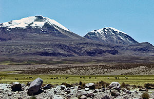<p><font size=2 >L'Acotango est le volcan le plus élevé du groupe de stratovolcans se trouvant à la frontière entre la Bolivie et le Chili. Ce groupe est connu sous le nom de Nevados de Quimsachata et comporte également les sommets de Humarata et . Son orientation suit une ligne nord-sud. Le volcan a subi une importante érosion, mais les coulées de lave sur sa face Nord sont morphologiquement jeunes, suggérant que l'Acotango ait pu être actif pendant l'Holocène.</p></body></div>`)[0];
            popup_d1369519c62e49fea5205c70af91f12c.setContent(html_c5cf68f0656042a3b1493643190ddbf0);
        

        marker_b14b5c25cdcd44838035687963611e97.bindPopup(popup_d1369519c62e49fea5205c70af91f12c)
        ;

        
    
    
            var marker_ce136bebb32e4cb7a93ebbe2209aad79 = L.marker(
                [-50.3333, -73.75],
                {}
            ).addTo(map_7c1f1d9a431841c5a1696d072c33924b);
        
    
            var icon_768e2594042444ed8046de5dfea60f78 = L.AwesomeMarkers.icon(
                {"extraClasses": "fa-rotate-0", "icon": "map-marker", "iconColor": "blue", "markerColor": "blue", "prefix": "glyphicon"}
            );
            marker_ce136bebb32e4cb7a93ebbe2209aad79.setIcon(icon_768e2594042444ed8046de5dfea60f78);
        
    
        var popup_578ee434f8974ff5982f09a1f118d222 = L.popup({"maxWidth": "100%"});

        
            var html_cd22b2c310404fac839f11fd384612dc = $(`<div id="html_cd22b2c310404fac839f11fd384612dc" style="width: 100.0%; height: 100.0%;"><h1>Aguilera</h1><body><p><font size=2 >L'Aguilera ou Cerro Aguilera, en espagnol Volcán Aguilera, est un volcan du Chili qui s'élève en bordure du champ de glace Sud de Patagonie. Il n'a été gravi pour la première fois qu'en 2014.</p></body></div>`)[0];
            popup_578ee434f8974ff5982f09a1f118d222.setContent(html_cd22b2c310404fac839f11fd384612dc);
        

        marker_ce136bebb32e4cb7a93ebbe2209aad79.bindPopup(popup_578ee434f8974ff5982f09a1f118d222)
        ;

        
    
    
            var marker_04d9fe35751c40edb98b49e20895430a = L.marker(
                [53.9833, 159.45],
                {}
            ).addTo(map_7c1f1d9a431841c5a1696d072c33924b);
        
    
            var icon_85b0c291053645cea1e653b2c78d9664 = L.AwesomeMarkers.icon(
                {"extraClasses": "fa-rotate-0", "icon": "map-marker", "iconColor": "blue", "markerColor": "blue", "prefix": "glyphicon"}
            );
            marker_04d9fe35751c40edb98b49e20895430a.setIcon(icon_85b0c291053645cea1e653b2c78d9664);
        
    
        var popup_1c9f9f7bdc974351929b536d8b05f6e1 = L.popup({"maxWidth": "100%"});

        
            var html_7011aadc00644b7fb4ceb947b63015dc = $(`<div id="html_7011aadc00644b7fb4ceb947b63015dc" style="width: 100.0%; height: 100.0%;"><h1>Akademia Nauk</h1><body>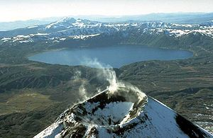<p><font size=2 >L'Akademia Naouk, en russe Академия Наук, littéralement en français « Académie des Sciences », est un volcan situé sur la péninsule du Kamtchatka, à l'est de la Russie. Il se présente sous la forme d'une caldeira partiellement remplie par le lac Karymski dominée au nord par le Karymski. Cette dépression s'inscrit dans une caldeira plus étendue, la de quinze kilomètres de diamètre qui inclut aussi la . Il tire son nom de l'académie russe des sciences, en russe : Росси́йская Акаде́мия Нау́к.</p></body></div>`)[0];
            popup_1c9f9f7bdc974351929b536d8b05f6e1.setContent(html_7011aadc00644b7fb4ceb947b63015dc);
        

        marker_04d9fe35751c40edb98b49e20895430a.bindPopup(popup_1c9f9f7bdc974351929b536d8b05f6e1)
        ;

        
    
    
            var marker_fe16e635d783482c8fd89b8b0e16e06c = L.marker(
                [14.875, 39.9167],
                {}
            ).addTo(map_7c1f1d9a431841c5a1696d072c33924b);
        
    
            var icon_4086271c36a6419da5741a1258e86526 = L.AwesomeMarkers.icon(
                {"extraClasses": "fa-rotate-0", "icon": "map-marker", "iconColor": "blue", "markerColor": "blue", "prefix": "glyphicon"}
            );
            marker_fe16e635d783482c8fd89b8b0e16e06c.setIcon(icon_4086271c36a6419da5741a1258e86526);
        
    
        var popup_f262c36489744920a0b097707d7b2e50 = L.popup({"maxWidth": "100%"});

        
            var html_028d7c1e40a74c0eb515138844f252c5 = $(`<div id="html_028d7c1e40a74c0eb515138844f252c5" style="width: 100.0%; height: 100.0%;"><h1>Alid</h1><body>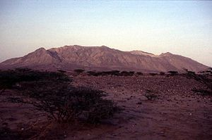<p><font size=2 >L'Alid, aussi appelé Alit est un volcan d'Érythrée.</p></body></div>`)[0];
            popup_f262c36489744920a0b097707d7b2e50.setContent(html_028d7c1e40a74c0eb515138844f252c5);
        

        marker_fe16e635d783482c8fd89b8b0e16e06c.bindPopup(popup_f262c36489744920a0b097707d7b2e50)
        ;

        
    
    
            var marker_76a157e60ae94684a4902724e3e0512f = L.marker(
                [14.8, -91.52],
                {}
            ).addTo(map_7c1f1d9a431841c5a1696d072c33924b);
        
    
            var icon_45c35ae486284c849924339e76925c59 = L.AwesomeMarkers.icon(
                {"extraClasses": "fa-rotate-0", "icon": "map-marker", "iconColor": "blue", "markerColor": "blue", "prefix": "glyphicon"}
            );
            marker_76a157e60ae94684a4902724e3e0512f.setIcon(icon_45c35ae486284c849924339e76925c59);
        
    
        var popup_bb59a58e50404107a817f94c4b846574 = L.popup({"maxWidth": "100%"});

        
            var html_0b08d2af45d34ef485ac1511fe7da8d9 = $(`<div id="html_0b08d2af45d34ef485ac1511fe7da8d9" style="width: 100.0%; height: 100.0%;"><h1>Almolonga volcano</h1><body>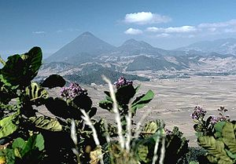<p><font size=2 >L'Almolonga ou Cerro Quemado (littéralement la « montagne brulée ») est un stratovolcan du Guatemala.</p></body></div>`)[0];
            popup_bb59a58e50404107a817f94c4b846574.setContent(html_0b08d2af45d34ef485ac1511fe7da8d9);
        

        marker_76a157e60ae94684a4902724e3e0512f.bindPopup(popup_bb59a58e50404107a817f94c4b846574)
        ;

        
    
    
            var marker_6491b4fc5ab94bdba75c1f78b2074ddd = L.marker(
                [-4.08333, 153.65],
                {}
            ).addTo(map_7c1f1d9a431841c5a1696d072c33924b);
        
    
            var icon_cf2bc3926a84471284b141016611e7e4 = L.AwesomeMarkers.icon(
                {"extraClasses": "fa-rotate-0", "icon": "map-marker", "iconColor": "blue", "markerColor": "blue", "prefix": "glyphicon"}
            );
            marker_6491b4fc5ab94bdba75c1f78b2074ddd.setIcon(icon_cf2bc3926a84471284b141016611e7e4);
        
    
        var popup_b4530f31319949288d058bd708a0023d = L.popup({"maxWidth": "100%"});

        
            var html_3b133daa1a4f4f03a4fbcc53eb84e0f8 = $(`<div id="html_3b133daa1a4f4f03a4fbcc53eb84e0f8" style="width: 100.0%; height: 100.0%;"><h1>Ambitle</h1><body><p><font size=2 >Ambitle est une île volcanique de Papouasie-Nouvelle-Guinée, qui forme avec Babase le groupe des îles Feni, dans l'archipel Bismarck.</p></body></div>`)[0];
            popup_b4530f31319949288d058bd708a0023d.setContent(html_3b133daa1a4f4f03a4fbcc53eb84e0f8);
        

        marker_6491b4fc5ab94bdba75c1f78b2074ddd.bindPopup(popup_b4530f31319949288d058bd708a0023d)
        ;

        
    
    
            var marker_a424c903894949dbae8acee59e0ed5ad = L.marker(
                [-15.8167, -71.8833],
                {}
            ).addTo(map_7c1f1d9a431841c5a1696d072c33924b);
        
    
            var icon_24465ba94a7c4e30ad9afed9d444b3f6 = L.AwesomeMarkers.icon(
                {"extraClasses": "fa-rotate-0", "icon": "map-marker", "iconColor": "blue", "markerColor": "blue", "prefix": "glyphicon"}
            );
            marker_a424c903894949dbae8acee59e0ed5ad.setIcon(icon_24465ba94a7c4e30ad9afed9d444b3f6);
        
    
        var popup_f4ac6836be4d422dbccc2b3239dd8bbd = L.popup({"maxWidth": "100%"});

        
            var html_e470bf593005441f8abdf931cada6eec = $(`<div id="html_e470bf593005441f8abdf931cada6eec" style="width: 100.0%; height: 100.0%;"><h1>Ampato</h1><body><p><font size=2 >L'Ampato est un volcan endormi de 6 288 mètres d'altitude situé à 85 km au nord-ouest d'Arequipa dans les Andes au sud du Pérou.</p></body></div>`)[0];
            popup_f4ac6836be4d422dbccc2b3239dd8bbd.setContent(html_e470bf593005441f8abdf931cada6eec);
        

        marker_a424c903894949dbae8acee59e0ed5ad.bindPopup(popup_f4ac6836be4d422dbccc2b3239dd8bbd)
        ;

        
    
    
            var marker_481837edf39f497a9ec04a2636720530 = L.marker(
                [-40.7708, -72.1533],
                {}
            ).addTo(map_7c1f1d9a431841c5a1696d072c33924b);
        
    
            var icon_2050afc0df614d16b60bf1f93f3154a1 = L.AwesomeMarkers.icon(
                {"extraClasses": "fa-rotate-0", "icon": "map-marker", "iconColor": "blue", "markerColor": "blue", "prefix": "glyphicon"}
            );
            marker_481837edf39f497a9ec04a2636720530.setIcon(icon_2050afc0df614d16b60bf1f93f3154a1);
        
    
        var popup_97f15d767ec74b6a83860efbfdcba0e2 = L.popup({"maxWidth": "100%"});

        
            var html_afefdf489d744ce7b932cfdf5e376c58 = $(`<div id="html_afefdf489d744ce7b932cfdf5e376c58" style="width: 100.0%; height: 100.0%;"><h1>Antillanca Group</h1><body>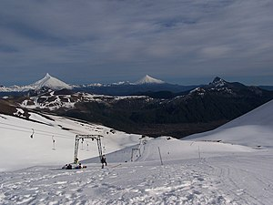<p><font size=2 >L'Antillanca est un ensemble de volcans du Chili constitué de plusieurs stratovolcans, maars et cônes pyroclastiques couvrant une superficie de 380 km2. Le plus élevé d'entre eux est le avec 1 990 mètres d'altitude.</p></body></div>`)[0];
            popup_97f15d767ec74b6a83860efbfdcba0e2.setContent(html_afefdf489d744ce7b932cfdf5e376c58);
        

        marker_481837edf39f497a9ec04a2636720530.bindPopup(popup_97f15d767ec74b6a83860efbfdcba0e2)
        ;

        
    
    
            var marker_1d0483f66e5a43b4b53e597e812f8936 = L.marker(
                [-0.481389, -78.1408],
                {}
            ).addTo(map_7c1f1d9a431841c5a1696d072c33924b);
        
    
            var icon_2ff6d8d598644e9c9a6d5b2ac879abf0 = L.AwesomeMarkers.icon(
                {"extraClasses": "fa-rotate-0", "icon": "map-marker", "iconColor": "blue", "markerColor": "blue", "prefix": "glyphicon"}
            );
            marker_1d0483f66e5a43b4b53e597e812f8936.setIcon(icon_2ff6d8d598644e9c9a6d5b2ac879abf0);
        
    
        var popup_632e571b2da44e73b5fd45005b83fa29 = L.popup({"maxWidth": "100%"});

        
            var html_f9c7556cae724096b9501ea7f4834e82 = $(`<div id="html_f9c7556cae724096b9501ea7f4834e82" style="width: 100.0%; height: 100.0%;"><h1>Antisana</h1><body><p><font size=2 >L'Antisana est un stratovolcan, culminant à 5 758 m, de la cordillère des Andes, situé en Équateur, dans la province de Napo. Sa dernière éruption remonte à 1801.</p></body></div>`)[0];
            popup_632e571b2da44e73b5fd45005b83fa29.setContent(html_f9c7556cae724096b9501ea7f4834e82);
        

        marker_1d0483f66e5a43b4b53e597e812f8936.bindPopup(popup_632e571b2da44e73b5fd45005b83fa29)
        ;

        
    
    
            var marker_6eaeead015074024bbc93cae59f56ece = L.marker(
                [-25.55, -67.8833],
                {}
            ).addTo(map_7c1f1d9a431841c5a1696d072c33924b);
        
    
            var icon_542d04d183f54ec2b64bfc535eef23a2 = L.AwesomeMarkers.icon(
                {"extraClasses": "fa-rotate-0", "icon": "map-marker", "iconColor": "blue", "markerColor": "blue", "prefix": "glyphicon"}
            );
            marker_6eaeead015074024bbc93cae59f56ece.setIcon(icon_542d04d183f54ec2b64bfc535eef23a2);
        
    
        var popup_ca5856b5dde44b58b281b0d1a69d4277 = L.popup({"maxWidth": "100%"});

        
            var html_74936ff6511c48a884e203c9df8ea701 = $(`<div id="html_74936ff6511c48a884e203c9df8ea701" style="width: 100.0%; height: 100.0%;"><h1>Antofalla</h1><body>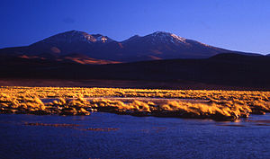<p><font size=2 >Le volcan Antofalla est un stratovolcan actif d'Argentine. Il est situé dans la province de Catamarca, département d'Antofagasta de la Sierra.</p></body></div>`)[0];
            popup_ca5856b5dde44b58b281b0d1a69d4277.setContent(html_74936ff6511c48a884e203c9df8ea701);
        

        marker_6eaeead015074024bbc93cae59f56ece.bindPopup(popup_ca5856b5dde44b58b281b0d1a69d4277)
        ;

        
    
    
            var marker_a66dedd0380744d38998a39e3740e215 = L.marker(
                [-37.4058, -71.3492],
                {}
            ).addTo(map_7c1f1d9a431841c5a1696d072c33924b);
        
    
            var icon_54687b9e5e934c459760d0402a9ee1e8 = L.AwesomeMarkers.icon(
                {"extraClasses": "fa-rotate-0", "icon": "map-marker", "iconColor": "blue", "markerColor": "blue", "prefix": "glyphicon"}
            );
            marker_a66dedd0380744d38998a39e3740e215.setIcon(icon_54687b9e5e934c459760d0402a9ee1e8);
        
    
        var popup_448b0945188d48e1b7950069405da091 = L.popup({"maxWidth": "100%"});

        
            var html_b2f657c7a05645ddbdef419b59097299 = $(`<div id="html_b2f657c7a05645ddbdef419b59097299" style="width: 100.0%; height: 100.0%;"><h1>Antuco</h1><body>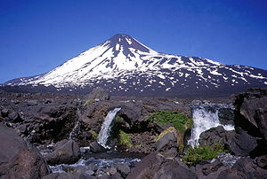<p><font size=2 >L'Antuco est un volcan du Chili constitué d'un stratovolcan s'élevant au sud-ouest de la . Il est situé à l'intérieur du parc national Laguna del Laja.</p></body></div>`)[0];
            popup_448b0945188d48e1b7950069405da091.setContent(html_b2f657c7a05645ddbdef419b59097299);
        

        marker_a66dedd0380744d38998a39e3740e215.bindPopup(popup_448b0945188d48e1b7950069405da091)
        ;

        
    
    
            var marker_2f59973f87e5455ba36a42e9c548ba6c = L.marker(
                [-24.29, -67.7833],
                {}
            ).addTo(map_7c1f1d9a431841c5a1696d072c33924b);
        
    
            var icon_03dd426e56ed4664b61b1a752d2bc932 = L.AwesomeMarkers.icon(
                {"extraClasses": "fa-rotate-0", "icon": "map-marker", "iconColor": "blue", "markerColor": "blue", "prefix": "glyphicon"}
            );
            marker_2f59973f87e5455ba36a42e9c548ba6c.setIcon(icon_03dd426e56ed4664b61b1a752d2bc932);
        
    
        var popup_832ffa6db11943628c119ad5c562ed4d = L.popup({"maxWidth": "100%"});

        
            var html_f77c5314c7ee487b92a7075178d5a29f = $(`<div id="html_f77c5314c7ee487b92a7075178d5a29f" style="width: 100.0%; height: 100.0%;"><h1>Aracar</h1><body>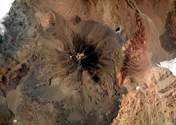<p><font size=2 >Le volcan Aracar, est un stratovolcan actif mais au repos actuellement, qui se trouve dans la province argentine de Salta (département de Los Andes). Son altitude est de 6 095 mètres.</p></body></div>`)[0];
            popup_832ffa6db11943628c119ad5c562ed4d.setContent(html_f77c5314c7ee487b92a7075178d5a29f);
        

        marker_2f59973f87e5455ba36a42e9c548ba6c.bindPopup(popup_832ffa6db11943628c119ad5c562ed4d)
        ;

        
    
    
            var marker_68d656ab340b4d34ac9b3e1a7a6a1a38 = L.marker(
                [10.4633, -84.7033],
                {}
            ).addTo(map_7c1f1d9a431841c5a1696d072c33924b);
        
    
            var icon_b1f3f59d252f41c0bb12a1384da98d4d = L.AwesomeMarkers.icon(
                {"extraClasses": "fa-rotate-0", "icon": "map-marker", "iconColor": "blue", "markerColor": "blue", "prefix": "glyphicon"}
            );
            marker_68d656ab340b4d34ac9b3e1a7a6a1a38.setIcon(icon_b1f3f59d252f41c0bb12a1384da98d4d);
        
    
        var popup_e06b81440b9c4b59a01555b859ee351b = L.popup({"maxWidth": "100%"});

        
            var html_fc0ad5092af54906a021a4c67421b3b8 = $(`<div id="html_fc0ad5092af54906a021a4c67421b3b8" style="width: 100.0%; height: 100.0%;"><h1>Arenal Volcano</h1><body>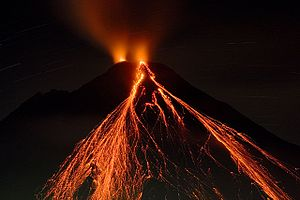<p><font size=2 >L'Arenal, aussi appelé cerro Arenal, volcán de los Canaste, volcán de Costa Rica, Guatusos Peak, cerro de los Guatusos, Pan de Azúcar, Pelón, Los ahogados ou encore volcán de Río Frío, est un volcan du Costa Rica ayant une forme conique quasiment symétrique. Plus jeune volcan du Costa Rica, il est en éruption du 29 juillet 1968 à décembre 2010.</p></body></div>`)[0];
            popup_e06b81440b9c4b59a01555b859ee351b.setContent(html_fc0ad5092af54906a021a4c67421b3b8);
        

        marker_68d656ab340b4d34ac9b3e1a7a6a1a38.bindPopup(popup_e06b81440b9c4b59a01555b859ee351b)
        ;

        
    
    
            var marker_4f52a715fb4d408d9408650ac14df182 = L.marker(
                [-18.7472, -69.0667],
                {}
            ).addTo(map_7c1f1d9a431841c5a1696d072c33924b);
        
    
            var icon_3a8895cd328048dd9820ec80a280eeb1 = L.AwesomeMarkers.icon(
                {"extraClasses": "fa-rotate-0", "icon": "map-marker", "iconColor": "blue", "markerColor": "blue", "prefix": "glyphicon"}
            );
            marker_4f52a715fb4d408d9408650ac14df182.setIcon(icon_3a8895cd328048dd9820ec80a280eeb1);
        
    
        var popup_7b12c6eec6f14417b3fc89607b65ccfa = L.popup({"maxWidth": "100%"});

        
            var html_c2df64e62189444986710723b94040a2 = $(`<div id="html_c2df64e62189444986710723b94040a2" style="width: 100.0%; height: 100.0%;"><h1>Arintica</h1><body><p><font size=2 >L'Arintica est un stratovolcan du Chili situé dans la région d'Arica et Parinacota, à proximité de la frontière avec la Bolivie. Il culmine à 5 597 mètres d'altitude.</p></body></div>`)[0];
            popup_7b12c6eec6f14417b3fc89607b65ccfa.setContent(html_c2df64e62189444986710723b94040a2);
        

        marker_4f52a715fb4d408d9408650ac14df182.bindPopup(popup_7b12c6eec6f14417b3fc89607b65ccfa)
        ;

        
    
    
            var marker_44b9a5abcdbd490ca6f70c01134377e3 = L.marker(
                [-7.76444, 112.589],
                {}
            ).addTo(map_7c1f1d9a431841c5a1696d072c33924b);
        
    
            var icon_c694e43b0c2e44559a3332a7692bcee9 = L.AwesomeMarkers.icon(
                {"extraClasses": "fa-rotate-0", "icon": "map-marker", "iconColor": "blue", "markerColor": "blue", "prefix": "glyphicon"}
            );
            marker_44b9a5abcdbd490ca6f70c01134377e3.setIcon(icon_c694e43b0c2e44559a3332a7692bcee9);
        
    
        var popup_39926b0adb0a47fe9b8c1da7a5ce3fc1 = L.popup({"maxWidth": "100%"});

        
            var html_cf4671fa09e941239ef55b65cdb4ee0e = $(`<div id="html_cf4671fa09e941239ef55b65cdb4ee0e" style="width: 100.0%; height: 100.0%;"><h1>Arjuno‑Welirang</h1><body><p><font size=2 >L'Arjuno-Welirang est un volcan d'Indonésie situé dans l'Est de l'île de Java.</p></body></div>`)[0];
            popup_39926b0adb0a47fe9b8c1da7a5ce3fc1.setContent(html_cf4671fa09e941239ef55b65cdb4ee0e);
        

        marker_44b9a5abcdbd490ca6f70c01134377e3.bindPopup(popup_39926b0adb0a47fe9b8c1da7a5ce3fc1)
        ;

        
    
    
            var marker_ff3cc5d73a74407d9491d62902cc4802 = L.marker(
                [-0.352778, -78.6169],
                {}
            ).addTo(map_7c1f1d9a431841c5a1696d072c33924b);
        
    
            var icon_94332ff24a1c42e29cc46b593ad2322a = L.AwesomeMarkers.icon(
                {"extraClasses": "fa-rotate-0", "icon": "map-marker", "iconColor": "blue", "markerColor": "blue", "prefix": "glyphicon"}
            );
            marker_ff3cc5d73a74407d9491d62902cc4802.setIcon(icon_94332ff24a1c42e29cc46b593ad2322a);
        
    
        var popup_4227acaa3d7943ada6566a0940a99ff3 = L.popup({"maxWidth": "100%"});

        
            var html_8ec98804720040aca96a0364cb2f44d5 = $(`<div id="html_8ec98804720040aca96a0364cb2f44d5" style="width: 100.0%; height: 100.0%;"><h1>Atacazo</h1><body><p><font size=2 >L'Atacazo est un volcan à une dizaine de kilomètres au sud-ouest de Quito. Il n'est pas en activité actuellement.</p></body></div>`)[0];
            popup_4227acaa3d7943ada6566a0940a99ff3.setContent(html_8ec98804720040aca96a0364cb2f44d5);
        

        marker_ff3cc5d73a74407d9491d62902cc4802.bindPopup(popup_4227acaa3d7943ada6566a0940a99ff3)
        ;

        
    
    
            var marker_bcac114ed0344970a7d661bfd4d5395b = L.marker(
                [50.8608, 155.564],
                {}
            ).addTo(map_7c1f1d9a431841c5a1696d072c33924b);
        
    
            var icon_dfce936395294713802d4650409c6753 = L.AwesomeMarkers.icon(
                {"extraClasses": "fa-rotate-0", "icon": "map-marker", "iconColor": "blue", "markerColor": "blue", "prefix": "glyphicon"}
            );
            marker_bcac114ed0344970a7d661bfd4d5395b.setIcon(icon_dfce936395294713802d4650409c6753);
        
    
        var popup_aaf91651e73e431dbd9501a97351bec3 = L.popup({"maxWidth": "100%"});

        
            var html_57ef96dad53e4604ac9bccf6e7dbbaf0 = $(`<div id="html_57ef96dad53e4604ac9bccf6e7dbbaf0" style="width: 100.0%; height: 100.0%;"><h1>Atlasov</h1><body><p><font size=2 >L'île Atlassov (en russe : Остров Атласова, en japonais : 阿頼度島, Araido) est une île volcanique, la plus septentrionale des îles Kouriles, dans l'oblast de Sakhaline, à l'est de la Russie. L'île figure parfois sous les noms d'Ouïakhoujatch, d'Oyakoba et d'Alaïd. L'île porte le nom de Vladimir Atlassov, un explorateur russe du XVIIe siècle qui la rattacha à la péninsule voisine du Kamtchatka. L'île est essentiellement le cône d'un volcan sous-marin appelé Alaïd qui dépasse de la mer d'Okhotsk et culmine à une altitude de 2 339 m (point culminant des îles Kouriles). L'île a une superficie de 119 km2. Elle est actuellement inhabitée. Le volcan alterne avec les périodes actives, et les périodes calmes de repos, ce qui fait que l'île est potentiellement dangereuse à être habitée. L'île possède quelques sources d'eau chaude, non exploitées. Avec la teneur en souffre de la terre, la végétation est constituée de plantes basses, et de seulement quelques arbres. La forme presque parfaite de son volcan est à l'origine de nombreuses légendes parmi les peuples de la région, tels que les Itelmènes et les Aïnous des Kouriles. Le scientifique russe Stepan Kracheninnikov (1711–1756) entendit une fois que le volcan était autrefois une montagne du Kamtchatka, mais que les montagnes voisines devinrent jalouses de sa beauté et l'exilèrent en pleine mer, laissant à sa place le lac Kourile dans le sud du Kamtchatka. Géographiquement, cette histoire n'est pas sans fondement, car après la dernière période glaciaire la plupart des calottes fondirent, relevant le niveau des mers et submergeant peut-être un bras de terre entre le continent et le volcan.[réf. nécessaire]</p></body></div>`)[0];
            popup_aaf91651e73e431dbd9501a97351bec3.setContent(html_57ef96dad53e4604ac9bccf6e7dbbaf0);
        

        marker_bcac114ed0344970a7d661bfd4d5395b.bindPopup(popup_aaf91651e73e431dbd9501a97351bec3)
        ;

        
    
    
            var marker_79d988a090b64a45905bf478b2955794 = L.marker(
                [-21.1833, -68.5833],
                {}
            ).addTo(map_7c1f1d9a431841c5a1696d072c33924b);
        
    
            var icon_4431785e919945858eeae98e50b15658 = L.AwesomeMarkers.icon(
                {"extraClasses": "fa-rotate-0", "icon": "map-marker", "iconColor": "blue", "markerColor": "blue", "prefix": "glyphicon"}
            );
            marker_79d988a090b64a45905bf478b2955794.setIcon(icon_4431785e919945858eeae98e50b15658);
        
    
        var popup_d8ea6ac8f9b544d18230a76344725518 = L.popup({"maxWidth": "100%"});

        
            var html_c901e7c7de5f4e49b1ae448a2c7352ad = $(`<div id="html_c901e7c7de5f4e49b1ae448a2c7352ad" style="width: 100.0%; height: 100.0%;"><h1>Aucanquilcha</h1><body>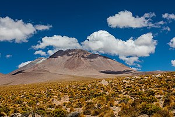<p><font size=2 >L'Aucanquilcha est un stratovolcan situé dans le Nord du Chili dans la région d'Antofagasta, près de la frontière avec la Bolivie. Il culmine à l'altitude de 6 176 m. La dernière éruption date du Pléistocène. Une légère activité de fumeroles persiste cependant, et des dépôts de soufre se forment à son sommet. Une mine de sulfure ouverte en 1913 à 5 950 m d'altitude y a été en exploitation entre 1950 et 1992 ; c'était à cette époque la plus haute mine du monde.</p></body></div>`)[0];
            popup_d8ea6ac8f9b544d18230a76344725518.setContent(html_c901e7c7de5f4e49b1ae448a2c7352ad);
        

        marker_79d988a090b64a45905bf478b2955794.bindPopup(popup_d8ea6ac8f9b544d18230a76344725518)
        ;

        
    
    
            var marker_08a5bb2b31c64e398c8684acb70b83ff = L.marker(
                [53.255, 158.83],
                {}
            ).addTo(map_7c1f1d9a431841c5a1696d072c33924b);
        
    
            var icon_5bc4de4e2d52467f95a1be098a73e5d1 = L.AwesomeMarkers.icon(
                {"extraClasses": "fa-rotate-0", "icon": "map-marker", "iconColor": "blue", "markerColor": "blue", "prefix": "glyphicon"}
            );
            marker_08a5bb2b31c64e398c8684acb70b83ff.setIcon(icon_5bc4de4e2d52467f95a1be098a73e5d1);
        
    
        var popup_4bdd2cc6c25c4f87bd769b31412ca0c1 = L.popup({"maxWidth": "100%"});

        
            var html_f4d6b8e36caf47189dca8d0cd8ed33c2 = $(`<div id="html_f4d6b8e36caf47189dca8d0cd8ed33c2" style="width: 100.0%; height: 100.0%;"><h1>Avachinsky</h1><body><p><font size=2 >L'Avatchinski, appelé également Avatcha, (en transcription allemande : Awatscha, Awatschinskij), Gorelaïa sopka, Monastyr, Saria ou encore Souatchou, en russe Avatchinskaïa sopka, Авачинская сопка, est un volcan de Russie situé dans le sud de la péninsule du Kamtchatka, dans le kraï du même nom.</p></body></div>`)[0];
            popup_4bdd2cc6c25c4f87bd769b31412ca0c1.setContent(html_f4d6b8e36caf47189dca8d0cd8ed33c2);
        

        marker_08a5bb2b31c64e398c8684acb70b83ff.bindPopup(popup_4bdd2cc6c25c4f87bd769b31412ca0c1)
        ;

        
    
    
            var marker_e6ad7923d88549d599ba797a74e8e197 = L.marker(
                [1.08333, -77.6833],
                {}
            ).addTo(map_7c1f1d9a431841c5a1696d072c33924b);
        
    
            var icon_a04666c898de4fbf8c108a76078b5f45 = L.AwesomeMarkers.icon(
                {"extraClasses": "fa-rotate-0", "icon": "map-marker", "iconColor": "blue", "markerColor": "blue", "prefix": "glyphicon"}
            );
            marker_e6ad7923d88549d599ba797a74e8e197.setIcon(icon_a04666c898de4fbf8c108a76078b5f45);
        
    
        var popup_218b6fdd774e44b89068bea96dd8d7db = L.popup({"maxWidth": "100%"});

        
            var html_1c1bbfebe3844f8d967c3d31dc01f0be = $(`<div id="html_1c1bbfebe3844f8d967c3d31dc01f0be" style="width: 100.0%; height: 100.0%;"><h1>Azufral</h1><body><p><font size=2 >L'Azufral ou Azufral de Túquerres est un stratovolcan de Colombie. Il est situé dans le département de Nariño, au sud-ouest du pays, dans la cordillère Occidentale des Andes colombiennes.</p></body></div>`)[0];
            popup_218b6fdd774e44b89068bea96dd8d7db.setContent(html_1c1bbfebe3844f8d967c3d31dc01f0be);
        

        marker_e6ad7923d88549d599ba797a74e8e197.bindPopup(popup_218b6fdd774e44b89068bea96dd8d7db)
        ;

        
    
    
            var marker_0dacccb701f4411491bade3452e9e97a = L.marker(
                [-4.03333, 153.717],
                {}
            ).addTo(map_7c1f1d9a431841c5a1696d072c33924b);
        
    
            var icon_7c175fc3b9a4447c975c8263937fb3b5 = L.AwesomeMarkers.icon(
                {"extraClasses": "fa-rotate-0", "icon": "map-marker", "iconColor": "blue", "markerColor": "blue", "prefix": "glyphicon"}
            );
            marker_0dacccb701f4411491bade3452e9e97a.setIcon(icon_7c175fc3b9a4447c975c8263937fb3b5);
        
    
        var popup_0b99c2bee96946c3ba35c59719f4918f = L.popup({"maxWidth": "100%"});

        
            var html_e240ed2ae0cc4e418b4c36e5db725d16 = $(`<div id="html_e240ed2ae0cc4e418b4c36e5db725d16" style="width: 100.0%; height: 100.0%;"><h1>Babase</h1><body><p><font size=2 >Babase est une île volcanique de Papouasie-Nouvelle-Guinée, qui forme avec Ambitle le groupe des îles Feni, dans l'archipel Bismarck.</p></body></div>`)[0];
            popup_0b99c2bee96946c3ba35c59719f4918f.setContent(html_e240ed2ae0cc4e418b4c36e5db725d16);
        

        marker_0dacccb701f4411491bade3452e9e97a.bindPopup(popup_0b99c2bee96946c3ba35c59719f4918f)
        ;

        
    
    
            var marker_cd935459ba254de49f51bb7a458baed3 = L.marker(
                [8.80881, -82.5423],
                {}
            ).addTo(map_7c1f1d9a431841c5a1696d072c33924b);
        
    
            var icon_2146849e74cf475492b49ce54816451e = L.AwesomeMarkers.icon(
                {"extraClasses": "fa-rotate-0", "icon": "map-marker", "iconColor": "blue", "markerColor": "blue", "prefix": "glyphicon"}
            );
            marker_cd935459ba254de49f51bb7a458baed3.setIcon(icon_2146849e74cf475492b49ce54816451e);
        
    
        var popup_0a19487cdf034c61ad238ec810b515ba = L.popup({"maxWidth": "100%"});

        
            var html_9b59118491f04f3abf8c200d107080af = $(`<div id="html_9b59118491f04f3abf8c200d107080af" style="width: 100.0%; height: 100.0%;"><h1>Barú</h1><body>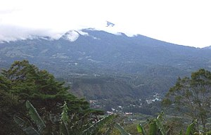<p><font size=2 >Le Barú ou Volcán de Chiriquí est un volcan endormi de la cordillère de Talamanca, à l'Ouest du Panama. Il constitue le point culminant du pays avec 3 474 mètres d'altitude. Sa riche végétation est protégée au nord par un parc national.</p></body></div>`)[0];
            popup_0a19487cdf034c61ad238ec810b515ba.setContent(html_9b59118491f04f3abf8c200d107080af);
        

        marker_cd935459ba254de49f51bb7a458baed3.bindPopup(popup_0a19487cdf034c61ad238ec810b515ba)
        ;

        
    
    
            var marker_d43ca99c35a840e5b41ce3bbfb07c94e = L.marker(
                [71.0767, -8.16444],
                {}
            ).addTo(map_7c1f1d9a431841c5a1696d072c33924b);
        
    
            var icon_44d5e66081c241b6afcaa58bcd514397 = L.AwesomeMarkers.icon(
                {"extraClasses": "fa-rotate-0", "icon": "map-marker", "iconColor": "blue", "markerColor": "blue", "prefix": "glyphicon"}
            );
            marker_d43ca99c35a840e5b41ce3bbfb07c94e.setIcon(icon_44d5e66081c241b6afcaa58bcd514397);
        
    
        var popup_4a46d0ce5d6144509a402bf8833c6770 = L.popup({"maxWidth": "100%"});

        
            var html_cedc0a7a681f41358745cee8e971cb09 = $(`<div id="html_cedc0a7a681f41358745cee8e971cb09" style="width: 100.0%; height: 100.0%;"><h1>Beerenberg</h1><body><p><font size=2 >Le Beerenberg (nom néerlandais pour « Montagne des ours ») est un volcan de l'île de Jan Mayen située entre la mer du Groenland (océan Arctique) au nord-ouest et la mer de Norvège (océan Atlantique) au sud-est.</p></body></div>`)[0];
            popup_4a46d0ce5d6144509a402bf8833c6770.setContent(html_cedc0a7a681f41358745cee8e971cb09);
        

        marker_d43ca99c35a840e5b41ce3bbfb07c94e.bindPopup(popup_4a46d0ce5d6144509a402bf8833c6770)
        ;

        
    
    
            var marker_11f699a51f3049048ebe901536a086da = L.marker(
                [55.9783, 160.587],
                {}
            ).addTo(map_7c1f1d9a431841c5a1696d072c33924b);
        
    
            var icon_e34f8ab573044a82a3133b7542f6f729 = L.AwesomeMarkers.icon(
                {"extraClasses": "fa-rotate-0", "icon": "map-marker", "iconColor": "blue", "markerColor": "blue", "prefix": "glyphicon"}
            );
            marker_11f699a51f3049048ebe901536a086da.setIcon(icon_e34f8ab573044a82a3133b7542f6f729);
        
    
        var popup_c1a9ae9dfe0146fab3801c1287a8d299 = L.popup({"maxWidth": "100%"});

        
            var html_4ebb8ff332ea40cebd79ac841ccd9dde = $(`<div id="html_4ebb8ff332ea40cebd79ac841ccd9dde" style="width: 100.0%; height: 100.0%;"><h1>Bezymianny</h1><body><p><font size=2 >Le Bezymianny, en cyrillique Безымянный, terme russe qui signifie littéralement « sans nom » en français, est un volcan de Russie situé dans la péninsule du Kamtchatka. Il est voisin des volcans Kamen, Ouchkovski et Klioutchevskoï situés immédiatement au nord et du Tolbatchik situé au sud. Alors considéré comme éteint, le volcan entame une nouvelle phase éruptive en 1955 lorsqu'il entre dans une violente éruption qui sera suivie par des dizaines d'autres.</p></body></div>`)[0];
            popup_c1a9ae9dfe0146fab3801c1287a8d299.setContent(html_4ebb8ff332ea40cebd79ac841ccd9dde);
        

        marker_11f699a51f3049048ebe901536a086da.bindPopup(popup_c1a9ae9dfe0146fab3801c1287a8d299)
        ;

        
    
    
            var marker_3cd3673314e440cb9a8f0b85e7955fb3 = L.marker(
                [63.9808, -19.1458],
                {}
            ).addTo(map_7c1f1d9a431841c5a1696d072c33924b);
        
    
            var icon_38a21d5dd90c46a89d75a9f986026f6a = L.AwesomeMarkers.icon(
                {"extraClasses": "fa-rotate-0", "icon": "map-marker", "iconColor": "blue", "markerColor": "blue", "prefix": "glyphicon"}
            );
            marker_3cd3673314e440cb9a8f0b85e7955fb3.setIcon(icon_38a21d5dd90c46a89d75a9f986026f6a);
        
    
        var popup_2437d67536c54d708196b796ac2f7f69 = L.popup({"maxWidth": "100%"});

        
            var html_e45abde5191d41ca84dbf2f9d17692cb = $(`<div id="html_e45abde5191d41ca84dbf2f9d17692cb" style="width: 100.0%; height: 100.0%;"><h1>Brennisteinsalda</h1><body><p><font size=2 >La Brennisteinsalda est un volcan culminant à 881 m, appartenant au complexe de volcans Torfajökull situé dans le Sud de l'Islande. Le nom signifie « onde soufrée » (de l'islandais alda : « vague », stein : « pierre », et brenna : « brûler ») en référence aux solfatares à son pied qui dégagent une vapeur qu'on aperçoit de loin, notamment depuis le camp du Landmannalaugar. Cette montagne, relativement facile à escalader, présente un ensemble de couleurs très impressionnant : le rouge du fer, le jaune des sulfures, le bleu et le noir de la lave, le vert des lichens d'Islande. C'est une des montagnes les plus photogéniques d'Islande dont on retrouve souvent les images dans les publications. Quand on emprunte la Laugavegur, du Landmannalaugar pour aller à Þórsmörk, on passe sur le flanc Sud-Ouest de cette montagne.  </p></body></div>`)[0];
            popup_2437d67536c54d708196b796ac2f7f69.setContent(html_e45abde5191d41ca84dbf2f9d17692cb);
        

        marker_3cd3673314e440cb9a8f0b85e7955fb3.bindPopup(popup_2437d67536c54d708196b796ac2f7f69)
        ;

        
    
    
            var marker_af3317c5bb244908b7fb6405f831dfa3 = L.marker(
                [-67.6833, 164.967],
                {}
            ).addTo(map_7c1f1d9a431841c5a1696d072c33924b);
        
    
            var icon_7a42b2939847482e8c52407d9198a95d = L.AwesomeMarkers.icon(
                {"extraClasses": "fa-rotate-0", "icon": "map-marker", "iconColor": "blue", "markerColor": "blue", "prefix": "glyphicon"}
            );
            marker_af3317c5bb244908b7fb6405f831dfa3.setIcon(icon_7a42b2939847482e8c52407d9198a95d);
        
    
        var popup_fd918210ad81413b8b71be8f9552b03f = L.popup({"maxWidth": "100%"});

        
            var html_577038f80242452aa5161732d6868f0a = $(`<div id="html_577038f80242452aa5161732d6868f0a" style="width: 100.0%; height: 100.0%;"><h1>Brown Peak</h1><body>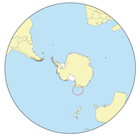<p><font size=2 >Le pic Brown (en anglais : Brown Peak) est un volcan de l'île Sturge en Antarctique. S'élevant à 1 524 m d'altitude, il est le point culminant des îles Balleny.</p></body></div>`)[0];
            popup_fd918210ad81413b8b71be8f9552b03f.setContent(html_577038f80242452aa5161732d6868f0a);
        

        marker_af3317c5bb244908b7fb6405f831dfa3.bindPopup(popup_fd918210ad81413b8b71be8f9552b03f)
        ;

        
    
    
            var marker_8437e19673d74f7ebdede648b8bb08a6 = L.marker(
                [12.77, 124.05],
                {}
            ).addTo(map_7c1f1d9a431841c5a1696d072c33924b);
        
    
            var icon_500ec0835b7e47aca64f7aaba97c2928 = L.AwesomeMarkers.icon(
                {"extraClasses": "fa-rotate-0", "icon": "map-marker", "iconColor": "blue", "markerColor": "blue", "prefix": "glyphicon"}
            );
            marker_8437e19673d74f7ebdede648b8bb08a6.setIcon(icon_500ec0835b7e47aca64f7aaba97c2928);
        
    
        var popup_16b622abdf304900bf9aa363427523c7 = L.popup({"maxWidth": "100%"});

        
            var html_9d3002dfb8214e0595b1e12d88063f08 = $(`<div id="html_9d3002dfb8214e0595b1e12d88063f08" style="width: 100.0%; height: 100.0%;"><h1>Bulusan Volcano</h1><body><p><font size=2 >Le Bulusan est un volcan situé sur l'île de Luçon aux Philippines.  </p></body></div>`)[0];
            popup_16b622abdf304900bf9aa363427523c7.setContent(html_9d3002dfb8214e0595b1e12d88063f08);
        

        marker_8437e19673d74f7ebdede648b8bb08a6.bindPopup(popup_16b622abdf304900bf9aa363427523c7)
        ;

        
    
    
            var marker_bddb2b7861d54ba681e2fd4d1d46d418 = L.marker(
                [64.6411, -17.5281],
                {}
            ).addTo(map_7c1f1d9a431841c5a1696d072c33924b);
        
    
            var icon_b3e1aa7101a94aba80266bdb2afaeba7 = L.AwesomeMarkers.icon(
                {"extraClasses": "fa-rotate-0", "icon": "map-marker", "iconColor": "blue", "markerColor": "blue", "prefix": "glyphicon"}
            );
            marker_bddb2b7861d54ba681e2fd4d1d46d418.setIcon(icon_b3e1aa7101a94aba80266bdb2afaeba7);
        
    
        var popup_8349bc4cad4d49dea94b60f899bf70f7 = L.popup({"maxWidth": "100%"});

        
            var html_020d7442afac4327b1ee3b645e7e6377 = $(`<div id="html_020d7442afac4327b1ee3b645e7e6377" style="width: 100.0%; height: 100.0%;"><h1>Bárðarbunga</h1><body><p><font size=2 >Le Bárðarbunga (prononcé [ˈpaurðarpuŋka] ), toponyme islandais signifiant littéralement en français « bosse de Bárður » (prénom islandais), aussi appelé Bárðarbunga-Veiðivötn du nom d'une fissure volcanique associée au volcan central, est un volcan d'Islande situé sous le Vatnajökull, la plus grande calotte glaciaire du pays. Second plus haut volcan d'Islande, il est voisin du Grímsvötn, un autre volcan sous-glaciaire connu pour ses jökulhlaups.</p></body></div>`)[0];
            popup_8349bc4cad4d49dea94b60f899bf70f7.setContent(html_020d7442afac4327b1ee3b645e7e6377);
        

        marker_bddb2b7861d54ba681e2fd4d1d46d418.bindPopup(popup_8349bc4cad4d49dea94b60f899bf70f7)
        ;

        
    
    
            var marker_72ae307f4bd1468aa53511c1fea48917 = L.marker(
                [-19.1458, -68.6983],
                {}
            ).addTo(map_7c1f1d9a431841c5a1696d072c33924b);
        
    
            var icon_e96c56cdfe6b4d569f5fea64bf671a49 = L.AwesomeMarkers.icon(
                {"extraClasses": "fa-rotate-0", "icon": "map-marker", "iconColor": "blue", "markerColor": "blue", "prefix": "glyphicon"}
            );
            marker_72ae307f4bd1468aa53511c1fea48917.setIcon(icon_e96c56cdfe6b4d569f5fea64bf671a49);
        
    
        var popup_8607553b074a4d3aada919d52d10baae = L.popup({"maxWidth": "100%"});

        
            var html_3f8731271f4b4f3db3955460120bb24d = $(`<div id="html_3f8731271f4b4f3db3955460120bb24d" style="width: 100.0%; height: 100.0%;"><h1>Cabaraya</h1><body>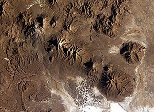<p><font size=2 >Le Cabaray est un stratovolcan situé en Bolivie. Il est situé entre les volcans Isluga et Tata Sabaya, à l'est de la frontière avec le Chili.  </p></body></div>`)[0];
            popup_8607553b074a4d3aada919d52d10baae.setContent(html_3f8731271f4b4f3db3955460120bb24d);
        

        marker_72ae307f4bd1468aa53511c1fea48917.bindPopup(popup_8607553b074a4d3aada919d52d10baae)
        ;

        
    
    
            var marker_c42bf0c081cb4275929bc1349f136351 = L.marker(
                [-41.33, -72.6183],
                {}
            ).addTo(map_7c1f1d9a431841c5a1696d072c33924b);
        
    
            var icon_42a32e12c64a4fab95a1638e3165ea70 = L.AwesomeMarkers.icon(
                {"extraClasses": "fa-rotate-0", "icon": "map-marker", "iconColor": "blue", "markerColor": "blue", "prefix": "glyphicon"}
            );
            marker_c42bf0c081cb4275929bc1349f136351.setIcon(icon_42a32e12c64a4fab95a1638e3165ea70);
        
    
        var popup_b2f53295067b4491ad7cfdc8285c0c3b = L.popup({"maxWidth": "100%"});

        
            var html_51483a5fbb374050b965334c9348ad2e = $(`<div id="html_51483a5fbb374050b965334c9348ad2e" style="width: 100.0%; height: 100.0%;"><h1>Calbuco</h1><body><p><font size=2 >Le Calbuco est un volcan du Chili s'élevant au sud-est du lac Llanquihue, au nord-est de la ville de Puerto Montt et au nord-est du golfe du Seno de Reloncaví. Composé d'andésite et couvert à son sommet de glaciers, il culmine à 2 015 mètres d'altitude. Alors que sa dernière éruption remontait au 26 août 1972, il est, sans signe avant-coureur, brusquement entré en éruption le 22 avril 2015.</p></body></div>`)[0];
            popup_b2f53295067b4491ad7cfdc8285c0c3b.setContent(html_51483a5fbb374050b965334c9348ad2e);
        

        marker_c42bf0c081cb4275929bc1349f136351.bindPopup(popup_b2f53295067b4491ad7cfdc8285c0c3b)
        ;

        
    
    
            var marker_9c6a88c809454079ba9f71eeafc87ae2 = L.marker(
                [-37.9167, -71.45],
                {}
            ).addTo(map_7c1f1d9a431841c5a1696d072c33924b);
        
    
            var icon_53ddd0ba77414aeab0c7a42b8eb6da80 = L.AwesomeMarkers.icon(
                {"extraClasses": "fa-rotate-0", "icon": "map-marker", "iconColor": "blue", "markerColor": "blue", "prefix": "glyphicon"}
            );
            marker_9c6a88c809454079ba9f71eeafc87ae2.setIcon(icon_53ddd0ba77414aeab0c7a42b8eb6da80);
        
    
        var popup_e163551fe5fe438db16e8629188b31bc = L.popup({"maxWidth": "100%"});

        
            var html_d61dad8bb73d4412bbc3504a31d68c3b = $(`<div id="html_d61dad8bb73d4412bbc3504a31d68c3b" style="width: 100.0%; height: 100.0%;"><h1>Callaqui</h1><body>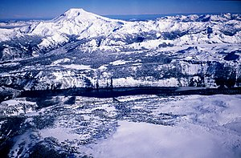<p><font size=2 >Le Callaqui est un volcan du Chili qui se présente sous la forme d'un stratovolcan recouvert de glaciers et culminant à 3 164 mètres d'altitude. Sa dernière éruption remonte à octobre 1980.</p></body></div>`)[0];
            popup_e163551fe5fe438db16e8629188b31bc.setContent(html_d61dad8bb73d4412bbc3504a31d68c3b);
        

        marker_9c6a88c809454079ba9f71eeafc87ae2.bindPopup(popup_e163551fe5fe438db16e8629188b31bc)
        ;

        
    
    
            var marker_cac9d3d7c827437e9a4bdef5a0dc8b01 = L.marker(
                [-1.40694, -78.75],
                {}
            ).addTo(map_7c1f1d9a431841c5a1696d072c33924b);
        
    
            var icon_dde47a97d1d448f9b136d4d7ad3e916b = L.AwesomeMarkers.icon(
                {"extraClasses": "fa-rotate-0", "icon": "map-marker", "iconColor": "blue", "markerColor": "blue", "prefix": "glyphicon"}
            );
            marker_cac9d3d7c827437e9a4bdef5a0dc8b01.setIcon(icon_dde47a97d1d448f9b136d4d7ad3e916b);
        
    
        var popup_6fae109d78d84c868371f4d2c61214c4 = L.popup({"maxWidth": "100%"});

        
            var html_432e567cd2c0490a997a6c5fc9bc7d3e = $(`<div id="html_432e567cd2c0490a997a6c5fc9bc7d3e" style="width: 100.0%; height: 100.0%;"><h1>Carihuairazo</h1><body>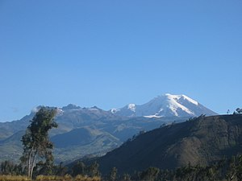<p><font size=2 >Le mont Carihuairazo (également orthographié Carihuayrazo) est un volcan coiffé par une caldeira voisin de la plus haute montagne de l'Équateur, le Chimborazo. Son sommet s'élève à une altitude de 5 018 mètres.  </p></body></div>`)[0];
            popup_6fae109d78d84c868371f4d2c61214c4.setContent(html_432e567cd2c0490a997a6c5fc9bc7d3e);
        

        marker_cac9d3d7c827437e9a4bdef5a0dc8b01.bindPopup(popup_6fae109d78d84c868371f4d2c61214c4)
        ;

        
    
    
            var marker_c6848ebd7424411fbda18b4fdd2952b7 = L.marker(
                [-40.308, -72.07],
                {}
            ).addTo(map_7c1f1d9a431841c5a1696d072c33924b);
        
    
            var icon_be12427191df4b33a8a6a4ae62272e82 = L.AwesomeMarkers.icon(
                {"extraClasses": "fa-rotate-0", "icon": "map-marker", "iconColor": "blue", "markerColor": "blue", "prefix": "glyphicon"}
            );
            marker_c6848ebd7424411fbda18b4fdd2952b7.setIcon(icon_be12427191df4b33a8a6a4ae62272e82);
        
    
        var popup_68d280efece242d7b5b59d0e2f777cff = L.popup({"maxWidth": "100%"});

        
            var html_9f652ab41a914cceb246847e00da39ca = $(`<div id="html_9f652ab41a914cceb246847e00da39ca" style="width: 100.0%; height: 100.0%;"><h1>Carrán-Los Venados</h1><body>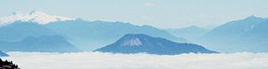<p><font size=2 >Le Carrán-Los Venados est un massif volcanique du Chili regroupant une cinquantaine de cônes pyroclastiques, de maars ainsi qu'un stratovolcan, le , point culminant du massif avec 1 114 mètres d'altitude. Cet ensemble s'étire sur 17 kilomètres de longueur entre les lacs Ranco au nord-ouest, au nord-est et au sud-est.</p></body></div>`)[0];
            popup_68d280efece242d7b5b59d0e2f777cff.setContent(html_9f652ab41a914cceb246847e00da39ca);
        

        marker_c6848ebd7424411fbda18b4fdd2952b7.bindPopup(popup_68d280efece242d7b5b59d0e2f777cff)
        ;

        
    
    
            var marker_40b36fa1bb5d46e193ab8b879e78052d = L.marker(
                [-45.0625, -72.9858],
                {}
            ).addTo(map_7c1f1d9a431841c5a1696d072c33924b);
        
    
            var icon_23eeb3adef6f43e4badb358f785dc193 = L.AwesomeMarkers.icon(
                {"extraClasses": "fa-rotate-0", "icon": "map-marker", "iconColor": "blue", "markerColor": "blue", "prefix": "glyphicon"}
            );
            marker_40b36fa1bb5d46e193ab8b879e78052d.setIcon(icon_23eeb3adef6f43e4badb358f785dc193);
        
    
        var popup_e95c464edc3043c6913245464bfe01fd = L.popup({"maxWidth": "100%"});

        
            var html_447626ccebf449d7816b6f8708a1b001 = $(`<div id="html_447626ccebf449d7816b6f8708a1b001" style="width: 100.0%; height: 100.0%;"><h1>Cay</h1><body><p><font size=2 >Le cerro Cay est un stratovolcan, situé dans la XIe région Aisén del General Carlos Ibáñez del Campo, dans le Sud-Ouest du Chili. Son sommet est recouvert de glaciers et culmine à 2 090 mètres d'altitude.</p></body></div>`)[0];
            popup_e95c464edc3043c6913245464bfe01fd.setContent(html_447626ccebf449d7816b6f8708a1b001);
        

        marker_40b36fa1bb5d46e193ab8b879e78052d.bindPopup(popup_e95c464edc3043c6913245464bfe01fd)
        ;

        
    
    
            var marker_d66b1c4b3fc04d2cb398980850819c38 = L.marker(
                [-47.1958, -73.4683],
                {}
            ).addTo(map_7c1f1d9a431841c5a1696d072c33924b);
        
    
            var icon_910264f9c5dd40d5a7149c75a2c19d4c = L.AwesomeMarkers.icon(
                {"extraClasses": "fa-rotate-0", "icon": "map-marker", "iconColor": "blue", "markerColor": "blue", "prefix": "glyphicon"}
            );
            marker_d66b1c4b3fc04d2cb398980850819c38.setIcon(icon_910264f9c5dd40d5a7149c75a2c19d4c);
        
    
        var popup_24b67700a0894d16aec224aebbcb7daf = L.popup({"maxWidth": "100%"});

        
            var html_043fa52f32a3461a8efbd56481e68a06 = $(`<div id="html_043fa52f32a3461a8efbd56481e68a06" style="width: 100.0%; height: 100.0%;"><h1>Cerro Arenales</h1><body><p><font size=2 >L'Arenales est un volcan du Chili, en bordure du champ de glace Nord de Patagonie, dont la nature n'a été découverte qu'en 1963. Considéré comme éteint, il a cependant connu une petite éruption le 8 mars 1979.</p></body></div>`)[0];
            popup_24b67700a0894d16aec224aebbcb7daf.setContent(html_043fa52f32a3461a8efbd56481e68a06);
        

        marker_d66b1c4b3fc04d2cb398980850819c38.bindPopup(popup_24b67700a0894d16aec224aebbcb7daf)
        ;

        
    
    
            var marker_2cc2e7185b514e99aae49cbdb6542629 = L.marker(
                [-35.653, -70.761],
                {}
            ).addTo(map_7c1f1d9a431841c5a1696d072c33924b);
        
    
            var icon_b91628ec5c65498194082d12aa2dc859 = L.AwesomeMarkers.icon(
                {"extraClasses": "fa-rotate-0", "icon": "map-marker", "iconColor": "blue", "markerColor": "blue", "prefix": "glyphicon"}
            );
            marker_2cc2e7185b514e99aae49cbdb6542629.setIcon(icon_b91628ec5c65498194082d12aa2dc859);
        
    
        var popup_2b7b57388011459385faf3ad3347fa05 = L.popup({"maxWidth": "100%"});

        
            var html_0b7dcf6949154976bce727b67ca756f4 = $(`<div id="html_0b7dcf6949154976bce727b67ca756f4" style="width: 100.0%; height: 100.0%;"><h1>Cerro Azul</h1><body><p><font size=2 >Le Cerro Azul est un stratovolcan actif de la région du Maule au centre du Chili. Son altitude est de 3 788 mètres et il est surmonté d'un cratère d'une largeur de 500 mètres qui est ouvert au nord. Sous le sommet, le volcan comporte de nombreux cônes de scories et de cônes satellites. Le Cerro Azul fut le théâtre des plus grandes éruptions connues d'Amérique du Sud qui se produisirent en 1846 et 1932.</p></body></div>`)[0];
            popup_2b7b57388011459385faf3ad3347fa05.setContent(html_0b7dcf6949154976bce727b67ca756f4);
        

        marker_2cc2e7185b514e99aae49cbdb6542629.bindPopup(popup_2b7b57388011459385faf3ad3347fa05)
        ;

        
    
    
            var marker_8e9761aebf8d4ee6a9361b2241a8c5b6 = L.marker(
                [-45.1058, -73.1692],
                {}
            ).addTo(map_7c1f1d9a431841c5a1696d072c33924b);
        
    
            var icon_502929c0791e499c8c2dd6dde1a866df = L.AwesomeMarkers.icon(
                {"extraClasses": "fa-rotate-0", "icon": "map-marker", "iconColor": "blue", "markerColor": "blue", "prefix": "glyphicon"}
            );
            marker_8e9761aebf8d4ee6a9361b2241a8c5b6.setIcon(icon_502929c0791e499c8c2dd6dde1a866df);
        
    
        var popup_2a4cbf58fe994ea3b33f577581aa185c = L.popup({"maxWidth": "100%"});

        
            var html_e8cf5572d92442e8b0cfd16c53f21186 = $(`<div id="html_e8cf5572d92442e8b0cfd16c53f21186" style="width: 100.0%; height: 100.0%;"><h1>Cerro Macá</h1><body><p><font size=2 >Le cerro Macá est un stratovolcan, situé au nord du et à l'est du canal Moraleda, dans la région d'Aysén del General Carlos Ibáñez del Campo, au Chili. Le sommet du volcan culmine à une altitude de 2 300 mètres. Ce volcan, recouvert d'un glacier, se trouve le long de la faille Liquiñe-Ofqui.</p></body></div>`)[0];
            popup_2a4cbf58fe994ea3b33f577581aa185c.setContent(html_e8cf5572d92442e8b0cfd16c53f21186);
        

        marker_8e9761aebf8d4ee6a9361b2241a8c5b6.bindPopup(popup_2a4cbf58fe994ea3b33f577581aa185c)
        ;

        
    
    
            var marker_dc17782e60fc4a259a3bd0ceb15f9113 = L.marker(
                [-23.8167, -67.7667],
                {}
            ).addTo(map_7c1f1d9a431841c5a1696d072c33924b);
        
    
            var icon_8ad30cc004f7469ba7d6fb7587cddf2e = L.AwesomeMarkers.icon(
                {"extraClasses": "fa-rotate-0", "icon": "map-marker", "iconColor": "blue", "markerColor": "blue", "prefix": "glyphicon"}
            );
            marker_dc17782e60fc4a259a3bd0ceb15f9113.setIcon(icon_8ad30cc004f7469ba7d6fb7587cddf2e);
        
    
        var popup_f1d61c74fd454ddf84745b38765fb60c = L.popup({"maxWidth": "100%"});

        
            var html_9362f55b9afd4a5aa17af282f73adc27 = $(`<div id="html_9362f55b9afd4a5aa17af282f73adc27" style="width: 100.0%; height: 100.0%;"><h1>Cerro Miñiques</h1><body><p><font size=2 >Le Miñiques est un volcan du Chili qui se présente sous la forme d'un stratovolcan et de dômes de lave imbriqués dont le sommet est constitué de trois cratères.</p></body></div>`)[0];
            popup_f1d61c74fd454ddf84745b38765fb60c.setContent(html_9362f55b9afd4a5aa17af282f73adc27);
        

        marker_dc17782e60fc4a259a3bd0ceb15f9113.bindPopup(popup_f1d61c74fd454ddf84745b38765fb60c)
        ;

        
    
    
            var marker_eb71511709d8408c8e9d3fca51ccb0e6 = L.marker(
                [-23.5175, -67.6625],
                {}
            ).addTo(map_7c1f1d9a431841c5a1696d072c33924b);
        
    
            var icon_9fd9b06149614470bc1ca96cdd6ef33c = L.AwesomeMarkers.icon(
                {"extraClasses": "fa-rotate-0", "icon": "map-marker", "iconColor": "blue", "markerColor": "blue", "prefix": "glyphicon"}
            );
            marker_eb71511709d8408c8e9d3fca51ccb0e6.setIcon(icon_9fd9b06149614470bc1ca96cdd6ef33c);
        
    
        var popup_2790b37fa84940179e5c8a94c12b102d = L.popup({"maxWidth": "100%"});

        
            var html_e2544754a32e4913a4e2f4bf6d23fda3 = $(`<div id="html_e2544754a32e4913a4e2f4bf6d23fda3" style="width: 100.0%; height: 100.0%;"><h1>Cerro Overo</h1><body>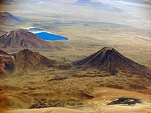<p><font size=2 >Le Cerro Overo est un volcan du Chili qui se présente sous la forme d'un maar de 600 mètres de diamètre pour 80 mètres de profondeur. Les rebords du cratère, qui culmine à 4 555 mètres d'altitude, sont entourés par des dépôts d'éjecta atteignant une épaisseur de 1,5 mètre. Il est entouré par le Chiliques au sud-ouest, le à l'est et la au nord-ouest. Il est né d'explosions phréato-magmatiques, peut-être au cours de l'Holocène. Il repose sur des ignimbrites rejetés au Pliocène par la caldeira de . Les roches siliceuses qu'il a émis sont les plus récentes d'origine volcanique de cette partie de la cordillère des Andes.</p></body></div>`)[0];
            popup_2790b37fa84940179e5c8a94c12b102d.setContent(html_e2544754a32e4913a4e2f4bf6d23fda3);
        

        marker_eb71511709d8408c8e9d3fca51ccb0e6.bindPopup(popup_2790b37fa84940179e5c8a94c12b102d)
        ;

        
    
    
            var marker_b35d8293f01d4bc1bbff5a205dfed9c7 = L.marker(
                [-40.7667, -71.95],
                {}
            ).addTo(map_7c1f1d9a431841c5a1696d072c33924b);
        
    
            var icon_1117f88f73e74ad899d0d901d49d7dcb = L.AwesomeMarkers.icon(
                {"extraClasses": "fa-rotate-0", "icon": "map-marker", "iconColor": "blue", "markerColor": "blue", "prefix": "glyphicon"}
            );
            marker_b35d8293f01d4bc1bbff5a205dfed9c7.setIcon(icon_1117f88f73e74ad899d0d901d49d7dcb);
        
    
        var popup_79744b4f56714facb76b74a8464be624 = L.popup({"maxWidth": "100%"});

        
            var html_36e604d9a97444b7ae10b9f3cb3d8825 = $(`<div id="html_36e604d9a97444b7ae10b9f3cb3d8825" style="width: 100.0%; height: 100.0%;"><h1>Cerro Pantojo</h1><body>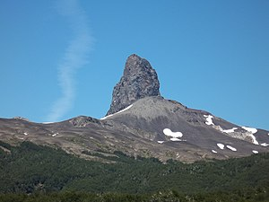<p><font size=2 >Le Cerro Pantoja (parfois aussi Cerro Pantojo) est un volcan situé sur la frontière entre l'Argentine et le Chili. Il s'agit d'un stratovolcan fortement érodé se présentant sous la forme d'un neck, une ancienne cheminée volcanique, culminant à 2 024 mètres d'altitude ainsi que d'un cône de cendre du côté argentin. Il se trouve juste au sud du , une importante voie de communication trans-andine entre le Chili et l'Argentine.</p></body></div>`)[0];
            popup_79744b4f56714facb76b74a8464be624.setContent(html_36e604d9a97444b7ae10b9f3cb3d8825);
        

        marker_b35d8293f01d4bc1bbff5a205dfed9c7.bindPopup(popup_79744b4f56714facb76b74a8464be624)
        ;

        
    
    
            var marker_33b0100a752244ca8f42498e9c8d9a28 = L.marker(
                [-21.7872, -68.2375],
                {}
            ).addTo(map_7c1f1d9a431841c5a1696d072c33924b);
        
    
            var icon_e0b7328a893b49d6a95876efec3d8074 = L.AwesomeMarkers.icon(
                {"extraClasses": "fa-rotate-0", "icon": "map-marker", "iconColor": "blue", "markerColor": "blue", "prefix": "glyphicon"}
            );
            marker_33b0100a752244ca8f42498e9c8d9a28.setIcon(icon_e0b7328a893b49d6a95876efec3d8074);
        
    
        var popup_04cd298dcdbd47ceaca4100fd6e1ab42 = L.popup({"maxWidth": "100%"});

        
            var html_7e7273894e424ed889496bd314860153 = $(`<div id="html_7e7273894e424ed889496bd314860153" style="width: 100.0%; height: 100.0%;"><h1>Cerro del Azufre</h1><body><p><font size=2 >Le Cerro del Azufre est un volcan du Chili qui se présente sous la forme d'un stratovolcan flanqué de dômes de lave couronné par un cratère et culminant à 5 846 mètres d'altitude.</p></body></div>`)[0];
            popup_04cd298dcdbd47ceaca4100fd6e1ab42.setContent(html_7e7273894e424ed889496bd314860153);
        

        marker_33b0100a752244ca8f42498e9c8d9a28.bindPopup(popup_04cd298dcdbd47ceaca4100fd6e1ab42)
        ;

        
    
    
            var marker_625f7d2116ba446b9405e6a2faa67c7f = L.marker(
                [50.3233, 155.461],
                {}
            ).addTo(map_7c1f1d9a431841c5a1696d072c33924b);
        
    
            var icon_95f8f401156344339a94c56453d13938 = L.AwesomeMarkers.icon(
                {"extraClasses": "fa-rotate-0", "icon": "map-marker", "iconColor": "blue", "markerColor": "blue", "prefix": "glyphicon"}
            );
            marker_625f7d2116ba446b9405e6a2faa67c7f.setIcon(icon_95f8f401156344339a94c56453d13938);
        
    
        var popup_b9b968c435164e0c8d138b18f119dd30 = L.popup({"maxWidth": "100%"});

        
            var html_64b4cd8976534c92a97b221afba1281f = $(`<div id="html_64b4cd8976534c92a97b221afba1281f" style="width: 100.0%; height: 100.0%;"><h1>Chikurachki</h1><body><p><font size=2 >Le Tchikouratchki, en russe : Чикурачки, est un volcan de Russie situé dans le nord des îles Kouriles, sur Paramouchir, île dont il constitue le point culminant avec 1 816 mètres d'altitude.  </p></body></div>`)[0];
            popup_b9b968c435164e0c8d138b18f119dd30.setContent(html_64b4cd8976534c92a97b221afba1281f);
        

        marker_625f7d2116ba446b9405e6a2faa67c7f.bindPopup(popup_b9b968c435164e0c8d138b18f119dd30)
        ;

        
    
    
            var marker_56a31eb5c3674cfd954b79144559a1d5 = L.marker(
                [-23.5833, -67.7],
                {}
            ).addTo(map_7c1f1d9a431841c5a1696d072c33924b);
        
    
            var icon_5d1bc4575c57484abcd0797c36d37829 = L.AwesomeMarkers.icon(
                {"extraClasses": "fa-rotate-0", "icon": "map-marker", "iconColor": "blue", "markerColor": "blue", "prefix": "glyphicon"}
            );
            marker_56a31eb5c3674cfd954b79144559a1d5.setIcon(icon_5d1bc4575c57484abcd0797c36d37829);
        
    
        var popup_5e18d77705d24a89b18a20e3641a1cb1 = L.popup({"maxWidth": "100%"});

        
            var html_2ab5218833c94496bf399859fb3f42d6 = $(`<div id="html_2ab5218833c94496bf399859fb3f42d6" style="width: 100.0%; height: 100.0%;"><h1>Chiliques</h1><body>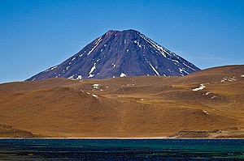<p><font size=2 >Le Chiliques est un volcan du Chili qui se présente sous la forme d'un stratovolcan couronné par un cratère sommital. Alors considéré comme endormi, des images thermiques satellites ont mis en évidence en 2002 des zones très chaudes dans le cratère et en haut de ses flancs.</p></body></div>`)[0];
            popup_5e18d77705d24a89b18a20e3641a1cb1.setContent(html_2ab5218833c94496bf399859fb3f42d6);
        

        marker_56a31eb5c3674cfd954b79144559a1d5.bindPopup(popup_5e18d77705d24a89b18a20e3641a1cb1)
        ;

        
    
    
            var marker_9c109f55e8144aaaae3ab540a0ec8460 = L.marker(
                [13.478, -88.33],
                {}
            ).addTo(map_7c1f1d9a431841c5a1696d072c33924b);
        
    
            var icon_bf7716a21b8440d6ad70247f343d89be = L.AwesomeMarkers.icon(
                {"extraClasses": "fa-rotate-0", "icon": "map-marker", "iconColor": "blue", "markerColor": "blue", "prefix": "glyphicon"}
            );
            marker_9c109f55e8144aaaae3ab540a0ec8460.setIcon(icon_bf7716a21b8440d6ad70247f343d89be);
        
    
        var popup_a373d9a8f83447b5bc356b67011b539e = L.popup({"maxWidth": "100%"});

        
            var html_304e632a5dd449aeb3549aa1ddd51ac2 = $(`<div id="html_304e632a5dd449aeb3549aa1ddd51ac2" style="width: 100.0%; height: 100.0%;"><h1>Chinameca</h1><body>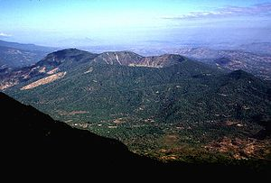<p><font size=2 >Le Chinameca est un stratovolcan du Salvador.  </p></body></div>`)[0];
            popup_a373d9a8f83447b5bc356b67011b539e.setContent(html_304e632a5dd449aeb3549aa1ddd51ac2);
        

        marker_9c109f55e8144aaaae3ab540a0ec8460.bindPopup(popup_a373d9a8f83447b5bc356b67011b539e)
        ;

        
    
    
            var marker_df5deb662a6242108411bf1d73229f01 = L.marker(
                [-23.2364, -67.645],
                {}
            ).addTo(map_7c1f1d9a431841c5a1696d072c33924b);
        
    
            var icon_08449248c8ed4fb6b1428296aeb95ea9 = L.AwesomeMarkers.icon(
                {"extraClasses": "fa-rotate-0", "icon": "map-marker", "iconColor": "blue", "markerColor": "blue", "prefix": "glyphicon"}
            );
            marker_df5deb662a6242108411bf1d73229f01.setIcon(icon_08449248c8ed4fb6b1428296aeb95ea9);
        
    
        var popup_c4b29e8abdea4225ae763b81926245c1 = L.popup({"maxWidth": "100%"});

        
            var html_ba4d81c6acda4791ad70d3060d9cd5a4 = $(`<div id="html_ba4d81c6acda4791ad70d3060d9cd5a4" style="width: 100.0%; height: 100.0%;"><h1>Colachi</h1><body><p><font size=2 >Le Colachi est un volcan du Chili qui se présente sous la forme d'un stratovolcan couronné par un cratère dans lequel s'inscrit un dôme de lave et culminant à 5 631 mètres d'altitude. Composé d'andésite et de dacite, il s'est édifié sur des terrains formés d'ignimbrites.</p></body></div>`)[0];
            popup_c4b29e8abdea4225ae763b81926245c1.setContent(html_ba4d81c6acda4791ad70d3060d9cd5a4);
        

        marker_df5deb662a6242108411bf1d73229f01.bindPopup(popup_c4b29e8abdea4225ae763b81926245c1)
        ;

        
    
    
            var marker_ff27a4daabd64531bb0227a2e8d55ad9 = L.marker(
                [11.538, -85.622],
                {}
            ).addTo(map_7c1f1d9a431841c5a1696d072c33924b);
        
    
            var icon_440ac3add378461290f7c1af1e53fa67 = L.AwesomeMarkers.icon(
                {"extraClasses": "fa-rotate-0", "icon": "map-marker", "iconColor": "blue", "markerColor": "blue", "prefix": "glyphicon"}
            );
            marker_ff27a4daabd64531bb0227a2e8d55ad9.setIcon(icon_440ac3add378461290f7c1af1e53fa67);
        
    
        var popup_0993285abd1a47c097407201f6adcf54 = L.popup({"maxWidth": "100%"});

        
            var html_31b8fcb076824f01b31b0dfbf18435d3 = $(`<div id="html_31b8fcb076824f01b31b0dfbf18435d3" style="width: 100.0%; height: 100.0%;"><h1>Concepción</h1><body>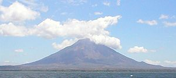<p><font size=2 >Le Concepción est un volcan du Nicaragua, le plus haut des deux stratovolcans qui constituent l'île d'Ometepe avec 1 700 mètres d'altitude, située dans le lac Nicaragua. Le Concepción est actif et dangereux pour les populations de l'île (éboulements fréquents, notamment sur son flanc sud, partiellement effondré). Le volcan Concepción est en effet l'un des édifices les plus actifs du pays et aussi l'un des plus hauts. Il forme la partie nord-ouest de l'île. Comme d'importantes failles traversent l'édifice actif et régulent partiellement ses éruptions, le magma sort ainsi parfois assez bas sur ses pentes. Les flancs nord et sud sont pour cette raison parsemés de cônes de scories, de dômes et de maars. Au XXe siècle, le volcan a été le siège de fréquentes éruptions explosives modérées qui se produisaient surtout dans le cratère sommital.</p></body></div>`)[0];
            popup_0993285abd1a47c097407201f6adcf54.setContent(html_31b8fcb076824f01b31b0dfbf18435d3);
        

        marker_ff27a4daabd64531bb0227a2e8d55ad9.bindPopup(popup_0993285abd1a47c097407201f6adcf54)
        ;

        
    
    
            var marker_dcd5477129c94450b54258965bbc053e = L.marker(
                [13.275, -87.845],
                {}
            ).addTo(map_7c1f1d9a431841c5a1696d072c33924b);
        
    
            var icon_4701d784fc9045cbac71aabd89c40a00 = L.AwesomeMarkers.icon(
                {"extraClasses": "fa-rotate-0", "icon": "map-marker", "iconColor": "blue", "markerColor": "blue", "prefix": "glyphicon"}
            );
            marker_dcd5477129c94450b54258965bbc053e.setIcon(icon_4701d784fc9045cbac71aabd89c40a00);
        
    
        var popup_ab6653fb3dc54352be08e318e8a41522 = L.popup({"maxWidth": "100%"});

        
            var html_bc81447c4ea84e2d82de3165c69e9a8c = $(`<div id="html_bc81447c4ea84e2d82de3165c69e9a8c" style="width: 100.0%; height: 100.0%;"><h1>Conchagua</h1><body>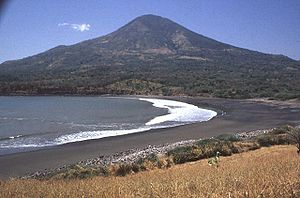<p><font size=2 >Le Conchagua est un stratovolcan du Salvador.  </p></body></div>`)[0];
            popup_ab6653fb3dc54352be08e318e8a41522.setContent(html_bc81447c4ea84e2d82de3165c69e9a8c);
        

        marker_dcd5477129c94450b54258965bbc053e.bindPopup(popup_ab6653fb3dc54352be08e318e8a41522)
        ;

        
    
    
            var marker_be8131cb8ac84a669a1bca5d227d1c1c = L.marker(
                [-37.85, -71.1667],
                {}
            ).addTo(map_7c1f1d9a431841c5a1696d072c33924b);
        
    
            var icon_93aaa2ea03554434a31e05cade9f0235 = L.AwesomeMarkers.icon(
                {"extraClasses": "fa-rotate-0", "icon": "map-marker", "iconColor": "blue", "markerColor": "blue", "prefix": "glyphicon"}
            );
            marker_be8131cb8ac84a669a1bca5d227d1c1c.setIcon(icon_93aaa2ea03554434a31e05cade9f0235);
        
    
        var popup_e3c95013cf0945648b7584bd171e0aba = L.popup({"maxWidth": "100%"});

        
            var html_8dcb61cd618f4d89a5591bc671d892e5 = $(`<div id="html_8dcb61cd618f4d89a5591bc671d892e5" style="width: 100.0%; height: 100.0%;"><h1>Copahue</h1><body><p><font size=2 >Le Copahue est un stratovolcan situé à la frontière entre l'Argentine et le Chili.</p></body></div>`)[0];
            popup_e3c95013cf0945648b7584bd171e0aba.setContent(html_8dcb61cd618f4d89a5591bc671d892e5);
        

        marker_be8131cb8ac84a669a1bca5d227d1c1c.bindPopup(popup_e3c95013cf0945648b7584bd171e0aba)
        ;

        
    
    
            var marker_f736887179f64c64a519516cc22025ad = L.marker(
                [-27.3058, -69.1308],
                {}
            ).addTo(map_7c1f1d9a431841c5a1696d072c33924b);
        
    
            var icon_4bd9841badb941788d22f8f0b3a361cf = L.AwesomeMarkers.icon(
                {"extraClasses": "fa-rotate-0", "icon": "map-marker", "iconColor": "blue", "markerColor": "blue", "prefix": "glyphicon"}
            );
            marker_f736887179f64c64a519516cc22025ad.setIcon(icon_4bd9841badb941788d22f8f0b3a361cf);
        
    
        var popup_0707dc01dc394956ab97afe78c6eead3 = L.popup({"maxWidth": "100%"});

        
            var html_3223b7d5d945446684e803ab8d3046ba = $(`<div id="html_3223b7d5d945446684e803ab8d3046ba" style="width: 100.0%; height: 100.0%;"><h1>Copiapó</h1><body><p><font size=2 >Le Copiapó, aussi appelé Cerro de Azufre ou Lastarria, est un volcan du Chili qui se présente sous la forme d'un stratovolcan culminant à 6 052 mètres d'altitude. Il est accompagné de huit cônes pyroclastiques dont le s'élevant à 4 978 mètres d'altitude.  </p></body></div>`)[0];
            popup_0707dc01dc394956ab97afe78c6eead3.setContent(html_3223b7d5d945446684e803ab8d3046ba);
        

        marker_f736887179f64c64a519516cc22025ad.bindPopup(popup_0707dc01dc394956ab97afe78c6eead3)
        ;

        
    
    
            var marker_0225264b360f41bfa0c4b2b38e20a0ca = L.marker(
                [-43.1833, -72.8],
                {}
            ).addTo(map_7c1f1d9a431841c5a1696d072c33924b);
        
    
            var icon_7443e08dda74496cbfb791797f203ffe = L.AwesomeMarkers.icon(
                {"extraClasses": "fa-rotate-0", "icon": "map-marker", "iconColor": "blue", "markerColor": "blue", "prefix": "glyphicon"}
            );
            marker_0225264b360f41bfa0c4b2b38e20a0ca.setIcon(icon_7443e08dda74496cbfb791797f203ffe);
        
    
        var popup_0e9bcfae5bd043d5afdfc99cb696a6f4 = L.popup({"maxWidth": "100%"});

        
            var html_41f099d0b6454539ae80f163960fe648 = $(`<div id="html_41f099d0b6454539ae80f163960fe648" style="width: 100.0%; height: 100.0%;"><h1>Corcovado</h1><body>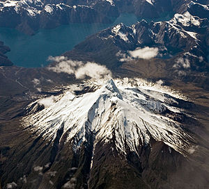<p><font size=2 >Le Corcovado est un volcan du sud du Chili.</p></body></div>`)[0];
            popup_0e9bcfae5bd043d5afdfc99cb696a6f4.setContent(html_41f099d0b6454539ae80f163960fe648);
        

        marker_0225264b360f41bfa0c4b2b38e20a0ca.bindPopup(popup_0e9bcfae5bd043d5afdfc99cb696a6f4)
        ;

        
    
    
            var marker_71a22b276f924b06b6106c1009d1593c = L.marker(
                [-23.7428, -67.5342],
                {}
            ).addTo(map_7c1f1d9a431841c5a1696d072c33924b);
        
    
            var icon_5c1e746d132141b3b14394ecba014db6 = L.AwesomeMarkers.icon(
                {"extraClasses": "fa-rotate-0", "icon": "map-marker", "iconColor": "blue", "markerColor": "blue", "prefix": "glyphicon"}
            );
            marker_71a22b276f924b06b6106c1009d1593c.setIcon(icon_5c1e746d132141b3b14394ecba014db6);
        
    
        var popup_1563ea038313466693ed612d9c6a91cd = L.popup({"maxWidth": "100%"});

        
            var html_52b72f0522a34019a900dfaae390edde = $(`<div id="html_52b72f0522a34019a900dfaae390edde" style="width: 100.0%; height: 100.0%;"><h1>Cordón de Puntas Negras</h1><body>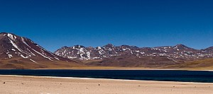<p><font size=2 >Le Cordón de Puntas Negras est un massif volcanique situé dans la région d'Antofagasta au Chili. Il est composé de 25 bouches éruptives représentées par des stratovolcans, des cônes pyroclastiques, des dômes de lave et des maars.</p></body></div>`)[0];
            popup_1563ea038313466693ed612d9c6a91cd.setContent(html_52b72f0522a34019a900dfaae390edde);
        

        marker_71a22b276f924b06b6106c1009d1593c.bindPopup(popup_1563ea038313466693ed612d9c6a91cd)
        ;

        
    
    
            var marker_27450d1c257a4a888eacc56d2c502e4a = L.marker(
                [-15.55, -72.65],
                {}
            ).addTo(map_7c1f1d9a431841c5a1696d072c33924b);
        
    
            var icon_3624ebe7894d478a8e5ca33af08e6b64 = L.AwesomeMarkers.icon(
                {"extraClasses": "fa-rotate-0", "icon": "map-marker", "iconColor": "blue", "markerColor": "blue", "prefix": "glyphicon"}
            );
            marker_27450d1c257a4a888eacc56d2c502e4a.setIcon(icon_3624ebe7894d478a8e5ca33af08e6b64);
        
    
        var popup_d249d39ecbc34641b1008bea535516a3 = L.popup({"maxWidth": "100%"});

        
            var html_b66ccc9111214599915f7951b4808de4 = $(`<div id="html_b66ccc9111214599915f7951b4808de4" style="width: 100.0%; height: 100.0%;"><h1>Coropuna</h1><body>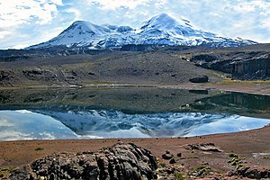<p><font size=2 >Le Nevado Coropuna est un stratovolcan du Pérou. Il se trouve dans la province de Condesuyos, au sein de la région d'Arequipa, dans le Sud du pays, et fait partie de la zone volcanique centrale des Andes. Il culmine à 6 377 mètres et est couronné par une calotte glaciaire qui descend jusqu'à 5 200 mètres d'altitude.</p></body></div>`)[0];
            popup_d249d39ecbc34641b1008bea535516a3.setContent(html_b66ccc9111214599915f7951b4808de4);
        

        marker_27450d1c257a4a888eacc56d2c502e4a.bindPopup(popup_d249d39ecbc34641b1008bea535516a3)
        ;

        
    
    
            var marker_2aefd56572b84471adab5adfb17eeae7 = L.marker(
                [12.98, -87.57],
                {}
            ).addTo(map_7c1f1d9a431841c5a1696d072c33924b);
        
    
            var icon_eb8f6cf0dc5d4b46964dcbbba659b090 = L.AwesomeMarkers.icon(
                {"extraClasses": "fa-rotate-0", "icon": "map-marker", "iconColor": "blue", "markerColor": "blue", "prefix": "glyphicon"}
            );
            marker_2aefd56572b84471adab5adfb17eeae7.setIcon(icon_eb8f6cf0dc5d4b46964dcbbba659b090);
        
    
        var popup_9a19083d540d41329ee8fe4eb2b20543 = L.popup({"maxWidth": "100%"});

        
            var html_8fe9c105fad14489afa169cf2cb0ee6f = $(`<div id="html_8fe9c105fad14489afa169cf2cb0ee6f" style="width: 100.0%; height: 100.0%;"><h1>Cosigüina</h1><body><p><font size=2 >Le Cosigüina est un volcan du Nicaragua qui ferme au sud le golfe de Fonseca. En 1835, une des plus violentes éruptions historiques (avec celles du Tambora, du Krakatoa et du mont Katmai) a décapité le volcan, ramenant son altitude (estimée à 2 300 mètres avant l'éruption) à seulement 872 mètres.  </p></body></div>`)[0];
            popup_9a19083d540d41329ee8fe4eb2b20543.setContent(html_8fe9c105fad14489afa169cf2cb0ee6f);
        

        marker_2aefd56572b84471adab5adfb17eeae7.bindPopup(popup_9a19083d540d41329ee8fe4eb2b20543)
        ;

        
    
    
            var marker_b92bfade6df04a81a09e9fe588b9da5d = L.marker(
                [-0.680556, -78.4378],
                {}
            ).addTo(map_7c1f1d9a431841c5a1696d072c33924b);
        
    
            var icon_bcd5e8f198cb4eef821a81dfda122d39 = L.AwesomeMarkers.icon(
                {"extraClasses": "fa-rotate-0", "icon": "map-marker", "iconColor": "blue", "markerColor": "blue", "prefix": "glyphicon"}
            );
            marker_b92bfade6df04a81a09e9fe588b9da5d.setIcon(icon_bcd5e8f198cb4eef821a81dfda122d39);
        
    
        var popup_65558cc86d824bddb9c2b6b499559e21 = L.popup({"maxWidth": "100%"});

        
            var html_538050a5680a4e41b63ef9d74671edb3 = $(`<div id="html_538050a5680a4e41b63ef9d74671edb3" style="width: 100.0%; height: 100.0%;"><h1>Cotopaxi</h1><body>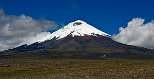<p><font size=2 >Le Cotopaxi est un volcan d'Équateur culminant à 5 897 mètres d'altitude, situé au sud de Quito, la capitale du pays. Il est le plus haut volcan actif de ce pays. Il représente un cône parfait dont le cratère principal mesure environ 550 à 800 mètres de diamètre. Son éruption la plus importante date de 1877, lorsqu'il détruisit plusieurs villes et vallées. Il est protégé dans le parc national du Cotopaxi.</p></body></div>`)[0];
            popup_65558cc86d824bddb9c2b6b499559e21.setContent(html_538050a5680a4e41b63ef9d74671edb3);
        

        marker_b92bfade6df04a81a09e9fe588b9da5d.bindPopup(popup_65558cc86d824bddb9c2b6b499559e21)
        ;

        
    
    
            var marker_18e8793f556b477fb6801c05cf163bee = L.marker(
                [0.949, -77.888],
                {}
            ).addTo(map_7c1f1d9a431841c5a1696d072c33924b);
        
    
            var icon_ccb06608b9044e7b9a9eaddc2ccd8a82 = L.AwesomeMarkers.icon(
                {"extraClasses": "fa-rotate-0", "icon": "map-marker", "iconColor": "blue", "markerColor": "blue", "prefix": "glyphicon"}
            );
            marker_18e8793f556b477fb6801c05cf163bee.setIcon(icon_ccb06608b9044e7b9a9eaddc2ccd8a82);
        
    
        var popup_96e66c705bbb429f88ea4b69196e3933 = L.popup({"maxWidth": "100%"});

        
            var html_b0d2b3d7e54f4f52a55ca545fe5f1d56 = $(`<div id="html_b0d2b3d7e54f4f52a55ca545fe5f1d56" style="width: 100.0%; height: 100.0%;"><h1>Cumbal</h1><body>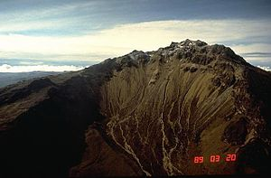<p><font size=2 >Le Cumbal est un volcan de Colombie constitué d'un stratovolcan s'élevant à 4 764 mètres d'altitude juste au nord de la frontière avec l'Équateur.</p></body></div>`)[0];
            popup_96e66c705bbb429f88ea4b69196e3933.setContent(html_b0d2b3d7e54f4f52a55ca545fe5f1d56);
        

        marker_18e8793f556b477fb6801c05cf163bee.bindPopup(popup_96e66c705bbb429f88ea4b69196e3933)
        ;

        
    
    
            var marker_bcf0a18045764cc7a1602771ead0d07f = L.marker(
                [28.5667, -17.8333],
                {}
            ).addTo(map_7c1f1d9a431841c5a1696d072c33924b);
        
    
            var icon_776201f43a694e2eac8c0debae24339b = L.AwesomeMarkers.icon(
                {"extraClasses": "fa-rotate-0", "icon": "map-marker", "iconColor": "blue", "markerColor": "blue", "prefix": "glyphicon"}
            );
            marker_bcf0a18045764cc7a1602771ead0d07f.setIcon(icon_776201f43a694e2eac8c0debae24339b);
        
    
        var popup_50ff7375452c4c31834464245b6db73e = L.popup({"maxWidth": "100%"});

        
            var html_82a93ed908404df1be066898103c4c77 = $(`<div id="html_82a93ed908404df1be066898103c4c77" style="width: 100.0%; height: 100.0%;"><h1>Cumbre Vieja</h1><body>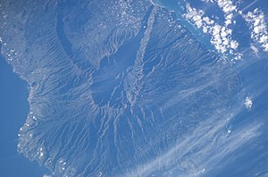<p><font size=2 >Le Cumbre Vieja, en français : « Vieux sommet », est un volcan d'Espagne qui se situe dans l'archipel des Canaries, dans le sud de l'île de La Palma. Partie volcanologiquement active de l'île, le Cumbre Vieja est susceptible d'engendrer un mégatsunami qui toucherait la majorité des côtes de l'Atlantique Nord au cours d'une future éruption si la partie occidentale de la montagne glissait dans l'océan Atlantique.</p></body></div>`)[0];
            popup_50ff7375452c4c31834464245b6db73e.setContent(html_82a93ed908404df1be066898103c4c77);
        

        marker_bcf0a18045764cc7a1602771ead0d07f.bindPopup(popup_50ff7375452c4c31834464245b6db73e)
        ;

        
    
    
            var marker_414f959b097d4e268798716b025b8aaa = L.marker(
                [12.6, 40.48],
                {}
            ).addTo(map_7c1f1d9a431841c5a1696d072c33924b);
        
    
            var icon_edb3fd07723d4650a0e73920f5f4d330 = L.AwesomeMarkers.icon(
                {"extraClasses": "fa-rotate-0", "icon": "map-marker", "iconColor": "blue", "markerColor": "blue", "prefix": "glyphicon"}
            );
            marker_414f959b097d4e268798716b025b8aaa.setIcon(icon_edb3fd07723d4650a0e73920f5f4d330);
        
    
        var popup_1a414f21ec354da38f90fb9ad5291fa7 = L.popup({"maxWidth": "100%"});

        
            var html_8f177953506340699ae8e43e0f157f0d = $(`<div id="html_8f177953506340699ae8e43e0f157f0d" style="width: 100.0%; height: 100.0%;"><h1>Dabbahu Volcano</h1><body><p><font size=2 >Le Dabbahu (également appelé Boina, Boyna ou Moina) est un volcan situé dans la région Afar en Éthiopie, au sud-ouest de la dépression de Danakil, non loin du volcan Alayta. Ce stratovolcan datant de l'Holocène est formé de coulées de laves, de cônes de lave et de pierre ponce. Il fait partie de la vallée du Grand Rift.</p></body></div>`)[0];
            popup_1a414f21ec354da38f90fb9ad5291fa7.setContent(html_8f177953506340699ae8e43e0f157f0d);
        

        marker_414f959b097d4e268798716b025b8aaa.bindPopup(popup_1a414f21ec354da38f90fb9ad5291fa7)
        ;

        
    
    
            var marker_7990b723d9e54c68b018ae527e11cf00 = L.marker(
                [-5.05556, 150.108],
                {}
            ).addTo(map_7c1f1d9a431841c5a1696d072c33924b);
        
    
            var icon_f133dc77ee484a3ab9df6eee588ed91f = L.AwesomeMarkers.icon(
                {"extraClasses": "fa-rotate-0", "icon": "map-marker", "iconColor": "blue", "markerColor": "blue", "prefix": "glyphicon"}
            );
            marker_7990b723d9e54c68b018ae527e11cf00.setIcon(icon_f133dc77ee484a3ab9df6eee588ed91f);
        
    
        var popup_a98f71be38ed48a78a7091f990172dd0 = L.popup({"maxWidth": "100%"});

        
            var html_01ee382598114b2b9d08e41a69764321 = $(`<div id="html_01ee382598114b2b9d08e41a69764321" style="width: 100.0%; height: 100.0%;"><h1>Dakataua</h1><body>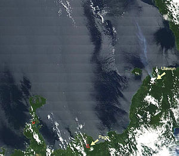<p><font size=2 >Le Dakataua est un volcan situé à l'extrémité septentrionale de la (en), sur l'île de Nouvelle-Bretagne en Papouasie-Nouvelle-Guinée. Son éruption la plus notable recensée est survenue aux environs de l'an 800, alors qu'il a éjecté environ 10 km3 de tephras.</p></body></div>`)[0];
            popup_a98f71be38ed48a78a7091f990172dd0.setContent(html_01ee382598114b2b9d08e41a69764321);
        

        marker_7990b723d9e54c68b018ae527e11cf00.bindPopup(popup_a98f71be38ed48a78a7091f990172dd0)
        ;

        
    
    
            var marker_c1a85804182b467a89f817cc348f08aa = L.marker(
                [35.9556, 52.11],
                {}
            ).addTo(map_7c1f1d9a431841c5a1696d072c33924b);
        
    
            var icon_f50fd5f99b154102bf23811468b8d481 = L.AwesomeMarkers.icon(
                {"extraClasses": "fa-rotate-0", "icon": "map-marker", "iconColor": "blue", "markerColor": "blue", "prefix": "glyphicon"}
            );
            marker_c1a85804182b467a89f817cc348f08aa.setIcon(icon_f50fd5f99b154102bf23811468b8d481);
        
    
        var popup_fd1c5535887145f1987aa3a5f732f68b = L.popup({"maxWidth": "100%"});

        
            var html_ad7534c69a5f44a58cdeafb92d477119 = $(`<div id="html_ad7534c69a5f44a58cdeafb92d477119" style="width: 100.0%; height: 100.0%;"><h1>Damavand</h1><body>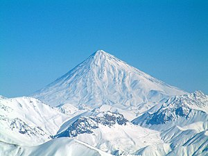<p><font size=2 >Le mont Damāvand (en persan : دماوند, Damāvand ou Demavend) est le sommet volcanique semi-actif le plus élevé de l'Iran. Culminant à 5 610 m, il est situé dans la chaîne de l'Elbourz, à 66 kilomètres au nord-est de Téhéran. La montagne est également connue sous le nom de Donbavand. Le sommet est situé à proximité de la côte sud de la mer Caspienne, dans le département d'Amol, province du Mazandéran. La dernière éruption de ce volcan remonte à plus de 7 300 ans. La ville la plus proche est , au sud de la montagne.</p></body></div>`)[0];
            popup_fd1c5535887145f1987aa3a5f732f68b.setContent(html_ad7534c69a5f44a58cdeafb92d477119);
        

        marker_c1a85804182b467a89f817cc348f08aa.bindPopup(popup_fd1c5535887145f1987aa3a5f732f68b)
        ;

        
    
    
            var marker_bf186e89c540474c95fa0c3f7f55011d = L.marker(
                [-35.5833, -70.75],
                {}
            ).addTo(map_7c1f1d9a431841c5a1696d072c33924b);
        
    
            var icon_edcb4720c7014bc78aeda471fdef0625 = L.AwesomeMarkers.icon(
                {"extraClasses": "fa-rotate-0", "icon": "map-marker", "iconColor": "blue", "markerColor": "blue", "prefix": "glyphicon"}
            );
            marker_bf186e89c540474c95fa0c3f7f55011d.setIcon(icon_edcb4720c7014bc78aeda471fdef0625);
        
    
        var popup_e52012216b9246c687e1b4b4afbcc065 = L.popup({"maxWidth": "100%"});

        
            var html_9ac162aa19b94b41a8097d9052a98530 = $(`<div id="html_9ac162aa19b94b41a8097d9052a98530" style="width: 100.0%; height: 100.0%;"><h1>Descabezado Grande</h1><body><p><font size=2 >Le Descabezado Grande est un volcan du Chili qui se présente sous la forme d'un stratovolcan culminant à 3 953 mètres d'altitude et couronné par un cratère englacé de 1,4 kilomètre de diamètre. Sa seule éruption connue est celle débutée le 5 juin 1932 et terminée en 1933.</p></body></div>`)[0];
            popup_e52012216b9246c687e1b4b4afbcc065.setContent(html_9ac162aa19b94b41a8097d9052a98530);
        

        marker_bf186e89c540474c95fa0c3f7f55011d.bindPopup(popup_e52012216b9246c687e1b4b4afbcc065)
        ;

        
    
    
            var marker_2cebdfea3db646bbada49ab2bf9fd870 = L.marker(
                [-36.6397, -70.433],
                {}
            ).addTo(map_7c1f1d9a431841c5a1696d072c33924b);
        
    
            var icon_edd079684ea74aa7b40dce27262cc548 = L.AwesomeMarkers.icon(
                {"extraClasses": "fa-rotate-0", "icon": "map-marker", "iconColor": "blue", "markerColor": "blue", "prefix": "glyphicon"}
            );
            marker_2cebdfea3db646bbada49ab2bf9fd870.setIcon(icon_edd079684ea74aa7b40dce27262cc548);
        
    
        var popup_81f54857ab25479bb69e2a0219797b33 = L.popup({"maxWidth": "100%"});

        
            var html_212c85b07f6d40589b34050989c50220 = $(`<div id="html_212c85b07f6d40589b34050989c50220" style="width: 100.0%; height: 100.0%;"><h1>Domuyo</h1><body><p><font size=2 >Le Domuyo est un stratovolcan appartenant à la , dans le nord de la province argentine de Neuquén, en Patagonie. Il atteint une altitude de 4 709 mètres et est de ce fait la plus haute montagne de Patagonie. Son nom, d'origine mapuche signifie « Qui tremble et résonne », nom probablement dû à son activité géothermale. Il est également appelé El Techo de la Patagonia c’est-à-dire « Le toit de la Patagonie »[réf. nécessaire]. On trouve sur ses flancs une grande quantité de solfatares, de sources d'eau chaude et de geysers. Pour y arriver, il faut prendre la route RN 40, depuis Chos Malal, puis la route provinciale no 43.</p></body></div>`)[0];
            popup_81f54857ab25479bb69e2a0219797b33.setContent(html_212c85b07f6d40589b34050989c50220);
        

        marker_2cebdfea3db646bbada49ab2bf9fd870.bindPopup(popup_81f54857ab25479bb69e2a0219797b33)
        ;

        
    
    
            var marker_0514eb0a803742ad83f1e683dca05a89 = L.marker(
                [53.637, 158.922],
                {}
            ).addTo(map_7c1f1d9a431841c5a1696d072c33924b);
        
    
            var icon_7c10d111ae3f4bd2a32360cd745efde7 = L.AwesomeMarkers.icon(
                {"extraClasses": "fa-rotate-0", "icon": "map-marker", "iconColor": "blue", "markerColor": "blue", "prefix": "glyphicon"}
            );
            marker_0514eb0a803742ad83f1e683dca05a89.setIcon(icon_7c10d111ae3f4bd2a32360cd745efde7);
        
    
        var popup_2aa0f09f4e354574a98b9480db70293e = L.popup({"maxWidth": "100%"});

        
            var html_49d32c9ec6a346c6a3b3b596cae1e15a = $(`<div id="html_49d32c9ec6a346c6a3b3b596cae1e15a" style="width: 100.0%; height: 100.0%;"><h1>Dzenzursky</h1><body>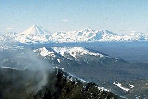<p><font size=2 >Le Dzenzourski (en russe : Дзензурский) est un stratovolcan situé au sud de la péninsule du Kamtchatka, dans l'Extrême-Orient russe (Russie). Il est situé à l'intérieur du parc naturel de Nalytchevo.</p></body></div>`)[0];
            popup_2aa0f09f4e354574a98b9480db70293e.setContent(html_49d32c9ec6a346c6a3b3b596cae1e15a);
        

        marker_0514eb0a803742ad83f1e683dca05a89.bindPopup(popup_2aa0f09f4e354574a98b9480db70293e)
        ;

        
    
    
            var marker_f10b930b40124bd5bff5704c1ee16cf3 = L.marker(
                [-1.66333, -78.4092],
                {}
            ).addTo(map_7c1f1d9a431841c5a1696d072c33924b);
        
    
            var icon_ca48785d89584e9b82f8bc3d1c95ce66 = L.AwesomeMarkers.icon(
                {"extraClasses": "fa-rotate-0", "icon": "map-marker", "iconColor": "blue", "markerColor": "blue", "prefix": "glyphicon"}
            );
            marker_f10b930b40124bd5bff5704c1ee16cf3.setIcon(icon_ca48785d89584e9b82f8bc3d1c95ce66);
        
    
        var popup_fe2ada02dbd74cd2bbc10ee2d83bdb62 = L.popup({"maxWidth": "100%"});

        
            var html_6e1d235c52d14b28a1e3ef805c1f50f1 = $(`<div id="html_6e1d235c52d14b28a1e3ef805c1f50f1" style="width: 100.0%; height: 100.0%;"><h1>El Altar</h1><body><p><font size=2 >L'Altar est un volcan éteint d'Équateur. Il présente de nombreux pics disposés sur le pourtour d'un cirque dont le fond est occupé par un lac.</p></body></div>`)[0];
            popup_fe2ada02dbd74cd2bbc10ee2d83bdb62.setContent(html_6e1d235c52d14b28a1e3ef805c1f50f1);
        

        marker_f10b930b40124bd5bff5704c1ee16cf3.bindPopup(popup_fe2ada02dbd74cd2bbc10ee2d83bdb62)
        ;

        
    
    
            var marker_544584769e18432fbe2bb514aa137abf = L.marker(
                [13.272, -87.641],
                {}
            ).addTo(map_7c1f1d9a431841c5a1696d072c33924b);
        
    
            var icon_d9b71d2f49f24136847a6cc91e383b9e = L.AwesomeMarkers.icon(
                {"extraClasses": "fa-rotate-0", "icon": "map-marker", "iconColor": "blue", "markerColor": "blue", "prefix": "glyphicon"}
            );
            marker_544584769e18432fbe2bb514aa137abf.setIcon(icon_d9b71d2f49f24136847a6cc91e383b9e);
        
    
        var popup_45f800c7c85b4d1ab977bf98ef0fecbe = L.popup({"maxWidth": "100%"});

        
            var html_698336e301ec4d38af374476ec2e2af4 = $(`<div id="html_698336e301ec4d38af374476ec2e2af4" style="width: 100.0%; height: 100.0%;"><h1>El Tigre Island</h1><body>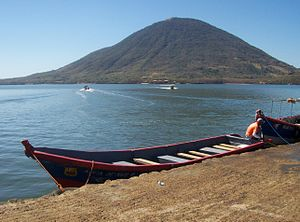<p><font size=2 >Le Tigre est une petite île stratovolcanique du Honduras située dans le golfe de Fonseca. Il fait partie du département de Valle. Avec (en), Isla Commandante et quelques cayes il forme la municipalité de Amapala. Grâce à un canal naturel profond et à l'absence d'infrastructures modernes, Amapala est depuis de nombreuses années le principal port du Honduras dans l'océan Pacifique. Le stratovolcan basaltique conique, culminant à 783 m, est le volcan le plus méridional du Honduras. L'île d'El Tigre est le volcan le moins disséqué, avec le volcan voisin de Zacate Grande, sur le continent et est probablement d'âge Holocène. Un simple cône satellite, El Vigía, est visible du centre peuplé d'Amapala, du côté nord-ouest. Trois pays, le Honduras, le Salvador et le Nicaragua, ont des côtes le long du golfe de Fonseca, et tous trois ont été impliqués dans un long conflit sur les droits du golfe et des îles situées à l'intérieur. En 1992, une chambre de la Cour internationale de justice (CIJ) a tranché le différend des frontières terrestres, insulaires et maritimes, sur le golfe de Fonseca. La CIJ a décidé qu'e le Salvador, le Honduras et le Nicaragua devaient partager le contrôle du golfe. Le Salvador s'est vu attribuer les îles de Meanguera et Meanguerita, et le Honduras l'île Le Tigre.</p></body></div>`)[0];
            popup_45f800c7c85b4d1ab977bf98ef0fecbe.setContent(html_698336e301ec4d38af374476ec2e2af4);
        

        marker_544584769e18432fbe2bb514aa137abf.bindPopup(popup_45f800c7c85b4d1ab977bf98ef0fecbe)
        ;

        
    
    
            var marker_5da0acc80cdc4c3a8618995b53a3124d = L.marker(
                [8.58, -80.17],
                {}
            ).addTo(map_7c1f1d9a431841c5a1696d072c33924b);
        
    
            var icon_13480211d58646769bbe6f3e4efa1495 = L.AwesomeMarkers.icon(
                {"extraClasses": "fa-rotate-0", "icon": "map-marker", "iconColor": "blue", "markerColor": "blue", "prefix": "glyphicon"}
            );
            marker_5da0acc80cdc4c3a8618995b53a3124d.setIcon(icon_13480211d58646769bbe6f3e4efa1495);
        
    
        var popup_f2708c9f4d064b88a1c024bc408acaae = L.popup({"maxWidth": "100%"});

        
            var html_fe6efc07f2254a2caa9304e556edf4f2 = $(`<div id="html_fe6efc07f2254a2caa9304e556edf4f2" style="width: 100.0%; height: 100.0%;"><h1>El Valle</h1><body>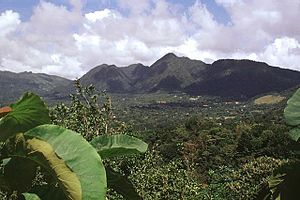<p><font size=2 >El Valle est un stratovolcan du Panama.</p></body></div>`)[0];
            popup_f2708c9f4d064b88a1c024bc408acaae.setContent(html_fe6efc07f2254a2caa9304e556edf4f2);
        

        marker_5da0acc80cdc4c3a8618995b53a3124d.bindPopup(popup_f2708c9f4d064b88a1c024bc408acaae)
        ;

        
    
    
            var marker_2f7cf928b1d44c58b0368ee7ea4f9429 = L.marker(
                [63.4325, -20.2475],
                {}
            ).addTo(map_7c1f1d9a431841c5a1696d072c33924b);
        
    
            var icon_a116d12ada534916937513861cee4b64 = L.AwesomeMarkers.icon(
                {"extraClasses": "fa-rotate-0", "icon": "map-marker", "iconColor": "blue", "markerColor": "blue", "prefix": "glyphicon"}
            );
            marker_2f7cf928b1d44c58b0368ee7ea4f9429.setIcon(icon_a116d12ada534916937513861cee4b64);
        
    
        var popup_9f6f78470ab64981a5e1756595058154 = L.popup({"maxWidth": "100%"});

        
            var html_291b8b16066f44c3809ecd9293561a7d = $(`<div id="html_291b8b16066f44c3809ecd9293561a7d" style="width: 100.0%; height: 100.0%;"><h1>Eldfell</h1><body><p><font size=2 >L'Eldfell, toponyme islandais signifiant littéralement en français « montagne de feu », est un volcan d'Islande situé sur l'île de Heimaey, dans les îles Vestmann. Il est né subitement le 23 janvier 1973 en pleine nuit, juste à côté des habitations, en prenant de court la population qui doit évacuer l'île dans la précipitation. Des fontaines de lave donnent naissance à des coulées qui agrandissent l'île et menacent de boucher l'entrée du port. La pêche étant la principale économie de l'île, le comblement de la baie signifierait la mort économique de la ville ce qui motive les autorités pour stopper la lave. Un important dispositif d'arrosage du front de la coulée avec de l'eau de mer est ainsi mis en place avec succès. Néanmoins, à la fin de l'éruption le 28 juin, les dégâts sont très importants, de nombreuses maisons ayant été détruites où enterrées sous les téphras, et un décès est à déplorer.</p></body></div>`)[0];
            popup_9f6f78470ab64981a5e1756595058154.setContent(html_291b8b16066f44c3809ecd9293561a7d);
        

        marker_2f7cf928b1d44c58b0368ee7ea4f9429.bindPopup(popup_9f6f78470ab64981a5e1756595058154)
        ;

        
    
    
            var marker_e19f8473f9a74f19a357cf3e25c076c7 = L.marker(
                [8.96667, 39.9333],
                {}
            ).addTo(map_7c1f1d9a431841c5a1696d072c33924b);
        
    
            var icon_23435a6acddc415583cea73bfd4b75a3 = L.AwesomeMarkers.icon(
                {"extraClasses": "fa-rotate-0", "icon": "map-marker", "iconColor": "blue", "markerColor": "blue", "prefix": "glyphicon"}
            );
            marker_e19f8473f9a74f19a357cf3e25c076c7.setIcon(icon_23435a6acddc415583cea73bfd4b75a3);
        
    
        var popup_9e51410665834636a6ccca6cb4ae926c = L.popup({"maxWidth": "100%"});

        
            var html_5b447bb39d6f4f75966cf35b4efe8d58 = $(`<div id="html_5b447bb39d6f4f75966cf35b4efe8d58" style="width: 100.0%; height: 100.0%;"><h1>Fentale</h1><body>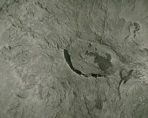<p><font size=2 >Le Fentale, également appelé Fantale, Fantali ou encore Fantalle, est un volcan d'Éthiopie situé dans la vallée du Grand Rift.</p></body></div>`)[0];
            popup_9e51410665834636a6ccca6cb4ae926c.setContent(html_5b447bb39d6f4f75966cf35b4efe8d58);
        

        marker_e19f8473f9a74f19a357cf3e25c076c7.bindPopup(popup_9e51410665834636a6ccca6cb4ae926c)
        ;

        
    
    
            var marker_4468d410decb428a924284176f85cde9 = L.marker(
                [37.7722, -25.3131],
                {}
            ).addTo(map_7c1f1d9a431841c5a1696d072c33924b);
        
    
            var icon_f869e170fba94b098013e39340bd6ea5 = L.AwesomeMarkers.icon(
                {"extraClasses": "fa-rotate-0", "icon": "map-marker", "iconColor": "blue", "markerColor": "blue", "prefix": "glyphicon"}
            );
            marker_4468d410decb428a924284176f85cde9.setIcon(icon_f869e170fba94b098013e39340bd6ea5);
        
    
        var popup_9664a9049ec34922b712df4244dcd5ca = L.popup({"maxWidth": "100%"});

        
            var html_35fda988ec754b1b845870d303572839 = $(`<div id="html_35fda988ec754b1b845870d303572839" style="width: 100.0%; height: 100.0%;"><h1>Furnas</h1><body>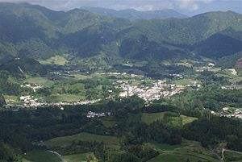<p><font size=2 >Furnas est une localité de la commune de Povoação, sur l'île de São Miguel aux Açores. Sa superficie est de 33,88 km² pour 1.541 habitants (2001). Densité: 45,5 h/km². L'endroit est connu pour abriter diverses manifestations spectaculaires de volcanisme.</p></body></div>`)[0];
            popup_9664a9049ec34922b712df4244dcd5ca.setContent(html_35fda988ec754b1b845870d303572839);
        

        marker_4468d410decb428a924284176f85cde9.bindPopup(popup_9664a9049ec34922b712df4244dcd5ca)
        ;

        
    
    
            var marker_65bae06a32354ed6897c6db429f4c4a1 = L.marker(
                [1.22111, -77.3592],
                {}
            ).addTo(map_7c1f1d9a431841c5a1696d072c33924b);
        
    
            var icon_0a68171414d24c8294a5ebd22200998e = L.AwesomeMarkers.icon(
                {"extraClasses": "fa-rotate-0", "icon": "map-marker", "iconColor": "blue", "markerColor": "blue", "prefix": "glyphicon"}
            );
            marker_65bae06a32354ed6897c6db429f4c4a1.setIcon(icon_0a68171414d24c8294a5ebd22200998e);
        
    
        var popup_6f009a3c06dc4631a95e7eba675fa060 = L.popup({"maxWidth": "100%"});

        
            var html_6bf3391441034d53bf14a1132824e6b3 = $(`<div id="html_6bf3391441034d53bf14a1132824e6b3" style="width: 100.0%; height: 100.0%;"><h1>Galeras</h1><body><p><font size=2 >Le Galeras, également appelé La Galera ou encore Volcan de Pasto, est un volcan de 4 276 mètres d'altitude de Colombie situé dans le département de Nariño, à l'ouest de sa capitale San Juan de Pasto</p></body></div>`)[0];
            popup_6f009a3c06dc4631a95e7eba675fa060.setContent(html_6bf3391441034d53bf14a1132824e6b3);
        

        marker_65bae06a32354ed6897c6db429f4c4a1.bindPopup(popup_6f009a3c06dc4631a95e7eba675fa060)
        ;

        
    
    
            var marker_1fae68e6b26e41339761d31ca7a67afc = L.marker(
                [-7.25673, 108.077],
                {}
            ).addTo(map_7c1f1d9a431841c5a1696d072c33924b);
        
    
            var icon_6fca73cb629148f6bfcc04a435237e37 = L.AwesomeMarkers.icon(
                {"extraClasses": "fa-rotate-0", "icon": "map-marker", "iconColor": "blue", "markerColor": "blue", "prefix": "glyphicon"}
            );
            marker_1fae68e6b26e41339761d31ca7a67afc.setIcon(icon_6fca73cb629148f6bfcc04a435237e37);
        
    
        var popup_0ac8e4f8852c4d358270f9044550c435 = L.popup({"maxWidth": "100%"});

        
            var html_968b09d26fad4b558cc4933613d0300b = $(`<div id="html_968b09d26fad4b558cc4933613d0300b" style="width: 100.0%; height: 100.0%;"><h1>Galunggung</h1><body><p><font size=2 >Le Galunggung, en indonésien Gunung Galunggung, est un volcan d'Indonésie situé dans l'ouest de Java. Deux de ses éruptions sont notables, celle de 1822 par son nombre de victimes s'élevant à 4 011 morts et celle de 1982 qui provoque l'arrêt des réacteurs de deux avions de ligne qui réussissent néanmoins à les redémarrer, évitant ainsi un crash.</p></body></div>`)[0];
            popup_0ac8e4f8852c4d358270f9044550c435.setContent(html_968b09d26fad4b558cc4933613d0300b);
        

        marker_1fae68e6b26e41339761d31ca7a67afc.bindPopup(popup_0ac8e4f8852c4d358270f9044550c435)
        ;

        
    
    
            var marker_7bf116a36f5b4a3c83a7455413a47b89 = L.marker(
                [0.809167, 127.333],
                {}
            ).addTo(map_7c1f1d9a431841c5a1696d072c33924b);
        
    
            var icon_01a2fd4a276941959495a8eee88430b8 = L.AwesomeMarkers.icon(
                {"extraClasses": "fa-rotate-0", "icon": "map-marker", "iconColor": "blue", "markerColor": "blue", "prefix": "glyphicon"}
            );
            marker_7bf116a36f5b4a3c83a7455413a47b89.setIcon(icon_01a2fd4a276941959495a8eee88430b8);
        
    
        var popup_2d2c310bb32848ca8b53393036317a69 = L.popup({"maxWidth": "100%"});

        
            var html_65c84b95040f4435952790d62b358c0d = $(`<div id="html_65c84b95040f4435952790d62b358c0d" style="width: 100.0%; height: 100.0%;"><h1>Gamalama</h1><body><p><font size=2 >Le Gamalama, aussi appelé Arfat, Arufat ou encore pic de Ternate, est un stratovolcan d'Indonésie qui constitue le point culminant de l'île de Ternate. De forme conique, il occupe la totalité de l'île de Ternate située à une dizaine de kilomètres du rivage occidental de l'île de Halmahera, la plus grande de la province des Moluques du Nord. Pendant des siècles, Ternate était un comptoir portugais et hollandais pour le commerce d'épices, ce qui a permis de garder des témoignages des dernières éruptions du volcan.</p></body></div>`)[0];
            popup_2d2c310bb32848ca8b53393036317a69.setContent(html_65c84b95040f4435952790d62b358c0d);
        

        marker_7bf116a36f5b4a3c83a7455413a47b89.bindPopup(popup_2d2c310bb32848ca8b53393036317a69)
        ;

        
    
    
            var marker_10dba56cda31475a804da3a80a81862e = L.marker(
                [-5.45, 150.033],
                {}
            ).addTo(map_7c1f1d9a431841c5a1696d072c33924b);
        
    
            var icon_c08ff399f4fd4b21989d6aee4f0f38fd = L.AwesomeMarkers.icon(
                {"extraClasses": "fa-rotate-0", "icon": "map-marker", "iconColor": "blue", "markerColor": "blue", "prefix": "glyphicon"}
            );
            marker_10dba56cda31475a804da3a80a81862e.setIcon(icon_c08ff399f4fd4b21989d6aee4f0f38fd);
        
    
        var popup_b932b8b4a3f84c69bfd08bf09e43c268 = L.popup({"maxWidth": "100%"});

        
            var html_330368ab2f5648d0a78d58b962317acb = $(`<div id="html_330368ab2f5648d0a78d58b962317acb" style="width: 100.0%; height: 100.0%;"><h1>Garbuna Group</h1><body>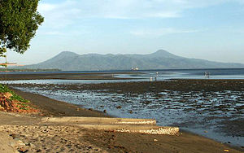<p><font size=2 >Le groupe Garbuna, en anglais Garbuna Group, est un volcan de Papouasie-Nouvelle-Guinée situé sur l'île de Nouvelle-Bretagne, au début de la . Il se compose d'un volcan bouclier sur lequel s'élèvent trois cônes volcaniques : le Garbuna, le Krummel et le Welcker, le point culminant avec 1 105 mètres d'altitude.</p></body></div>`)[0];
            popup_b932b8b4a3f84c69bfd08bf09e43c268.setContent(html_330368ab2f5648d0a78d58b962317acb);
        

        marker_10dba56cda31475a804da3a80a81862e.bindPopup(popup_b932b8b4a3f84c69bfd08bf09e43c268)
        ;

        
    
    
            var marker_5610167256c64760ae474afba2c2bac5 = L.marker(
                [4.813, 96.82],
                {}
            ).addTo(map_7c1f1d9a431841c5a1696d072c33924b);
        
    
            var icon_d71ef17d56e64dccbe9887177650e4ee = L.AwesomeMarkers.icon(
                {"extraClasses": "fa-rotate-0", "icon": "map-marker", "iconColor": "blue", "markerColor": "blue", "prefix": "glyphicon"}
            );
            marker_5610167256c64760ae474afba2c2bac5.setIcon(icon_d71ef17d56e64dccbe9887177650e4ee);
        
    
        var popup_f5798cddf57e4812b7d044340de5b593 = L.popup({"maxWidth": "100%"});

        
            var html_d9cdd6b0e3ae42fea2e4430162064e68 = $(`<div id="html_d9cdd6b0e3ae42fea2e4430162064e68" style="width: 100.0%; height: 100.0%;"><h1>Geureudong</h1><body>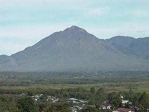<p><font size=2 >Le Geureudong est un stratovolcan complexe situé sur l'île de Sumatra en Indonésie. Il est composé de deux volcans imbriqués : le Bur ni Geureudong et le Bur ni Telong.</p></body></div>`)[0];
            popup_f5798cddf57e4812b7d044340de5b593.setContent(html_d9cdd6b0e3ae42fea2e4430162064e68);
        

        marker_5610167256c64760ae474afba2c2bac5.bindPopup(popup_f5798cddf57e4812b7d044340de5b593)
        ;

        
    
    
            var marker_30b28284f7374450ae220c7b86f140dd = L.marker(
                [52.558, 158.03],
                {}
            ).addTo(map_7c1f1d9a431841c5a1696d072c33924b);
        
    
            var icon_6a86b52cefdd4a05a4861f82838e9f30 = L.AwesomeMarkers.icon(
                {"extraClasses": "fa-rotate-0", "icon": "map-marker", "iconColor": "blue", "markerColor": "blue", "prefix": "glyphicon"}
            );
            marker_30b28284f7374450ae220c7b86f140dd.setIcon(icon_6a86b52cefdd4a05a4861f82838e9f30);
        
    
        var popup_eb62d653629e45cbbf3a86d1f1f9cfd9 = L.popup({"maxWidth": "100%"});

        
            var html_4e53f1c5a699400db2ef49d6a5b774e4 = $(`<div id="html_4e53f1c5a699400db2ef49d6a5b774e4" style="width: 100.0%; height: 100.0%;"><h1>Gorely</h1><body>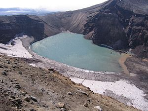<p><font size=2 >Le Goreli (en russe : Горелый), est un complexe volcanique situé au sud de la péninsule du Kamchatka, à l'est de la Russie. Il comprend cinq stratovolcans qui se chevauchent et sont parmi les plus actifs du sud de la péninsule. Le Goreli est un imposant volcan bouclier, qui est dans une phase éruptive depuis 2010. Les précédentes éruptions ont eu lieu en 1980-1981 et en 1984-1986.</p></body></div>`)[0];
            popup_eb62d653629e45cbbf3a86d1f1f9cfd9.setContent(html_4e53f1c5a699400db2ef49d6a5b774e4);
        

        marker_30b28284f7374450ae220c7b86f140dd.bindPopup(popup_eb62d653629e45cbbf3a86d1f1f9cfd9)
        ;

        
    
    
            var marker_4736e82b706e4249a0da40c96c4fca03 = L.marker(
                [-7.95, -14.35],
                {}
            ).addTo(map_7c1f1d9a431841c5a1696d072c33924b);
        
    
            var icon_20e48487f18a43beac8842b143b4a8d8 = L.AwesomeMarkers.icon(
                {"extraClasses": "fa-rotate-0", "icon": "map-marker", "iconColor": "blue", "markerColor": "blue", "prefix": "glyphicon"}
            );
            marker_4736e82b706e4249a0da40c96c4fca03.setIcon(icon_20e48487f18a43beac8842b143b4a8d8);
        
    
        var popup_e14ae1c74edc49dd87a9973e6bc6f49e = L.popup({"maxWidth": "100%"});

        
            var html_c83c593fe461414e850cde0cbfd1fa16 = $(`<div id="html_c83c593fe461414e850cde0cbfd1fa16" style="width: 100.0%; height: 100.0%;"><h1>Green Mountain, Ascension Island</h1><body>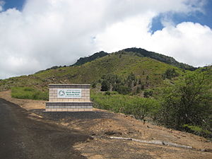<p><font size=2 >Green Mountain, surnommée The Peak, est le point culminant de l'île de l'Ascension, avec 859 mètres d'altitude. Il s'agit d'un stratovolcan. Il apparaît sur le drapeau de l'île de l'Ascension.</p></body></div>`)[0];
            popup_e14ae1c74edc49dd87a9973e6bc6f49e.setContent(html_c83c593fe461414e850cde0cbfd1fa16);
        

        marker_4736e82b706e4249a0da40c96c4fca03.bindPopup(popup_e14ae1c74edc49dd87a9973e6bc6f49e)
        ;

        
    
    
            var marker_a04b3c9f4a68490eb324ef04d05cecae = L.marker(
                [24.8419, 121.952],
                {}
            ).addTo(map_7c1f1d9a431841c5a1696d072c33924b);
        
    
            var icon_8637fc4369f749278967d700a3bf9b1a = L.AwesomeMarkers.icon(
                {"extraClasses": "fa-rotate-0", "icon": "map-marker", "iconColor": "blue", "markerColor": "blue", "prefix": "glyphicon"}
            );
            marker_a04b3c9f4a68490eb324ef04d05cecae.setIcon(icon_8637fc4369f749278967d700a3bf9b1a);
        
    
        var popup_dbcfbd344c34487f98b31fb6250fd816 = L.popup({"maxWidth": "100%"});

        
            var html_9ffde9b90f8d43a2b151ec737753c0a7 = $(`<div id="html_9ffde9b90f8d43a2b151ec737753c0a7" style="width: 100.0%; height: 100.0%;"><h1>Guishan (Gueishan) Island, Kweishantao</h1><body><p><font size=2 >L’île de la Montagne Tortue (chinois traditionnel : 龜山島 ; chinois simplifié : 龟山岛 ; bopomofo : ㄍㄨㄟ ㄕㄢ ㄉㄠˇ ; pinyin : guī shān dǎo), également appelée île de Gueishan (Kweishan), est une île inhabitée située dans l’océan Pacifique appartenant à Taïwan. Elle abrite notamment le seul volcan actif de Taïwan.</p></body></div>`)[0];
            popup_dbcfbd344c34487f98b31fb6250fd816.setContent(html_9ffde9b90f8d43a2b151ec737753c0a7);
        

        marker_a04b3c9f4a68490eb324ef04d05cecae.bindPopup(popup_dbcfbd344c34487f98b31fb6250fd816)
        ;

        
    
    
            var marker_b4b6de2c9576477d969576284b78cf38 = L.marker(
                [63.9922, -19.6658],
                {}
            ).addTo(map_7c1f1d9a431841c5a1696d072c33924b);
        
    
            var icon_3b10b9b267a54136b4abe3f32b62fbc3 = L.AwesomeMarkers.icon(
                {"extraClasses": "fa-rotate-0", "icon": "map-marker", "iconColor": "blue", "markerColor": "blue", "prefix": "glyphicon"}
            );
            marker_b4b6de2c9576477d969576284b78cf38.setIcon(icon_3b10b9b267a54136b4abe3f32b62fbc3);
        
    
        var popup_0d6b452bdaf34681b27a4298f7e64fba = L.popup({"maxWidth": "100%"});

        
            var html_900f051227f145369640c94ece1955a2 = $(`<div id="html_900f051227f145369640c94ece1955a2" style="width: 100.0%; height: 100.0%;"><h1>Hekla</h1><body><p><font size=2 >L'Hekla est un volcan situé dans le sud de l'Islande, dans les Hautes Terres, et culmine à 1 488 mètres d'altitude. Il se situe à environ 50 km au nord-est du village de Hvolsvöllur. Il est l'un des volcans les plus actifs d'Islande avec plus de 20 éruptions depuis 874. C'est l'un des volcans les plus connus d'Islande et également l'un des plus actifs. Il fait partie des stratovolcans basaltiques les plus actifs au monde. Bien qu'il soit assez facile d'accès, son sommet n'est gravi qu'en 1750 par Eggert Ólafson et Bjarni Pálsson, car la croyance locale voulait que ce soit l'entrée des Enfers. L'Hekla fait partie d'une chaîne volcanique de 40 kilomètres de long. Toutefois, la partie la plus active de cette chaîne, une fissure d'environ 5,5 km de longueur nommée Heklugjá, est considérée comme le volcan Hekla à proprement parler. L'Hekla ressemble à un bateau renversé, dont la quille serait en fait une série de cratères, dont deux sont généralement les plus actifs. La base du volcan mesure douze kilomètres de longueur pour neuf kilomètres de largeur. Ce stratovolcan s'élève à 1 000 mètres au-dessus des terrains environnants. Les fréquentes éruptions de l'Hekla ont couvert une grande partie de l'Islande de téphras et les couches qu'elles ont formées peuvent être utilisés pour la datation d'éruptions d'autres volcans : 10 % des téphras produits en Islande au cours du dernier millénaire ont été produits par l'Hekla, ce qui s'élève à 5 km3. Le volcan a produit l'un des plus grands volumes de lave dans le monde au cours du dernier millénaire, soit environ 8 km3.</p></body></div>`)[0];
            popup_0d6b452bdaf34681b27a4298f7e64fba.setContent(html_900f051227f145369640c94ece1955a2);
        

        marker_b4b6de2c9576477d969576284b78cf38.bindPopup(popup_0d6b452bdaf34681b27a4298f7e64fba)
        ;

        
    
    
            var marker_825dc2fb6f8d449f8f140f09df01a976 = L.marker(
                [9.20056, 124.668],
                {}
            ).addTo(map_7c1f1d9a431841c5a1696d072c33924b);
        
    
            var icon_0c6014b99b3d4e52a77581e081b13f7f = L.AwesomeMarkers.icon(
                {"extraClasses": "fa-rotate-0", "icon": "map-marker", "iconColor": "blue", "markerColor": "blue", "prefix": "glyphicon"}
            );
            marker_825dc2fb6f8d449f8f140f09df01a976.setIcon(icon_0c6014b99b3d4e52a77581e081b13f7f);
        
    
        var popup_42eae35b6f6b422e86f29bf9e7c7134c = L.popup({"maxWidth": "100%"});

        
            var html_c184318e1b154beda1e06a0e6c408847 = $(`<div id="html_c184318e1b154beda1e06a0e6c408847" style="width: 100.0%; height: 100.0%;"><h1>HibokHibok</h1><body>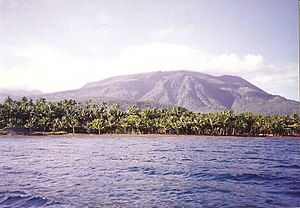<p><font size=2 >Le Hibok-Hibok, également appelé Catarman, est un volcan des Philippines situé sur la petite île de Camiguin, au nord de la grande île de Mindanao.</p></body></div>`)[0];
            popup_42eae35b6f6b422e86f29bf9e7c7134c.setContent(html_c184318e1b154beda1e06a0e6c408847);
        

        marker_825dc2fb6f8d449f8f140f09df01a976.bindPopup(popup_42eae35b6f6b422e86f29bf9e7c7134c)
        ;

        
    
    
            var marker_88251decd2b647cfa3772dc4c6d28245 = L.marker(
                [56.772, -131.294],
                {}
            ).addTo(map_7c1f1d9a431841c5a1696d072c33924b);
        
    
            var icon_f6f13eda32dd46e392dec2a9f863cb39 = L.AwesomeMarkers.icon(
                {"extraClasses": "fa-rotate-0", "icon": "map-marker", "iconColor": "blue", "markerColor": "blue", "prefix": "glyphicon"}
            );
            marker_88251decd2b647cfa3772dc4c6d28245.setIcon(icon_f6f13eda32dd46e392dec2a9f863cb39);
        
    
        var popup_2693db867e6143198fb739d399d0acea = L.popup({"maxWidth": "100%"});

        
            var html_11eeafbf1185481da01b6fe897a6998a = $(`<div id="html_11eeafbf1185481da01b6fe897a6998a" style="width: 100.0%; height: 100.0%;"><h1>Hoodoo Mountain</h1><body><p><font size=2 >Hoodoo Mountain est un stratovolcan de Colombie-Britannique, au Canada. Il culmine à 1 850 mètres d'altitude. Hoodoo Mountain demeure l'un des onze volcans du Canada à présenter une sismicité, avec le mont Cayley, le mont Edziza, Castle Rock, The Volcano, Crow Lagoon, le cône Nazko, le champ volcanique de Wells Gray-Clearwater, le mont Silverthrone, le mont Meager et le mont Garibaldi.  </p></body></div>`)[0];
            popup_2693db867e6143198fb739d399d0acea.setContent(html_11eeafbf1185481da01b6fe897a6998a);
        

        marker_88251decd2b647cfa3772dc4c6d28245.bindPopup(popup_2693db867e6143198fb739d399d0acea)
        ;

        
    
    
            var marker_318c8f8939bc4fc2b2bcaa2870e09322 = L.marker(
                [-15.7206, -71.8555],
                {}
            ).addTo(map_7c1f1d9a431841c5a1696d072c33924b);
        
    
            var icon_2e925fa26a4f4b65b4fa2d13e574d059 = L.AwesomeMarkers.icon(
                {"extraClasses": "fa-rotate-0", "icon": "map-marker", "iconColor": "blue", "markerColor": "blue", "prefix": "glyphicon"}
            );
            marker_318c8f8939bc4fc2b2bcaa2870e09322.setIcon(icon_2e925fa26a4f4b65b4fa2d13e574d059);
        
    
        var popup_20fdca7e4e984f409d66b9377b0027c9 = L.popup({"maxWidth": "100%"});

        
            var html_27f2bcc7d5fe4cb2973371d3ed7bd564 = $(`<div id="html_27f2bcc7d5fe4cb2973371d3ed7bd564" style="width: 100.0%; height: 100.0%;"><h1>Hualca Hualca</h1><body>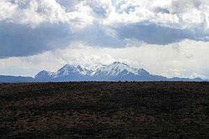<p><font size=2 >Le Hualca Hualca est un stratovolcan d'une altitude de 6 025 mètres situé dans la province de Caylloma au Sud du Pérou. Le Hualca Hualca fait partie d'un complexe volcanique incluant les volcans Ampato et Sabancaya.</p></body></div>`)[0];
            popup_20fdca7e4e984f409d66b9377b0027c9.setContent(html_27f2bcc7d5fe4cb2973371d3ed7bd564);
        

        marker_318c8f8939bc4fc2b2bcaa2870e09322.bindPopup(popup_20fdca7e4e984f409d66b9377b0027c9)
        ;

        
    
    
            var marker_cb286d6e5bee4c20bfccc5c0ba8856c2 = L.marker(
                [-74.55, -99.1833],
                {}
            ).addTo(map_7c1f1d9a431841c5a1696d072c33924b);
        
    
            var icon_85947c2318e54846acbba0bc65c5c7ab = L.AwesomeMarkers.icon(
                {"extraClasses": "fa-rotate-0", "icon": "map-marker", "iconColor": "blue", "markerColor": "blue", "prefix": "glyphicon"}
            );
            marker_cb286d6e5bee4c20bfccc5c0ba8856c2.setIcon(icon_85947c2318e54846acbba0bc65c5c7ab);
        
    
        var popup_d9aa657349ae4aea9ad002a741e9b850 = L.popup({"maxWidth": "100%"});

        
            var html_bd7247eebff04392a46b2b5ca5982541 = $(`<div id="html_bd7247eebff04392a46b2b5ca5982541" style="width: 100.0%; height: 100.0%;"><h1>Hudson Mountains</h1><body><p><font size=2 >La chaîne Hudson est une chaîne de montagnes volcanique de type stratovolcan actif, située dans la partie occidentale de la Terre d'Ellsworth en Antarctique. Elle est composée de cônes volcaniques parasites de faible altitude et de nunataks. Elle fut nommée ainsi en l'honneur du capitaine (en), commandant de l'USS Peacock lors de l'expédition Wilkes (ou USEE), (1838-1842).</p></body></div>`)[0];
            popup_d9aa657349ae4aea9ad002a741e9b850.setContent(html_bd7247eebff04392a46b2b5ca5982541);
        

        marker_cb286d6e5bee4c20bfccc5c0ba8856c2.bindPopup(popup_d9aa657349ae4aea9ad002a741e9b850)
        ;

        
    
    
            var marker_5a7ad21a06914d68a8da82fd63bb4533 = L.marker(
                [-8.058, 114.242],
                {}
            ).addTo(map_7c1f1d9a431841c5a1696d072c33924b);
        
    
            var icon_1a747a048dee48739a0f591810aec78d = L.AwesomeMarkers.icon(
                {"extraClasses": "fa-rotate-0", "icon": "map-marker", "iconColor": "blue", "markerColor": "blue", "prefix": "glyphicon"}
            );
            marker_5a7ad21a06914d68a8da82fd63bb4533.setIcon(icon_1a747a048dee48739a0f591810aec78d);
        
    
        var popup_5b1fb97d5c9342ccb96c5efaf8ced818 = L.popup({"maxWidth": "100%"});

        
            var html_aa8f9716930f40b9bb4f0a886c33a60f = $(`<div id="html_aa8f9716930f40b9bb4f0a886c33a60f" style="width: 100.0%; height: 100.0%;"><h1>Ijen</h1><body><p><font size=2 >L'Ijen est un volcan d'Indonésie situé sur l'île de Java et se présentant sous la forme d'une caldeira, la caldeira de Kendeng, bordée au sud par plusieurs cônes et cratères volcaniques dont le Kawah Ijen qui renferme un lac acide.</p></body></div>`)[0];
            popup_5b1fb97d5c9342ccb96c5efaf8ced818.setContent(html_aa8f9716930f40b9bb4f0a886c33a60f);
        

        marker_5a7ad21a06914d68a8da82fd63bb4533.bindPopup(popup_5b1fb97d5c9342ccb96c5efaf8ced818)
        ;

        
    
    
            var marker_9931b146d5dc4971b6e9b779072c2fee = L.marker(
                [51.49, 157.2],
                {}
            ).addTo(map_7c1f1d9a431841c5a1696d072c33924b);
        
    
            var icon_ef93c654f8f44d4c951ffc3802e83968 = L.AwesomeMarkers.icon(
                {"extraClasses": "fa-rotate-0", "icon": "map-marker", "iconColor": "blue", "markerColor": "blue", "prefix": "glyphicon"}
            );
            marker_9931b146d5dc4971b6e9b779072c2fee.setIcon(icon_ef93c654f8f44d4c951ffc3802e83968);
        
    
        var popup_3c76963101e84209b8d75cdaedb3c164 = L.popup({"maxWidth": "100%"});

        
            var html_bc9ea51056d34c68a330088cec098ac3 = $(`<div id="html_bc9ea51056d34c68a330088cec098ac3" style="width: 100.0%; height: 100.0%;"><h1>Ilyinsky</h1><body>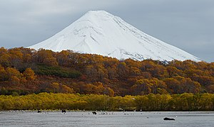<p><font size=2 >L'Ilinski, en russe : Ильинская Сопка (Ilinskaïa sopka), est un stratovolcan situé à proximité du lac Kourile, au sud de la péninsule du Kamtchatka, à l'est de la Russie. Sa dernière éruption remonte à 1901.</p></body></div>`)[0];
            popup_3c76963101e84209b8d75cdaedb3c164.setContent(html_bc9ea51056d34c68a330088cec098ac3);
        

        marker_9931b146d5dc4971b6e9b779072c2fee.bindPopup(popup_3c76963101e84209b8d75cdaedb3c164)
        ;

        
    
    
            var marker_9efb3ad4ec3f47daab23559b1c8df15b = L.marker(
                [0.258056, -78.1797],
                {}
            ).addTo(map_7c1f1d9a431841c5a1696d072c33924b);
        
    
            var icon_960c15bef94c436cbf1410fe342fca38 = L.AwesomeMarkers.icon(
                {"extraClasses": "fa-rotate-0", "icon": "map-marker", "iconColor": "blue", "markerColor": "blue", "prefix": "glyphicon"}
            );
            marker_9efb3ad4ec3f47daab23559b1c8df15b.setIcon(icon_960c15bef94c436cbf1410fe342fca38);
        
    
        var popup_8de78c6e30a94badb8b9429f2ce0e503 = L.popup({"maxWidth": "100%"});

        
            var html_f1e4f1c5f0da496782aa4a1d9dafb7f7 = $(`<div id="html_f1e4f1c5f0da496782aa4a1d9dafb7f7" style="width: 100.0%; height: 100.0%;"><h1>Imbabura</h1><body>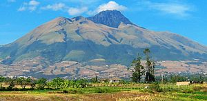<p><font size=2 >L'Imbabura est un volcan endormi d'Équateur culminant à 4 609 mètres d'altitude, dans la province d'Imbabura.</p></body></div>`)[0];
            popup_8de78c6e30a94badb8b9429f2ce0e503.setContent(html_f1e4f1c5f0da496782aa4a1d9dafb7f7);
        

        marker_9efb3ad4ec3f47daab23559b1c8df15b.bindPopup(popup_8de78c6e30a94badb8b9429f2ce0e503)
        ;

        
    
    
            var marker_7cff52c6bef34798844bf8863ced59a6 = L.marker(
                [-27.033, -68.296],
                {}
            ).addTo(map_7c1f1d9a431841c5a1696d072c33924b);
        
    
            var icon_b4d3e9e2f14a4c34ad02cc088b9989b2 = L.AwesomeMarkers.icon(
                {"extraClasses": "fa-rotate-0", "icon": "map-marker", "iconColor": "blue", "markerColor": "blue", "prefix": "glyphicon"}
            );
            marker_7cff52c6bef34798844bf8863ced59a6.setIcon(icon_b4d3e9e2f14a4c34ad02cc088b9989b2);
        
    
        var popup_799a529670c844358ade49cac76167a8 = L.popup({"maxWidth": "100%"});

        
            var html_659e2c0330b747eda75630a6bac58043 = $(`<div id="html_659e2c0330b747eda75630a6bac58043" style="width: 100.0%; height: 100.0%;"><h1>Incahuasi</h1><body><p><font size=2 >Le Nevado de Incahuasi (prononcé en espagnol : [iŋkaˈwasi] ; du quechua Inka Wasi signifiant « maison de l'Inca » est un volcan des Andes, en Amérique du Sud. Il est situé à la frontière entre la province de Catamarca (département de Tinogasta) en Argentine et la IIIe région d'Atacama au Chili. Il s’élève à une altitude de 6 621 m, ce qui en fait le septième volcan le plus haut du monde (volcans actifs et éteints confondus). Le volcan consiste en une caldeira de 3,5 km de large et deux stratovolcans. Quatre cônes pyroclastiques sont situés à 7 km au nord-est et ont produit des coulées de lave basalte-andésite ayant recouvert une superficie de 10 km2.</p></body></div>`)[0];
            popup_799a529670c844358ade49cac76167a8.setContent(html_659e2c0330b747eda75630a6bac58043);
        

        marker_7cff52c6bef34798844bf8863ced59a6.bindPopup(popup_799a529670c844358ade49cac76167a8)
        ;

        
    
    
            var marker_daeb9fbac3ea4d179d146a2175ea9b87 = L.marker(
                [-8.875, 120.95],
                {}
            ).addTo(map_7c1f1d9a431841c5a1696d072c33924b);
        
    
            var icon_4a35eabc043d4ae8a6244106723e8c71 = L.AwesomeMarkers.icon(
                {"extraClasses": "fa-rotate-0", "icon": "map-marker", "iconColor": "blue", "markerColor": "blue", "prefix": "glyphicon"}
            );
            marker_daeb9fbac3ea4d179d146a2175ea9b87.setIcon(icon_4a35eabc043d4ae8a6244106723e8c71);
        
    
        var popup_c8ce7629e0b74e5080167588c2f64268 = L.popup({"maxWidth": "100%"});

        
            var html_5d6e56d201fc42debd0c0bcb66dcd4cc = $(`<div id="html_5d6e56d201fc42debd0c0bcb66dcd4cc" style="width: 100.0%; height: 100.0%;"><h1>Inierie</h1><body><p><font size=2 >L'Inierie est un stratovolcan d'Indonésie situé sur l'île de Florès. Culminant à 2 245 mètres d'altitude, il est situé à proximité du village de .</p></body></div>`)[0];
            popup_c8ce7629e0b74e5080167588c2f64268.setContent(html_5d6e56d201fc42debd0c0bcb66dcd4cc);
        

        marker_daeb9fbac3ea4d179d146a2175ea9b87.bindPopup(popup_c8ce7629e0b74e5080167588c2f64268)
        ;

        
    
    
            var marker_e13c745c894446d2a89cb2a05814467a = L.marker(
                [9.97917, -83.8525],
                {}
            ).addTo(map_7c1f1d9a431841c5a1696d072c33924b);
        
    
            var icon_c3dd43d2e9f841a89da909b615928def = L.AwesomeMarkers.icon(
                {"extraClasses": "fa-rotate-0", "icon": "map-marker", "iconColor": "blue", "markerColor": "blue", "prefix": "glyphicon"}
            );
            marker_e13c745c894446d2a89cb2a05814467a.setIcon(icon_c3dd43d2e9f841a89da909b615928def);
        
    
        var popup_e9c48dbbea874feea65a2d55681eec36 = L.popup({"maxWidth": "100%"});

        
            var html_871292d237da4ae8966c64dd0f791a76 = $(`<div id="html_871292d237da4ae8966c64dd0f791a76" style="width: 100.0%; height: 100.0%;"><h1>Irazú Volcano</h1><body>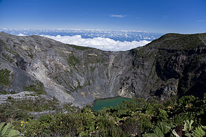<p><font size=2 >L'Irazú est un stratovolcan actif situé dans la cordillère Centrale (Cordillera Volcánica Central), au Costa Rica. Il culmine à 3 432 mètres d'altitude. Le cratère héberge un lac acide, qui s'est lentement évaporé en avril 2013 à la suite de la reprise de l'activité volcanique. Il se trouve à l'intérieur du parc national qui porte son nom, le , à environ trente kilomètres à l'ouest de la ville de Cartago. Les volcans Turrialba et Irazú sont parfois qualifiés de jumeaux car ils prennent appui sur le même socle.</p></body></div>`)[0];
            popup_e9c48dbbea874feea65a2d55681eec36.setContent(html_871292d237da4ae8966c64dd0f791a76);
        

        marker_e13c745c894446d2a89cb2a05814467a.bindPopup(popup_e9c48dbbea874feea65a2d55681eec36)
        ;

        
    
    
            var marker_4d44dbc1849b451dbc1458a4483ec505 = L.marker(
                [-19.15, -68.8333],
                {}
            ).addTo(map_7c1f1d9a431841c5a1696d072c33924b);
        
    
            var icon_38a2b8e65f8342bf9d2127351df9843d = L.AwesomeMarkers.icon(
                {"extraClasses": "fa-rotate-0", "icon": "map-marker", "iconColor": "blue", "markerColor": "blue", "prefix": "glyphicon"}
            );
            marker_4d44dbc1849b451dbc1458a4483ec505.setIcon(icon_38a2b8e65f8342bf9d2127351df9843d);
        
    
        var popup_d68c161d6e1e4246a773933cddd5548e = L.popup({"maxWidth": "100%"});

        
            var html_263be80606384531be243e966145ba27 = $(`<div id="html_263be80606384531be243e966145ba27" style="width: 100.0%; height: 100.0%;"><h1>Isluga</h1><body><p><font size=2 >L'Isluga est un volcan du Chili situé à sept kilomètres à l'ouest de la frontière avec la Bolivie. Il se présente sous la forme d'un stratovolcan culminant à environ 5 550 mètres d'altitude. Juste à l'ouest de son sommet se trouve un cratère de 400 mètres de diamètre. Sa dernière éruption s'est produite en 1913 bien qu'une autre se serait produite en 1960. Il est situé à l'intérieur du parc national Volcán Isluga.</p></body></div>`)[0];
            popup_d68c161d6e1e4246a773933cddd5548e.setContent(html_263be80606384531be243e966145ba27);
        

        marker_4d44dbc1849b451dbc1458a4483ec505.bindPopup(popup_d68c161d6e1e4246a773933cddd5548e)
        ;

        
    
    
            var marker_34955dc6e2b549feae2bec7bc02f4bf1 = L.marker(
                [13.813, -89.633],
                {}
            ).addTo(map_7c1f1d9a431841c5a1696d072c33924b);
        
    
            var icon_00f59c1d4e4c41b6bb98f5d57de9e514 = L.AwesomeMarkers.icon(
                {"extraClasses": "fa-rotate-0", "icon": "map-marker", "iconColor": "blue", "markerColor": "blue", "prefix": "glyphicon"}
            );
            marker_34955dc6e2b549feae2bec7bc02f4bf1.setIcon(icon_00f59c1d4e4c41b6bb98f5d57de9e514);
        
    
        var popup_46913a81505b48c795f5e645f0e8813c = L.popup({"maxWidth": "100%"});

        
            var html_8d462e55bc56407aaac0abedc0fa24e7 = $(`<div id="html_8d462e55bc56407aaac0abedc0fa24e7" style="width: 100.0%; height: 100.0%;"><h1>Izalco</h1><body><p><font size=2 >L'Izalco est un volcan de la cordillère d'Apaneca situé au Salvador dans le département de Sonsonate.</p></body></div>`)[0];
            popup_46913a81505b48c795f5e645f0e8813c.setContent(html_8d462e55bc56407aaac0abedc0fa24e7);
        

        marker_34955dc6e2b549feae2bec7bc02f4bf1.bindPopup(popup_46913a81505b48c795f5e645f0e8813c)
        ;

        
    
    
            var marker_0f66b6a1ee494ee59dfd698247fc6827 = L.marker(
                [15.5403, 41.8338],
                {}
            ).addTo(map_7c1f1d9a431841c5a1696d072c33924b);
        
    
            var icon_d6eee90315964bbbb84c15cea9b1b41c = L.AwesomeMarkers.icon(
                {"extraClasses": "fa-rotate-0", "icon": "map-marker", "iconColor": "blue", "markerColor": "blue", "prefix": "glyphicon"}
            );
            marker_0f66b6a1ee494ee59dfd698247fc6827.setIcon(icon_d6eee90315964bbbb84c15cea9b1b41c);
        
    
        var popup_706d83de53884eda9f13316dfe18f911 = L.popup({"maxWidth": "100%"});

        
            var html_9af2d4171a394647a9e4ee960e68cebe = $(`<div id="html_9af2d4171a394647a9e4ee960e68cebe" style="width: 100.0%; height: 100.0%;"><h1>Jabal at-Tair</h1><body><p><font size=2 >Jabal al-Tair, encore appelée Djebel Cabret, Djebel Khebrit, Djebel Sebain, Djebel Sziwan, Djebel Tar, Djebel Tayir, Jabal al Tayr, Djebel Teer, Djebel Teir, Djebel Ter, Djebel Teyr ou encore Djebel Tir, est une île volcanique du Yémen qui se situe dans la mer Rouge.</p></body></div>`)[0];
            popup_706d83de53884eda9f13316dfe18f911.setContent(html_9af2d4171a394647a9e4ee960e68cebe);
        

        marker_0f66b6a1ee494ee59dfd698247fc6827.bindPopup(popup_706d83de53884eda9f13316dfe18f911)
        ;

        
    
    
            var marker_e0e12a69154a4f6f960cc6ac9e106d6f = L.marker(
                [-19.45, -67.4167],
                {}
            ).addTo(map_7c1f1d9a431841c5a1696d072c33924b);
        
    
            var icon_f342f038322a4c658f7866819d7016e7 = L.AwesomeMarkers.icon(
                {"extraClasses": "fa-rotate-0", "icon": "map-marker", "iconColor": "blue", "markerColor": "blue", "prefix": "glyphicon"}
            );
            marker_e0e12a69154a4f6f960cc6ac9e106d6f.setIcon(icon_f342f038322a4c658f7866819d7016e7);
        
    
        var popup_b45d7b3d8cac44488028d117c39c8a5d = L.popup({"maxWidth": "100%"});

        
            var html_be4cb986b564475fb5e1a391cb42c825 = $(`<div id="html_be4cb986b564475fb5e1a391cb42c825" style="width: 100.0%; height: 100.0%;"><h1>Jayu Quta</h1><body>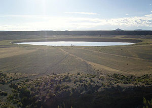<p><font size=2 >Le Jayu Khota ou Jayu Kkota (en aymara: Jayu Quta qui signifie « lac salé », jayu sel, quta lac) est un volcan de Bolivie constitué d'un cône volcanique et de deux maars.</p></body></div>`)[0];
            popup_b45d7b3d8cac44488028d117c39c8a5d.setContent(html_be4cb986b564475fb5e1a391cb42c825);
        

        marker_e0e12a69154a4f6f960cc6ac9e106d6f.bindPopup(popup_b45d7b3d8cac44488028d117c39c8a5d)
        ;

        
    
    
            var marker_23b993399fb841c7b1d2166869cb004d = L.marker(
                [-3.52, 102.62],
                {}
            ).addTo(map_7c1f1d9a431841c5a1696d072c33924b);
        
    
            var icon_58d90c07e5b345bcaa28d9e3f5fa7577 = L.AwesomeMarkers.icon(
                {"extraClasses": "fa-rotate-0", "icon": "map-marker", "iconColor": "blue", "markerColor": "blue", "prefix": "glyphicon"}
            );
            marker_23b993399fb841c7b1d2166869cb004d.setIcon(icon_58d90c07e5b345bcaa28d9e3f5fa7577);
        
    
        var popup_8b79c5b6ece34b1b8dcb5afa84be3ec1 = L.popup({"maxWidth": "100%"});

        
            var html_a55e759b0e3c496f9ef8d0090f727c99 = $(`<div id="html_a55e759b0e3c496f9ef8d0090f727c99" style="width: 100.0%; height: 100.0%;"><h1>Kaba</h1><body>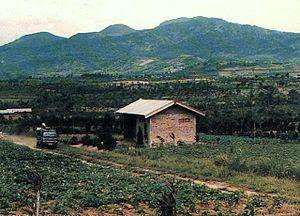<p><font size=2 >Le Kaba est un stratovolcan d'Indonésie situé sur l'île de Sumatra. Il culmine à 1 952 mètres d'altitude. Il s'agit du volcan « jumeau » du et fait partie de la chaîne volcanique des Bukit Barisan. Son sommet possède trois cratères : le Kaba Baru, le Kaba Lama et le Kaba Vogelsang.</p></body></div>`)[0];
            popup_8b79c5b6ece34b1b8dcb5afa84be3ec1.setContent(html_a55e759b0e3c496f9ef8d0090f727c99);
        

        marker_23b993399fb841c7b1d2166869cb004d.bindPopup(popup_8b79c5b6ece34b1b8dcb5afa84be3ec1)
        ;

        
    
    
            var marker_180cb60c28e643319711709ecfcfba82 = L.marker(
                [51.3056, 156.875],
                {}
            ).addTo(map_7c1f1d9a431841c5a1696d072c33924b);
        
    
            var icon_ea17823aeee047a9bcdc6199981b8cc7 = L.AwesomeMarkers.icon(
                {"extraClasses": "fa-rotate-0", "icon": "map-marker", "iconColor": "blue", "markerColor": "blue", "prefix": "glyphicon"}
            );
            marker_180cb60c28e643319711709ecfcfba82.setIcon(icon_ea17823aeee047a9bcdc6199981b8cc7);
        
    
        var popup_395d26c40f21404c877c11bf7c6f0e09 = L.popup({"maxWidth": "100%"});

        
            var html_775a96dab31a46c0b8b0d61f85f7bcaa = $(`<div id="html_775a96dab31a46c0b8b0d61f85f7bcaa" style="width: 100.0%; height: 100.0%;"><h1>Kambalny</h1><body><p><font size=2 >Le Kambalny, en russe : Камбальный, est un stratovolcan situé au sud du Kamtchatka, dans l'est de la Russie.</p></body></div>`)[0];
            popup_395d26c40f21404c877c11bf7c6f0e09.setContent(html_775a96dab31a46c0b8b0d61f85f7bcaa);
        

        marker_180cb60c28e643319711709ecfcfba82.bindPopup(popup_395d26c40f21404c877c11bf7c6f0e09)
        ;

        
    
    
            var marker_c48ed6a63e1c4be98f823dfccc2db350 = L.marker(
                [56.02, 160.593],
                {}
            ).addTo(map_7c1f1d9a431841c5a1696d072c33924b);
        
    
            var icon_ac72242224164316a690bae46284eddc = L.AwesomeMarkers.icon(
                {"extraClasses": "fa-rotate-0", "icon": "map-marker", "iconColor": "blue", "markerColor": "blue", "prefix": "glyphicon"}
            );
            marker_c48ed6a63e1c4be98f823dfccc2db350.setIcon(icon_ac72242224164316a690bae46284eddc);
        
    
        var popup_78704a7f4fe64e59a15896fa2704e052 = L.popup({"maxWidth": "100%"});

        
            var html_4204d1bc1856474d918e17741a7c80a4 = $(`<div id="html_4204d1bc1856474d918e17741a7c80a4" style="width: 100.0%; height: 100.0%;"><h1>Kamen</h1><body><p><font size=2 >Le Kamen, en russe : Камень, est un stratovolcan situé au sud de la péninsule du Kamchatka, à l'est de la Russie. Entouré par le Klioutchevskoï et le Bezymianny, il appartient au groupe volcanique du Klioutchevskoï. Avec ses 4 585 mètres d'altitude, il est le deuxième plus haut sommet de la péninsule du Kamtchatka, derrière le Klioutchevskoï (4 835 m). Il y a environ 1 200-1 300 ans, un glissement de terrain s'est produit sur la flanc oriental du volcan et une énorme avalanche de 4 à 6 km3 de débris a parcouru plus de 30 km en direction du sud-est.</p></body></div>`)[0];
            popup_78704a7f4fe64e59a15896fa2704e052.setContent(html_4204d1bc1856474d918e17741a7c80a4);
        

        marker_c48ed6a63e1c4be98f823dfccc2db350.bindPopup(popup_78704a7f4fe64e59a15896fa2704e052)
        ;

        
    
    
            var marker_bf3e62943a8f47eda99e86fbe7c4c755 = L.marker(
                [-7.125, 107.8],
                {}
            ).addTo(map_7c1f1d9a431841c5a1696d072c33924b);
        
    
            var icon_5c0f3008e35145be9714cf7bb1964915 = L.AwesomeMarkers.icon(
                {"extraClasses": "fa-rotate-0", "icon": "map-marker", "iconColor": "blue", "markerColor": "blue", "prefix": "glyphicon"}
            );
            marker_bf3e62943a8f47eda99e86fbe7c4c755.setIcon(icon_5c0f3008e35145be9714cf7bb1964915);
        
    
        var popup_aa0099a7e1804d4e8f4f746967d16772 = L.popup({"maxWidth": "100%"});

        
            var html_cb9886cd10e34f65911cafe9af1d253f = $(`<div id="html_cb9886cd10e34f65911cafe9af1d253f" style="width: 100.0%; height: 100.0%;"><h1>Kamojang</h1><body>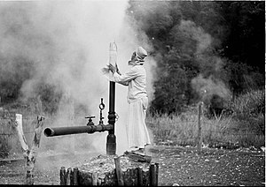<p><font size=2 >Le Kamojang, appelé en indonésien Kawah Kamojang ("cratère Kamojang"), est une vaste caldeira de plusieurs kilomètres, dans le sud-ouest de l'île de Java en Indonésie. Elle se trouve à 7 kilomètres du volcan Guntur. Son importante activité hydrothermale en font la première zone de développement de l'industrie géothermique en Indonésie. On trouve éparpillés dans la vaste forêt tropicale surplombant la région des fumerolles, des mares de boues et des sources chaudes.</p></body></div>`)[0];
            popup_aa0099a7e1804d4e8f4f746967d16772.setContent(html_cb9886cd10e34f65911cafe9af1d253f);
        

        marker_bf3e62943a8f47eda99e86fbe7c4c755.bindPopup(popup_aa0099a7e1804d4e8f4f746967d16772)
        ;

        
    
    
            var marker_fd1d5cae20074363be8b00e4851e69b7 = L.marker(
                [-19.67, -175.03],
                {}
            ).addTo(map_7c1f1d9a431841c5a1696d072c33924b);
        
    
            var icon_86a241811b6b4a0696dc748fc71a5ec3 = L.AwesomeMarkers.icon(
                {"extraClasses": "fa-rotate-0", "icon": "map-marker", "iconColor": "blue", "markerColor": "blue", "prefix": "glyphicon"}
            );
            marker_fd1d5cae20074363be8b00e4851e69b7.setIcon(icon_86a241811b6b4a0696dc748fc71a5ec3);
        
    
        var popup_1748d48d4da74aaea3d4b52fbbea342c = L.popup({"maxWidth": "100%"});

        
            var html_fa4e0f0c0a9d4aea9e38d669c81bc985 = $(`<div id="html_fa4e0f0c0a9d4aea9e38d669c81bc985" style="width: 100.0%; height: 100.0%;"><h1>Kao (volcano)</h1><body>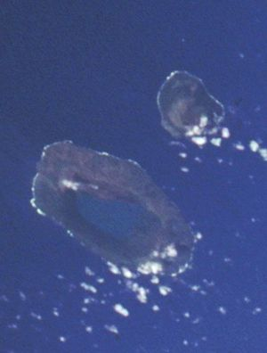<p><font size=2 >Kao est une île volcanique des Tonga, dans l'archipel de Ha'apai. Le sommet de son volcan, point culminant des Tonga, se trouve à 1 030 mètres d'altitude.</p></body></div>`)[0];
            popup_1748d48d4da74aaea3d4b52fbbea342c.setContent(html_fa4e0f0c0a9d4aea9e38d669c81bc985);
        

        marker_fd1d5cae20074363be8b00e4851e69b7.bindPopup(popup_1748d48d4da74aaea3d4b52fbbea342c)
        ;

        
    
    
            var marker_7a4503ac0b8b4f36b8ab2c9fe6f0291d = L.marker(
                [54.0478, 159.442],
                {}
            ).addTo(map_7c1f1d9a431841c5a1696d072c33924b);
        
    
            var icon_b8d78347758548feb8579d0544548f41 = L.AwesomeMarkers.icon(
                {"extraClasses": "fa-rotate-0", "icon": "map-marker", "iconColor": "blue", "markerColor": "blue", "prefix": "glyphicon"}
            );
            marker_7a4503ac0b8b4f36b8ab2c9fe6f0291d.setIcon(icon_b8d78347758548feb8579d0544548f41);
        
    
        var popup_a661e919e6ad4c329b85a6800d41d577 = L.popup({"maxWidth": "100%"});

        
            var html_f57bc7a88a244016b323414250e6adad = $(`<div id="html_f57bc7a88a244016b323414250e6adad" style="width: 100.0%; height: 100.0%;"><h1>Karymsky</h1><body><p><font size=2 >Le Karymski, en russe Karymskaïa sopka, Карымская сопка, est un volcan de la péninsule du Kamtchatka, en Russie. C'est l'un des volcans les plus actifs de cette région de Russie avec des dizaines d'éruptions depuis le début du XXe siècle.</p></body></div>`)[0];
            popup_a661e919e6ad4c329b85a6800d41d577.setContent(html_f57bc7a88a244016b323414250e6adad);
        

        marker_7a4503ac0b8b4f36b8ab2c9fe6f0291d.bindPopup(popup_a661e919e6ad4c329b85a6800d41d577)
        ;

        
    
    
            var marker_0cbecd60e69a4e7ca6be2938e9d843bd = L.marker(
                [-7.93, 112.308],
                {}
            ).addTo(map_7c1f1d9a431841c5a1696d072c33924b);
        
    
            var icon_d8d3df66ae1e44a3ab73a700a8fb0c33 = L.AwesomeMarkers.icon(
                {"extraClasses": "fa-rotate-0", "icon": "map-marker", "iconColor": "blue", "markerColor": "blue", "prefix": "glyphicon"}
            );
            marker_0cbecd60e69a4e7ca6be2938e9d843bd.setIcon(icon_d8d3df66ae1e44a3ab73a700a8fb0c33);
        
    
        var popup_9b0202eb29044c328cccb32b0840f57f = L.popup({"maxWidth": "100%"});

        
            var html_1371a2de2aec48c199cf1ec3c6319d59 = $(`<div id="html_1371a2de2aec48c199cf1ec3c6319d59" style="width: 100.0%; height: 100.0%;"><h1>Kelud</h1><body><p><font size=2 >Le volcan Kelud est un stratovolcan actif situé dans l'est de l'île de Java, en Indonésie. Haut de 1 731 mètres, il est proche de plusieurs villes importantes, Blitar, Kediri et Malang, ce qui en fait l'un des plus dangereux au monde.</p></body></div>`)[0];
            popup_9b0202eb29044c328cccb32b0840f57f.setContent(html_1371a2de2aec48c199cf1ec3c6319d59);
        

        marker_0cbecd60e69a4e7ca6be2938e9d843bd.bindPopup(popup_9b0202eb29044c328cccb32b0840f57f)
        ;

        
    
    
            var marker_1bd4c9259b3940c09fcf14cd7f3ff295 = L.marker(
                [52.0625, 157.71],
                {}
            ).addTo(map_7c1f1d9a431841c5a1696d072c33924b);
        
    
            var icon_023f4fb63bd34710aaa3b82ac9a8bcf9 = L.AwesomeMarkers.icon(
                {"extraClasses": "fa-rotate-0", "icon": "map-marker", "iconColor": "blue", "markerColor": "blue", "prefix": "glyphicon"}
            );
            marker_1bd4c9259b3940c09fcf14cd7f3ff295.setIcon(icon_023f4fb63bd34710aaa3b82ac9a8bcf9);
        
    
        var popup_51b30cb3352e479d8d6260b144d7c71e = L.popup({"maxWidth": "100%"});

        
            var html_48e7b9e6959b49578cc93788ccff8047 = $(`<div id="html_48e7b9e6959b49578cc93788ccff8047" style="width: 100.0%; height: 100.0%;"><h1>Khodutka</h1><body>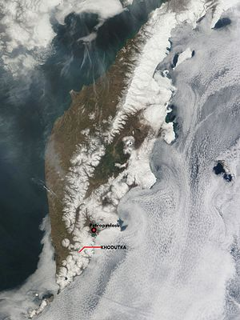<p><font size=2 >Le Khodoutka (en russe : Ходутка), également connu sous le nom de Khodoutkinskie Gory (en russe : Ходуткинские Горы), est un stratovolcan situé au sud de la péninsule du Kamtchatka, à l'est de la Russie. Le Khodoutka est situé à l'intérieur du territoire du parc naturel du Kamtchatka du Sud, classé au Patrimoine mondial par l'Unesco au titre du site « Volcans du Kamtchatka ». Le Khodoutka s'est formé à partir d'un autre stratovolcan, le Priemych, entre la fin du Pléistocène et le début de l'Holocène. Vers 800 av. J.-C., une éruption — accompagnée par de petites coulées pyroclastiques et l'apparition ultérieure de coulées de lave et de dômes — s'est soldée par le dépôt de téphras tout au long du Kamtchatka du sud et par la formation d'un double maar (Khodutkinsky maar) sur le versant ouest-nord-ouest du Khodoutka. Le Khodoutka est l'un des volcans qui entourent la ville de Petropavlovsk-Kamchatsky, l'une des plus anciennes villes de l'Extrême-Orient russe et la principale ville du kraï du Kamtchatka.</p></body></div>`)[0];
            popup_51b30cb3352e479d8d6260b144d7c71e.setContent(html_48e7b9e6959b49578cc93788ccff8047);
        

        marker_1bd4c9259b3940c09fcf14cd7f3ff295.bindPopup(popup_51b30cb3352e479d8d6260b144d7c71e)
        ;

        
    
    
            var marker_faab17c3827c43f3a33d405bcc47c091 = L.marker(
                [55.1308, 160.32],
                {}
            ).addTo(map_7c1f1d9a431841c5a1696d072c33924b);
        
    
            var icon_aad7bb6677c742fa9e850a71687ed697 = L.AwesomeMarkers.icon(
                {"extraClasses": "fa-rotate-0", "icon": "map-marker", "iconColor": "blue", "markerColor": "blue", "prefix": "glyphicon"}
            );
            marker_faab17c3827c43f3a33d405bcc47c091.setIcon(icon_aad7bb6677c742fa9e850a71687ed697);
        
    
        var popup_e6daade84f5043a699cf4e1b27c15568 = L.popup({"maxWidth": "100%"});

        
            var html_ce13e9d414c248db8c9bd761d7e6495d = $(`<div id="html_ce13e9d414c248db8c9bd761d7e6495d" style="width: 100.0%; height: 100.0%;"><h1>Kizimen</h1><body><p><font size=2 >Le Kizimen, en russe : Кизимен, est un volcan de Russie situé dans le Kamtchatka.</p></body></div>`)[0];
            popup_e6daade84f5043a699cf4e1b27c15568.setContent(html_ce13e9d414c248db8c9bd761d7e6495d);
        

        marker_faab17c3827c43f3a33d405bcc47c091.bindPopup(popup_e6daade84f5043a699cf4e1b27c15568)
        ;

        
    
    
            var marker_07e3337a398e470f9600cd6b78e2be33 = L.marker(
                [56.056, 160.644],
                {}
            ).addTo(map_7c1f1d9a431841c5a1696d072c33924b);
        
    
            var icon_94f3f15f63b0435baed249ad8419800f = L.AwesomeMarkers.icon(
                {"extraClasses": "fa-rotate-0", "icon": "map-marker", "iconColor": "blue", "markerColor": "blue", "prefix": "glyphicon"}
            );
            marker_07e3337a398e470f9600cd6b78e2be33.setIcon(icon_94f3f15f63b0435baed249ad8419800f);
        
    
        var popup_632f71eab3674eab9835f3d0962dc75f = L.popup({"maxWidth": "100%"});

        
            var html_b7483d1348a14945870fbf728a68f336 = $(`<div id="html_b7483d1348a14945870fbf728a68f336" style="width: 100.0%; height: 100.0%;"><h1>Klyuchevskaya Sopka</h1><body><p><font size=2 >Le Klioutchevskoï (en russe : Ключевской Вулкан), aussi appelé Klioutchevskaïa Sopka (en russe : Ключевская сопка) est le plus haut sommet et le volcan le plus actif de la péninsule du Kamtchatka, en Russie. Il est également le point culminant de la Sibérie, devançant le mont Béloukha (dans l'Altaï). C'est un stratovolcan basaltique de 4 750 mètres à 4 835 mètres d'altitude né il y a environ 6 000 ans. Il fait partie de la ceinture de feu du Pacifique. Au large du Kamtchatka, une fosse océanique de 10 500 mètres de profondeur et des séismes témoignent de la subduction, à la vitesse de 10 cm/an, de la plaque pacifique sous la plaque eurasienne ; comme tous les volcans de la péninsule du Kamtchatka, le Klioutchevskoï est donc un volcan de subduction. Il a été classé, avec les autres volcans du Kamtchatka, au patrimoine mondial par l'UNESCO depuis 1996 (révisé en 2001).</p></body></div>`)[0];
            popup_632f71eab3674eab9835f3d0962dc75f.setContent(html_b7483d1348a14945870fbf728a68f336);
        

        marker_07e3337a398e470f9600cd6b78e2be33.bindPopup(popup_632f71eab3674eab9835f3d0962dc75f)
        ;

        
    
    
            var marker_d14cbbb466914f6492242f621e1175ad = L.marker(
                [53.3208, 158.712],
                {}
            ).addTo(map_7c1f1d9a431841c5a1696d072c33924b);
        
    
            var icon_82ad89545fdc434e943487add83496eb = L.AwesomeMarkers.icon(
                {"extraClasses": "fa-rotate-0", "icon": "map-marker", "iconColor": "blue", "markerColor": "blue", "prefix": "glyphicon"}
            );
            marker_d14cbbb466914f6492242f621e1175ad.setIcon(icon_82ad89545fdc434e943487add83496eb);
        
    
        var popup_22cb738b496949dcbc5840df2dd4cfba = L.popup({"maxWidth": "100%"});

        
            var html_0e3a2dc03f004f17a1db8b082b94e327 = $(`<div id="html_0e3a2dc03f004f17a1db8b082b94e327" style="width: 100.0%; height: 100.0%;"><h1>Koryaksky</h1><body><p><font size=2 >Le Koriakski, appelé également la Koriaka , Koriakskaïa sopka, Strelochnaïa sopka ou encore Strelochnaïa, en russe Корякская сопка, est un volcan de Russie situé dans le sud de la péninsule du Kamtchatka, dans le kraï de même nom.</p></body></div>`)[0];
            popup_22cb738b496949dcbc5840df2dd4cfba.setContent(html_0e3a2dc03f004f17a1db8b082b94e327);
        

        marker_d14cbbb466914f6492242f621e1175ad.bindPopup(popup_22cb738b496949dcbc5840df2dd4cfba)
        ;

        
    
    
            var marker_cc749765a1db428eb3d19feb21c84b79 = L.marker(
                [54.5933, 160.273],
                {}
            ).addTo(map_7c1f1d9a431841c5a1696d072c33924b);
        
    
            var icon_399db50c67db4cc9b4e6d219b7ee08c4 = L.AwesomeMarkers.icon(
                {"extraClasses": "fa-rotate-0", "icon": "map-marker", "iconColor": "blue", "markerColor": "blue", "prefix": "glyphicon"}
            );
            marker_cc749765a1db428eb3d19feb21c84b79.setIcon(icon_399db50c67db4cc9b4e6d219b7ee08c4);
        
    
        var popup_36734e59f08a4864ba79917fd8ce12c8 = L.popup({"maxWidth": "100%"});

        
            var html_fa6733ad15dc44109c2058ce17ec4408 = $(`<div id="html_fa6733ad15dc44109c2058ce17ec4408" style="width: 100.0%; height: 100.0%;"><h1>Krasheninnikov</h1><body>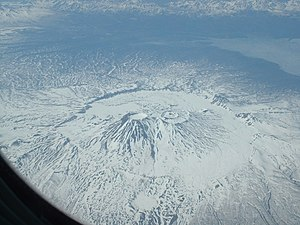<p><font size=2 >Le Kracheninnikov, en russe : Крашенинников, est composé de deux stratovolcans superposés à l'intérieur d'une vaste caldeira située dans la partie orientale de la péninsule du Kamtchatka, à l'est de la Russie. Il a été nommé en l'honneur de l'explorateur russe Stepan Kracheninnikov (1711-1755), membre de la grande expédition du Nord (1737-1741). Il est situé à deux kilomètres au sud du lac Kronotski.</p></body></div>`)[0];
            popup_36734e59f08a4864ba79917fd8ce12c8.setContent(html_fa6733ad15dc44109c2058ce17ec4408);
        

        marker_cc749765a1db428eb3d19feb21c84b79.bindPopup(popup_36734e59f08a4864ba79917fd8ce12c8)
        ;

        
    
    
            var marker_44e325f39a3e441698364834e9e4afb5 = L.marker(
                [54.7533, 160.527],
                {}
            ).addTo(map_7c1f1d9a431841c5a1696d072c33924b);
        
    
            var icon_c381a8e0fafa44edbb5e08a03b9cecc2 = L.AwesomeMarkers.icon(
                {"extraClasses": "fa-rotate-0", "icon": "map-marker", "iconColor": "blue", "markerColor": "blue", "prefix": "glyphicon"}
            );
            marker_44e325f39a3e441698364834e9e4afb5.setIcon(icon_c381a8e0fafa44edbb5e08a03b9cecc2);
        
    
        var popup_00aee9b582144aa1a294ec2b7bce8cf8 = L.popup({"maxWidth": "100%"});

        
            var html_8f527ae2955d4a57a3ef30ae0b4c5cf0 = $(`<div id="html_8f527ae2955d4a57a3ef30ae0b4c5cf0" style="width: 100.0%; height: 100.0%;"><h1>Kronotsky</h1><body><p><font size=2 >Le Kronotski, en russe : Кроноцкая сопка, ISO 9 : Kronotskaïa sopka, est un volcan situé en Russie, dans la péninsule du Kamtchatka. Ses pentes extrêmement régulières lui confèrent une forme peu rencontrée de cône symétrique, seuls le mont Fuji au Japon ou le Mayon aux Philippines ayant un profil comparable.</p></body></div>`)[0];
            popup_00aee9b582144aa1a294ec2b7bce8cf8.setContent(html_8f527ae2955d4a57a3ef30ae0b4c5cf0);
        

        marker_44e325f39a3e441698364834e9e4afb5.bindPopup(popup_00aee9b582144aa1a294ec2b7bce8cf8)
        ;

        
    
    
            var marker_395403f5edfd421d9a6ddb3cc66a6cf9 = L.marker(
                [51.8, 157.53],
                {}
            ).addTo(map_7c1f1d9a431841c5a1696d072c33924b);
        
    
            var icon_4f321b9a868047039128cdd5632705e2 = L.AwesomeMarkers.icon(
                {"extraClasses": "fa-rotate-0", "icon": "map-marker", "iconColor": "blue", "markerColor": "blue", "prefix": "glyphicon"}
            );
            marker_395403f5edfd421d9a6ddb3cc66a6cf9.setIcon(icon_4f321b9a868047039128cdd5632705e2);
        
    
        var popup_e9a4dd927a7446d9a03a187c3cca39e6 = L.popup({"maxWidth": "100%"});

        
            var html_5a60a35bba5a4410af576fa71f7363bf = $(`<div id="html_5a60a35bba5a4410af576fa71f7363bf" style="width: 100.0%; height: 100.0%;"><h1>Ksudach</h1><body><p><font size=2 >Le Ksoudatch (en russe : Ксудач), également connu sous le nom de Vonyuchy Khrebet) est un stratovolcan situé au sud de la péninsule du Kamtchatka, dans l'Extrême-Orient russe. Sa dernière éruption, en 1907, est l'une des plus importantes observées au Kamtchatka. Le Ksoudatch est situé sur le territoire du parc naturel du Kamtchatka du Sud, l'un des six sites classés en 1996 au Patrimoine mondial de l'Unesco sous le titre de « Volcans du Kamtchatka ». Le sommet du Ksoudatch est composé de deux caldeiras qui se chevauchent. Deux lacs de cratère, le lac Balshoe et le lac Kraternoe, se sont formés à l'intérieur de ces caldeiras. Ces lacs, avec les sources d'eau chaude et la nature environnante, font du Ksoudatch une destination prisée pour les amateurs de trekking. Dans l'éventualité d'une nouvelle éruption, son éloignement minimise son danger pour l'homme.</p></body></div>`)[0];
            popup_e9a4dd927a7446d9a03a187c3cca39e6.setContent(html_5a60a35bba5a4410af576fa71f7363bf);
        

        marker_395403f5edfd421d9a6ddb3cc66a6cf9.bindPopup(popup_e9a4dd927a7446d9a03a187c3cca39e6)
        ;

        
    
    
            var marker_71569b2aa34e4944b538c9e08b18208d = L.marker(
                [19.2308, -98.0319],
                {}
            ).addTo(map_7c1f1d9a431841c5a1696d072c33924b);
        
    
            var icon_6c5d2cf5f7de4c40b32267a150956b3b = L.AwesomeMarkers.icon(
                {"extraClasses": "fa-rotate-0", "icon": "map-marker", "iconColor": "blue", "markerColor": "blue", "prefix": "glyphicon"}
            );
            marker_71569b2aa34e4944b538c9e08b18208d.setIcon(icon_6c5d2cf5f7de4c40b32267a150956b3b);
        
    
        var popup_a67deb33f65649bea9b8d0aac26bdc40 = L.popup({"maxWidth": "100%"});

        
            var html_7535591bd406437684b4f0f3169913e0 = $(`<div id="html_7535591bd406437684b4f0f3169913e0" style="width: 100.0%; height: 100.0%;"><h1>La Malinche</h1><body><p><font size=2 >La Malinche, Malinzin ou Matlalcueyetl est un volcan endormi du Mexique culminant à 4 420, 4 461 ou 4 462 mètres d'altitude. Il fait partie de la cordillère néovolcanique, aussi connue sous le nom de cordillère d'Anahuac.</p></body></div>`)[0];
            popup_a67deb33f65649bea9b8d0aac26bdc40.setContent(html_7535591bd406437684b4f0f3169913e0);
        

        marker_71569b2aa34e4944b538c9e08b18208d.bindPopup(popup_a67deb33f65649bea9b8d0aac26bdc40)
        ;

        
    
    
            var marker_27a7810cc8ad4e888a166204e7d3715d = L.marker(
                [8.47, -80.82],
                {}
            ).addTo(map_7c1f1d9a431841c5a1696d072c33924b);
        
    
            var icon_23f6315b8ead4f4e85442047cd440817 = L.AwesomeMarkers.icon(
                {"extraClasses": "fa-rotate-0", "icon": "map-marker", "iconColor": "blue", "markerColor": "blue", "prefix": "glyphicon"}
            );
            marker_27a7810cc8ad4e888a166204e7d3715d.setIcon(icon_23f6315b8ead4f4e85442047cd440817);
        
    
        var popup_b0aa644ab2244e76b2ae3b02f8d26ca0 = L.popup({"maxWidth": "100%"});

        
            var html_04194567eca34f739461c98a7bd21c5d = $(`<div id="html_04194567eca34f739461c98a7bd21c5d" style="width: 100.0%; height: 100.0%;"><h1>La Yeguada</h1><body><p><font size=2 >La Yeguada est un stratovolcan du Panama.  </p></body></div>`)[0];
            popup_b0aa644ab2244e76b2ae3b02f8d26ca0.setContent(html_04194567eca34f739461c98a7bd21c5d);
        

        marker_27a7810cc8ad4e888a166204e7d3715d.bindPopup(popup_b0aa644ab2244e76b2ae3b02f8d26ca0)
        ;

        
    
    
            var marker_ac1e909ba2e140d7ba61d9d202fbfe78 = L.marker(
                [-39.6328, -71.4997],
                {}
            ).addTo(map_7c1f1d9a431841c5a1696d072c33924b);
        
    
            var icon_a9116f40b9fa427f884dce11861f400b = L.AwesomeMarkers.icon(
                {"extraClasses": "fa-rotate-0", "icon": "map-marker", "iconColor": "blue", "markerColor": "blue", "prefix": "glyphicon"}
            );
            marker_ac1e909ba2e140d7ba61d9d202fbfe78.setIcon(icon_a9116f40b9fa427f884dce11861f400b);
        
    
        var popup_1447b27106614889bf00a573e2bb1dd5 = L.popup({"maxWidth": "100%"});

        
            var html_04b542f19616486aa790ed9cdd3ea32b = $(`<div id="html_04b542f19616486aa790ed9cdd3ea32b" style="width: 100.0%; height: 100.0%;"><h1>Lanín</h1><body><p><font size=2 >Le volcan Lanín est un stratovolcan situé à la frontière entre le Chili et l'Argentine ayant une altitude de 3 747 mètres. Il fut découvert en 1782 par Basilio Villarino.</p></body></div>`)[0];
            popup_1447b27106614889bf00a573e2bb1dd5.setContent(html_04b542f19616486aa790ed9cdd3ea32b);
        

        marker_ac1e909ba2e140d7ba61d9d202fbfe78.bindPopup(popup_1447b27106614889bf00a573e2bb1dd5)
        ;

        
    
    
            var marker_64850090873f4112b6dc597efca667b3 = L.marker(
                [-23.3667, -67.7333],
                {}
            ).addTo(map_7c1f1d9a431841c5a1696d072c33924b);
        
    
            var icon_901338b574d04efabd6abf5cb55640e5 = L.AwesomeMarkers.icon(
                {"extraClasses": "fa-rotate-0", "icon": "map-marker", "iconColor": "blue", "markerColor": "blue", "prefix": "glyphicon"}
            );
            marker_64850090873f4112b6dc597efca667b3.setIcon(icon_901338b574d04efabd6abf5cb55640e5);
        
    
        var popup_1ae75a35eb4241d3a4104c3c399b4f48 = L.popup({"maxWidth": "100%"});

        
            var html_0f211edb0d24463eace6434620da12c8 = $(`<div id="html_0f211edb0d24463eace6434620da12c8" style="width: 100.0%; height: 100.0%;"><h1>Lascar</h1><body><p><font size=2 >Le Láscar est un volcan du Chili situé dans le nord du pays, dans les Andes. Considéré comme étant le volcan le plus actif de cette région du Chili, il est entouré par d'autres volcans comme l'Aguas Calientes, le Chiliques et l'Acamarachi.</p></body></div>`)[0];
            popup_1ae75a35eb4241d3a4104c3c399b4f48.setContent(html_0f211edb0d24463eace6434620da12c8);
        

        marker_64850090873f4112b6dc597efca667b3.bindPopup(popup_1ae75a35eb4241d3a4104c3c399b4f48)
        ;

        
    
    
            var marker_1d7b6ed36e9542bcab484c5fe6afcd54 = L.marker(
                [-25.1667, -68.5167],
                {}
            ).addTo(map_7c1f1d9a431841c5a1696d072c33924b);
        
    
            var icon_58bdc964ae784a8e87d9900d5db0fb68 = L.AwesomeMarkers.icon(
                {"extraClasses": "fa-rotate-0", "icon": "map-marker", "iconColor": "blue", "markerColor": "blue", "prefix": "glyphicon"}
            );
            marker_1d7b6ed36e9542bcab484c5fe6afcd54.setIcon(icon_58bdc964ae784a8e87d9900d5db0fb68);
        
    
        var popup_25dddbe71ff54f5dbd2e7a17b687af57 = L.popup({"maxWidth": "100%"});

        
            var html_fc7810c6e81040299f17c8c457e39449 = $(`<div id="html_fc7810c6e81040299f17c8c457e39449" style="width: 100.0%; height: 100.0%;"><h1>Lastarria</h1><body><p><font size=2 >Le Lastarria, aussi appelé Cerro de Azufre ou en espagnol : Volcán de Atacama, est un volcan situé à la frontière entre l'Argentine et le Chili. Il se présente sous la forme d'un stratovolcan allongé culminant à 5 697 mètres d'altitude et présentant à son sommet cinq cratères et un dôme de lave. Son activité actuelle est représentée par des fumerolles émises depuis son sommet et son flanc nord-ouest. Le nom de Lastarria a été donné à ce volcan en l'honneur de l'homme politique chilien José Victorino Lastarria (1817-1888).</p></body></div>`)[0];
            popup_25dddbe71ff54f5dbd2e7a17b687af57.setContent(html_fc7810c6e81040299f17c8c457e39449);
        

        marker_1d7b6ed36e9542bcab484c5fe6afcd54.bindPopup(popup_25dddbe71ff54f5dbd2e7a17b687af57)
        ;

        
    
    
            var marker_6726059fcb48446292e86eea00de151e = L.marker(
                [-49.0197, -73.5035],
                {}
            ).addTo(map_7c1f1d9a431841c5a1696d072c33924b);
        
    
            var icon_42832f94e0134b5b9903f07ea111441e = L.AwesomeMarkers.icon(
                {"extraClasses": "fa-rotate-0", "icon": "map-marker", "iconColor": "blue", "markerColor": "blue", "prefix": "glyphicon"}
            );
            marker_6726059fcb48446292e86eea00de151e.setIcon(icon_42832f94e0134b5b9903f07ea111441e);
        
    
        var popup_c53a67c06a2e4201902c688b29f8ea11 = L.popup({"maxWidth": "100%"});

        
            var html_9388d66507d145b4b425cef860eb7979 = $(`<div id="html_9388d66507d145b4b425cef860eb7979" style="width: 100.0%; height: 100.0%;"><h1>Lautaro</h1><body><p><font size=2 >Le Lautaro est un volcan du Chili qui se présente sous la forme d'un stratovolcan couvert de glaciers et émergeant au-dessus du champ de glace Sud de Patagonie. Un cratère est situé juste en contrebas de son sommet qui culmine à 3 607 mètres d'altitude. Sa dernière éruption s'est produite le 8 mars 1979. Il est le volcan le plus septentrional de la zone volcanique australe des Andes.</p></body></div>`)[0];
            popup_c53a67c06a2e4201902c688b29f8ea11.setContent(html_9388d66507d145b4b425cef860eb7979);
        

        marker_6726059fcb48446292e86eea00de151e.bindPopup(popup_c53a67c06a2e4201902c688b29f8ea11)
        ;

        
    
    
            var marker_10ec4c6f323046a2936eb296a9f46393 = L.marker(
                [-22.8339, -67.8836],
                {}
            ).addTo(map_7c1f1d9a431841c5a1696d072c33924b);
        
    
            var icon_aac1e1e1ada145a295c78ed0cc5b60bc = L.AwesomeMarkers.icon(
                {"extraClasses": "fa-rotate-0", "icon": "map-marker", "iconColor": "blue", "markerColor": "blue", "prefix": "glyphicon"}
            );
            marker_10ec4c6f323046a2936eb296a9f46393.setIcon(icon_aac1e1e1ada145a295c78ed0cc5b60bc);
        
    
        var popup_688f47696e5f415ca4df8b7cb05b9a38 = L.popup({"maxWidth": "100%"});

        
            var html_a18e87ff412d432287e32556651a76dc = $(`<div id="html_a18e87ff412d432287e32556651a76dc" style="width: 100.0%; height: 100.0%;"><h1>Licancabur</h1><body><p><font size=2 >Le Licancabur est un stratovolcan andin, situé à la frontière entre la Bolivie et le Chili.</p></body></div>`)[0];
            popup_688f47696e5f415ca4df8b7cb05b9a38.setContent(html_a18e87ff412d432287e32556651a76dc);
        

        marker_10ec4c6f323046a2936eb296a9f46393.bindPopup(popup_688f47696e5f415ca4df8b7cb05b9a38)
        ;

        
    
    
            var marker_8bf4666c708240f4b714628483298a69 = L.marker(
                [-38.6958, -71.7317],
                {}
            ).addTo(map_7c1f1d9a431841c5a1696d072c33924b);
        
    
            var icon_3cf3ad76402e48bb9c6f5e2060a57a2d = L.AwesomeMarkers.icon(
                {"extraClasses": "fa-rotate-0", "icon": "map-marker", "iconColor": "blue", "markerColor": "blue", "prefix": "glyphicon"}
            );
            marker_8bf4666c708240f4b714628483298a69.setIcon(icon_3cf3ad76402e48bb9c6f5e2060a57a2d);
        
    
        var popup_56c307bed14e4bdfb9ecc41a52605521 = L.popup({"maxWidth": "100%"});

        
            var html_9d64424d4b30425582b80740676ecf36 = $(`<div id="html_9d64424d4b30425582b80740676ecf36" style="width: 100.0%; height: 100.0%;"><h1>Llaima</h1><body><p><font size=2 >Le mont Llaima est un volcan situé dans la région d'Araucanie, au Chili. De forme conique relativement régulière et symétrique, il est classé dans la catégorie des stratovolcans. Il s'élève à une altitude de 3 125 mètres. Il est situé dans la zone de précordillère de La Frontera. Le Llaima est considéré comme l'un des volcans les plus actifs du pays et de l'Amérique du sud. Son activité est attestée depuis le XVIIe siècle et consiste en des séries distinctes d'explosions de puissance modérée, parfois accompagnées de coulées de lave. Il a compté pas moins de 23 épisodes d'activité volcanique pendant le XXe siècle, dont le dernier important a lieu en 1994. Le 1er janvier 2008, il entre en éruption à 18 h 20 (heure locale) ; il s'agit de sa première éruption du XXIe siècle. Le mont Llaima est situé à l'intérieur du parc national Conguillío, célèbre pour ses bois d'araucarias, lesquels encerclent les nombreuses scories présentes autour du cône volcanique. La beauté paysagère des environs du Llaima a contribué à développer le tourisme dans la zone. Sur son versant occidental se trouve la station de ski Las Araucarias.</p></body></div>`)[0];
            popup_56c307bed14e4bdfb9ecc41a52605521.setContent(html_9d64424d4b30425582b80740676ecf36);
        

        marker_8bf4666c708240f4b714628483298a69.bindPopup(popup_56c307bed14e4bdfb9ecc41a52605521)
        ;

        
    
    
            var marker_e06f014f41cb4f3c87ff9d036370f175 = L.marker(
                [-38.3767, -71.5833],
                {}
            ).addTo(map_7c1f1d9a431841c5a1696d072c33924b);
        
    
            var icon_570b719326bd4aa6a7e2239be7ef49d8 = L.AwesomeMarkers.icon(
                {"extraClasses": "fa-rotate-0", "icon": "map-marker", "iconColor": "blue", "markerColor": "blue", "prefix": "glyphicon"}
            );
            marker_e06f014f41cb4f3c87ff9d036370f175.setIcon(icon_570b719326bd4aa6a7e2239be7ef49d8);
        
    
        var popup_e2b5264aea7941ec82aebe0bfa681455 = L.popup({"maxWidth": "100%"});

        
            var html_c29b225f7cef4dd79051c88bdcbbf881 = $(`<div id="html_c29b225f7cef4dd79051c88bdcbbf881" style="width: 100.0%; height: 100.0%;"><h1>Lonquimay</h1><body><p><font size=2 >Le volcan Lonquimay est un stratovolcan du Chili, situé au sein de la cordillère des Andes, dans la localité de Malalcahuello, commune de Lonquimay, province de Malleco de la région d'Araucanie, à plus de 650 km au sud de Santiago. Il existe deux accès pour grimper ce volcan. Le premier accès classique se fait par la station de ski du secteur de Corralco, el le deuxième en passant par la réserve privée de la lagune Blanche (Laguna Blanca).</p></body></div>`)[0];
            popup_e2b5264aea7941ec82aebe0bfa681455.setContent(html_c29b225f7cef4dd79051c88bdcbbf881);
        

        marker_e06f014f41cb4f3c87ff9d036370f175.bindPopup(popup_e2b5264aea7941ec82aebe0bfa681455)
        ;

        
    
    
            var marker_be6c6b02850a47a3aeeda12e00562de0 = L.marker(
                [-16.5067, 168.346],
                {}
            ).addTo(map_7c1f1d9a431841c5a1696d072c33924b);
        
    
            var icon_4f2ea920fffc4f68a7a19e3a122c6087 = L.AwesomeMarkers.icon(
                {"extraClasses": "fa-rotate-0", "icon": "map-marker", "iconColor": "blue", "markerColor": "blue", "prefix": "glyphicon"}
            );
            marker_be6c6b02850a47a3aeeda12e00562de0.setIcon(icon_4f2ea920fffc4f68a7a19e3a122c6087);
        
    
        var popup_1f6ea91b32f44e58b0f29e304de115f4 = L.popup({"maxWidth": "100%"});

        
            var html_3decd518eff549bea483e029cba45f42 = $(`<div id="html_3decd518eff549bea483e029cba45f42" style="width: 100.0%; height: 100.0%;"><h1>Lopevi</h1><body><p><font size=2 >Lopevi est une île inhabitée dans la province de Malampa au Vanuatu, formée par le cône de sept kilomètres de diamètre du volcan du même nom, qui atteint une hauteur de 1 413 m. L’île, d’une superficie de 29 km2, est située à sept kilomètres à l’est de Paama. Lopevi a déjà été habitée, mais sa population a été déplacée vers Epi en raison du danger posé par le volcan.</p></body></div>`)[0];
            popup_1f6ea91b32f44e58b0f29e304de115f4.setContent(html_3decd518eff549bea483e029cba45f42);
        

        marker_be6c6b02850a47a3aeeda12e00562de0.bindPopup(popup_1f6ea91b32f44e58b0f29e304de115f4)
        ;

        
    
    
            var marker_2cb16a9e0afa4413aa35cfc20abc3461 = L.marker(
                [11.446, -85.515],
                {}
            ).addTo(map_7c1f1d9a431841c5a1696d072c33924b);
        
    
            var icon_4634d84488f54da29d8d7562c1c8bbcd = L.AwesomeMarkers.icon(
                {"extraClasses": "fa-rotate-0", "icon": "map-marker", "iconColor": "blue", "markerColor": "blue", "prefix": "glyphicon"}
            );
            marker_2cb16a9e0afa4413aa35cfc20abc3461.setIcon(icon_4634d84488f54da29d8d7562c1c8bbcd);
        
    
        var popup_7e1ba87da53d422387a8e099630279d0 = L.popup({"maxWidth": "100%"});

        
            var html_2536165234944c14b744c7a17fdaf011 = $(`<div id="html_2536165234944c14b744c7a17fdaf011" style="width: 100.0%; height: 100.0%;"><h1>Maderas (volcano)</h1><body><p><font size=2 >Le Maderas est le plus petit des deux stratovolcans qui constituent l'île d'Ometepe, située dans le lac Nicaragua au Nicaragua. Il culmine à 1 394 m d'altitude. À la différence du Concepción, l'autre volcan de l'île, le Maderas n'a pas eu d'activité historique. Son cratère, près du sommet, contient un petit lac d'eau douce de 400 × 150 m qui, en raison de l'humidité du terrain, se caractérise par des berges marécageuses et représente, avec la cascade de San Ramón, l'une des principales attractions du volcan. Les deux volcans appartiennent à la ceinture de feu du Pacifique, qui traverse la majeure partie de l'Amérique centrale. Le site est l'une des 78 zones protégées au Nicaragua.  </p></body></div>`)[0];
            popup_7e1ba87da53d422387a8e099630279d0.setContent(html_2536165234944c14b744c7a17fdaf011);
        

        marker_2cb16a9e0afa4413aa35cfc20abc3461.bindPopup(popup_7e1ba87da53d422387a8e099630279d0)
        ;

        
    
    
            var marker_2c015b31c4f14419a191a94d76f3b146 = L.marker(
                [-34.161, -69.833],
                {}
            ).addTo(map_7c1f1d9a431841c5a1696d072c33924b);
        
    
            var icon_bc5eca60322048f5960d543ad242839b = L.AwesomeMarkers.icon(
                {"extraClasses": "fa-rotate-0", "icon": "map-marker", "iconColor": "blue", "markerColor": "blue", "prefix": "glyphicon"}
            );
            marker_2c015b31c4f14419a191a94d76f3b146.setIcon(icon_bc5eca60322048f5960d543ad242839b);
        
    
        var popup_8b9b9e0d97054c1289fbfe3a90d315b6 = L.popup({"maxWidth": "100%"});

        
            var html_3b83b461fe2d4a79932077b478ba9e25 = $(`<div id="html_3b83b461fe2d4a79932077b478ba9e25" style="width: 100.0%; height: 100.0%;"><h1>Maipo</h1><body><p><font size=2 >Le Maipo (du mapudungun : maipún = « cultiver la terre ») est un stratovolcan à la frontière entre l'Argentine et le Chili. Culminant à 5 264 mètres d'altitude, il est situé dans les hautes Andes. Au Chili, à l'ouest, le volcan est situé dans la région métropolitaine de Santiago, province de Cordillera, commune de San José de Maipo. En Argentine, à l'est, il se trouve dans la province de Mendoza, département de San Carlos. Sur le versant occidental du volcan naît le Río Maipo ; sur le versant oriental naît le río Diamante. Le volcan s'est développé sur la caldeira du Diamante. Il a surgi au Pléistocène. Dans les registres historiques on fait mention de, apparemment du moins, quatre éruptions, survenues entre 1822 et 1941, qui correspondent à des explosions stromboliennes. Un flux de matériel magmatique, en 1826, aurait bloqué la voie orientale d'écoulement des neiges et glaces fondues du volcan, créant ainsi la laguna del Diamante. Il est toujours considéré comme actif, sa dernière grosse éruption ayant eu lieu en 1908.</p></body></div>`)[0];
            popup_8b9b9e0d97054c1289fbfe3a90d315b6.setContent(html_3b83b461fe2d4a79932077b478ba9e25);
        

        marker_2c015b31c4f14419a191a94d76f3b146.bindPopup(popup_8b9b9e0d97054c1289fbfe3a90d315b6)
        ;

        
    
    
            var marker_a1692c94128945a7a90873a1625cf066 = L.marker(
                [13.4161, 123.608],
                {}
            ).addTo(map_7c1f1d9a431841c5a1696d072c33924b);
        
    
            var icon_bc1f4d466f094643a80f20d888f9095a = L.AwesomeMarkers.icon(
                {"extraClasses": "fa-rotate-0", "icon": "map-marker", "iconColor": "blue", "markerColor": "blue", "prefix": "glyphicon"}
            );
            marker_a1692c94128945a7a90873a1625cf066.setIcon(icon_bc1f4d466f094643a80f20d888f9095a);
        
    
        var popup_630bd51a69754742996d3a6280e65c43 = L.popup({"maxWidth": "100%"});

        
            var html_8c74496b11614a70b2d7a8e33a08c42f = $(`<div id="html_8c74496b11614a70b2d7a8e33a08c42f" style="width: 100.0%; height: 100.0%;"><h1>Malinao Volcano</h1><body><p><font size=2 >Le Malinao est un volcan des Philippines situé sur l'île de Luçon et culminant à 1 548 mètres d'altitude.</p></body></div>`)[0];
            popup_630bd51a69754742996d3a6280e65c43.setContent(html_8c74496b11614a70b2d7a8e33a08c42f);
        

        marker_a1692c94128945a7a90873a1625cf066.bindPopup(popup_630bd51a69754742996d3a6280e65c43)
        ;

        
    
    
            var marker_21da14bbf1e941f6ac1422710f6d8e8a = L.marker(
                [13.27, 41.65],
                {}
            ).addTo(map_7c1f1d9a431841c5a1696d072c33924b);
        
    
            var icon_9e7f48f0dcc944709d7d40b5bd011d44 = L.AwesomeMarkers.icon(
                {"extraClasses": "fa-rotate-0", "icon": "map-marker", "iconColor": "blue", "markerColor": "blue", "prefix": "glyphicon"}
            );
            marker_21da14bbf1e941f6ac1422710f6d8e8a.setIcon(icon_9e7f48f0dcc944709d7d40b5bd011d44);
        
    
        var popup_a858e60801924ca2a93a1d1b0a80c766 = L.popup({"maxWidth": "100%"});

        
            var html_7a1d1cf3f41a402184a3a520a237cfb2 = $(`<div id="html_7a1d1cf3f41a402184a3a520a237cfb2" style="width: 100.0%; height: 100.0%;"><h1>Mallahle</h1><body><p><font size=2 >Le Mallahle, aussi appelé Mallali, Sorc-Ali ou Sorc-Alli, est un volcan d'Éthiopie situé non loin de la frontière avec l’Érythrée. Il se présente sous la forme d'un stratovolcan couronné par une caldeira de six kilomètres de diamètre. Il est couvert de coulées de lave rhyolitiques et basaltiques et sa dernière éruption s'est produite à une date inconnue.</p></body></div>`)[0];
            popup_a858e60801924ca2a93a1d1b0a80c766.setContent(html_7a1d1cf3f41a402184a3a520a237cfb2);
        

        marker_21da14bbf1e941f6ac1422710f6d8e8a.bindPopup(popup_a858e60801924ca2a93a1d1b0a80c766)
        ;

        
    
    
            var marker_464fbcbb0a8346e98ade592f900d6df4 = L.marker(
                [54.13, 159.67],
                {}
            ).addTo(map_7c1f1d9a431841c5a1696d072c33924b);
        
    
            var icon_a985239e04f6462ea5d45aac4c40438e = L.AwesomeMarkers.icon(
                {"extraClasses": "fa-rotate-0", "icon": "map-marker", "iconColor": "blue", "markerColor": "blue", "prefix": "glyphicon"}
            );
            marker_464fbcbb0a8346e98ade592f900d6df4.setIcon(icon_a985239e04f6462ea5d45aac4c40438e);
        
    
        var popup_4888a527ff6a43c890160e966413e631 = L.popup({"maxWidth": "100%"});

        
            var html_ff84881b6681470b98a07186ca3d21d6 = $(`<div id="html_ff84881b6681470b98a07186ca3d21d6" style="width: 100.0%; height: 100.0%;"><h1>Maly Semyachik</h1><body><p><font size=2 >Le Maly Semiatchik ou Petit Semiatchik, en russe : Малый Семячик, est un complexe volcanique situé à l'est de la péninsule du Kamchatka, dans l'Extrême-Orient russe. Ce complexe est situé à l'intérieur d'une caldeira de 10 km de diamètre, qui se trouve elle-même à l'intérieur de la caldeira Stena-Soboliny (15 × 20 km), dont la formation remonte au milieu du Pléistocène. Il est composé de trois stratovolcans imbriqués qui sont apparus sur une distance de 3 km, le long d'une ligne nord-est—sud-ouest. Au nord-est, se trouve le Paléo-Semiatchik (point culminant de ce volcan), qui est le plus ancien et le plus érodé. Il est apparu environ 20 000 ans BP. Vers 11 000 ans BP apparaît le Méso-Semiatchik dont le cratère est aujourd'hui comblé. Au sud-ouest, le Céno-Semiatchik (en russe Tseno-Semyachik) qui est le volcan actif a commencé à se manifester près de 8 000 ans BP. Le Céno-Semiatchik possède a son sommet un lac de cratère acide qui s'est formé dans la cratère Troitsky, qui s'est formé pendant une importante éruption explosive du Céno-Semiatchik il y a environ 400 ans. Le niveau du lac se situe vers 1 280 m d'altitude mais son niveau évolue selon les années. La profondeur moyenne du lac est de 140 m et son diamètre est d'environ 500 m (le diamètre du cratère est de 860 m au niveau de sa ligne de crête). La température de l'eau varie entre 30 °C et 40 °C. La coloration de l'eau du lac est due une haute concentration de acides sulfuriques, fluorhydriques, salins et d'autres produits chimiques.</p></body></div>`)[0];
            popup_4888a527ff6a43c890160e966413e631.setContent(html_ff84881b6681470b98a07186ca3d21d6);
        

        marker_464fbcbb0a8346e98ade592f900d6df4.bindPopup(popup_4888a527ff6a43c890160e966413e631)
        ;

        
    
    
            var marker_b0a62ffb25a34364a1bacebcad65304c = L.marker(
                [-33.734, -69.878],
                {}
            ).addTo(map_7c1f1d9a431841c5a1696d072c33924b);
        
    
            var icon_e506b38e74434f4c8a02b3e03bf8cd82 = L.AwesomeMarkers.icon(
                {"extraClasses": "fa-rotate-0", "icon": "map-marker", "iconColor": "blue", "markerColor": "blue", "prefix": "glyphicon"}
            );
            marker_b0a62ffb25a34364a1bacebcad65304c.setIcon(icon_e506b38e74434f4c8a02b3e03bf8cd82);
        
    
        var popup_6982d913be374ce79b891a219774febb = L.popup({"maxWidth": "100%"});

        
            var html_60ad3235546d44a696caccd68d3f807a = $(`<div id="html_60ad3235546d44a696caccd68d3f807a" style="width: 100.0%; height: 100.0%;"><h1>Marmolejo</h1><body><p><font size=2 >Le Marmolejo est un sommet volcanique des Andes, à la frontière entre l'Argentine et le Chili. Il culmine à 6 108 mètres d'altitude. Il s'agit d'un stratovolcan du Pléistocène, situé juste au nord du volcan actif San José. Il a la particularité d'être le sommet de plus de 6 000 mètres le plus méridional du monde.</p></body></div>`)[0];
            popup_6982d913be374ce79b891a219774febb.setContent(html_60ad3235546d44a696caccd68d3f807a);
        

        marker_b0a62ffb25a34364a1bacebcad65304c.bindPopup(popup_6982d913be374ce79b891a219774febb)
        ;

        
    
    
            var marker_71b24154d1ac4f79ab105ba19ca2b6cb = L.marker(
                [-44.0758, -72.86],
                {}
            ).addTo(map_7c1f1d9a431841c5a1696d072c33924b);
        
    
            var icon_4dd45173f6f84ec09ea897a718e3a8fb = L.AwesomeMarkers.icon(
                {"extraClasses": "fa-rotate-0", "icon": "map-marker", "iconColor": "blue", "markerColor": "blue", "prefix": "glyphicon"}
            );
            marker_71b24154d1ac4f79ab105ba19ca2b6cb.setIcon(icon_4dd45173f6f84ec09ea897a718e3a8fb);
        
    
        var popup_e40ad1ef992c45ccbebbc4b15452a686 = L.popup({"maxWidth": "100%"});

        
            var html_efe17f95e94f4cbfa26d683ef51feb76 = $(`<div id="html_efe17f95e94f4cbfa26d683ef51feb76" style="width: 100.0%; height: 100.0%;"><h1>Melimoyu</h1><body><p><font size=2 >Le Melimoyu, également appelé Melimoto ou encore Melimoya, en espagnol Cerro Melimoyu ou Monte Melimoyu, est un volcan du Chili situé dans la cordillère des Andes.</p></body></div>`)[0];
            popup_e40ad1ef992c45ccbebbc4b15452a686.setContent(html_efe17f95e94f4cbfa26d683ef51feb76);
        

        marker_71b24154d1ac4f79ab105ba19ca2b6cb.bindPopup(popup_e40ad1ef992c45ccbebbc4b15452a686)
        ;

        
    
    
            var marker_c6c072d065e94b47934799fff691949b = L.marker(
                [-42.7992, -72.4458],
                {}
            ).addTo(map_7c1f1d9a431841c5a1696d072c33924b);
        
    
            var icon_087d06aa3cf440debb8e89e51a103853 = L.AwesomeMarkers.icon(
                {"extraClasses": "fa-rotate-0", "icon": "map-marker", "iconColor": "blue", "markerColor": "blue", "prefix": "glyphicon"}
            );
            marker_c6c072d065e94b47934799fff691949b.setIcon(icon_087d06aa3cf440debb8e89e51a103853);
        
    
        var popup_1929fa4937ed490fb8d9088c53419597 = L.popup({"maxWidth": "100%"});

        
            var html_8f5578fc954442438364365bafc70d51 = $(`<div id="html_8f5578fc954442438364365bafc70d51" style="width: 100.0%; height: 100.0%;"><h1>Michinmahuida</h1><body><p><font size=2 >Le Michinmahuida (orthographes alternatives Minchinmávida et Michimahuida) est un stratovolcan du sud du Chili. Il est situé dans la région des Lacs et la province de Palena, à l'extrême nord de la Patagonie chilienne. Le volcan est situé à la bordure méridionale du parc de Pumalín. La ville la plus proche est la capitale provinciale Chaitén, située environ 25 km au sud-ouest. Le sommet est formé d'une petite caldeira de 3 km de diamètre recouverte d'un glacier. Le volcan n'a pas montré de signes d'activité depuis le passage de Darwin, qui l'observa en éruption en 1834. Une éruption avait auparavant eu lieu en 1742.</p></body></div>`)[0];
            popup_1929fa4937ed490fb8d9088c53419597.setContent(html_8f5578fc954442438364365bafc70d51);
        

        marker_c6c072d065e94b47934799fff691949b.bindPopup(popup_1929fa4937ed490fb8d9088c53419597)
        ;

        
    
    
            var marker_f76df9c5764b4049a05c50c4d4e82f65 = L.marker(
                [10.7483, -85.1528],
                {}
            ).addTo(map_7c1f1d9a431841c5a1696d072c33924b);
        
    
            var icon_39ab61bf73d147b8a345874b153e91c3 = L.AwesomeMarkers.icon(
                {"extraClasses": "fa-rotate-0", "icon": "map-marker", "iconColor": "blue", "markerColor": "blue", "prefix": "glyphicon"}
            );
            marker_f76df9c5764b4049a05c50c4d4e82f65.setIcon(icon_39ab61bf73d147b8a345874b153e91c3);
        
    
        var popup_c4f801c4de594096a01576140ab5a26d = L.popup({"maxWidth": "100%"});

        
            var html_54ff2aa0515447e987c88fd853c6165d = $(`<div id="html_54ff2aa0515447e987c88fd853c6165d" style="width: 100.0%; height: 100.0%;"><h1>Miravalles Volcano</h1><body><p><font size=2 >Le Miravalles est un stratovolcan du Costa Rica. Son nom original était « volcan de Cuipilapa », mais il a été rebaptisé Miravalles, du nom de la hacienda appartenant à l'argentin Crisanto Medina.</p></body></div>`)[0];
            popup_c4f801c4de594096a01576140ab5a26d.setContent(html_54ff2aa0515447e987c88fd853c6165d);
        

        marker_f76df9c5764b4049a05c50c4d4e82f65.bindPopup(popup_c4f801c4de594096a01576140ab5a26d)
        ;

        
    
    
            var marker_9d4ab779db7a40378a3c432143e97b77 = L.marker(
                [-16.2944, -71.4089],
                {}
            ).addTo(map_7c1f1d9a431841c5a1696d072c33924b);
        
    
            var icon_2577eaf330c645f3aab3adfcc1d86c08 = L.AwesomeMarkers.icon(
                {"extraClasses": "fa-rotate-0", "icon": "map-marker", "iconColor": "blue", "markerColor": "blue", "prefix": "glyphicon"}
            );
            marker_9d4ab779db7a40378a3c432143e97b77.setIcon(icon_2577eaf330c645f3aab3adfcc1d86c08);
        
    
        var popup_e78589bf108f40029e39f2b5a03e25b5 = L.popup({"maxWidth": "100%"});

        
            var html_fdee955e4f2d4770b5f9aa37bdf3fb37 = $(`<div id="html_fdee955e4f2d4770b5f9aa37bdf3fb37" style="width: 100.0%; height: 100.0%;"><h1>Misti</h1><body><p><font size=2 >Le Misti ou El Misti est un volcan du tronçon central de la cordillère des Andes au Pérou. Également connu sous le nom de Putina ou Guagua Putina ou San Francisco, c'est un stratovolcan d'andésite, de dacite et de rhyolite situé dans le Sud du pays près de la ville d'Arequipa dans le département péruvien éponyme. Avec son cône symétrique enneigé en saison, le Misti s'élève à 5 822 ou 5 825 m d'altitude et se trouve à peu près équidistant des volcans Chachani (6 075 m) au nord-ouest et Pichu Pichu (5 669 m) au sud-est. Sa dernière éruption remonte à 1985, 198 ans après sa précédente éruption documentée.</p></body></div>`)[0];
            popup_e78589bf108f40029e39f2b5a03e25b5.setContent(html_fdee955e4f2d4770b5f9aa37bdf3fb37);
        

        marker_9d4ab779db7a40378a3c432143e97b77.bindPopup(popup_e78589bf108f40029e39f2b5a03e25b5)
        ;

        
    
    
            var marker_59caa1bd9a9d4042852b097e489efbfd = L.marker(
                [0.13, -78.27],
                {}
            ).addTo(map_7c1f1d9a431841c5a1696d072c33924b);
        
    
            var icon_85e1f1cef1644a469f4897202d4a28e2 = L.AwesomeMarkers.icon(
                {"extraClasses": "fa-rotate-0", "icon": "map-marker", "iconColor": "blue", "markerColor": "blue", "prefix": "glyphicon"}
            );
            marker_59caa1bd9a9d4042852b097e489efbfd.setIcon(icon_85e1f1cef1644a469f4897202d4a28e2);
        
    
        var popup_300a20e81f3946298db95bad8e4a2abb = L.popup({"maxWidth": "100%"});

        
            var html_8c57d832f89345d6a65666857e2a9373 = $(`<div id="html_8c57d832f89345d6a65666857e2a9373" style="width: 100.0%; height: 100.0%;"><h1>Mojanda</h1><body><p><font size=2 >Le Mojanda est un complexe volcanique d'Équateur composé de deux stratovolcans imbriqués.</p></body></div>`)[0];
            popup_300a20e81f3946298db95bad8e4a2abb.setContent(html_8c57d832f89345d6a65666857e2a9373);
        

        marker_59caa1bd9a9d4042852b097e489efbfd.bindPopup(popup_300a20e81f3946298db95bad8e4a2abb)
        ;

        
    
    
            var marker_32675942d9c746e08ad849a25fc75ce8 = L.marker(
                [12.422, -86.54],
                {}
            ).addTo(map_7c1f1d9a431841c5a1696d072c33924b);
        
    
            var icon_0cc9e45b7b3e49bdbbda27525b65b4cb = L.AwesomeMarkers.icon(
                {"extraClasses": "fa-rotate-0", "icon": "map-marker", "iconColor": "blue", "markerColor": "blue", "prefix": "glyphicon"}
            );
            marker_32675942d9c746e08ad849a25fc75ce8.setIcon(icon_0cc9e45b7b3e49bdbbda27525b65b4cb);
        
    
        var popup_5537d867c19146bc8cfb44265a0d8e47 = L.popup({"maxWidth": "100%"});

        
            var html_3e0ee3f35a2f4d61a3721ec118ba2020 = $(`<div id="html_3e0ee3f35a2f4d61a3721ec118ba2020" style="width: 100.0%; height: 100.0%;"><h1>Momotombo</h1><body><p><font size=2 >Le Momotombo est un volcan de type stratovolcan situé à proximité de la ville de León au Nicaragua sur la rive du lac de Managua. Il s'élève à 1 297 mètres d'altitude. C'est un volcan relativement jeune d'environ 4 500 ans aux éruptions stromboliennes.</p></body></div>`)[0];
            popup_5537d867c19146bc8cfb44265a0d8e47.setContent(html_3e0ee3f35a2f4d61a3721ec118ba2020);
        

        marker_32675942d9c746e08ad849a25fc75ce8.bindPopup(popup_5537d867c19146bc8cfb44265a0d8e47)
        ;

        
    
    
            var marker_56d5d93534ed4884856ca0c499d1e2b9 = L.marker(
                [-49.5922, 69.4958],
                {}
            ).addTo(map_7c1f1d9a431841c5a1696d072c33924b);
        
    
            var icon_c6cd44ab535f4495a8d96ad80cdb1371 = L.AwesomeMarkers.icon(
                {"extraClasses": "fa-rotate-0", "icon": "map-marker", "iconColor": "blue", "markerColor": "blue", "prefix": "glyphicon"}
            );
            marker_56d5d93534ed4884856ca0c499d1e2b9.setIcon(icon_c6cd44ab535f4495a8d96ad80cdb1371);
        
    
        var popup_8ec1b7ae32d94284ab2d990f32d736ff = L.popup({"maxWidth": "100%"});

        
            var html_983cf70bb9e1415da46e4b13613aa2a5 = $(`<div id="html_983cf70bb9e1415da46e4b13613aa2a5" style="width: 100.0%; height: 100.0%;"><h1>Mont Ross</h1><body><p><font size=2 >Le mont Ross est un volcan, point culminant de l'archipel des Kerguelen et de son île principale, la Grande Terre, dans le sud de l'océan Indien, avec 1 850 mètres d'altitude.</p></body></div>`)[0];
            popup_8ec1b7ae32d94284ab2d990f32d736ff.setContent(html_983cf70bb9e1415da46e4b13613aa2a5);
        

        marker_56d5d93534ed4884856ca0c499d1e2b9.bindPopup(popup_8ec1b7ae32d94284ab2d990f32d736ff)
        ;

        
    
    
            var marker_a25aa8ce43e444b9af9bcf8d0183b138 = L.marker(
                [15.5033, -61.3972],
                {}
            ).addTo(map_7c1f1d9a431841c5a1696d072c33924b);
        
    
            var icon_a6de1f78c2cf4932a3087c537ad29234 = L.AwesomeMarkers.icon(
                {"extraClasses": "fa-rotate-0", "icon": "map-marker", "iconColor": "blue", "markerColor": "blue", "prefix": "glyphicon"}
            );
            marker_a25aa8ce43e444b9af9bcf8d0183b138.setIcon(icon_a6de1f78c2cf4932a3087c537ad29234);
        
    
        var popup_b79093c7870b411f83c57573a93c4b1c = L.popup({"maxWidth": "100%"});

        
            var html_183c9fe1206e462baf186d1befd30f28 = $(`<div id="html_183c9fe1206e462baf186d1befd30f28" style="width: 100.0%; height: 100.0%;"><h1>Morne Diablotins</h1><body><p><font size=2 >Le morne Diablotins est un volcan de la Dominique, point culminant du pays avec 1 447 mètres d'altitude. C'est le deuxième plus haut sommet des Petites Antilles après la Soufrière en Guadeloupe. Le Morne Diablotins est situé dans le nord de l'île, à environ 20 kilomètres au nord de la capitale, Roseau et à 10 kilomètres au sud-est de Portsmouth. Le volcan est situé dans le parc national Morne Diablotins. La dernière éruption du volcan date d'environ 30 000 ans.</p></body></div>`)[0];
            popup_b79093c7870b411f83c57573a93c4b1c.setContent(html_183c9fe1206e462baf186d1befd30f28);
        

        marker_a25aa8ce43e444b9af9bcf8d0183b138.bindPopup(popup_b79093c7870b411f83c57573a93c4b1c)
        ;

        
    
    
            var marker_29a77e9975164af580594e9d26a4d401 = L.marker(
                [37.6442, 140.286],
                {}
            ).addTo(map_7c1f1d9a431841c5a1696d072c33924b);
        
    
            var icon_1447e66ea322442a8c0d1829e40f1d60 = L.AwesomeMarkers.icon(
                {"extraClasses": "fa-rotate-0", "icon": "map-marker", "iconColor": "blue", "markerColor": "blue", "prefix": "glyphicon"}
            );
            marker_29a77e9975164af580594e9d26a4d401.setIcon(icon_1447e66ea322442a8c0d1829e40f1d60);
        
    
        var popup_39c85199124f406fabd9846464f6eb38 = L.popup({"maxWidth": "100%"});

        
            var html_d0bacff3123b4498a42d813fdc1596ed = $(`<div id="html_d0bacff3123b4498a42d813fdc1596ed" style="width: 100.0%; height: 100.0%;"><h1>Mount Adatara</h1><body><p><font size=2 >Le mont Adatara (安達太良山, Adatara-yama) est un volcan complexe du Japon situé dans la préfecture de Fukushima, sur l'île de Honshū. Son point culminant est le mont Minowa à 1 728 mètres d'altitude. Sa faune et sa flore sont protégées par le gouvernement japonais du fait de son intégration au parc national de Bandai-Asahi depuis 1950. Dans ses immédiats environs, l'activité touristique se développe grâce à l'exploitation de trois stations de sports d'hiver et de nombreuses stations thermales. Il est inscrit sur la liste des 100 montagnes célèbres du Japon.</p></body></div>`)[0];
            popup_39c85199124f406fabd9846464f6eb38.setContent(html_d0bacff3123b4498a42d813fdc1596ed);
        

        marker_29a77e9975164af580594e9d26a4d401.bindPopup(popup_39c85199124f406fabd9846464f6eb38)
        ;

        
    
    
            var marker_54ab0dfa008b494eb13287cd3bd4a3b7 = L.marker(
                [-8.34083, 115.503],
                {}
            ).addTo(map_7c1f1d9a431841c5a1696d072c33924b);
        
    
            var icon_ecb798fbc207483e89c8b74f131af634 = L.AwesomeMarkers.icon(
                {"extraClasses": "fa-rotate-0", "icon": "map-marker", "iconColor": "blue", "markerColor": "blue", "prefix": "glyphicon"}
            );
            marker_54ab0dfa008b494eb13287cd3bd4a3b7.setIcon(icon_ecb798fbc207483e89c8b74f131af634);
        
    
        var popup_cfaa009df09f42548e9d9c230f0680f0 = L.popup({"maxWidth": "100%"});

        
            var html_0182e57e5cff4a2d840238cf3d1c7068 = $(`<div id="html_0182e57e5cff4a2d840238cf3d1c7068" style="width: 100.0%; height: 100.0%;"><h1>Mount Agung</h1><body><p><font size=2 >L'Agung ou mont Agung, en balinais : ᬕᬸᬦᬸᬂ ᬆᬕᬸᬂ, en indonésien Gunung Agung, littéralement en français « montagne suprême » ou « montagne sacrée », est un volcan d'Indonésie situé sur l'île de Bali dont il constitue le point culminant avec 2 995, 3 031 ou 3 142 mètres d'altitude. Stratovolcan conique aux pentes régulières et escarpées, il est couronné par un cratère. Pour les Balinais hindouistes, il est considéré comme le fils du Semeru de Java qui est lui-même le fils du mont Meru de l'hindouisme.</p></body></div>`)[0];
            popup_cfaa009df09f42548e9d9c230f0680f0.setContent(html_0182e57e5cff4a2d840238cf3d1c7068);
        

        marker_54ab0dfa008b494eb13287cd3bd4a3b7.bindPopup(popup_cfaa009df09f42548e9d9c230f0680f0)
        ;

        
    
    
            var marker_f280a61e11e14ac69f34ddf2fb52a602 = L.marker(
                [36.5572, 139.196],
                {}
            ).addTo(map_7c1f1d9a431841c5a1696d072c33924b);
        
    
            var icon_48ad5ae5dd9840b7b6970fe836fe9095 = L.AwesomeMarkers.icon(
                {"extraClasses": "fa-rotate-0", "icon": "map-marker", "iconColor": "blue", "markerColor": "blue", "prefix": "glyphicon"}
            );
            marker_f280a61e11e14ac69f34ddf2fb52a602.setIcon(icon_48ad5ae5dd9840b7b6970fe836fe9095);
        
    
        var popup_eec179690db8495f93f73aa4b2fd4df1 = L.popup({"maxWidth": "100%"});

        
            var html_440958ce98af41c8b32ec65ea463663a = $(`<div id="html_440958ce98af41c8b32ec65ea463663a" style="width: 100.0%; height: 100.0%;"><h1>Mount Akagi</h1><body><p><font size=2 >Le mont Akagi (赤城山, Akagi-san) est un volcan complexe situé à cheval sur plusieurs municipalités de la préfecture de Gunma, sur l'île de Honshū, au Japon. Son sommet culminant à 1 828 mètres d'altitude le désigne comme la plus haute montagne de la préfecture. Destination touristique populaire, été comme hiver, il est inscrit sur la liste des 100 montagnes célèbres du Japon.</p></body></div>`)[0];
            popup_eec179690db8495f93f73aa4b2fd4df1.setContent(html_440958ce98af41c8b32ec65ea463663a);
        

        marker_f280a61e11e14ac69f34ddf2fb52a602.bindPopup(popup_eec179690db8495f93f73aa4b2fd4df1)
        ;

        
    
    
            var marker_5e6b9ecea80243dc8d3d40c30c9cd8bf = L.marker(
                [39.761, 140.799],
                {}
            ).addTo(map_7c1f1d9a431841c5a1696d072c33924b);
        
    
            var icon_6d43f5a9b8154db9af4aaa3fbd49b5f2 = L.AwesomeMarkers.icon(
                {"extraClasses": "fa-rotate-0", "icon": "map-marker", "iconColor": "blue", "markerColor": "blue", "prefix": "glyphicon"}
            );
            marker_5e6b9ecea80243dc8d3d40c30c9cd8bf.setIcon(icon_6d43f5a9b8154db9af4aaa3fbd49b5f2);
        
    
        var popup_a4cbdec7d6974809bfe6073c2eec9a6a = L.popup({"maxWidth": "100%"});

        
            var html_9d5463c94f024b93b7402c2d1c9d0480 = $(`<div id="html_9d5463c94f024b93b7402c2d1c9d0480" style="width: 100.0%; height: 100.0%;"><h1>Mount Akita-Komagatake</h1><body><p><font size=2 >L'Akita-Komagatake (秋田駒ヶ岳) est un stratovolcan situé à 10 km à l'ouest du lac Tazawa, près de la limite entre les préfectures d'Akita et Iwate sur l'île de Honshū au Japon. La dernière éruption du volcan s'est produite le 18 septembre 1970 et a duré jusqu'au 25 janvier 1971. Culminant à 1 637 m d'altitude, c'est le plus haut sommet de la préfecture d'Akita et le deuxième plus élevé du parc national de Towada-Hachimantai.</p></body></div>`)[0];
            popup_a4cbdec7d6974809bfe6073c2eec9a6a.setContent(html_9d5463c94f024b93b7402c2d1c9d0480);
        

        marker_5e6b9ecea80243dc8d3d40c30c9cd8bf.bindPopup(popup_a4cbdec7d6974809bfe6073c2eec9a6a)
        ;

        
    
    
            var marker_e7da8c17584d4bcbb7e2dc9714fa5322 = L.marker(
                [34.8628, 139.002],
                {}
            ).addTo(map_7c1f1d9a431841c5a1696d072c33924b);
        
    
            var icon_c15a8775c61447dab6649ff2e72befba = L.AwesomeMarkers.icon(
                {"extraClasses": "fa-rotate-0", "icon": "map-marker", "iconColor": "blue", "markerColor": "blue", "prefix": "glyphicon"}
            );
            marker_e7da8c17584d4bcbb7e2dc9714fa5322.setIcon(icon_c15a8775c61447dab6649ff2e72befba);
        
    
        var popup_ec7d0e3fe6f4471e99d8c1cf1576e526 = L.popup({"maxWidth": "100%"});

        
            var html_20711f2f8f114c84913201433a45566a = $(`<div id="html_20711f2f8f114c84913201433a45566a" style="width: 100.0%; height: 100.0%;"><h1>Mount Amagi</h1><body><p><font size=2 >Le mont Amagi (天城山, Amagi-san) est un stratovolcan situé au centre de la Péninsule d'Izu de la préfecture de Shizuoka au Japon, formant la limite entre les villes d'Izu et Higashiizu. Il est également désigné comme la chaîne de montagnes Amagi (天城連山, Amagi Renzan).</p></body></div>`)[0];
            popup_ec7d0e3fe6f4471e99d8c1cf1576e526.setContent(html_20711f2f8f114c84913201433a45566a);
        

        marker_e7da8c17584d4bcbb7e2dc9714fa5322.bindPopup(popup_ec7d0e3fe6f4471e99d8c1cf1576e526)
        ;

        
    
    
            var marker_13dbd9752cbd4472bab12f1d4bb525e9 = L.marker(
                [6.9875, 125.271],
                {}
            ).addTo(map_7c1f1d9a431841c5a1696d072c33924b);
        
    
            var icon_3d0358c23e184e33a80b8e8379f001eb = L.AwesomeMarkers.icon(
                {"extraClasses": "fa-rotate-0", "icon": "map-marker", "iconColor": "blue", "markerColor": "blue", "prefix": "glyphicon"}
            );
            marker_13dbd9752cbd4472bab12f1d4bb525e9.setIcon(icon_3d0358c23e184e33a80b8e8379f001eb);
        
    
        var popup_5d1348a9712b45cdbdbcae1a0df6827a = L.popup({"maxWidth": "100%"});

        
            var html_e5fa7824d6184fb38c71a911d8db58dd = $(`<div id="html_e5fa7824d6184fb38c71a911d8db58dd" style="width: 100.0%; height: 100.0%;"><h1>Mount Apo</h1><body><p><font size=2 >Le mont Apo, sur l'île de Mindanao, est le point culminant des Philippines avec ses 2 954 mètres de hauteur. Situé à une trentaine de kilomètres de la ville de Davao, ce volcan a été gravi pour la première fois le 10 octobre 1880 par Don Joaquin Rajal. Le mont Apo est une destination courue aux Philippines car son ascension est relativement facile contrairement aux autres grandes montagnes des Philippines. Le 9 mai 1936, le mont Apo est devenu un parc national. En effet, la faune des environs du volcan est exceptionnelle, on compte 270 espèces d'oiseaux dont une centaine est endémique et le très protégé aigle des Philippines. Il y a quatre lacs principaux sur le mont Apo : le (The Blue Lake), le et deux autres vers les sommets herbeux : le et le .</p></body></div>`)[0];
            popup_5d1348a9712b45cdbdbcae1a0df6827a.setContent(html_e5fa7824d6184fb38c71a911d8db58dd);
        

        marker_13dbd9752cbd4472bab12f1d4bb525e9.bindPopup(popup_5d1348a9712b45cdbdbcae1a0df6827a)
        ;

        
    
    
            var marker_d3444f72651745cdaf6e553cce2775a7 = L.marker(
                [40.5333, 44.2],
                {}
            ).addTo(map_7c1f1d9a431841c5a1696d072c33924b);
        
    
            var icon_8dbfc4baa8cf422996e5a0c58f1a15f5 = L.AwesomeMarkers.icon(
                {"extraClasses": "fa-rotate-0", "icon": "map-marker", "iconColor": "blue", "markerColor": "blue", "prefix": "glyphicon"}
            );
            marker_d3444f72651745cdaf6e553cce2775a7.setIcon(icon_8dbfc4baa8cf422996e5a0c58f1a15f5);
        
    
        var popup_f66dd7f7b97f49dabd99bc9bc1e6dac0 = L.popup({"maxWidth": "100%"});

        
            var html_cf4e55dff5a140af84f9644d146d7338 = $(`<div id="html_cf4e55dff5a140af84f9644d146d7338" style="width: 100.0%; height: 100.0%;"><h1>Mount Aragats</h1><body><p><font size=2 >L'Aragats, en arménien Արագած, en russe Арагац, aussi appelé mont Aragats, Alagey, Aragatz ou encore Aragey, est un volcan éteint d'Arménie. Avec 4 095 mètres d'altitude, il constitue le point culminant de l'Arménie et domine le haut-plateau arménien qui s'étend à ses pieds.</p></body></div>`)[0];
            popup_f66dd7f7b97f49dabd99bc9bc1e6dac0.setContent(html_cf4e55dff5a140af84f9644d146d7338);
        

        marker_d3444f72651745cdaf6e553cce2775a7.bindPopup(popup_f66dd7f7b97f49dabd99bc9bc1e6dac0)
        ;

        
    
    
            var marker_7bce6da978ca47ceaa5295c2e75728bb = L.marker(
                [43.65, 142.85],
                {}
            ).addTo(map_7c1f1d9a431841c5a1696d072c33924b);
        
    
            var icon_f0a7208d852b4fbbbe091ed49851a8dd = L.AwesomeMarkers.icon(
                {"extraClasses": "fa-rotate-0", "icon": "map-marker", "iconColor": "blue", "markerColor": "blue", "prefix": "glyphicon"}
            );
            marker_7bce6da978ca47ceaa5295c2e75728bb.setIcon(icon_f0a7208d852b4fbbbe091ed49851a8dd);
        
    
        var popup_fe66be13ceb24ebb83139b1d1e5e26d3 = L.popup({"maxWidth": "100%"});

        
            var html_fa42363c1c654f93b70febfb5a87c44f = $(`<div id="html_fa42363c1c654f93b70febfb5a87c44f" style="width: 100.0%; height: 100.0%;"><h1>Mount Asahi</h1><body><p><font size=2 >Le mont Asahi (旭岳, Asahi-dake) est la plus haute montagne d'Hokkaidō au Japon. Elle fait partie du groupe volcanique Daisetsuzan et est située dans la partie septentrionale du parc national de Daisetsuzan. La montagne est très appréciée des randonneurs en été et on peut s'en rapprocher en empruntant un téléphérique depuis Asahidake Onsen. L'étang Sugatami est placé directement en dessous de la crête, il est célèbre pour ses réactions, la neige et les vapeurs s'échappant des bouches volcaniques.</p></body></div>`)[0];
            popup_fe66be13ceb24ebb83139b1d1e5e26d3.setContent(html_fa42363c1c654f93b70febfb5a87c44f);
        

        marker_7bce6da978ca47ceaa5295c2e75728bb.bindPopup(popup_fe66be13ceb24ebb83139b1d1e5e26d3)
        ;

        
    
    
            var marker_562c7904b5414be1a896371d4854d841 = L.marker(
                [3.66667, 125.5],
                {}
            ).addTo(map_7c1f1d9a431841c5a1696d072c33924b);
        
    
            var icon_5bf3600b55754a48ba7c2fe9bf466b04 = L.AwesomeMarkers.icon(
                {"extraClasses": "fa-rotate-0", "icon": "map-marker", "iconColor": "blue", "markerColor": "blue", "prefix": "glyphicon"}
            );
            marker_562c7904b5414be1a896371d4854d841.setIcon(icon_5bf3600b55754a48ba7c2fe9bf466b04);
        
    
        var popup_9dfd0f6bd2344f82acbd12556bdadf14 = L.popup({"maxWidth": "100%"});

        
            var html_e33cd1d9464246ab8c565a0f241bdb68 = $(`<div id="html_e33cd1d9464246ab8c565a0f241bdb68" style="width: 100.0%; height: 100.0%;"><h1>Mount Awu</h1><body><p><font size=2 >L'Awu, en indonésien Gunung Awu, est un volcan d'Indonésie situé sur Sangir. Culminant à 1 320 mètres d'altitude, sa dernière éruption remonte à 2004.</p></body></div>`)[0];
            popup_9dfd0f6bd2344f82acbd12556bdadf14.setContent(html_e33cd1d9464246ab8c565a0f241bdb68);
        

        marker_562c7904b5414be1a896371d4854d841.bindPopup(popup_9dfd0f6bd2344f82acbd12556bdadf14)
        ;

        
    
    
            var marker_c4cdf39c2dca41bebd54dfa6947262c0 = L.marker(
                [37.7222, 140.264],
                {}
            ).addTo(map_7c1f1d9a431841c5a1696d072c33924b);
        
    
            var icon_d0e5f7fcd15046b4be0436f934f0bb97 = L.AwesomeMarkers.icon(
                {"extraClasses": "fa-rotate-0", "icon": "map-marker", "iconColor": "blue", "markerColor": "blue", "prefix": "glyphicon"}
            );
            marker_c4cdf39c2dca41bebd54dfa6947262c0.setIcon(icon_d0e5f7fcd15046b4be0436f934f0bb97);
        
    
        var popup_ebd2501f86b347c5bfedbf2662888790 = L.popup({"maxWidth": "100%"});

        
            var html_af3f844ce7ca4dec869500e9b26416bf = $(`<div id="html_af3f844ce7ca4dec869500e9b26416bf" style="width: 100.0%; height: 100.0%;"><h1>Mount Azuma</h1><body><p><font size=2 >Le mont Azuma-kofuji (吾妻小富士, Azuma-kofuji) est un stratovolcan du Japon situé dans la préfecture de Fukushima, dans la région du Tōhoku.</p></body></div>`)[0];
            popup_ebd2501f86b347c5bfedbf2662888790.setContent(html_af3f844ce7ca4dec869500e9b26416bf);
        

        marker_c4cdf39c2dca41bebd54dfa6947262c0.bindPopup(popup_ebd2501f86b347c5bfedbf2662888790)
        ;

        
    
    
            var marker_ca81524a340646b495639cf410a9c706 = L.marker(
                [-5.91417, 154.982],
                {}
            ).addTo(map_7c1f1d9a431841c5a1696d072c33924b);
        
    
            var icon_20c4254feebd424d995e4689712257e0 = L.AwesomeMarkers.icon(
                {"extraClasses": "fa-rotate-0", "icon": "map-marker", "iconColor": "blue", "markerColor": "blue", "prefix": "glyphicon"}
            );
            marker_ca81524a340646b495639cf410a9c706.setIcon(icon_20c4254feebd424d995e4689712257e0);
        
    
        var popup_065df8e83cc14fe8a948047d3b7553e5 = L.popup({"maxWidth": "100%"});

        
            var html_9c5d2b271bf04663b7e440f4207c2cab = $(`<div id="html_9c5d2b271bf04663b7e440f4207c2cab" style="width: 100.0%; height: 100.0%;"><h1>Mount Balbi</h1><body><p><font size=2 >Le mont Balbi est un stratovolcan de Bougainville en Papouasie-Nouvelle-Guinée. Il est situé à proximité du Bagana dans la .</p></body></div>`)[0];
            popup_065df8e83cc14fe8a948047d3b7553e5.setContent(html_9c5d2b271bf04663b7e440f4207c2cab);
        

        marker_ca81524a340646b495639cf410a9c706.bindPopup(popup_065df8e83cc14fe8a948047d3b7553e5)
        ;

        
    
    
            var marker_f734091247744d60b9da133c738aca16 = L.marker(
                [37.5981, 140.076],
                {}
            ).addTo(map_7c1f1d9a431841c5a1696d072c33924b);
        
    
            var icon_e81911d8684e47239393a8a6d62a7420 = L.AwesomeMarkers.icon(
                {"extraClasses": "fa-rotate-0", "icon": "map-marker", "iconColor": "blue", "markerColor": "blue", "prefix": "glyphicon"}
            );
            marker_f734091247744d60b9da133c738aca16.setIcon(icon_e81911d8684e47239393a8a6d62a7420);
        
    
        var popup_7ac28b24e0134d3582913b6b95de7430 = L.popup({"maxWidth": "100%"});

        
            var html_18ac27cb4312422583476446c3c7487d = $(`<div id="html_18ac27cb4312422583476446c3c7487d" style="width: 100.0%; height: 100.0%;"><h1>Mount Bandai</h1><body><p><font size=2 >Le mont Bandai ou Bandaï (磐梯山, Bandai-san) ou Aizu-Fuji (会津富士) est un volcan du Japon situé dans le centre-nord de Honshū, dans la préfecture de Fukushima. Culminant à 1 819 mètres d'altitude, ce stratovolcan actif a connu sa dernière éruption en 1888, tuant environ 500 personnes et donnant naissance à trois lacs. Il fait partie des 100 montagnes célèbres du Japon.</p></body></div>`)[0];
            popup_7ac28b24e0134d3582913b6b95de7430.setContent(html_18ac27cb4312422583476446c3c7487d);
        

        marker_f734091247744d60b9da133c738aca16.bindPopup(popup_7ac28b24e0134d3582913b6b95de7430)
        ;

        
    
    
            var marker_4c0d8cb29fc9470d9b08e79db693f5f6 = L.marker(
                [-58.4333, -26.3333],
                {}
            ).addTo(map_7c1f1d9a431841c5a1696d072c33924b);
        
    
            var icon_1415a4f54a7b4aa5a844ac2e0374e0f3 = L.AwesomeMarkers.icon(
                {"extraClasses": "fa-rotate-0", "icon": "map-marker", "iconColor": "blue", "markerColor": "blue", "prefix": "glyphicon"}
            );
            marker_4c0d8cb29fc9470d9b08e79db693f5f6.setIcon(icon_1415a4f54a7b4aa5a844ac2e0374e0f3);
        
    
        var popup_84d846d80f0148f2b5c7aaaf138118cd = L.popup({"maxWidth": "100%"});

        
            var html_21bca566c1854a909d496257608082ac = $(`<div id="html_21bca566c1854a909d496257608082ac" style="width: 100.0%; height: 100.0%;"><h1>Mount Belinda</h1><body><p><font size=2 >Le mont Belinda est un volcan actif situé sur l'île Montagu appartenant aux îles Sandwich du Sud. Ses explosions de 2003 et 2005 ont pu être observées par imagerie satellite des programmes MODIS et (Advanced Spaceborne Thermal Emission and Reflection Radiometer) de la NASA.</p></body></div>`)[0];
            popup_84d846d80f0148f2b5c7aaaf138118cd.setContent(html_21bca566c1854a909d496257608082ac);
        

        marker_4c0d8cb29fc9470d9b08e79db693f5f6.bindPopup(popup_84d846d80f0148f2b5c7aaaf138118cd)
        ;

        
    
    
            var marker_6477f884b8a648568214a958b5c583b1 = L.marker(
                [-1.46083, 29.4817],
                {}
            ).addTo(map_7c1f1d9a431841c5a1696d072c33924b);
        
    
            var icon_375ffd04b61c4b9998a7493681cda8e0 = L.AwesomeMarkers.icon(
                {"extraClasses": "fa-rotate-0", "icon": "map-marker", "iconColor": "blue", "markerColor": "blue", "prefix": "glyphicon"}
            );
            marker_6477f884b8a648568214a958b5c583b1.setIcon(icon_375ffd04b61c4b9998a7493681cda8e0);
        
    
        var popup_43700e58fd674a76819d45847c232d8f = L.popup({"maxWidth": "100%"});

        
            var html_a2561ddf422d448dab2a53239bcf3eb5 = $(`<div id="html_a2561ddf422d448dab2a53239bcf3eb5" style="width: 100.0%; height: 100.0%;"><h1>Mount Bisoke</h1><body><p><font size=2 >Le Visoke, également appelé Bisoke, Bisoko, Kirunga Visoke ou encore Wissoke, est un volcan situé sur la frontière entre la République démocratique du Congo et le Rwanda.</p></body></div>`)[0];
            popup_43700e58fd674a76819d45847c232d8f.setContent(html_a2561ddf422d448dab2a53239bcf3eb5);
        

        marker_6477f884b8a648568214a958b5c583b1.bindPopup(popup_43700e58fd674a76819d45847c232d8f)
        ;

        
    
    
            var marker_884b8f639b684dc690f3bb1036997f2c = L.marker(
                [49.8539, -119.581],
                {}
            ).addTo(map_7c1f1d9a431841c5a1696d072c33924b);
        
    
            var icon_78c78e7deb4e45eb84334c5c9f593317 = L.AwesomeMarkers.icon(
                {"extraClasses": "fa-rotate-0", "icon": "map-marker", "iconColor": "blue", "markerColor": "blue", "prefix": "glyphicon"}
            );
            marker_884b8f639b684dc690f3bb1036997f2c.setIcon(icon_78c78e7deb4e45eb84334c5c9f593317);
        
    
        var popup_320be64c68d9478c81fc14e354690bdf = L.popup({"maxWidth": "100%"});

        
            var html_253b6aeeeb2849b7b83e88dbdef44b3d = $(`<div id="html_253b6aeeeb2849b7b83e88dbdef44b3d" style="width: 100.0%; height: 100.0%;"><h1>Mount Boucherie</h1><body><p><font size=2 >Le mont Boucherie est une montagne située sur la rive ouest du lac Okanagan, à West Kelowna, en Colombie-Britannique. Son sommet culmine à 758 mètres.</p></body></div>`)[0];
            popup_320be64c68d9478c81fc14e354690bdf.setContent(html_253b6aeeeb2849b7b83e88dbdef44b3d);
        

        marker_884b8f639b684dc690f3bb1036997f2c.bindPopup(popup_320be64c68d9478c81fc14e354690bdf)
        ;

        
    
    
            var marker_f72d4f02cc844b609eb135c1e24ecedb = L.marker(
                [-7.92, 112.45],
                {}
            ).addTo(map_7c1f1d9a431841c5a1696d072c33924b);
        
    
            var icon_0d6c1332de134731ab57a2a3c319adff = L.AwesomeMarkers.icon(
                {"extraClasses": "fa-rotate-0", "icon": "map-marker", "iconColor": "blue", "markerColor": "blue", "prefix": "glyphicon"}
            );
            marker_f72d4f02cc844b609eb135c1e24ecedb.setIcon(icon_0d6c1332de134731ab57a2a3c319adff);
        
    
        var popup_3ab515256d864f72b0f9d709872c4ffd = L.popup({"maxWidth": "100%"});

        
            var html_5a451c4b4fb24aa0b6abc081b7e18372 = $(`<div id="html_5a451c4b4fb24aa0b6abc081b7e18372" style="width: 100.0%; height: 100.0%;"><h1>Mount Butak</h1><body><p><font size=2 >Le Butak est un volcan dans l'est de l'île de Java en Indonésie. Il jouxte le mont Kawi. On ne lui connaît pas d'éruption historique.</p></body></div>`)[0];
            popup_3ab515256d864f72b0f9d709872c4ffd.setContent(html_5a451c4b4fb24aa0b6abc081b7e18372);
        

        marker_f72d4f02cc844b609eb135c1e24ecedb.bindPopup(popup_3ab515256d864f72b0f9d709872c4ffd)
        ;

        
    
    
            var marker_1a31ddff87a04aaab19ecea75a564eee = L.marker(
                [4.21667, 9.1725],
                {}
            ).addTo(map_7c1f1d9a431841c5a1696d072c33924b);
        
    
            var icon_bd03ce27216a409c8c56eeaaede86ad6 = L.AwesomeMarkers.icon(
                {"extraClasses": "fa-rotate-0", "icon": "map-marker", "iconColor": "blue", "markerColor": "blue", "prefix": "glyphicon"}
            );
            marker_1a31ddff87a04aaab19ecea75a564eee.setIcon(icon_bd03ce27216a409c8c56eeaaede86ad6);
        
    
        var popup_0a80e9fb872e40bcaf775b1ca85e972a = L.popup({"maxWidth": "100%"});

        
            var html_c390da5f7a1a4e728ec288123dd95c31 = $(`<div id="html_c390da5f7a1a4e728ec288123dd95c31" style="width: 100.0%; height: 100.0%;"><h1>Mount Cameroon</h1><body><p><font size=2 >Le mont Cameroun est un volcan du Cameroun, point culminant de la ligne du Cameroun et de l'Afrique de l'Ouest avec, selon les estimations, 4 040, 4 070 ou 4 095 mètres d'altitude. Il est considéré comme le dixième sommet africain, derrière le Djebel Toubkal au Maroc. Volcan actif, ses éruptions peu explosives de nature hawaïenne ou strombolienne se traduisent par l'ouverture de fissures volcaniques qui émettent des coulées de lave. Ces dernières peuvent provoquer des dégâts mais n'ont jamais fait de morts.</p></body></div>`)[0];
            popup_0a80e9fb872e40bcaf775b1ca85e972a.setContent(html_c390da5f7a1a4e728ec288123dd95c31);
        

        marker_1a31ddff87a04aaab19ecea75a564eee.bindPopup(popup_0a80e9fb872e40bcaf775b1ca85e972a)
        ;

        
    
    
            var marker_23c39b46325742a9969e6fc7a11f6401 = L.marker(
                [39.0992, 140.049],
                {}
            ).addTo(map_7c1f1d9a431841c5a1696d072c33924b);
        
    
            var icon_28ad8c0090e747ac903ca1ea052ddb40 = L.AwesomeMarkers.icon(
                {"extraClasses": "fa-rotate-0", "icon": "map-marker", "iconColor": "blue", "markerColor": "blue", "prefix": "glyphicon"}
            );
            marker_23c39b46325742a9969e6fc7a11f6401.setIcon(icon_28ad8c0090e747ac903ca1ea052ddb40);
        
    
        var popup_8a03a63b1f6d4c21b167976e84cf01e3 = L.popup({"maxWidth": "100%"});

        
            var html_6878cc976b4149bdaa76eaaab114c094 = $(`<div id="html_6878cc976b4149bdaa76eaaab114c094" style="width: 100.0%; height: 100.0%;"><h1>Mount Chōkai</h1><body><p><font size=2 >Le mont Chōkai (鳥海山, Chōkai-san ou Chōkai-zan) est un volcan du Japon à la limite administrative des préfectures de Yamagata et d'Akita, dans la région de Tōhoku. Il fait partie des 100 montagnes célèbres du Japon.  </p></body></div>`)[0];
            popup_8a03a63b1f6d4c21b167976e84cf01e3.setContent(html_6878cc976b4149bdaa76eaaab114c094);
        

        marker_23c39b46325742a9969e6fc7a11f6401.bindPopup(popup_8a03a63b1f6d4c21b167976e84cf01e3)
        ;

        
    
    
            var marker_27d28f8e23064336bdb3f68f85e65c16 = L.marker(
                [-6.892, 108.4],
                {}
            ).addTo(map_7c1f1d9a431841c5a1696d072c33924b);
        
    
            var icon_83a62465b2784894949536a6fbd7b958 = L.AwesomeMarkers.icon(
                {"extraClasses": "fa-rotate-0", "icon": "map-marker", "iconColor": "blue", "markerColor": "blue", "prefix": "glyphicon"}
            );
            marker_27d28f8e23064336bdb3f68f85e65c16.setIcon(icon_83a62465b2784894949536a6fbd7b958);
        
    
        var popup_7b66f4dc5aee45b395901b66e72ce9a3 = L.popup({"maxWidth": "100%"});

        
            var html_08d4068c7b3143bcab4b4515735135e1 = $(`<div id="html_08d4068c7b3143bcab4b4515735135e1" style="width: 100.0%; height: 100.0%;"><h1>Mount Ciremai</h1><body><p><font size=2 >Le Ciremai ou Cereme est un stratovolcan situé dans la province indonésienne de Java occidental. Au sommet se trouve la caldeira de Geger Halang, qui fait 5 kilomètres de longueur pour 4,5 kilomètres de largeur. Les éruptions historiques ont été peu fréquentes mais ont produit des explosions et des lahars. Le Ciremai est le point culminant de Java occidental.</p></body></div>`)[0];
            popup_7b66f4dc5aee45b395901b66e72ce9a3.setContent(html_08d4068c7b3143bcab4b4515735135e1);
        

        marker_27d28f8e23064336bdb3f68f85e65c16.bindPopup(popup_7b66f4dc5aee45b395901b66e72ce9a3)
        ;

        
    
    
            var marker_b677600e63844946b9baeb3062d85cf9 = L.marker(
                [-4.01583, 103.128],
                {}
            ).addTo(map_7c1f1d9a431841c5a1696d072c33924b);
        
    
            var icon_9f4f75451e4845bbb04306664295ce89 = L.AwesomeMarkers.icon(
                {"extraClasses": "fa-rotate-0", "icon": "map-marker", "iconColor": "blue", "markerColor": "blue", "prefix": "glyphicon"}
            );
            marker_b677600e63844946b9baeb3062d85cf9.setIcon(icon_9f4f75451e4845bbb04306664295ce89);
        
    
        var popup_fbeb29c3bb6b4063804f8a5d8273dc37 = L.popup({"maxWidth": "100%"});

        
            var html_be48cf664176415891a02b24ee82bb24 = $(`<div id="html_be48cf664176415891a02b24ee82bb24" style="width: 100.0%; height: 100.0%;"><h1>Mount Dempo</h1><body><p><font size=2 >Le Dempo est un volcan situé sur Sumatra en Indonésie.  </p></body></div>`)[0];
            popup_fbeb29c3bb6b4063804f8a5d8273dc37.setContent(html_be48cf664176415891a02b24ee82bb24);
        

        marker_b677600e63844946b9baeb3062d85cf9.bindPopup(popup_fbeb29c3bb6b4063804f8a5d8273dc37)
        ;

        
    
    
            var marker_04dab8167fe64d5d900331e3b19cb1d9 = L.marker(
                [-78.3667, 165.017],
                {}
            ).addTo(map_7c1f1d9a431841c5a1696d072c33924b);
        
    
            var icon_9711472fea554f1881acafc6fbae76b3 = L.AwesomeMarkers.icon(
                {"extraClasses": "fa-rotate-0", "icon": "map-marker", "iconColor": "blue", "markerColor": "blue", "prefix": "glyphicon"}
            );
            marker_04dab8167fe64d5d900331e3b19cb1d9.setIcon(icon_9711472fea554f1881acafc6fbae76b3);
        
    
        var popup_ec09c1e956b943f3a027ef9aa2e015f2 = L.popup({"maxWidth": "100%"});

        
            var html_ddaff867af8d42f486cc961b89478236 = $(`<div id="html_ddaff867af8d42f486cc961b89478236" style="width: 100.0%; height: 100.0%;"><h1>Mount Discovery</h1><body><p><font size=2 >Le mont Discovery est un volcan situé en Antarctique.</p></body></div>`)[0];
            popup_ec09c1e956b943f3a027ef9aa2e015f2.setContent(html_ddaff867af8d42f486cc961b89478236);
        

        marker_04dab8167fe64d5d900331e3b19cb1d9.bindPopup(popup_ec09c1e956b943f3a027ef9aa2e015f2)
        ;

        
    
    
            var marker_f3c975b979af4b94a8be3d27eb0a28fe = L.marker(
                [57.7156, -130.635],
                {}
            ).addTo(map_7c1f1d9a431841c5a1696d072c33924b);
        
    
            var icon_d4e8462b422643b6aa5408cc025938b3 = L.AwesomeMarkers.icon(
                {"extraClasses": "fa-rotate-0", "icon": "map-marker", "iconColor": "blue", "markerColor": "blue", "prefix": "glyphicon"}
            );
            marker_f3c975b979af4b94a8be3d27eb0a28fe.setIcon(icon_d4e8462b422643b6aa5408cc025938b3);
        
    
        var popup_8b1e1fc8b1e44005ad23bf85c7eaa6be = L.popup({"maxWidth": "100%"});

        
            var html_e987b60b163242938c0d80e4cffac3c2 = $(`<div id="html_e987b60b163242938c0d80e4cffac3c2" style="width: 100.0%; height: 100.0%;"><h1>Mount Edziza</h1><body><p><font size=2 >Le mont Edziza, en anglais : Edziza Mount, est un stratovolcan de Colombie-Britannique, au Canada. Il fait partie du complexe volcanique du mont Edziza auquel il donne le nom et culmine à 2 786 mètres d'altitude. Le sommet est constitué par une caldeira remplie de glace et large de près de deux kilomètres. Les trois principaux pics autour de cette caldeira se trouvent au sud-ouest, au sud-est et au nord. Le mont Edziza est le plus haut volcan du Canada avec ses 2 780 mètres d'altitude. Le mont Silverthrone culmine à 2 864 mètres mais il n'a pas pu être déterminé avec certitude que son sommet était effectivement volcanique du fait qu'il est recouvert de neige et de glace. Le mont Edziza est donc le plus haut volcan confirmé en tant que tel.</p></body></div>`)[0];
            popup_8b1e1fc8b1e44005ad23bf85c7eaa6be.setContent(html_e987b60b163242938c0d80e4cffac3c2);
        

        marker_f3c975b979af4b94a8be3d27eb0a28fe.bindPopup(popup_8b1e1fc8b1e44005ad23bf85c7eaa6be)
        ;

        
    
    
            var marker_92bf44f5cc1048da9a5c2f6ed6553880 = L.marker(
                [-8.66667, 122.45],
                {}
            ).addTo(map_7c1f1d9a431841c5a1696d072c33924b);
        
    
            var icon_850151e529904561a5e0aedf14cf2ddf = L.AwesomeMarkers.icon(
                {"extraClasses": "fa-rotate-0", "icon": "map-marker", "iconColor": "blue", "markerColor": "blue", "prefix": "glyphicon"}
            );
            marker_92bf44f5cc1048da9a5c2f6ed6553880.setIcon(icon_850151e529904561a5e0aedf14cf2ddf);
        
    
        var popup_c0041b0496964cb9ad9c3061eb18e123 = L.popup({"maxWidth": "100%"});

        
            var html_aa039baa581a4da3a842cd23d93391e9 = $(`<div id="html_aa039baa581a4da3a842cd23d93391e9" style="width: 100.0%; height: 100.0%;"><h1>Mount Egon</h1><body><p><font size=2 >L'Egon ou le Namang, en indonésien Gunung Egon ou Gunung Namang, est un volcan d'Indonésie situé sur l'île de Florès, dans les petites îles de la Sonde. Son sommet culminant à 1 703 mètres d'altitude est couronné par un cratère de 350 mètres de diamètre et de 200 mètres de profondeur qui contient un . Ses pentes présentent d'autres lacs de cratère et son flanc méridional est flanqué d'un dôme de lave culminant à 1 671 mètres d'altitude. L'activité volcanique de l'Egon est seulement connue avec certitude depuis 2004 avec quatre éruptions. Ces éruptions ont toutes entraîné des évacuations, notamment celle débutée le 29 janvier 2004 en raison d'un glissement de terrain. Des fumerolles sont présentes sur les rebords du cratère sommital et sur la partie supérieure du flanc Sud du volcan.</p></body></div>`)[0];
            popup_c0041b0496964cb9ad9c3061eb18e123.setContent(html_aa039baa581a4da3a842cd23d93391e9);
        

        marker_92bf44f5cc1048da9a5c2f6ed6553880.bindPopup(popup_c0041b0496964cb9ad9c3061eb18e123)
        ;

        
    
    
            var marker_65a5cde3bab645978c01884634d5615c = L.marker(
                [1.35833, 124.792],
                {}
            ).addTo(map_7c1f1d9a431841c5a1696d072c33924b);
        
    
            var icon_6c23020048974488a065939ec857caeb = L.AwesomeMarkers.icon(
                {"extraClasses": "fa-rotate-0", "icon": "map-marker", "iconColor": "blue", "markerColor": "blue", "prefix": "glyphicon"}
            );
            marker_65a5cde3bab645978c01884634d5615c.setIcon(icon_6c23020048974488a065939ec857caeb);
        
    
        var popup_f184ef927f0f495cafae8091ad170b9b = L.popup({"maxWidth": "100%"});

        
            var html_483fd2a9312b430b94e05316e387aa76 = $(`<div id="html_483fd2a9312b430b94e05316e387aa76" style="width: 100.0%; height: 100.0%;"><h1>Mount Empung</h1><body><p><font size=2 >L'Empung, en indonésien Gunung Empung, est un volcan d'Indonésie situé dans le Nord de Sulawesi. Les volcans jumeaux du Lokon et de l'Empung s'élèvent environ 800 mètres au-dessus de la plaine de Tondano. Ils sont parmi les volcans les plus actifs de Sulawesi. Le Lokon, le plus haut des deux sommets ne présente pas de cratère. Le volcan Empung, morphologiquement plus jeune, exhibe un cratère profond de 150 mètres et large de 400 mètres. Sa dernière éruption date du XVIIIe siècle. Cependant, toutes les éruptions importantes sont originaires du Tompaluan, cratère large de 150 × 200 m, situé dans le col entre les deux sommets, occupé actuellement par un lac acide qui dégaze abondamment.  </p></body></div>`)[0];
            popup_f184ef927f0f495cafae8091ad170b9b.setContent(html_483fd2a9312b430b94e05316e387aa76);
        

        marker_65a5cde3bab645978c01884634d5615c.bindPopup(popup_f184ef927f0f495cafae8091ad170b9b)
        ;

        
    
    
            var marker_4389fa78252e46b088095a446589ac2a = L.marker(
                [42.7933, 141.286],
                {}
            ).addTo(map_7c1f1d9a431841c5a1696d072c33924b);
        
    
            var icon_188e70ccb29a4922ab85651ca747595a = L.AwesomeMarkers.icon(
                {"extraClasses": "fa-rotate-0", "icon": "map-marker", "iconColor": "blue", "markerColor": "blue", "prefix": "glyphicon"}
            );
            marker_4389fa78252e46b088095a446589ac2a.setIcon(icon_188e70ccb29a4922ab85651ca747595a);
        
    
        var popup_63ca26a27a814abe91d4df8604d27105 = L.popup({"maxWidth": "100%"});

        
            var html_a4e1a97d6fbb45ee8933a3e9c3d52762 = $(`<div id="html_a4e1a97d6fbb45ee8933a3e9c3d52762" style="width: 100.0%; height: 100.0%;"><h1>Mount Eniwa</h1><body><p><font size=2 >Le mont Eniwa (恵庭岳, Eniwa-dake) est un volcan actif culminant à 1 320 m d'altitude dans le parc national de Shikotsu-Tōya en Hokkaidō au Japon.</p></body></div>`)[0];
            popup_63ca26a27a814abe91d4df8604d27105.setContent(html_a4e1a97d6fbb45ee8933a3e9c3d52762);
        

        marker_4389fa78252e46b088095a446589ac2a.bindPopup(popup_63ca26a27a814abe91d4df8604d27105)
        ;

        
    
    
            var marker_659ca0c773474a35bd13841dbeaf22a8 = L.marker(
                [38.531, 35.447],
                {}
            ).addTo(map_7c1f1d9a431841c5a1696d072c33924b);
        
    
            var icon_2c924feb2f1249c08f9667a37cd025a4 = L.AwesomeMarkers.icon(
                {"extraClasses": "fa-rotate-0", "icon": "map-marker", "iconColor": "blue", "markerColor": "blue", "prefix": "glyphicon"}
            );
            marker_659ca0c773474a35bd13841dbeaf22a8.setIcon(icon_2c924feb2f1249c08f9667a37cd025a4);
        
    
        var popup_d34e24ae6c954937a048f25a4af33e6a = L.popup({"maxWidth": "100%"});

        
            var html_53f9744d51b645d5a927b9ab99dcdbb2 = $(`<div id="html_53f9744d51b645d5a927b9ab99dcdbb2" style="width: 100.0%; height: 100.0%;"><h1>Mount Erciyes</h1><body><p><font size=2 >Le mont Erciyes (en turc : Erciyes dağı prononcé [ɛɾʤi'ɛs da:'ɯ], en français mont Argée) est un volcan endormi du Miocène, situé à 25 km au sud de Kayseri, en Turquie. Le mont Erciyes est le point culminant d'Anatolie centrale (3 916 mètres). Ce sommet était nommé dans l'Antiquité mont Argée (Αργύρος = Argyros : « argenté » en grec ; Argaeus, Argeus ou Argeos en latin), et dominait la ville de Césarée (aujourd'hui Kayseri) en Cappadoce. Le mont Argée a été représenté sur nombre de monnaies antiques où il est à l'intérieur d'un temple distyle ou tétrastyle. C'est dans une caverne du mont Argée que saint Blaise de Sébaste (aujourd'hui Sivas), se retira. Le mont Argée et ses glaciers sont évoqués par Elia Kazan dans son film America, America. Dans l'univers des jeux de rôle du Monde des ténèbres, c'est le repaire d'un clan de vampires cherchant à étudier la mort[réf. souhaitée].</p></body></div>`)[0];
            popup_d34e24ae6c954937a048f25a4af33e6a.setContent(html_53f9744d51b645d5a927b9ab99dcdbb2);
        

        marker_659ca0c773474a35bd13841dbeaf22a8.bindPopup(popup_d34e24ae6c954937a048f25a4af33e6a)
        ;

        
    
    
            var marker_c09a231e7fff4d1f8b1e410ef7488eb9 = L.marker(
                [37.755, 14.995],
                {}
            ).addTo(map_7c1f1d9a431841c5a1696d072c33924b);
        
    
            var icon_dda2dacfa0c94e24bbd21d707a16f190 = L.AwesomeMarkers.icon(
                {"extraClasses": "fa-rotate-0", "icon": "map-marker", "iconColor": "blue", "markerColor": "blue", "prefix": "glyphicon"}
            );
            marker_c09a231e7fff4d1f8b1e410ef7488eb9.setIcon(icon_dda2dacfa0c94e24bbd21d707a16f190);
        
    
        var popup_c241e084838c4975a43e44dedaade8eb = L.popup({"maxWidth": "100%"});

        
            var html_69df44a8548249ee9b373f29a5c942f6 = $(`<div id="html_69df44a8548249ee9b373f29a5c942f6" style="width: 100.0%; height: 100.0%;"><h1>Mount Etna</h1><body><p><font size=2 >L'Etna est un volcan d'Italie situé en Sicile, à proximité de la ville de Catane, la deuxième ville la plus peuplée de Sicile. Culminant à 3 357 mètres d'altitude, il est le plus haut volcan actif d'Europe et l'un des plus actifs du monde avec près de 80 éruptions au cours du XXe siècle. Sa forte activité éruptive, les coulées de lave très fluides et la proximité de zones densément peuplées ont décidé les volcanologues à l'inclure dans la liste des volcans de la décennie.</p></body></div>`)[0];
            popup_c241e084838c4975a43e44dedaade8eb.setContent(html_69df44a8548249ee9b373f29a5c942f6);
        

        marker_c09a231e7fff4d1f8b1e410ef7488eb9.bindPopup(popup_c241e084838c4975a43e44dedaade8eb)
        ;

        
    
    
            var marker_6a4104e1decd4c2680cb14a52a977d4f = L.marker(
                [42.7169, 141.359],
                {}
            ).addTo(map_7c1f1d9a431841c5a1696d072c33924b);
        
    
            var icon_7d4ded3bf3e24740b9d7d2ba9d0d2208 = L.AwesomeMarkers.icon(
                {"extraClasses": "fa-rotate-0", "icon": "map-marker", "iconColor": "blue", "markerColor": "blue", "prefix": "glyphicon"}
            );
            marker_6a4104e1decd4c2680cb14a52a977d4f.setIcon(icon_7d4ded3bf3e24740b9d7d2ba9d0d2208);
        
    
        var popup_94d4f08293d84eadb645db346596fa76 = L.popup({"maxWidth": "100%"});

        
            var html_1c8614785a38439bab059c24d004bd5b = $(`<div id="html_1c8614785a38439bab059c24d004bd5b" style="width: 100.0%; height: 100.0%;"><h1>Mount Fuppushi</h1><body><p><font size=2 >Le mont Fuppushi (風不死岳, Fuppushi-dake) est un volcan inactif culminant à 1 103 m d'altitude situé dans le parc national de Shikotsu-Toya de l'île de Hokkaidō au Japon. Il se tient à côté du mont Tarumae et en face du mont Eniwa, sur la rive sud du lac Shikotsu, le lac de caldeira d'où sont sortis les volcans.</p></body></div>`)[0];
            popup_94d4f08293d84eadb645db346596fa76.setContent(html_1c8614785a38439bab059c24d004bd5b);
        

        marker_6a4104e1decd4c2680cb14a52a977d4f.bindPopup(popup_94d4f08293d84eadb645db346596fa76)
        ;

        
    
    
            var marker_f93efc8aa0e643c1a3a77df1706f27b6 = L.marker(
                [-1.38694, 29.6467],
                {}
            ).addTo(map_7c1f1d9a431841c5a1696d072c33924b);
        
    
            var icon_1a093aa1efa94061ab10bf464ab6b56c = L.AwesomeMarkers.icon(
                {"extraClasses": "fa-rotate-0", "icon": "map-marker", "iconColor": "blue", "markerColor": "blue", "prefix": "glyphicon"}
            );
            marker_f93efc8aa0e643c1a3a77df1706f27b6.setIcon(icon_1a093aa1efa94061ab10bf464ab6b56c);
        
    
        var popup_f68a6995837c49efa522cb0e1ed02bf4 = L.popup({"maxWidth": "100%"});

        
            var html_9e780a222f9d4949b157ec6f11894685 = $(`<div id="html_9e780a222f9d4949b157ec6f11894685" style="width: 100.0%; height: 100.0%;"><h1>Mount Gahinga</h1><body><p><font size=2 >Le Gahinga, également appelé Mgahinga, est un volcan situé sur la frontière entre le Rwanda et l'Ouganda.</p></body></div>`)[0];
            popup_f68a6995837c49efa522cb0e1ed02bf4.setContent(html_9e780a222f9d4949b157ec6f11894685);
        

        marker_f93efc8aa0e643c1a3a77df1706f27b6.bindPopup(popup_f68a6995837c49efa522cb0e1ed02bf4)
        ;

        
    
    
            var marker_33d0da23754e4fe6a9f0a037a53bd7e1 = L.marker(
                [1.37833, 127.534],
                {}
            ).addTo(map_7c1f1d9a431841c5a1696d072c33924b);
        
    
            var icon_a4efefdd829642d7a2a09735682130e9 = L.AwesomeMarkers.icon(
                {"extraClasses": "fa-rotate-0", "icon": "map-marker", "iconColor": "blue", "markerColor": "blue", "prefix": "glyphicon"}
            );
            marker_33d0da23754e4fe6a9f0a037a53bd7e1.setIcon(icon_a4efefdd829642d7a2a09735682130e9);
        
    
        var popup_300f181703de48a48a934f4f7ca4f4fc = L.popup({"maxWidth": "100%"});

        
            var html_799bd2fde58d4183a3a740c4eaec6d57 = $(`<div id="html_799bd2fde58d4183a3a740c4eaec6d57" style="width: 100.0%; height: 100.0%;"><h1>Mount Gamkonora</h1><body><p><font size=2 >Le mont Gamkonora, en indonésien Gunung Gamkonora, aussi appelé Gamkanora, Gamkunora, Gammacanore ou encore Gammakunowa, est un volcan d'Indonésie qui constitue le point culminant de Halmahera avec 1 635 mètres d'altitude.</p></body></div>`)[0];
            popup_300f181703de48a48a934f4f7ca4f4fc.setContent(html_799bd2fde58d4183a3a740c4eaec6d57);
        

        marker_33d0da23754e4fe6a9f0a037a53bd7e1.bindPopup(popup_300f181703de48a48a934f4f7ca4f4fc)
        ;

        
    
    
            var marker_af0604a09859450eb0d64328086f49dc = L.marker(
                [49.8506, -123.005],
                {}
            ).addTo(map_7c1f1d9a431841c5a1696d072c33924b);
        
    
            var icon_5644ebfb3c7043da87705d161c40636d = L.AwesomeMarkers.icon(
                {"extraClasses": "fa-rotate-0", "icon": "map-marker", "iconColor": "blue", "markerColor": "blue", "prefix": "glyphicon"}
            );
            marker_af0604a09859450eb0d64328086f49dc.setIcon(icon_5644ebfb3c7043da87705d161c40636d);
        
    
        var popup_f8cc48d1b4ae4f1594eded08af6f75f1 = L.popup({"maxWidth": "100%"});

        
            var html_ac0077b166c94d2ba373c34b9ed8504c = $(`<div id="html_ac0077b166c94d2ba373c34b9ed8504c" style="width: 100.0%; height: 100.0%;"><h1>Mount Garibaldi</h1><body><p><font size=2 >Le mont Garibaldi, en anglais : Mount Garibaldi, nommé d'après l'Italien Giuseppe Garibaldi en 1860, est un volcan endormi situé en Colombie-Britannique, dans le Sud-Ouest du Canada, à environ soixante kilomètres au nord de Vancouver. Le sommet s'élève à 2 678 mètres d'altitude, ce qui en fait le point culminant des chaînons Garibaldi au sein des chaînons du Pacifique, dans la partie méridionale de la chaîne Côtière. Il surplombe le champ volcanique du lac Garibaldi situé au nord, et fait partie de la ceinture volcanique de Garibaldi, à l'extrémité septentrionale de l'arc volcanique des Cascades. Sa dernière éruption date d'environ 10 000 ans et il demeure une menace pour les installations humaines, notamment en raison des séismes et des glissements de terrain qu'il connaît. Malgré un climat relativement clément, son versant oriental surplombe un champ de glace, le névé Garibaldi. Protégés au sein du parc provincial Garibaldi et visibles depuis la ville de Squamish, le sommet et ses environs constituent une destination prisée des adeptes de nature, de randonnée pédestre et de ski de montagne.</p></body></div>`)[0];
            popup_f8cc48d1b4ae4f1594eded08af6f75f1.setContent(html_ac0077b166c94d2ba373c34b9ed8504c);
        

        marker_af0604a09859450eb0d64328086f49dc.bindPopup(popup_f8cc48d1b4ae4f1594eded08af6f75f1)
        ;

        
    
    
            var marker_1c13e2643a0e4804b30224ed0c300431 = L.marker(
                [-6.78, 106.98],
                {}
            ).addTo(map_7c1f1d9a431841c5a1696d072c33924b);
        
    
            var icon_ffaced82fa564865b336acc84a9bcb06 = L.AwesomeMarkers.icon(
                {"extraClasses": "fa-rotate-0", "icon": "map-marker", "iconColor": "blue", "markerColor": "blue", "prefix": "glyphicon"}
            );
            marker_1c13e2643a0e4804b30224ed0c300431.setIcon(icon_ffaced82fa564865b336acc84a9bcb06);
        
    
        var popup_2103e475b12547539769106cbd9e01cc = L.popup({"maxWidth": "100%"});

        
            var html_6894ef758344420bb2bb029a39622333 = $(`<div id="html_6894ef758344420bb2bb029a39622333" style="width: 100.0%; height: 100.0%;"><h1>Mount Gede</h1><body><p><font size=2 >Le mont Gede est un volcan d'Indonésie situé dans l'ouest de Java. Parmi les plus hauts sommets de cette région d'Indonésie avec 2 958 mètres d'altitude, il est couronné par plusieurs cratères et caldeiras emboîtés. Sa dernière éruption remonte au 13 mars 1957.</p></body></div>`)[0];
            popup_2103e475b12547539769106cbd9e01cc.setContent(html_6894ef758344420bb2bb029a39622333);
        

        marker_1c13e2643a0e4804b30224ed0c300431.bindPopup(popup_2103e475b12547539769106cbd9e01cc)
        ;

        
    
    
            var marker_884bfb2f1de543da814fad42adee3fb4 = L.marker(
                [-14.27, 167.5],
                {}
            ).addTo(map_7c1f1d9a431841c5a1696d072c33924b);
        
    
            var icon_ba0f4c300363488c99c14fd27f8da7ab = L.AwesomeMarkers.icon(
                {"extraClasses": "fa-rotate-0", "icon": "map-marker", "iconColor": "blue", "markerColor": "blue", "prefix": "glyphicon"}
            );
            marker_884bfb2f1de543da814fad42adee3fb4.setIcon(icon_ba0f4c300363488c99c14fd27f8da7ab);
        
    
        var popup_b67318ef7f1f46cb89e6608f2784ce34 = L.popup({"maxWidth": "100%"});

        
            var html_d605479f3b3743beabc9fc7527ae239f = $(`<div id="html_d605479f3b3743beabc9fc7527ae239f" style="width: 100.0%; height: 100.0%;"><h1>Mount Gharat (Mount Garet)</h1><body><p><font size=2 >Le mont Gharat, mont Garat ou mont Garet, est un volcan du Vanuatu situé dans le centre de l'île de Gaua.</p></body></div>`)[0];
            popup_b67318ef7f1f46cb89e6608f2784ce34.setContent(html_d605479f3b3743beabc9fc7527ae239f);
        

        marker_884bfb2f1de543da814fad42adee3fb4.bindPopup(popup_b67318ef7f1f46cb89e6608f2784ce34)
        ;

        
    
    
            var marker_511ba33c007d4a4298439c7e15cd2ace = L.marker(
                [-7.143, 107.84],
                {}
            ).addTo(map_7c1f1d9a431841c5a1696d072c33924b);
        
    
            var icon_ea5cba309b1b465591fe97e177361b4b = L.AwesomeMarkers.icon(
                {"extraClasses": "fa-rotate-0", "icon": "map-marker", "iconColor": "blue", "markerColor": "blue", "prefix": "glyphicon"}
            );
            marker_511ba33c007d4a4298439c7e15cd2ace.setIcon(icon_ea5cba309b1b465591fe97e177361b4b);
        
    
        var popup_b393df5fc669424b8353f140b3a3a378 = L.popup({"maxWidth": "100%"});

        
            var html_1bd89403e7cb488eac368f0091f7cf96 = $(`<div id="html_1bd89403e7cb488eac368f0091f7cf96" style="width: 100.0%; height: 100.0%;"><h1>Mount Gurumehr</h1><body><p><font size=2 >Le Guntur est un stratovolcan situé dans l'Ouest de l'île de Java, à sept kilomètres de la caldeira de Kamojang. Sa dernière éruption remonte à 1847.  </p></body></div>`)[0];
            popup_b393df5fc669424b8353f140b3a3a378.setContent(html_1bd89403e7cb488eac368f0091f7cf96);
        

        marker_511ba33c007d4a4298439c7e15cd2ace.bindPopup(popup_b393df5fc669424b8353f140b3a3a378)
        ;

        
    
    
            var marker_ad9b4e4912364686b5290164d60abf11 = L.marker(
                [39.9578, 140.854],
                {}
            ).addTo(map_7c1f1d9a431841c5a1696d072c33924b);
        
    
            var icon_5113cf2ab65c4838a7f74bf3a868c2f9 = L.AwesomeMarkers.icon(
                {"extraClasses": "fa-rotate-0", "icon": "map-marker", "iconColor": "blue", "markerColor": "blue", "prefix": "glyphicon"}
            );
            marker_ad9b4e4912364686b5290164d60abf11.setIcon(icon_5113cf2ab65c4838a7f74bf3a868c2f9);
        
    
        var popup_2fe616fb6941486b8d4a2e3212dbbe42 = L.popup({"maxWidth": "100%"});

        
            var html_ae6cb98a79d941ed902facb20cde792d = $(`<div id="html_ae6cb98a79d941ed902facb20cde792d" style="width: 100.0%; height: 100.0%;"><h1>Mount Hachimantai</h1><body><p><font size=2 >Hachimantai (八幡平, Hachimantai), au sens large, désigne un ensemble de groupes de volcans répartis sur et autour d'un haut plateau volcanique : le plateau Hachimantai, à cheval sur les deux préfectures d'Iwate et d'Akita, sur l'île de Honshū, au Japon. Au sens le plus restreint, il s'agit d'un édifice volcanique, point culminant du plateau Hachimantai : le mont Hachimantai (八幡平山, Hachimantai-san), un volcan inscrit sur la liste des 100 montagnes célèbres du Japon.</p></body></div>`)[0];
            popup_2fe616fb6941486b8d4a2e3212dbbe42.setContent(html_ae6cb98a79d941ed902facb20cde792d);
        

        marker_ad9b4e4912364686b5290164d60abf11.bindPopup(popup_2fe616fb6941486b8d4a2e3212dbbe42)
        ;

        
    
    
            var marker_21a2bff2fa0e4e16aa2c70f82994115d = L.marker(
                [36.155, 136.771],
                {}
            ).addTo(map_7c1f1d9a431841c5a1696d072c33924b);
        
    
            var icon_b92f55b8ba9c4bcb99fa87e21f49699f = L.AwesomeMarkers.icon(
                {"extraClasses": "fa-rotate-0", "icon": "map-marker", "iconColor": "blue", "markerColor": "blue", "prefix": "glyphicon"}
            );
            marker_21a2bff2fa0e4e16aa2c70f82994115d.setIcon(icon_b92f55b8ba9c4bcb99fa87e21f49699f);
        
    
        var popup_faf88deab7b34a388ebccae0539f6c20 = L.popup({"maxWidth": "100%"});

        
            var html_8d1d2fd2afea46819812f8e11b188615 = $(`<div id="html_8d1d2fd2afea46819812f8e11b188615" style="width: 100.0%; height: 100.0%;"><h1>Mount Haku</h1><body><p><font size=2 >Le mont Haku (白山, Haku-san), ou Hakusan, est une des 100 montagnes célèbres du Japon et un volcan actif. Ce stratovolcan est situé à la limite des préfectures d'Ishikawa et Gifu. Les volcanologues estiment que le volcan a connu sa première activité il y a 300 000 à 400 000 ans, la plus récente éruption étant survenue en 1659. Avec le mont Tate et le mont Fuji, c'est l'une des « Trois montagnes sacrées » (三霊山, Sanreizan) du Japon. En 2016, le mont Hakusan a été déclaré réserve de biosphère par l'Unesco.</p></body></div>`)[0];
            popup_faf88deab7b34a388ebccae0539f6c20.setContent(html_8d1d2fd2afea46819812f8e11b188615);
        

        marker_21a2bff2fa0e4e16aa2c70f82994115d.bindPopup(popup_faf88deab7b34a388ebccae0539f6c20)
        ;

        
    
    
            var marker_be43b4b36a3d434582a22dbce296d491 = L.marker(
                [36.4769, 138.878],
                {}
            ).addTo(map_7c1f1d9a431841c5a1696d072c33924b);
        
    
            var icon_84e35f4b4e1840f384c91a088234c0d8 = L.AwesomeMarkers.icon(
                {"extraClasses": "fa-rotate-0", "icon": "map-marker", "iconColor": "blue", "markerColor": "blue", "prefix": "glyphicon"}
            );
            marker_be43b4b36a3d434582a22dbce296d491.setIcon(icon_84e35f4b4e1840f384c91a088234c0d8);
        
    
        var popup_d9567d5aa9074223900cb2092cb1cb9e = L.popup({"maxWidth": "100%"});

        
            var html_a9d17ac99af044f1b7e9c839384ec18e = $(`<div id="html_a9d17ac99af044f1b7e9c839384ec18e" style="width: 100.0%; height: 100.0%;"><h1>Mount Haruna</h1><body><p><font size=2 >Le mont Haruna (榛名山, harunasan) est un stratovolcan endormi situé dans la préfecture de Gunma, sur l'île d'Honshū, au Japon.</p></body></div>`)[0];
            popup_d9567d5aa9074223900cb2092cb1cb9e.setContent(html_a9d17ac99af044f1b7e9c839384ec18e);
        

        marker_be43b4b36a3d434582a22dbce296d491.bindPopup(popup_d9567d5aa9074223900cb2092cb1cb9e)
        ;

        
    
    
            var marker_a1a11ebb13944c1d9d3c4b076a5f95de = L.marker(
                [38.1275, 34.1667],
                {}
            ).addTo(map_7c1f1d9a431841c5a1696d072c33924b);
        
    
            var icon_3964692f411d4baf917fc226d89836f4 = L.AwesomeMarkers.icon(
                {"extraClasses": "fa-rotate-0", "icon": "map-marker", "iconColor": "blue", "markerColor": "blue", "prefix": "glyphicon"}
            );
            marker_a1a11ebb13944c1d9d3c4b076a5f95de.setIcon(icon_3964692f411d4baf917fc226d89836f4);
        
    
        var popup_10beda609e1b4becbd9fd05c508af589 = L.popup({"maxWidth": "100%"});

        
            var html_8bedfa8b09704ea4b771abed0406319d = $(`<div id="html_8bedfa8b09704ea4b771abed0406319d" style="width: 100.0%; height: 100.0%;"><h1>Mount Hasan</h1><body><p><font size=2 >Le mont Hasan (turc : Hasan Dağı) est un volcan situé dans les provinces de Niğde et Aksaray en Turquie.  </p></body></div>`)[0];
            popup_10beda609e1b4becbd9fd05c508af589.setContent(html_8bedfa8b09704ea4b771abed0406319d);
        

        marker_a1a11ebb13944c1d9d3c4b076a5f95de.bindPopup(popup_10beda609e1b4becbd9fd05c508af589)
        ;

        
    
    
            var marker_7ea2e2d8ca944a3a835cfcee99f5fc80 = L.marker(
                [42.0633, 140.677],
                {}
            ).addTo(map_7c1f1d9a431841c5a1696d072c33924b);
        
    
            var icon_65c1ecac80ca458cb9bb5d83a6fa3bb9 = L.AwesomeMarkers.icon(
                {"extraClasses": "fa-rotate-0", "icon": "map-marker", "iconColor": "blue", "markerColor": "blue", "prefix": "glyphicon"}
            );
            marker_7ea2e2d8ca944a3a835cfcee99f5fc80.setIcon(icon_65c1ecac80ca458cb9bb5d83a6fa3bb9);
        
    
        var popup_87c3360f81e64d48930b46b493e1988a = L.popup({"maxWidth": "100%"});

        
            var html_d1f77c688c62438f901e7db0cf690461 = $(`<div id="html_d1f77c688c62438f901e7db0cf690461" style="width: 100.0%; height: 100.0%;"><h1>Mount Hokkaidō-Komagatake</h1><body><p><font size=2 >Hokkaido Koma-ga-take (ou Hokkaidō Komagatake) est un stratovolcan andésitique culminant à 1 131 m d'altitude à la limite entre les villes de Mori, Shikabe et Nanae sur l'île Hokkaidō au Japon.</p></body></div>`)[0];
            popup_87c3360f81e64d48930b46b493e1988a.setContent(html_d1f77c688c62438f901e7db0cf690461);
        

        marker_7ea2e2d8ca944a3a835cfcee99f5fc80.bindPopup(popup_87c3360f81e64d48930b46b493e1988a)
        ;

        
    
    
            var marker_9e53aad9357a4bf0a4d9478b933a28aa = L.marker(
                [-45.9, -72.9667],
                {}
            ).addTo(map_7c1f1d9a431841c5a1696d072c33924b);
        
    
            var icon_e464f37ccd6c4167b0068d3f63584753 = L.AwesomeMarkers.icon(
                {"extraClasses": "fa-rotate-0", "icon": "map-marker", "iconColor": "blue", "markerColor": "blue", "prefix": "glyphicon"}
            );
            marker_9e53aad9357a4bf0a4d9478b933a28aa.setIcon(icon_e464f37ccd6c4167b0068d3f63584753);
        
    
        var popup_943284ab78ee448b9ee56487fbfd7636 = L.popup({"maxWidth": "100%"});

        
            var html_5e1ce37aa6a9427fb1a848658bdf7b5e = $(`<div id="html_5e1ce37aa6a9427fb1a848658bdf7b5e" style="width: 100.0%; height: 100.0%;"><h1>Mount Hudson</h1><body><p><font size=2 >Le mont Hudson (en espagnol : Cerro Hudson) est un stratovolcan basé au sud du Chili, et le site de l'une des plus grandes éruptions du XXe siècle. Le mont en lui-même est couvert par un glacier. Une caldeira est située au sommet depuis une ancienne éruption ; les dernières activités volcaniques surviennent à l'intérieur de la caldeira. Nommé d'après Francisco Hudson, il fait partie de la zone volcanique sud des Andes.</p></body></div>`)[0];
            popup_943284ab78ee448b9ee56487fbfd7636.setContent(html_5e1ce37aa6a9427fb1a848658bdf7b5e);
        

        marker_9e53aad9357a4bf0a4d9478b933a28aa.bindPopup(popup_943284ab78ee448b9ee56487fbfd7636)
        ;

        
    
    
            var marker_a6932825e3064456b2ef5a5673eb3fac = L.marker(
                [1.488, 127.63],
                {}
            ).addTo(map_7c1f1d9a431841c5a1696d072c33924b);
        
    
            var icon_6b255b4aa8e041f9aecde50727d2fdc6 = L.AwesomeMarkers.icon(
                {"extraClasses": "fa-rotate-0", "icon": "map-marker", "iconColor": "blue", "markerColor": "blue", "prefix": "glyphicon"}
            );
            marker_a6932825e3064456b2ef5a5673eb3fac.setIcon(icon_6b255b4aa8e041f9aecde50727d2fdc6);
        
    
        var popup_6d36b47adbb64b2584b214db571e5d22 = L.popup({"maxWidth": "100%"});

        
            var html_7077e92a71324225824ce4dfd91cd16f = $(`<div id="html_7077e92a71324225824ce4dfd91cd16f" style="width: 100.0%; height: 100.0%;"><h1>Mount Ibu</h1><body><p><font size=2 >Le mont Ibu, en indonésien Gunung Ibu, est un volcan d'Indonésie situé sur l'île de Halmahera, dans le kabupaten de Halmahera-Occidental et à 10,9 kilomètres de la côte bordant la mer des Moluques. Culminant à 1 325 mètres d'altitude, il est couronné par deux cratères emboîtés de 400 mètres de profondeur et contenant plusieurs petits lacs de cratère.</p></body></div>`)[0];
            popup_6d36b47adbb64b2584b214db571e5d22.setContent(html_7077e92a71324225824ce4dfd91cd16f);
        

        marker_a6932825e3064456b2ef5a5673eb3fac.bindPopup(popup_6d36b47adbb64b2584b214db571e5d22)
        ;

        
    
    
            var marker_e68d6fdcf2f945eeb28772cac96be044 = L.marker(
                [13.6592, 123.373],
                {}
            ).addTo(map_7c1f1d9a431841c5a1696d072c33924b);
        
    
            var icon_a3310e765c8f447791bc348dc17cf0fa = L.AwesomeMarkers.icon(
                {"extraClasses": "fa-rotate-0", "icon": "map-marker", "iconColor": "blue", "markerColor": "blue", "prefix": "glyphicon"}
            );
            marker_e68d6fdcf2f945eeb28772cac96be044.setIcon(icon_a3310e765c8f447791bc348dc17cf0fa);
        
    
        var popup_277e414d86ff4833bdb13169edd046db = L.popup({"maxWidth": "100%"});

        
            var html_7bed52311b814d60b3cd03a067761431 = $(`<div id="html_7bed52311b814d60b3cd03a067761431" style="width: 100.0%; height: 100.0%;"><h1>Mount Isarog</h1><body><p><font size=2 >Le mont Isarog est un volcan des Philippines situé sur l'île de Luçon et culminant à 1 966 mètres d'altitude. Il se situe au centre du .</p></body></div>`)[0];
            popup_277e414d86ff4833bdb13169edd046db.setContent(html_7bed52311b814d60b3cd03a067761431);
        

        marker_e68d6fdcf2f945eeb28772cac96be044.bindPopup(popup_277e414d86ff4833bdb13169edd046db)
        ;

        
    
    
            var marker_a11a36ad578e4f568f14f8c2e969d2d9 = L.marker(
                [40.6533, 140.307],
                {}
            ).addTo(map_7c1f1d9a431841c5a1696d072c33924b);
        
    
            var icon_fb22aa7246664cc4b55fefd7651f19e3 = L.AwesomeMarkers.icon(
                {"extraClasses": "fa-rotate-0", "icon": "map-marker", "iconColor": "blue", "markerColor": "blue", "prefix": "glyphicon"}
            );
            marker_a11a36ad578e4f568f14f8c2e969d2d9.setIcon(icon_fb22aa7246664cc4b55fefd7651f19e3);
        
    
        var popup_a84b1ecf9e8143839e4e93c7c1049a39 = L.popup({"maxWidth": "100%"});

        
            var html_c75faee4b5b14ef58dcf0d42a715348c = $(`<div id="html_c75faee4b5b14ef58dcf0d42a715348c" style="width: 100.0%; height: 100.0%;"><h1>Mount Iwaki</h1><body><p><font size=2 >Le mont Iwaki (岩木山, Iwaki-san) est un stratovolcan de la région de Tōhoku situé dans la préfecture d'Aomori, au Japon. Produit de L'activité volcanique de l'arc volcanique Nord-Est du Japon, il a commencé à émerger de la croûte terrestre il y a environ 700 000 ans. De 1782 à 1783, il connaît une période d'activité éruptive intense qui provoque la destruction de champs cultivés dans la plaine de Tsugaru, au bas de son versant est. La famine qui s'ensuit réduit de près d'un tiers la population du domaine féodal du clan Tsugaru. Montagne sacrée du peuple aïnou puis des Japonais de la région, il devient au XXe siècle une destination touristique populaire, notamment après son classement sur la liste des 100 montagnes célèbres du Japon et son intégration dans le parc quasi national de Tsugaru.</p></body></div>`)[0];
            popup_a84b1ecf9e8143839e4e93c7c1049a39.setContent(html_c75faee4b5b14ef58dcf0d42a715348c);
        

        marker_a11a36ad578e4f568f14f8c2e969d2d9.bindPopup(popup_a84b1ecf9e8143839e4e93c7c1049a39)
        ;

        
    
    
            var marker_e3383a050874471ca10b13b67357b389 = L.marker(
                [39.8533, 141.001],
                {}
            ).addTo(map_7c1f1d9a431841c5a1696d072c33924b);
        
    
            var icon_393b37e2594a4394ae63523a8e7c045e = L.AwesomeMarkers.icon(
                {"extraClasses": "fa-rotate-0", "icon": "map-marker", "iconColor": "blue", "markerColor": "blue", "prefix": "glyphicon"}
            );
            marker_e3383a050874471ca10b13b67357b389.setIcon(icon_393b37e2594a4394ae63523a8e7c045e);
        
    
        var popup_bd00bb9f8b1649be894f62d5e0c5fe75 = L.popup({"maxWidth": "100%"});

        
            var html_d53e5eb343dc4ef68f56191202138ce8 = $(`<div id="html_d53e5eb343dc4ef68f56191202138ce8" style="width: 100.0%; height: 100.0%;"><h1>Mount Iwate</h1><body><p><font size=2 >Le mont Iwate (岩手山, Iwate-san) est un stratovolcan du Japon situé dans la préfecture d'Iwate, dans la région du Tōhoku, sur l'île de Honshū. Il fait partie des 100 montagnes célèbres du Japon.</p></body></div>`)[0];
            popup_bd00bb9f8b1649be894f62d5e0c5fe75.setContent(html_d53e5eb343dc4ef68f56191202138ce8);
        

        marker_e3383a050874471ca10b13b67357b389.bindPopup(popup_bd00bb9f8b1649be894f62d5e0c5fe75)
        ;

        
    
    
            var marker_dc5299021b514e1cbbccb5b5a0bba5a2 = L.marker(
                [30.7931, 130.305],
                {}
            ).addTo(map_7c1f1d9a431841c5a1696d072c33924b);
        
    
            var icon_5d0466ff86b94436bce8bdfb4a3d2f5d = L.AwesomeMarkers.icon(
                {"extraClasses": "fa-rotate-0", "icon": "map-marker", "iconColor": "blue", "markerColor": "blue", "prefix": "glyphicon"}
            );
            marker_dc5299021b514e1cbbccb5b5a0bba5a2.setIcon(icon_5d0466ff86b94436bce8bdfb4a3d2f5d);
        
    
        var popup_97866cd380c7416190670a0d396cc061 = L.popup({"maxWidth": "100%"});

        
            var html_3a5fe652417f45bf973c49fa41b286dc = $(`<div id="html_3a5fe652417f45bf973c49fa41b286dc" style="width: 100.0%; height: 100.0%;"><h1>Mount Iō</h1><body><p><font size=2 >Le mont Iō (硫黄岳, Iō-dake), aussi appelé mont Iwo, est un dôme de lave rhyolitique actif sur l'île de Iō-jima dans la préfecture de Kagoshima au Japon. Il se trouve aux limites du village de Mishima. La montagne est composée de roche felsique non-alcaline et de dépôts pyroclastiques.</p></body></div>`)[0];
            popup_97866cd380c7416190670a0d396cc061.setContent(html_3a5fe652417f45bf973c49fa41b286dc);
        

        marker_dc5299021b514e1cbbccb5b5a0bba5a2.bindPopup(popup_97866cd380c7416190670a0d396cc061)
        ;

        
    
    
            var marker_2f61d3ce1456422cb2395ced49439f6e = L.marker(
                [43.5722, 144.561],
                {}
            ).addTo(map_7c1f1d9a431841c5a1696d072c33924b);
        
    
            var icon_82d479a829d84d2f9c3cd24f9ae6f567 = L.AwesomeMarkers.icon(
                {"extraClasses": "fa-rotate-0", "icon": "map-marker", "iconColor": "blue", "markerColor": "blue", "prefix": "glyphicon"}
            );
            marker_2f61d3ce1456422cb2395ced49439f6e.setIcon(icon_82d479a829d84d2f9c3cd24f9ae6f567);
        
    
        var popup_a407d472c712463494e38bcd06772240 = L.popup({"maxWidth": "100%"});

        
            var html_2c9360fcf2a948289904f41fddbc81fb = $(`<div id="html_2c9360fcf2a948289904f41fddbc81fb" style="width: 100.0%; height: 100.0%;"><h1>Mount Kamui</h1><body><p><font size=2 >Le mont Kamui (カムイヌプリ, Kamui-nupuri), aussi appelé Kamuinupuri ou mont Mashū, est un stratovolcan endormi et un cône parasite de la caldeira Mashū (elle-même à l'origine un cône parasite du lac Kussharo) culminant à 857 m d'altitude dans le parc national d'Akan de Hokkaidō au Japon.</p></body></div>`)[0];
            popup_a407d472c712463494e38bcd06772240.setContent(html_2c9360fcf2a948289904f41fddbc81fb);
        

        marker_2f61d3ce1456422cb2395ced49439f6e.bindPopup(popup_a407d472c712463494e38bcd06772240)
        ;

        
    
    
            var marker_411d52af9e174fa6be1eb23da42ef1f6 = L.marker(
                [-1.50833, 29.445],
                {}
            ).addTo(map_7c1f1d9a431841c5a1696d072c33924b);
        
    
            var icon_f3d1761af4b043b7a50bd81abf8852d4 = L.AwesomeMarkers.icon(
                {"extraClasses": "fa-rotate-0", "icon": "map-marker", "iconColor": "blue", "markerColor": "blue", "prefix": "glyphicon"}
            );
            marker_411d52af9e174fa6be1eb23da42ef1f6.setIcon(icon_f3d1761af4b043b7a50bd81abf8852d4);
        
    
        var popup_96da7339f8a646119a4e258674e998bd = L.popup({"maxWidth": "100%"});

        
            var html_20a973dc4f434d6cb9f760ca8f6fc9dd = $(`<div id="html_20a973dc4f434d6cb9f760ca8f6fc9dd" style="width: 100.0%; height: 100.0%;"><h1>Mount Karisimbi</h1><body><p><font size=2 >Le mont Karisimbi est un volcan situé sur la frontière séparant le Rwanda de la République démocratique du Congo. Avec une altitude de 4 507 mètres, il est le plus haut sommet des montagnes des Virunga et ses pentes incluses dans le parc national des Volcans abritent quelques-unes des dernières populations sauvages de gorilles au monde.</p></body></div>`)[0];
            popup_96da7339f8a646119a4e258674e998bd.setContent(html_20a973dc4f434d6cb9f760ca8f6fc9dd);
        

        marker_411d52af9e174fa6be1eb23da42ef1f6.bindPopup(popup_96da7339f8a646119a4e258674e998bd)
        ;

        
    
    
            var marker_35324b39c69944e8b9e00b8dd2aadc81 = L.marker(
                [42.6992, 44.5183],
                {}
            ).addTo(map_7c1f1d9a431841c5a1696d072c33924b);
        
    
            var icon_b02817e6516b43bf92864083fea47711 = L.AwesomeMarkers.icon(
                {"extraClasses": "fa-rotate-0", "icon": "map-marker", "iconColor": "blue", "markerColor": "blue", "prefix": "glyphicon"}
            );
            marker_35324b39c69944e8b9e00b8dd2aadc81.setIcon(icon_b02817e6516b43bf92864083fea47711);
        
    
        var popup_9047749146a2451c8bc8e148a7fccd74 = L.popup({"maxWidth": "100%"});

        
            var html_09392ff2707740768a11031d9dca30ea = $(`<div id="html_09392ff2707740768a11031d9dca30ea" style="width: 100.0%; height: 100.0%;"><h1>Mount Kazbek</h1><body><p><font size=2 >Le mont Kazbek (en géorgien : ყაზბეგი) est un sommet et volcan endormi culminant à 5 047 mètres d'altitude en Géorgie, près de la frontière avec la Russie. C'est la cinquième plus haute montagne du Caucase et la deuxième de Géorgie après le mont Chkhara. Il est couvert de glaciers et son ascension ne présente que des difficultés moyennes. Il a été gravi pour la première fois le 1er juillet 1868 par Douglas William Freshfield, Adolphus Warburton Moore et Charles Comyns Tucker.</p></body></div>`)[0];
            popup_9047749146a2451c8bc8e148a7fccd74.setContent(html_09392ff2707740768a11031d9dca30ea);
        

        marker_35324b39c69944e8b9e00b8dd2aadc81.bindPopup(popup_9047749146a2451c8bc8e148a7fccd74)
        ;

        
    
    
            var marker_4fc7c869ee8a4bd9ad381dcf617a540b = L.marker(
                [-0.150833, 37.3075],
                {}
            ).addTo(map_7c1f1d9a431841c5a1696d072c33924b);
        
    
            var icon_775eac1a5156442f9b4bf27c44336458 = L.AwesomeMarkers.icon(
                {"extraClasses": "fa-rotate-0", "icon": "map-marker", "iconColor": "blue", "markerColor": "blue", "prefix": "glyphicon"}
            );
            marker_4fc7c869ee8a4bd9ad381dcf617a540b.setIcon(icon_775eac1a5156442f9b4bf27c44336458);
        
    
        var popup_f3e8536c9cf6467fb0187cd07696cf8c = L.popup({"maxWidth": "100%"});

        
            var html_d099c9c1dc56453c8d818358c7d69734 = $(`<div id="html_d099c9c1dc56453c8d818358c7d69734" style="width: 100.0%; height: 100.0%;"><h1>Mount Kenya</h1><body><p><font size=2 >Le mont Kenya, dont le nom signifie « montagne de l'autruche » chez les Wakamba, l'une des populations vivant à son pied, est le point culminant du Kenya et le deuxième plus haut sommet d'Afrique, derrière le Kilimandjaro. Les plus hautes cimes culminent à 5 199 mètres à la pointe Batian, 5 188 mètres à la pointe Nelion et 4 985 mètres à la pointe Lenana. Il se situe au centre du pays, juste au sud de l'équateur, à approximativement 150 kilomètres au nord-nord-est de la capitale Nairobi. Le mont Kenya est un volcan rouge né il y a environ trois millions d'années de l'ouverture du rift est-africain. Il a été recouvert pendant des millénaires par une importante calotte glaciaire qui a fortement érodé ses pentes et lui a donné ce relief particulier, avec de nombreuses vallées qui descendent du sommet. Il reste aujourd'hui une douzaine de petits glaciers en phase de retrait rapide, malgré des températures souvent négatives, avec un climat très variable au cours des millénaires et des siècles, des saisons et des jours. La montagne demeure une source d'eau essentielle pour une grande partie du pays. Le volcan est découvert par les Européens en 1849 avec Johann Ludwig Krapf. La communauté scientifique reste longtemps circonspecte sur l'existence de neige à ces latitudes et l'existence du mont Kenya n'est confirmée qu'en 1883. La première exploration a lieu en 1887 et le sommet est véritablement vaincu en 1899 par l'équipe d'Halford John Mackinder. Aujourd'hui, de nombreux itinéraires et refuges permettent d'effectuer l'ascension vers les principaux pics. La montagne possède huit étages de végétation entre le bas et le sommet, avec notamment une vaste couronne de forêt. De nombreuses espèces sont endémiques ou très caractéristiques du mont Kenya, comme les lobelias, les séneçons ou les damans du Cap. C'est pourquoi une zone de 715 km2 autour du sommet est protégée par le parc national du mont Kenya, classé au patrimoine mondial de l'UNESCO, et reçoit plus de 15 000 visiteurs par an.</p></body></div>`)[0];
            popup_f3e8536c9cf6467fb0187cd07696cf8c.setContent(html_d099c9c1dc56453c8d818358c7d69734);
        

        marker_4fc7c869ee8a4bd9ad381dcf617a540b.bindPopup(popup_f3e8536c9cf6467fb0187cd07696cf8c)
        ;

        
    
    
            var marker_805dc7800f1546fdb9d144b157d9fb5a = L.marker(
                [-1.69667, 101.266],
                {}
            ).addTo(map_7c1f1d9a431841c5a1696d072c33924b);
        
    
            var icon_99f6a2a0dba549acb68e4d5f8f4cbc8f = L.AwesomeMarkers.icon(
                {"extraClasses": "fa-rotate-0", "icon": "map-marker", "iconColor": "blue", "markerColor": "blue", "prefix": "glyphicon"}
            );
            marker_805dc7800f1546fdb9d144b157d9fb5a.setIcon(icon_99f6a2a0dba549acb68e4d5f8f4cbc8f);
        
    
        var popup_864c8a6018ce40639d37e4f2bed4f5fe = L.popup({"maxWidth": "100%"});

        
            var html_6d4e89d46a8d48ecb7e6b61faa1b3d13 = $(`<div id="html_6d4e89d46a8d48ecb7e6b61faa1b3d13" style="width: 100.0%; height: 100.0%;"><h1>Mount Kerinci</h1><body><p><font size=2 >Le Kerinci est le plus haut volcan d'Indonésie et, à 3 805 mètres d'altitude, le point culminant de l'île de Sumatra. C'est l'un des plus actifs du pays au cours des deux derniers siècles. Toutefois, ses éruptions peu violentes en font une destination populaire.</p></body></div>`)[0];
            popup_864c8a6018ce40639d37e4f2bed4f5fe.setContent(html_6d4e89d46a8d48ecb7e6b61faa1b3d13);
        

        marker_805dc7800f1546fdb9d144b157d9fb5a.bindPopup(popup_864c8a6018ce40639d37e4f2bed4f5fe)
        ;

        
    
    
            var marker_662641c1cf6c4928818ad762bcb320e9 = L.marker(
                [-3.07583, 37.3533],
                {}
            ).addTo(map_7c1f1d9a431841c5a1696d072c33924b);
        
    
            var icon_623624d32cb64169b104b703506ee3ba = L.AwesomeMarkers.icon(
                {"extraClasses": "fa-rotate-0", "icon": "map-marker", "iconColor": "blue", "markerColor": "blue", "prefix": "glyphicon"}
            );
            marker_662641c1cf6c4928818ad762bcb320e9.setIcon(icon_623624d32cb64169b104b703506ee3ba);
        
    
        var popup_04e14dc27b3541f99f7fc94b33ce184d = L.popup({"maxWidth": "100%"});

        
            var html_e47a004056ab4131a27a0b816bc38802 = $(`<div id="html_e47a004056ab4131a27a0b816bc38802" style="width: 100.0%; height: 100.0%;"><h1>Mount Kilimanjaro</h1><body><p><font size=2 >Le Kilimandjaro ou Kilimanjaro est une montagne située dans le Nord-Est de la Tanzanie et composée de trois volcans : le Shira à l'ouest, culminant à 3 962 mètres d'altitude, le Mawenzi à l'est, s'élevant à 5 149 mètres d'altitude, et le Kibo, le plus récent géologiquement, situé entre les deux autres et dont le pic Uhuru à 5 891,8 mètres d'altitude constitue le point culminant de l'Afrique. Outre cette caractéristique, le Kilimandjaro est connu pour sa calotte glaciaire sommitale en phase de retrait accéléré depuis le début du XXe siècle et qui devrait disparaître totalement d'ici 2030 à 2050. La baisse des précipitations neigeuses qui en est responsable est souvent attribuée au réchauffement climatique mais la déforestation est également un facteur majeur. Ainsi, malgré la création du parc national en 1973 et alors même qu'elle joue un rôle essentiel dans la régulation bioclimatique du cycle de l'eau, la ceinture forestière continue à se resserrer. En effet, la montagne est notamment le berceau des pasteurs maasaï au nord et à l'ouest, qui ont besoin de prairies d'altitude pour faire paître leurs troupeaux, et des cultivateurs wachagga au sud et à l'est, qui cultivent des parcelles toujours plus étendues sur les piémonts, malgré une prise de conscience depuis le début du XXIe siècle. Après la surprise engendrée dans le milieu scientifique avec sa découverte pour les Européens par Johannes Rebmann en 1848, le Kilimandjaro a éveillé l'intérêt des explorateurs comme Hans Meyer et Ludwig Purtscheller qui parviennent au sommet en 1889 accompagnés de leur guide Yohanas Kinyala Lauwo. Par la suite, il a constitué une terre d'évangélisation que se sont disputée catholiques et protestants. Enfin, après plusieurs années de colonisation allemande puis britannique, il a vu l'émergence d'une élite chagga qui a été un pilier dans la naissance d'une identité nationale avec comme point d'orgue l'indépendance du Tanganyika en 1961. Depuis, le Kilimandjaro est devenu une montagne emblématique, évoquée ou représentée dans les arts et symbolisée sur de nombreux produits à vocation commerciale. Elle est très prisée par les milliers de randonneurs qui réalisent son ascension tout en profitant de la grande diversité de sa faune et de sa flore.</p></body></div>`)[0];
            popup_04e14dc27b3541f99f7fc94b33ce184d.setContent(html_e47a004056ab4131a27a0b816bc38802);
        

        marker_662641c1cf6c4928818ad762bcb320e9.bindPopup(popup_04e14dc27b3541f99f7fc94b33ce184d)
        ;

        
    
    
            var marker_822e641c3b354e4ca08a404469fd05b1 = L.marker(
                [33.0817, 131.24],
                {}
            ).addTo(map_7c1f1d9a431841c5a1696d072c33924b);
        
    
            var icon_3daf030c545c4cf9b35e91789ceb02c3 = L.AwesomeMarkers.icon(
                {"extraClasses": "fa-rotate-0", "icon": "map-marker", "iconColor": "blue", "markerColor": "blue", "prefix": "glyphicon"}
            );
            marker_822e641c3b354e4ca08a404469fd05b1.setIcon(icon_3daf030c545c4cf9b35e91789ceb02c3);
        
    
        var popup_5fb5bdf5579d4730a9a7a4ab99306afd = L.popup({"maxWidth": "100%"});

        
            var html_6f8e694021314a5aa93868c346b585db = $(`<div id="html_6f8e694021314a5aa93868c346b585db" style="width: 100.0%; height: 100.0%;"><h1>Mount Kujū</h1><body><p><font size=2 >Les monts Kujū (九重山, Kujū-san) sont une des 100 montagnes célèbres du Japon. D'une altitude moyenne de 1 700 m, le massif se situe à la limite de Kokonoe et Taketa dans la préfecture d'Ōita. Ils se trouvent dans le parc national d'Aso-Kujū. Il s'agit d'un volcan actif dont la dernière éruption remonte à novembre 1995. Le moine bouddhiste Sokuhi Nyoitsu du XVIIe siècle y a fondé le temple Fukujū-ji.</p></body></div>`)[0];
            popup_5fb5bdf5579d4730a9a7a4ab99306afd.setContent(html_6f8e694021314a5aa93868c346b585db);
        

        marker_822e641c3b354e4ca08a404469fd05b1.bindPopup(popup_5fb5bdf5579d4730a9a7a4ab99306afd)
        ;

        
    
    
            var marker_a3b71ba31bfb46559e4a39b36a23c072 = L.marker(
                [36.6438, 138.528],
                {}
            ).addTo(map_7c1f1d9a431841c5a1696d072c33924b);
        
    
            var icon_9f744a88d9094bf1b031bb20f92172c0 = L.AwesomeMarkers.icon(
                {"extraClasses": "fa-rotate-0", "icon": "map-marker", "iconColor": "blue", "markerColor": "blue", "prefix": "glyphicon"}
            );
            marker_a3b71ba31bfb46559e4a39b36a23c072.setIcon(icon_9f744a88d9094bf1b031bb20f92172c0);
        
    
        var popup_ae7de434e1dd43cd810eeb0751d8c921 = L.popup({"maxWidth": "100%"});

        
            var html_8966042568ee48e0a10d268ee6f181e2 = $(`<div id="html_8966042568ee48e0a10d268ee6f181e2" style="width: 100.0%; height: 100.0%;"><h1>Mount Kusatsu-Shirane</h1><body><p><font size=2 >Le mont Kusatsu-Shirane (草津白根山, Kusatsu Shirane-san) est un volcan actif de 2 160 m d'altitude situé dans la préfecture de Gunma, au Japon.</p></body></div>`)[0];
            popup_ae7de434e1dd43cd810eeb0751d8c921.setContent(html_8966042568ee48e0a10d268ee6f181e2);
        

        marker_a3b71ba31bfb46559e4a39b36a23c072.bindPopup(popup_ae7de434e1dd43cd810eeb0751d8c921)
        ;

        
    
    
            var marker_6c136c22e08243beb189264d6d798b7d = L.marker(
                [-7.979, 113.342],
                {}
            ).addTo(map_7c1f1d9a431841c5a1696d072c33924b);
        
    
            var icon_489a86b1a5724684a5ab3a65f2690a32 = L.AwesomeMarkers.icon(
                {"extraClasses": "fa-rotate-0", "icon": "map-marker", "iconColor": "blue", "markerColor": "blue", "prefix": "glyphicon"}
            );
            marker_6c136c22e08243beb189264d6d798b7d.setIcon(icon_489a86b1a5724684a5ab3a65f2690a32);
        
    
        var popup_d3ba2814bf174868ae945c679f3aa93c = L.popup({"maxWidth": "100%"});

        
            var html_454ed600790c49598d16c7194d636a85 = $(`<div id="html_454ed600790c49598d16c7194d636a85" style="width: 100.0%; height: 100.0%;"><h1>Mount Lamongan</h1><body><p><font size=2 >Le Lamongan est un stratovolcan d’Indonésie situé entre le massif du Tengger et l’ensemble du Yang-Argopuro. Son point culminant est le Tarub (1 651 m). Il est entouré de 27 maars, d’un diamètre allant de 150 à 700 mètres, certain contenant des lacs de cratères, et de 60 cônes de cendre ou éruptifs. Le cône actuellement actif se trouve à 650 mètres au sud-ouest du Tarub. Les lacs, dont le Ranu Pakis, le Ranu Klakah et le Ranu Bedali, se trouvent sur les flancs Est et Ouest. Les maars secs se trouvent surtout sur le flanc Nord. On ne lui connaît pas d’éruption de maar historique. Le Lamongan a été très actif de 1799, date de sa première éruption historique jusqu’à la fin du XXe siècle.</p></body></div>`)[0];
            popup_d3ba2814bf174868ae945c679f3aa93c.setContent(html_454ed600790c49598d16c7194d636a85);
        

        marker_6c136c22e08243beb189264d6d798b7d.bindPopup(popup_d3ba2814bf174868ae945c679f3aa93c)
        ;

        
    
    
            var marker_2ca7789c06ac4248a8c3dc596d9fd52b = L.marker(
                [-7.625, 111.192],
                {}
            ).addTo(map_7c1f1d9a431841c5a1696d072c33924b);
        
    
            var icon_7a656ae44914437aa9464d1cd992e2ce = L.AwesomeMarkers.icon(
                {"extraClasses": "fa-rotate-0", "icon": "map-marker", "iconColor": "blue", "markerColor": "blue", "prefix": "glyphicon"}
            );
            marker_2ca7789c06ac4248a8c3dc596d9fd52b.setIcon(icon_7a656ae44914437aa9464d1cd992e2ce);
        
    
        var popup_d8bfdbbf34db482fbc2e4b49aa28743d = L.popup({"maxWidth": "100%"});

        
            var html_4cd9cdad84e7415382ac85746c1f11a5 = $(`<div id="html_4cd9cdad84e7415382ac85746c1f11a5" style="width: 100.0%; height: 100.0%;"><h1>Mount Lawu</h1><body><p><font size=2 >Le Lawu est un stratovolcan dans la province de Java central en Indonésie. Sa face nord est profondément érodée. Sur son flanc est, on trouve des lacs de cratère et des cônes secondaires. Il y a une zone de fumerolles sur sa face sud, à 2 550 mètres d'altitude.</p></body></div>`)[0];
            popup_d8bfdbbf34db482fbc2e4b49aa28743d.setContent(html_4cd9cdad84e7415382ac85746c1f11a5);
        

        marker_2ca7789c06ac4248a8c3dc596d9fd52b.bindPopup(popup_d8bfdbbf34db482fbc2e4b49aa28743d)
        ;

        
    
    
            var marker_978b559d87cf40c389dab88370e9f54f = L.marker(
                [1.35833, 124.792],
                {}
            ).addTo(map_7c1f1d9a431841c5a1696d072c33924b);
        
    
            var icon_2da53cce988c43b6a09930105c28e698 = L.AwesomeMarkers.icon(
                {"extraClasses": "fa-rotate-0", "icon": "map-marker", "iconColor": "blue", "markerColor": "blue", "prefix": "glyphicon"}
            );
            marker_978b559d87cf40c389dab88370e9f54f.setIcon(icon_2da53cce988c43b6a09930105c28e698);
        
    
        var popup_3467a6cf64ed4381a408d9dc5b8e74f1 = L.popup({"maxWidth": "100%"});

        
            var html_30a4db8c833940d698243b2280f64746 = $(`<div id="html_30a4db8c833940d698243b2280f64746" style="width: 100.0%; height: 100.0%;"><h1>Mount Lokon</h1><body><p><font size=2 >Le Lokon, en indonésien Gunung Lokon, est un volcan d'Indonésie situé dans le Nord de Sulawesi. Les volcans jumeaux du Lokon et de l'Empung s'élèvent environ 800 mètres au-dessus de la plaine de Tondano. Ils sont parmi les volcans les plus actifs de Sulawesi. Le Lokon, le plus haut des deux sommets ne présente pas de cratère. Le volcan Empung, morphologiquement plus jeune, exhibe un cratère profond de 150 mètres et large de 400 mètres. Sa dernière éruption date du XVIIIe siècle. Cependant, toutes les éruptions importantes sont originaires du Tompaluan, cratère large de 150 × 200 m, situé dans le col entre les deux sommets, occupé entre les éruptions par un lac acide qui dégaze abondamment et dont la dernière éruption importante a commencé en juin 2011.</p></body></div>`)[0];
            popup_3467a6cf64ed4381a408d9dc5b8e74f1.setContent(html_30a4db8c833940d698243b2280f64746);
        

        marker_978b559d87cf40c389dab88370e9f54f.bindPopup(popup_3467a6cf64ed4381a408d9dc5b8e74f1)
        ;

        
    
    
            var marker_58e1cf4eab244391857fab07a00abcdf = L.marker(
                [-0.915278, 36.4569],
                {}
            ).addTo(map_7c1f1d9a431841c5a1696d072c33924b);
        
    
            var icon_de68c4560e5f41f8a8fe5becc04deed4 = L.AwesomeMarkers.icon(
                {"extraClasses": "fa-rotate-0", "icon": "map-marker", "iconColor": "blue", "markerColor": "blue", "prefix": "glyphicon"}
            );
            marker_58e1cf4eab244391857fab07a00abcdf.setIcon(icon_de68c4560e5f41f8a8fe5becc04deed4);
        
    
        var popup_465c88fd5c0e44e4be3f06f8f3849b25 = L.popup({"maxWidth": "100%"});

        
            var html_d929eb77368e43588fbe3463d8324fe4 = $(`<div id="html_d929eb77368e43588fbe3463d8324fe4" style="width: 100.0%; height: 100.0%;"><h1>Mount Longonot</h1><body><p><font size=2 >Le mont Longonot, en anglais Mount Longonot, aussi appelé Ol Longot ou Olonongot, est un stratovolcan du Kenya situé au sud-est du lac Naivasha, dans la vallée du Grand Rift. Couronné par une caldeira de douze kilomètres de longueur sur huit de largeur, il culmine à 2 776 mètres d'altitude. Sa dernière éruption remonte aux environs de 1863. Le volcan est éponyme du couvrant ses pentes.</p></body></div>`)[0];
            popup_465c88fd5c0e44e4be3f06f8f3849b25.setContent(html_d929eb77368e43588fbe3463d8324fe4);
        

        marker_58e1cf4eab244391857fab07a00abcdf.bindPopup(popup_465c88fd5c0e44e4be3f06f8f3849b25)
        ;

        
    
    
            var marker_a957e13662944a2199b60aac6bef413c = L.marker(
                [14.13, 121.2],
                {}
            ).addTo(map_7c1f1d9a431841c5a1696d072c33924b);
        
    
            var icon_cb6e39dedb614f838c34c1c63b6c7653 = L.AwesomeMarkers.icon(
                {"extraClasses": "fa-rotate-0", "icon": "map-marker", "iconColor": "blue", "markerColor": "blue", "prefix": "glyphicon"}
            );
            marker_a957e13662944a2199b60aac6bef413c.setIcon(icon_cb6e39dedb614f838c34c1c63b6c7653);
        
    
        var popup_322a4b4208194634914d8636021b85ec = L.popup({"maxWidth": "100%"});

        
            var html_7d278a214236464583f00037bc583771 = $(`<div id="html_7d278a214236464583f00037bc583771" style="width: 100.0%; height: 100.0%;"><h1>Mount Makiling</h1><body><p><font size=2 >Le mont Makiling est un volcan des Philippines situé sur l'île de Luçon et culminant à 1 090 mètres d'altitude. Bien que le volcan n'ait pas connu d'éruption récente, on trouve des mares de boue acides, bouillantes et sulfurées, et des sources chaudes sur ses contreforts septentrionaux, qui ont donné naissance à une importante activité de tourisme thermal près de Los Baños et de Calamba City.</p></body></div>`)[0];
            popup_322a4b4208194634914d8636021b85ec.setContent(html_7d278a214236464583f00037bc583771);
        

        marker_a957e13662944a2199b60aac6bef413c.bindPopup(popup_322a4b4208194634914d8636021b85ec)
        ;

        
    
    
            var marker_395de97a1b2e4718b4739b2c25758e2e = L.marker(
                [-7.13, 107.65],
                {}
            ).addTo(map_7c1f1d9a431841c5a1696d072c33924b);
        
    
            var icon_9e8e482b3b51429e917e0e9fa470fc71 = L.AwesomeMarkers.icon(
                {"extraClasses": "fa-rotate-0", "icon": "map-marker", "iconColor": "blue", "markerColor": "blue", "prefix": "glyphicon"}
            );
            marker_395de97a1b2e4718b4739b2c25758e2e.setIcon(icon_9e8e482b3b51429e917e0e9fa470fc71);
        
    
        var popup_cd19374045d649439244c0e7078c57ed = L.popup({"maxWidth": "100%"});

        
            var html_4f22173125614402a0d9a0286b8782e2 = $(`<div id="html_4f22173125614402a0d9a0286b8782e2" style="width: 100.0%; height: 100.0%;"><h1>Mount Malabar</h1><body><p><font size=2 >Le Malabar, en indonésien Gunung Malabar, est un stratovolcan d'Indonésie situé dans l'ouest de Java, au sud de la ville de Bandung.</p></body></div>`)[0];
            popup_cd19374045d649439244c0e7078c57ed.setContent(html_4f22173125614402a0d9a0286b8782e2);
        

        marker_395de97a1b2e4718b4739b2c25758e2e.bindPopup(popup_cd19374045d649439244c0e7078c57ed)
        ;

        
    
    
            var marker_f61b2efba7b146b4a820d36318ba8f65 = L.marker(
                [41.8519, 141.092],
                {}
            ).addTo(map_7c1f1d9a431841c5a1696d072c33924b);
        
    
            var icon_a720d852ec4949708075cc4a6abbf1e0 = L.AwesomeMarkers.icon(
                {"extraClasses": "fa-rotate-0", "icon": "map-marker", "iconColor": "blue", "markerColor": "blue", "prefix": "glyphicon"}
            );
            marker_f61b2efba7b146b4a820d36318ba8f65.setIcon(icon_a720d852ec4949708075cc4a6abbf1e0);
        
    
        var popup_6858abf23c5a45c190c558e3bea66ea0 = L.popup({"maxWidth": "100%"});

        
            var html_ed2fca37639445e7a77f7c3aec847e57 = $(`<div id="html_ed2fca37639445e7a77f7c3aec847e57" style="width: 100.0%; height: 100.0%;"><h1>Mount Maru</h1><body><p><font size=2 >Le mont Maru (丸山, Maru-yama) est un stratovolcan de la péninsule de Kameda culminant à 691 m d'altitude à Hakodate en Hokkaidō au Japon. Le mont Maru est également appelé Esan Maruyama (恵山丸山) pour le distinguer d'autres monts Maru et en raison de son association avec le proche mont E.</p></body></div>`)[0];
            popup_6858abf23c5a45c190c558e3bea66ea0.setContent(html_ed2fca37639445e7a77f7c3aec847e57);
        

        marker_f61b2efba7b146b4a820d36318ba8f65.bindPopup(popup_6858abf23c5a45c190c558e3bea66ea0)
        ;

        
    
    
            var marker_d5fde93509f84caba0356395fe5eddf6 = L.marker(
                [43.3864, 144.009],
                {}
            ).addTo(map_7c1f1d9a431841c5a1696d072c33924b);
        
    
            var icon_00c694bfaa514024949f614fc725605d = L.AwesomeMarkers.icon(
                {"extraClasses": "fa-rotate-0", "icon": "map-marker", "iconColor": "blue", "markerColor": "blue", "prefix": "glyphicon"}
            );
            marker_d5fde93509f84caba0356395fe5eddf6.setIcon(icon_00c694bfaa514024949f614fc725605d);
        
    
        var popup_02230edac5844faea0538d4d399457c7 = L.popup({"maxWidth": "100%"});

        
            var html_98664ecc83af4a988415fda552b72f87 = $(`<div id="html_98664ecc83af4a988415fda552b72f87" style="width: 100.0%; height: 100.0%;"><h1>Mount Meakan</h1><body><p><font size=2 >Le mont Meakan (雌阿寒岳, Meakan-dake) est un stratovolcan actif situé dans le parc national d'Akan dans l'île de Hokkaidō au Japon. Culminant à 1 499 m d'altitude, c'est le plus haut sommet du groupe volcanique Akan. Le volcan se compose de neuf cônes qui se chevauchent, issus de la caldeira Akan sur les rives du lac Akan. Le mont Meakan possède un triple cratère à son sommet. Selon son nom et la légende locale, le mont Meakan est le pendant féminin du mont Oakan de l'autre côté du lac Akan. Il y a deux étangs dans le cratère, 赤沼 (Sekinuma, « étang rouge ») et 青沼 (Aonuma, « étang bleu »).</p></body></div>`)[0];
            popup_02230edac5844faea0538d4d399457c7.setContent(html_98664ecc83af4a988415fda552b72f87);
        

        marker_d5fde93509f84caba0356395fe5eddf6.bindPopup(popup_02230edac5844faea0538d4d399457c7)
        ;

        
    
    
            var marker_f714b7091dd6478197bdd5f118b0a9a8 = L.marker(
                [-74.35, 164.7],
                {}
            ).addTo(map_7c1f1d9a431841c5a1696d072c33924b);
        
    
            var icon_16883fd5d5a84b299ee9de4acc6149ec = L.AwesomeMarkers.icon(
                {"extraClasses": "fa-rotate-0", "icon": "map-marker", "iconColor": "blue", "markerColor": "blue", "prefix": "glyphicon"}
            );
            marker_f714b7091dd6478197bdd5f118b0a9a8.setIcon(icon_16883fd5d5a84b299ee9de4acc6149ec);
        
    
        var popup_c1dbf711c2ee4f08ac400375a7cb4e56 = L.popup({"maxWidth": "100%"});

        
            var html_3b4fde8411864d598db5b02fac86a863 = $(`<div id="html_3b4fde8411864d598db5b02fac86a863" style="width: 100.0%; height: 100.0%;"><h1>Mount Melbourne</h1><body><p><font size=2 >Le mont Melbourne est un volcan de l'Antarctique situé en Terre Victoria, face à la mer de Ross et à la baie Terra Nova. Il a été découvert en 1841 par James Clark Ross qui l'a nommé en l'honneur de William Lamb, 2e vicomte de Melbourne et Premier ministre britannique lorsque l'expédition fut entreprise. Le volcan est encore actif et des fumerolles sont présentes sur le rebord méridional du cratère principal ainsi que le long d'une ligne NNE-SSO de part et d'autre du sommet.</p></body></div>`)[0];
            popup_c1dbf711c2ee4f08ac400375a7cb4e56.setContent(html_3b4fde8411864d598db5b02fac86a863);
        

        marker_f714b7091dd6478197bdd5f118b0a9a8.bindPopup(popup_c1dbf711c2ee4f08ac400375a7cb4e56)
        ;

        
    
    
            var marker_cf3934a117d94239bb83a2f8100a43c4 = L.marker(
                [-7.54083, 110.445],
                {}
            ).addTo(map_7c1f1d9a431841c5a1696d072c33924b);
        
    
            var icon_a85127483fb14943bf79b9ec4a679b87 = L.AwesomeMarkers.icon(
                {"extraClasses": "fa-rotate-0", "icon": "map-marker", "iconColor": "blue", "markerColor": "blue", "prefix": "glyphicon"}
            );
            marker_cf3934a117d94239bb83a2f8100a43c4.setIcon(icon_a85127483fb14943bf79b9ec4a679b87);
        
    
        var popup_3b24aa7c1dd1462d85aaaf9a0694fe26 = L.popup({"maxWidth": "100%"});

        
            var html_a61ea56e59d64a95b677f84f1ba0e6d9 = $(`<div id="html_a61ea56e59d64a95b677f84f1ba0e6d9" style="width: 100.0%; height: 100.0%;"><h1>Mount Merapi</h1><body><p><font size=2 >Le Merapi, en indonésien et en javanais Gunung Merapi, est un volcan d'Indonésie situé sur l'île de Java, au nord de la ville de Yogyakarta. Il s'élève de près de 2 900 mètres au-dessus des forêts et des champs. Avec 49 éruptions explosives entre 1548 et 2010, il est considéré comme le volcan le plus actif et le plus dangereux d'Indonésie, produisant de périodiques nuées ardentes. Ses éruptions sont habituellement espacées de 4 ou 5 ans, mais de plus importantes peuvent avoir lieu tous les siècles, comme la dernière survenue en octobre-novembre 2010.</p></body></div>`)[0];
            popup_3b24aa7c1dd1462d85aaaf9a0694fe26.setContent(html_a61ea56e59d64a95b677f84f1ba0e6d9);
        

        marker_cf3934a117d94239bb83a2f8100a43c4.bindPopup(popup_3b24aa7c1dd1462d85aaaf9a0694fe26)
        ;

        
    
    
            var marker_6475d4da65d148449ba4189f5659a499 = L.marker(
                [-7.455, 110.44],
                {}
            ).addTo(map_7c1f1d9a431841c5a1696d072c33924b);
        
    
            var icon_7a9e0582528643308240b4f976701688 = L.AwesomeMarkers.icon(
                {"extraClasses": "fa-rotate-0", "icon": "map-marker", "iconColor": "blue", "markerColor": "blue", "prefix": "glyphicon"}
            );
            marker_6475d4da65d148449ba4189f5659a499.setIcon(icon_7a9e0582528643308240b4f976701688);
        
    
        var popup_75942a25c13c4a8a801b5d37b0ff8bf0 = L.popup({"maxWidth": "100%"});

        
            var html_14d93070b34647a18ba1d3bc9b17a980 = $(`<div id="html_14d93070b34647a18ba1d3bc9b17a980" style="width: 100.0%; height: 100.0%;"><h1>Mount Merbabu</h1><body><p><font size=2 >Le Merbabu est un stratovolcan de Java central en Indonésie. Son nom signifie « montagne de cendres » en javanais. Le Merapi encore actif lui est directement adjacent au sud-est. La ville de Salatiga se trouve au nord. Un col de 1 500 m d'altitude relie les deux volcans. Le village de Selo y est situé. Le Merbabu a deux sommets, le Syarif (3 119 m) et le Kenteng Songo (3 145 m). Trois vallées radiales en forme de U s'étendent depuis le sommet de Kenteng Songo vers le nord-ouest, le nord-est et le sud-est. Deux éruptions connues ont eu lieu en 1560 et en 1797. Celle de 1797 a été évaluée 2 : explosive sur l'indice d'explosivité volcanique. Une éruption non confirmée aurait eu lieu en 1570. Les récentes éruptions provenaient d'une fissure nord-nord-ouest-sud-sud-est qui traverse le sommet et a alimenté les abondants flots de lave des cratères de Kopeng et Kajor respectivement sur les flancs nord et sud. On peut faire l'ascension du Merbabu par plusieurs routes à partir du bourg de au nord-ouest et de celui de Selo au sud. L'ascension de Kopeng à Kenteng Songo prend de 8 à 10 heures[réf. souhaitée].</p></body></div>`)[0];
            popup_75942a25c13c4a8a801b5d37b0ff8bf0.setContent(html_14d93070b34647a18ba1d3bc9b17a980);
        

        marker_6475d4da65d148449ba4189f5659a499.bindPopup(popup_75942a25c13c4a8a801b5d37b0ff8bf0)
        ;

        
    
    
            var marker_7139479e95f9440d8059c3fad0b4f4cc = L.marker(
                [-3.24667, 36.7483],
                {}
            ).addTo(map_7c1f1d9a431841c5a1696d072c33924b);
        
    
            var icon_6acfd7ccdfff4d9da2508b074b45ef26 = L.AwesomeMarkers.icon(
                {"extraClasses": "fa-rotate-0", "icon": "map-marker", "iconColor": "blue", "markerColor": "blue", "prefix": "glyphicon"}
            );
            marker_7139479e95f9440d8059c3fad0b4f4cc.setIcon(icon_6acfd7ccdfff4d9da2508b074b45ef26);
        
    
        var popup_d52f9b7c961c4bd2b86ea1325ef866b1 = L.popup({"maxWidth": "100%"});

        
            var html_9b6cc7a650344c5c82d90c3238fd4c76 = $(`<div id="html_9b6cc7a650344c5c82d90c3238fd4c76" style="width: 100.0%; height: 100.0%;"><h1>Mount Meru</h1><body><p><font size=2 >Le mont Méru est un volcan du Nord de la Tanzanie qui surplombe la ville d'Arusha. Avec 4 565 mètres d'altitude, il est le deuxième plus haut sommet du pays après le Kilimandjaro et le quatrième sommet le plus haut d'Afrique. En forme de fer à cheval ouvert vers l'est, le mont Méru a connu sa dernière éruption en 1910, faisant de lui un volcan toujours considéré comme actif. Mont Méru est son nom traditionnel. Socialist Peak, son nom officiel, lui a été donné dans les premières années de la période socialiste en Tanzanie mais il est aujourd'hui peu utilisé. Il est aussi appelé Black Mountain et Ol Doinyo Orok.</p></body></div>`)[0];
            popup_d52f9b7c961c4bd2b86ea1325ef866b1.setContent(html_9b6cc7a650344c5c82d90c3238fd4c76);
        

        marker_7139479e95f9440d8059c3fad0b4f4cc.bindPopup(popup_d52f9b7c961c4bd2b86ea1325ef866b1)
        ;

        
    
    
            var marker_180d542e9dd1481a8e4b1c4098d657fc = L.marker(
                [34.7244, 139.395],
                {}
            ).addTo(map_7c1f1d9a431841c5a1696d072c33924b);
        
    
            var icon_0f236b57f5174f09b848c74beb9a6ca4 = L.AwesomeMarkers.icon(
                {"extraClasses": "fa-rotate-0", "icon": "map-marker", "iconColor": "blue", "markerColor": "blue", "prefix": "glyphicon"}
            );
            marker_180d542e9dd1481a8e4b1c4098d657fc.setIcon(icon_0f236b57f5174f09b848c74beb9a6ca4);
        
    
        var popup_63db9c69a7e64cbaaba69cc93eb7c353 = L.popup({"maxWidth": "100%"});

        
            var html_faecad503fbd4828a0470c027d98d78e = $(`<div id="html_faecad503fbd4828a0470c027d98d78e" style="width: 100.0%; height: 100.0%;"><h1>Mount Mihara</h1><body><p><font size=2 >Le mont Mihara (三原山, Mihara-yama) est un volcan actif culminant à 758 m d'altitude sur l'île japonaise d'Izu Ōshima. Bien que le volcan soit principalement basaltique, de grandes éruptions se produisent à des intervalles de 100 à 150 ans.</p></body></div>`)[0];
            popup_63db9c69a7e64cbaaba69cc93eb7c353.setContent(html_faecad503fbd4828a0470c027d98d78e);
        

        marker_180d542e9dd1481a8e4b1c4098d657fc.bindPopup(popup_63db9c69a7e64cbaaba69cc93eb7c353)
        ;

        
    
    
            var marker_d0a308640f5c44e8982276f9444c2207 = L.marker(
                [-1.46389, 29.4183],
                {}
            ).addTo(map_7c1f1d9a431841c5a1696d072c33924b);
        
    
            var icon_c49496e42867474ebe6321e7830c01fd = L.AwesomeMarkers.icon(
                {"extraClasses": "fa-rotate-0", "icon": "map-marker", "iconColor": "blue", "markerColor": "blue", "prefix": "glyphicon"}
            );
            marker_d0a308640f5c44e8982276f9444c2207.setIcon(icon_c49496e42867474ebe6321e7830c01fd);
        
    
        var popup_fc973b650fd0443cb391ebd8515be81f = L.popup({"maxWidth": "100%"});

        
            var html_f5a52ccaabfe44ae87db244ca3acb56d = $(`<div id="html_f5a52ccaabfe44ae87db244ca3acb56d" style="width: 100.0%; height: 100.0%;"><h1>Mount Mikeno</h1><body><p><font size=2 >Le mont Mikeno est un volcan éteint des montagnes des Virunga en République démocratique du Congo. Culminant à 4 437 mètres d'altitude, il s'agit du deuxième plus haut sommet de la chaîne et du treizième du continent africain. Il doit son nom, qui signifie « pauvre », à l'âpreté de ses pentes qui les rend inhabitables pour l'homme. Elles abritent en revanche quelques-uns des derniers gorilles des montagnes.</p></body></div>`)[0];
            popup_fc973b650fd0443cb391ebd8515be81f.setContent(html_f5a52ccaabfe44ae87db244ca3acb56d);
        

        marker_d0a308640f5c44e8982276f9444c2207.bindPopup(popup_fc973b650fd0443cb391ebd8515be81f)
        ;

        
    
    
            var marker_53200219c64b43a7946cd4513b275e19 = L.marker(
                [-1.38333, 29.6667],
                {}
            ).addTo(map_7c1f1d9a431841c5a1696d072c33924b);
        
    
            var icon_be11d2e6b5aa4d3cb57843e51f1fbf84 = L.AwesomeMarkers.icon(
                {"extraClasses": "fa-rotate-0", "icon": "map-marker", "iconColor": "blue", "markerColor": "blue", "prefix": "glyphicon"}
            );
            marker_53200219c64b43a7946cd4513b275e19.setIcon(icon_be11d2e6b5aa4d3cb57843e51f1fbf84);
        
    
        var popup_ee2a8f9fef464a0f9c2d2b5c565f5d94 = L.popup({"maxWidth": "100%"});

        
            var html_8ad1a63bb37e476b992e9856198a3c5d = $(`<div id="html_8ad1a63bb37e476b992e9856198a3c5d" style="width: 100.0%; height: 100.0%;"><h1>Mount Muhabura</h1><body><p><font size=2 >Le Muhavura, également appelé Muhabura ou Muhavuru, est un volcan situé sur la frontière entre le Rwanda et l'Ouganda.</p></body></div>`)[0];
            popup_ee2a8f9fef464a0f9c2d2b5c565f5d94.setContent(html_8ad1a63bb37e476b992e9856198a3c5d);
        

        marker_53200219c64b43a7946cd4513b275e19.bindPopup(popup_ee2a8f9fef464a0f9c2d2b5c565f5d94)
        ;

        
    
    
            var marker_1201790e81b94d279d416981570733c2 = L.marker(
                [36.8881, 138.117],
                {}
            ).addTo(map_7c1f1d9a431841c5a1696d072c33924b);
        
    
            var icon_235e1a0f8c8342beb68d0a0cab9f0e5c = L.AwesomeMarkers.icon(
                {"extraClasses": "fa-rotate-0", "icon": "map-marker", "iconColor": "blue", "markerColor": "blue", "prefix": "glyphicon"}
            );
            marker_1201790e81b94d279d416981570733c2.setIcon(icon_235e1a0f8c8342beb68d0a0cab9f0e5c);
        
    
        var popup_c8e9446fd7844089b54cfc36536e8b41 = L.popup({"maxWidth": "100%"});

        
            var html_feb46bc17f8c46388dc6982bf7a21dd1 = $(`<div id="html_feb46bc17f8c46388dc6982bf7a21dd1" style="width: 100.0%; height: 100.0%;"><h1>Mount Myōkō</h1><body><p><font size=2 >Le mont Myōkō (妙高山, Myōkō-san) est un stratovolcan actif situé dans la préfecture de Niigata, sur l'île de Honshu au Japon.</p></body></div>`)[0];
            popup_c8e9446fd7844089b54cfc36536e8b41.setContent(html_feb46bc17f8c46388dc6982bf7a21dd1);
        

        marker_1201790e81b94d279d416981570733c2.bindPopup(popup_c8e9446fd7844089b54cfc36536e8b41)
        ;

        
    
    
            var marker_e396420965fa4d9d8d9314f6475963dd = L.marker(
                [36.7619, 139.494],
                {}
            ).addTo(map_7c1f1d9a431841c5a1696d072c33924b);
        
    
            var icon_b0e96b7be1c7424582c51a4f9db5993c = L.AwesomeMarkers.icon(
                {"extraClasses": "fa-rotate-0", "icon": "map-marker", "iconColor": "blue", "markerColor": "blue", "prefix": "glyphicon"}
            );
            marker_e396420965fa4d9d8d9314f6475963dd.setIcon(icon_b0e96b7be1c7424582c51a4f9db5993c);
        
    
        var popup_7cbb34e6c08b41efbf6a0e16db5a9bd1 = L.popup({"maxWidth": "100%"});

        
            var html_1a842618adfc4c53a8a4406bdc3dacff = $(`<div id="html_1a842618adfc4c53a8a4406bdc3dacff" style="width: 100.0%; height: 100.0%;"><h1>Mount Nantai</h1><body><p><font size=2 >Le mont Nantai (男体山, Nantaisan) est une montagne du Japon située à Nikkō, sur l'île de Honshū, au nord de l'agglomération de Tokyo. Ce stratovolcan haut de 2 486 mètres fait partie du complexe volcanique des monts Nikkō dans le parc national de Nikkō. Avec le mont Nikkō-Shirane, le mont Nantai est le plus récent édifice volcanique des monts Nikkō dont l'activité a débuté il y a environ 560 000 ans. Les études scientifiques de sa structure géologique, commencées en 1957, ont établi qu'il est apparu il y a environ 23 000 ans et que sa dernière éruption remonte à environ 7 000 ans. Il est classé volcan actif par l'agence météorologique du Japon depuis juin 2017. Depuis sa première ascension connue par le moine bouddhiste Shōdō Shōnin au VIIIe siècle, le volcan Nantai, montagne sacrée du bouddhisme et du shintoïsme, est un lieu de pèlerinage entretenu par les religieux du sanctuaire Futarasan de Nikkō, un site historique inscrit au patrimoine mondial de l'humanité. Des fouilles archéologiques, effectuées à son sommet à la fin du XIXe siècle et au cours du XXe siècle, ont exhumé des vestiges, dont de nombreuses offrandes votives. Parmi ces objets anciens, datant de la fin de l'époque de Nara (710 – 794) à l'époque d'Edo (1603 – 1868), quelques-uns sont classés biens culturels importants du Japon. Bien que moins connu que le mont Fuji, le mont Nantai est aussi classé parmi les 100 montagnes les plus célèbres du Japon.</p></body></div>`)[0];
            popup_7cbb34e6c08b41efbf6a0e16db5a9bd1.setContent(html_1a842618adfc4c53a8a4406bdc3dacff);
        

        marker_e396420965fa4d9d8d9314f6475963dd.bindPopup(popup_7cbb34e6c08b41efbf6a0e16db5a9bd1)
        ;

        
    
    
            var marker_7fc1720bf4d347388d18e442edf6b126 = L.marker(
                [-39.1568, 175.632],
                {}
            ).addTo(map_7c1f1d9a431841c5a1696d072c33924b);
        
    
            var icon_9bdd146cc8a64bdc8d83c418559ccddf = L.AwesomeMarkers.icon(
                {"extraClasses": "fa-rotate-0", "icon": "map-marker", "iconColor": "blue", "markerColor": "blue", "prefix": "glyphicon"}
            );
            marker_7fc1720bf4d347388d18e442edf6b126.setIcon(icon_9bdd146cc8a64bdc8d83c418559ccddf);
        
    
        var popup_b00613aed38742b69b1651e2b965a5ad = L.popup({"maxWidth": "100%"});

        
            var html_ff07464fc9fa4b129045dc269af6713e = $(`<div id="html_ff07464fc9fa4b129045dc269af6713e" style="width: 100.0%; height: 100.0%;"><h1>Mount Ngauruhoe</h1><body><p><font size=2 >Le mont Ngauruhoe, ou simplement Ngauruhoe, est un volcan de Nouvelle-Zélande situé dans l'île du Nord, entre deux autres volcans : le mont Tongariro au nord-nord-est et le mont Ruapehu au sud-sud-ouest. Avec 2 287 mètres d'altitude, il s'agit en réalité de la plus élevée des bouches éruptives du volcan Tongariro. De forme conique aux pentes très prononcées et couronnées par un cratère sommital, le mont Ngauruhoe a servi de lieux de tournages pour la Montagne du Destin dans la trilogie cinématographique du Seigneur des Anneaux de Peter Jackson.</p></body></div>`)[0];
            popup_b00613aed38742b69b1651e2b965a5ad.setContent(html_ff07464fc9fa4b129045dc269af6713e);
        

        marker_7fc1720bf4d347388d18e442edf6b126.bindPopup(popup_b00613aed38742b69b1651e2b965a5ad)
        ;

        
    
    
            var marker_9d1b280d5322425381f280a06678b731 = L.marker(
                [36.1064, 137.554],
                {}
            ).addTo(map_7c1f1d9a431841c5a1696d072c33924b);
        
    
            var icon_cf0fc0ef57b740379d1ec858532ab07b = L.AwesomeMarkers.icon(
                {"extraClasses": "fa-rotate-0", "icon": "map-marker", "iconColor": "blue", "markerColor": "blue", "prefix": "glyphicon"}
            );
            marker_9d1b280d5322425381f280a06678b731.setIcon(icon_cf0fc0ef57b740379d1ec858532ab07b);
        
    
        var popup_e15e747b35d848ffa275eb74f7e15c3c = L.popup({"maxWidth": "100%"});

        
            var html_ca454827b5924bbd8950a3ed5259b5f3 = $(`<div id="html_ca454827b5924bbd8950a3ed5259b5f3" style="width: 100.0%; height: 100.0%;"><h1>Mount Norikura</h1><body><p><font size=2 >Le mont Norikura (乗鞍岳, Norikura-dake) est un stratovolcan du Japon située à la frontière entre la préfecture de Gifu et la préfecture de Nagano, dans le parc national de Chūbu-Sangaku. Il fait partie des 100 montagnes célèbres du Japon.</p></body></div>`)[0];
            popup_e15e747b35d848ffa275eb74f7e15c3c.setContent(html_ca454827b5924bbd8950a3ed5259b5f3);
        

        marker_9d1b280d5322425381f280a06678b731.bindPopup(popup_e15e747b35d848ffa275eb74f7e15c3c)
        ;

        
    
    
            var marker_da864feeab104f258d84b23101e8e846 = L.marker(
                [35.8928, 137.48],
                {}
            ).addTo(map_7c1f1d9a431841c5a1696d072c33924b);
        
    
            var icon_da20bb6b43ab4894afadd592579e45f7 = L.AwesomeMarkers.icon(
                {"extraClasses": "fa-rotate-0", "icon": "map-marker", "iconColor": "blue", "markerColor": "blue", "prefix": "glyphicon"}
            );
            marker_da864feeab104f258d84b23101e8e846.setIcon(icon_da20bb6b43ab4894afadd592579e45f7);
        
    
        var popup_e00b8e4c21ec44e68df0c93adc735c68 = L.popup({"maxWidth": "100%"});

        
            var html_97c7b30cfdc343f19d44bd2d65f5bc86 = $(`<div id="html_97c7b30cfdc343f19d44bd2d65f5bc86" style="width: 100.0%; height: 100.0%;"><h1>Mount Ontake</h1><body><p><font size=2 >Le mont Ontake (御嶽山, Ontake-san) ou mont Kiso Ontake (木曽御嶽山, Kiso Ontake-san) est un stratovolcan du Japon situé dans le centre de l'île de Honshū, à la frontière entre les préfectures de Gifu et de Nagano, à une centaine de kilomètres au nord-est de Nagoya. Il s'agit du deuxième volcan le plus élevé du Japon avec 3 067 mètres d'altitude, après le mont Fuji, et du seizième sommet de l'archipel par sa hauteur de culminance. Il fait partie des 100 montagnes célèbres du Japon. Dans la culture locale, c'est une montagne sacrée importante.</p></body></div>`)[0];
            popup_e00b8e4c21ec44e68df0c93adc735c68.setContent(html_97c7b30cfdc343f19d44bd2d65f5bc86);
        

        marker_da864feeab104f258d84b23101e8e846.bindPopup(popup_e00b8e4c21ec44e68df0c93adc735c68)
        ;

        
    
    
            var marker_441dcd7eaf4f4c51878fe32119358150 = L.marker(
                [-6.7773, 106.981],
                {}
            ).addTo(map_7c1f1d9a431841c5a1696d072c33924b);
        
    
            var icon_11ae3678069442b083d028d76ff85bdb = L.AwesomeMarkers.icon(
                {"extraClasses": "fa-rotate-0", "icon": "map-marker", "iconColor": "blue", "markerColor": "blue", "prefix": "glyphicon"}
            );
            marker_441dcd7eaf4f4c51878fe32119358150.setIcon(icon_11ae3678069442b083d028d76ff85bdb);
        
    
        var popup_aa19df301ded48498507ac56cc3da4b9 = L.popup({"maxWidth": "100%"});

        
            var html_009d14f86363498da535b34b9ea55a29 = $(`<div id="html_009d14f86363498da535b34b9ea55a29" style="width: 100.0%; height: 100.0%;"><h1>Mount Pangrango</h1><body><p><font size=2 >Le Pangrango est un stratovolcan endormi situé dans l' (en), dans la province de Java occidental en Indonésie.</p></body></div>`)[0];
            popup_aa19df301ded48498507ac56cc3da4b9.setContent(html_009d14f86363498da535b34b9ea55a29);
        

        marker_441dcd7eaf4f4c51878fe32119358150.bindPopup(popup_aa19df301ded48498507ac56cc3da4b9)
        ;

        
    
    
            var marker_51e1a248a74840329679bd7ba721749f = L.marker(
                [-7.32, 107.73],
                {}
            ).addTo(map_7c1f1d9a431841c5a1696d072c33924b);
        
    
            var icon_ad2dbb2b464b4661a8349692a0c00478 = L.AwesomeMarkers.icon(
                {"extraClasses": "fa-rotate-0", "icon": "map-marker", "iconColor": "blue", "markerColor": "blue", "prefix": "glyphicon"}
            );
            marker_51e1a248a74840329679bd7ba721749f.setIcon(icon_ad2dbb2b464b4661a8349692a0c00478);
        
    
        var popup_445be344d8de43dfb2846c3daaa170a8 = L.popup({"maxWidth": "100%"});

        
            var html_863dd14bce704e7bbf501b04b0a25623 = $(`<div id="html_863dd14bce704e7bbf501b04b0a25623" style="width: 100.0%; height: 100.0%;"><h1>Mount Papandayan</h1><body><p><font size=2 >Le Papandayan est un volcan situé au sud-est de la ville de Bandung, dans la province de Java occidental en Indonésie. Des fumerolles s'échappent de ses quatre grands cratères actifs. En 1772, une éruption a provoqué l'effondrement du flanc nord-est, causant une avalanche catastrophique de débris qui a fait près de 3 000 morts, et détruit 40 villages. L'éruption a scindé le volcan en deux, et il présente désormais l'apparence d'un double volcan. L'un des pics est appelé Papandayan ; l'autre, mont Puntang.  </p></body></div>`)[0];
            popup_445be344d8de43dfb2846c3daaa170a8.setContent(html_863dd14bce704e7bbf501b04b0a25623);
        

        marker_51e1a248a74840329679bd7ba721749f.bindPopup(popup_445be344d8de43dfb2846c3daaa170a8)
        ;

        
    
    
            var marker_40be4cd301dd4b4abf3f8994264fe1be = L.marker(
                [14.8167, -61.1667],
                {}
            ).addTo(map_7c1f1d9a431841c5a1696d072c33924b);
        
    
            var icon_afae536bde844325b353954c0ccbfb9c = L.AwesomeMarkers.icon(
                {"extraClasses": "fa-rotate-0", "icon": "map-marker", "iconColor": "blue", "markerColor": "blue", "prefix": "glyphicon"}
            );
            marker_40be4cd301dd4b4abf3f8994264fe1be.setIcon(icon_afae536bde844325b353954c0ccbfb9c);
        
    
        var popup_148a7cf2a69d4606b4d84167ca19eec7 = L.popup({"maxWidth": "100%"});

        
            var html_f63389273c734b48abe0be7108c9c98e = $(`<div id="html_f63389273c734b48abe0be7108c9c98e" style="width: 100.0%; height: 100.0%;"><h1>Mount Pelée</h1><body><p><font size=2 >La montagne Pelée est un volcan actif situé dans le Nord de la Martinique, île française des petites Antilles dont elle est le point culminant. La montagne, un stratovolcan gris calco-alcalin, est notamment connue pour son éruption de 1902 qui a entraîné la destruction de la ville de Saint-Pierre située à ses pieds et au cours de laquelle près de 30 000 personnes sont mortes. Cette éruption, la plus meurtrière du XXe siècle, a servi à caractériser le type éruptif péléen tirant son nom du volcan. Le volcan est surveillé et étudié par l'observatoire volcanologique et sismologique de la Martinique depuis 1903. Le dossier de candidature au patrimoine mondial de l'UNESCO des volcans et forêts de la montagne Pelée et des pitons du Nord de la Martinique a été déposé officiellement par la France le 5 février 2021. « La décision est attendue lors de la 45e session du Comité du patrimoine mondial en juillet 2022 ».</p></body></div>`)[0];
            popup_148a7cf2a69d4606b4d84167ca19eec7.setContent(html_f63389273c734b48abe0be7108c9c98e);
        

        marker_40be4cd301dd4b4abf3f8994264fe1be.bindPopup(popup_148a7cf2a69d4606b4d84167ca19eec7)
        ;

        
    
    
            var marker_f7416593c7374de0b3c9341677b2a0c9 = L.marker(
                [-7.62, 112.63],
                {}
            ).addTo(map_7c1f1d9a431841c5a1696d072c33924b);
        
    
            var icon_98493ebd72184e7d9d8724acc5eed6e2 = L.AwesomeMarkers.icon(
                {"extraClasses": "fa-rotate-0", "icon": "map-marker", "iconColor": "blue", "markerColor": "blue", "prefix": "glyphicon"}
            );
            marker_f7416593c7374de0b3c9341677b2a0c9.setIcon(icon_98493ebd72184e7d9d8724acc5eed6e2);
        
    
        var popup_738aab719093456ca938a0c9a4f61d5a = L.popup({"maxWidth": "100%"});

        
            var html_2ab8898ef59141ca8b23f7bf58902b49 = $(`<div id="html_2ab8898ef59141ca8b23f7bf58902b49" style="width: 100.0%; height: 100.0%;"><h1>Mount Penanggungan</h1><body><p><font size=2 >Le mont Penanggungan, en indonésien Gunung Penanggungan, est un volcan d'Indonésie situé dans l'Est de l'île de Java.</p></body></div>`)[0];
            popup_738aab719093456ca938a0c9a4f61d5a.setContent(html_2ab8898ef59141ca8b23f7bf58902b49);
        

        marker_f7416593c7374de0b3c9341677b2a0c9.bindPopup(popup_738aab719093456ca938a0c9a4f61d5a)
        ;

        
    
    
            var marker_8b41f743565a4278b01b766d0b0867f3 = L.marker(
                [38.4689, -28.3989],
                {}
            ).addTo(map_7c1f1d9a431841c5a1696d072c33924b);
        
    
            var icon_1e61fb01f07f44eeb72bb8beef7dc739 = L.AwesomeMarkers.icon(
                {"extraClasses": "fa-rotate-0", "icon": "map-marker", "iconColor": "blue", "markerColor": "blue", "prefix": "glyphicon"}
            );
            marker_8b41f743565a4278b01b766d0b0867f3.setIcon(icon_1e61fb01f07f44eeb72bb8beef7dc739);
        
    
        var popup_24f71fd190714f4eb92ff2b103aea81f = L.popup({"maxWidth": "100%"});

        
            var html_8f81b215bdb047559aa43355a798b3bb = $(`<div id="html_8f81b215bdb047559aa43355a798b3bb" style="width: 100.0%; height: 100.0%;"><h1>Mount Pico</h1><body><p><font size=2 >Le Pico (en portugais, Vulcão do Pico, Montanha do Pico ou Ponta do Pico) est un stratovolcan situé sur l'île de Pico, dans l'archipel des Açores (Portugal). Il affiche une altitude de 2 351 m, ce qui en fait le point le plus élevé du Portugal, mais aussi de la dorsale médio-atlantique. L'éruption la plus récente date de décembre 1720.</p></body></div>`)[0];
            popup_24f71fd190714f4eb92ff2b103aea81f.setContent(html_8f81b215bdb047559aa43355a798b3bb);
        

        marker_8b41f743565a4278b01b766d0b0867f3.bindPopup(popup_24f71fd190714f4eb92ff2b103aea81f)
        ;

        
    
    
            var marker_093198e0c45e4930a9b4e15b1914e562 = L.marker(
                [20.9242, 95.2506],
                {}
            ).addTo(map_7c1f1d9a431841c5a1696d072c33924b);
        
    
            var icon_b319c11e4aec462da62cd536677c80ce = L.AwesomeMarkers.icon(
                {"extraClasses": "fa-rotate-0", "icon": "map-marker", "iconColor": "blue", "markerColor": "blue", "prefix": "glyphicon"}
            );
            marker_093198e0c45e4930a9b4e15b1914e562.setIcon(icon_b319c11e4aec462da62cd536677c80ce);
        
    
        var popup_528c3bc1628447b69edc399e74fe6114 = L.popup({"maxWidth": "100%"});

        
            var html_2f622f4b36374f36af870b4fe4940aa8 = $(`<div id="html_2f622f4b36374f36af870b4fe4940aa8" style="width: 100.0%; height: 100.0%;"><h1>Mount Popa</h1><body><p><font size=2 >Le mont Popa (birman ပုပ္ပားတောင္‌ MLCTS=puppa: taung ; API : /pòʊpá tàʊn/) est un volcan du centre de la Birmanie, dans la région de Mandalay. Haut de 1 518 m, il se détache de 1 150 m sur la plaine avoisinante et peut être vu, par beau temps, de 60 km à la ronde. Selon les légendes la dernière activité remonterait à 442 av. J.-C., mais la datation au carbone 14 a indiqué que la dernière éruption date de 8 000 ans BP. Au sud-ouest du mont Popa se trouve le Taung Kalat, une ancienne cheminée volcanique de 737 mètres dégagée par l'érosion, parfois également appelée mont Popa. Un monastère bouddhiste se trouve à son sommet. Le mont Popa est considéré comme le refuge des 37 Grands Nats (esprits) de Birmanie. De nombreux pèlerins s'y rendent pour les vénérer, particulièrement au moment de la pleine lune de Nayon (mai-juin) et de celle de Nadaw (novembre-décembre). Avant la « bouddhisation » des nats par le roi Anawrahta (†1077), des milliers d'animaux leur étaient sacrifiés durant les cérémonies. Aujourd'hui, les superstitions birmanes proscrivent de porter du noir ou du rouge sur le mont Popa, comme de jurer et d'y apporter de la viande, particulièrement du porc, sous peine d'offenser les nats. Le mont Popa est une oasis au milieu de l'aridité du centre de la Birmanie. Il possède plus de 200 ruisseaux, qui alimentent la riche végétation poussant sur les cendres volcaniques fertiles. La faune comporte de nombreux singes. L'activité volcanique est liée à une subduction mais certains auteurs l'associent à une tectonique en extension (rift). C'est un stratovolcan et un dôme de lave.</p></body></div>`)[0];
            popup_528c3bc1628447b69edc399e74fe6114.setContent(html_2f622f4b36374f36af870b4fe4940aa8);
        

        marker_093198e0c45e4930a9b4e15b1914e562.bindPopup(popup_528c3bc1628447b69edc399e74fe6114)
        ;

        
    
    
            var marker_3bc9f154e2364cb18f618dd7ab83cd08 = L.marker(
                [49.9172, -123.036],
                {}
            ).addTo(map_7c1f1d9a431841c5a1696d072c33924b);
        
    
            var icon_db07ce0dd04642fbbc6081f9e61ba58a = L.AwesomeMarkers.icon(
                {"extraClasses": "fa-rotate-0", "icon": "map-marker", "iconColor": "blue", "markerColor": "blue", "prefix": "glyphicon"}
            );
            marker_3bc9f154e2364cb18f618dd7ab83cd08.setIcon(icon_db07ce0dd04642fbbc6081f9e61ba58a);
        
    
        var popup_d13e267eb18846f9bb98544992cdefd6 = L.popup({"maxWidth": "100%"});

        
            var html_a8c99a3cafc74e4baaa45a2bfc4f0dcf = $(`<div id="html_a8c99a3cafc74e4baaa45a2bfc4f0dcf" style="width: 100.0%; height: 100.0%;"><h1>Mount Price</h1><body><p><font size=2 >Le mont Price, anciennement appelé la montagne Rouge, en anglais Mount Price et Red Mountain, est un stratovolcan éteint situé sur la rive Ouest du lac Garibaldi dans le parc provincial Garibaldi en Colombie-Britannique. Il est dans le champ volcanique du lac Garibaldi à 70 km au nord de Vancouver. Le volcan fait partie de la ceinture volcanique Garibaldi, région de l'arc volcanique des Cascades mais géographiquement pas de la chaîne des Cascades.</p></body></div>`)[0];
            popup_d13e267eb18846f9bb98544992cdefd6.setContent(html_a8c99a3cafc74e4baaa45a2bfc4f0dcf);
        

        marker_3bc9f154e2364cb18f618dd7ab83cd08.bindPopup(popup_d13e267eb18846f9bb98544992cdefd6)
        ;

        
    
    
            var marker_3068bd62684644d3b9b29da9df59e801 = L.marker(
                [-8.125, 114.042],
                {}
            ).addTo(map_7c1f1d9a431841c5a1696d072c33924b);
        
    
            var icon_1e8fabf65b9c4567b93c0c4f8d251873 = L.AwesomeMarkers.icon(
                {"extraClasses": "fa-rotate-0", "icon": "map-marker", "iconColor": "blue", "markerColor": "blue", "prefix": "glyphicon"}
            );
            marker_3068bd62684644d3b9b29da9df59e801.setIcon(icon_1e8fabf65b9c4567b93c0c4f8d251873);
        
    
        var popup_ff9587e08dae4bb3b1664ce5883ccca5 = L.popup({"maxWidth": "100%"});

        
            var html_12e095feb78b47409d6e1dd86e7b5b85 = $(`<div id="html_12e095feb78b47409d6e1dd86e7b5b85" style="width: 100.0%; height: 100.0%;"><h1>Mount Raung</h1><body><p><font size=2 >Le Raung, également appelé Raoeng, Rawon, Ringgit, Roung ou encore Gunung Raung qui signifie en indonésien et en javanais « le mont qui rugit », est un volcan d'Indonésie situé sur l'île de Java.</p></body></div>`)[0];
            popup_ff9587e08dae4bb3b1664ce5883ccca5.setContent(html_12e095feb78b47409d6e1dd86e7b5b85);
        

        marker_3068bd62684644d3b9b29da9df59e801.bindPopup(popup_ff9587e08dae4bb3b1664ce5883ccca5)
        ;

        
    
    
            var marker_e265f7bb8d7d42f4905780ba893777ed = L.marker(
                [44.0758, 145.122],
                {}
            ).addTo(map_7c1f1d9a431841c5a1696d072c33924b);
        
    
            var icon_34d9d9bad99b4898bd56fd0f61e1d7f2 = L.AwesomeMarkers.icon(
                {"extraClasses": "fa-rotate-0", "icon": "map-marker", "iconColor": "blue", "markerColor": "blue", "prefix": "glyphicon"}
            );
            marker_e265f7bb8d7d42f4905780ba893777ed.setIcon(icon_34d9d9bad99b4898bd56fd0f61e1d7f2);
        
    
        var popup_755eb5b33d0d4cf3bea4ed9fdb8d7a40 = L.popup({"maxWidth": "100%"});

        
            var html_0d6964f7e9e34cd49655f1915cf1c418 = $(`<div id="html_0d6964f7e9e34cd49655f1915cf1c418" style="width: 100.0%; height: 100.0%;"><h1>Mount Rausu</h1><body><p><font size=2 >Le mont Rausu (羅臼岳, Rausu-dake) est un volcan du Japon situé sur la péninsule de Shiretoko, dans l'île de Hokkaidō. Il culmine à 1 660 mètres d'altitude. Les villes les plus proches sont et Rausu. Il fait partie du parc national de Shiretoko depuis sa création en 1964. La péninsule de Shiretoko est également inscrite au patrimoine mondial depuis 2005. Le mont Rausu fait partie de la liste des 100 montagnes célèbres du Japon. Un festival y est organisé les 3 juillet.</p></body></div>`)[0];
            popup_755eb5b33d0d4cf3bea4ed9fdb8d7a40.setContent(html_0d6964f7e9e34cd49655f1915cf1c418);
        

        marker_e265f7bb8d7d42f4905780ba893777ed.bindPopup(popup_755eb5b33d0d4cf3bea4ed9fdb8d7a40)
        ;

        
    
    
            var marker_055ee3ba9d224000b863539ced77f0eb = L.marker(
                [45.18, 141.239],
                {}
            ).addTo(map_7c1f1d9a431841c5a1696d072c33924b);
        
    
            var icon_76b048b4d9cb4ec3b1b08c641005f2de = L.AwesomeMarkers.icon(
                {"extraClasses": "fa-rotate-0", "icon": "map-marker", "iconColor": "blue", "markerColor": "blue", "prefix": "glyphicon"}
            );
            marker_055ee3ba9d224000b863539ced77f0eb.setIcon(icon_76b048b4d9cb4ec3b1b08c641005f2de);
        
    
        var popup_214b898027c040298f17dcc36a73a594 = L.popup({"maxWidth": "100%"});

        
            var html_eca20bf87ab847cfbb4cfa282657b7a8 = $(`<div id="html_eca20bf87ab847cfbb4cfa282657b7a8" style="width: 100.0%; height: 100.0%;"><h1>Mount Rishiri</h1><body><p><font size=2 >Le mont Rishiri (利尻山, Rishiri-zan) est un volcan du Japon situé sur l'île Rishiri dans la préfecture de Hokkaidō. Ce territoire sacré du bouddhisme et du shintoïsme, conquis en 1890 par un adepte du shugendō, appartient depuis 1974 au parc national de Rishiri-Rebun-Sarobetsu et est classé parmi les 100 montagnes célèbres du Japon.</p></body></div>`)[0];
            popup_214b898027c040298f17dcc36a73a594.setContent(html_eca20bf87ab847cfbb4cfa282657b7a8);
        

        marker_055ee3ba9d224000b863539ced77f0eb.bindPopup(popup_214b898027c040298f17dcc36a73a594)
        ;

        
    
    
            var marker_8e786a392c874c51a8cc7e01fb8aebd7 = L.marker(
                [-39.2833, 175.567],
                {}
            ).addTo(map_7c1f1d9a431841c5a1696d072c33924b);
        
    
            var icon_7ae83b173b5d43f6bd34a30b79460020 = L.AwesomeMarkers.icon(
                {"extraClasses": "fa-rotate-0", "icon": "map-marker", "iconColor": "blue", "markerColor": "blue", "prefix": "glyphicon"}
            );
            marker_8e786a392c874c51a8cc7e01fb8aebd7.setIcon(icon_7ae83b173b5d43f6bd34a30b79460020);
        
    
        var popup_7d5f390a364f4ef5b6e611e83f9627e3 = L.popup({"maxWidth": "100%"});

        
            var html_34bf5694ed2548a49b1fa38f1aaa8f8e = $(`<div id="html_34bf5694ed2548a49b1fa38f1aaa8f8e" style="width: 100.0%; height: 100.0%;"><h1>Mount Ruapehu</h1><body><p><font size=2 >Le mont Ruapehu, ou simplement Ruapehu, est un volcan actif de Nouvelle-Zélande inclus dans le parc national de Tongariro et situé dans le centre de l'île du Nord dont il est le point culminant avec 2 797 mètres d'altitude. La montagne comporte les seuls glaciers et les plus grandes pistes de ski de l'île du Nord. Le climat alpin qui règne au sommet de la montagne permet le maintien de neiges éternelles et de petits glaciers autour du lac de cratère.</p></body></div>`)[0];
            popup_7d5f390a364f4ef5b6e611e83f9627e3.setContent(html_34bf5694ed2548a49b1fa38f1aaa8f8e);
        

        marker_8e786a392c874c51a8cc7e01fb8aebd7.bindPopup(popup_7d5f390a364f4ef5b6e611e83f9627e3)
        ;

        
    
    
            var marker_639e3d57569c40f8a38276f8e699e9ec = L.marker(
                [-1.4, 29.6],
                {}
            ).addTo(map_7c1f1d9a431841c5a1696d072c33924b);
        
    
            var icon_3794faa77970497f9dab62c3fd93050d = L.AwesomeMarkers.icon(
                {"extraClasses": "fa-rotate-0", "icon": "map-marker", "iconColor": "blue", "markerColor": "blue", "prefix": "glyphicon"}
            );
            marker_639e3d57569c40f8a38276f8e699e9ec.setIcon(icon_3794faa77970497f9dab62c3fd93050d);
        
    
        var popup_f5705d837bf9469b8e5441f954f6c182 = L.popup({"maxWidth": "100%"});

        
            var html_5284c584e75042daacc4c7f3cd6dde47 = $(`<div id="html_5284c584e75042daacc4c7f3cd6dde47" style="width: 100.0%; height: 100.0%;"><h1>Mount Sabyinyo</h1><body><p><font size=2 >Le Sabyinyo (dont le nom provient du kinyarwanda iryinyo qui signifie « dent ») est un volcan éteint d'Afrique de l'Est qui se situe dans les montagnes des Virunga. Il est d'ailleurs le plus vieux volcan de ce massif. Son sommet, qui culmine à 3 645 mètres d'altitude, marque la frontière entre la République démocratique du Congo, le Rwanda et l'Ouganda. Trois aires protégées s'étendent à proximité de la montagne : le parc national des Virunga, le parc national des Volcans et le parc national des gorilles de Mgahinga. C'est sur les flancs du Sabyinyo que le capitaine allemand Friedrich Robert von Beringe devint le premier Occidental à observer des gorilles des montagnes en 1902. Les versants du Sabyinyo sont riches en plantes endémiques et représentent un des derniers habitats du gorille des montagnes. Aussi la constitution de sa lave est-elle unique car elle est composée de latite. Les autochtones surnomment le volcan « Dents du Vieil Homme » en raison de la forme crantée de son sommet semblable à des dents usées. Cette forme contraste d'ailleurs avec les sommets parfaitement coniques des montagnes adjacentes.</p></body></div>`)[0];
            popup_f5705d837bf9469b8e5441f954f6c182.setContent(html_5284c584e75042daacc4c7f3cd6dde47);
        

        marker_639e3d57569c40f8a38276f8e699e9ec.bindPopup(popup_f5705d837bf9469b8e5441f954f6c182)
        ;

        
    
    
            var marker_8e6d22728e88472caaed1ae8fc9c7408 = L.marker(
                [12.1623, -61.675],
                {}
            ).addTo(map_7c1f1d9a431841c5a1696d072c33924b);
        
    
            var icon_214e7c259a2b44128de9fe9cac4fdbb3 = L.AwesomeMarkers.icon(
                {"extraClasses": "fa-rotate-0", "icon": "map-marker", "iconColor": "blue", "markerColor": "blue", "prefix": "glyphicon"}
            );
            marker_8e6d22728e88472caaed1ae8fc9c7408.setIcon(icon_214e7c259a2b44128de9fe9cac4fdbb3);
        
    
        var popup_46413bb086de4ba58cf08146c6a07377 = L.popup({"maxWidth": "100%"});

        
            var html_9bbaa903183b4a19948d8071e1a7720d = $(`<div id="html_9bbaa903183b4a19948d8071e1a7720d" style="width: 100.0%; height: 100.0%;"><h1>Mount Saint Catherine</h1><body><p><font size=2 >Le mont Sainte-Catherine est un stratovolcan et le plus haut sommet de l'île de la Grenade, localisée dans les Petites Antilles. Il est situé à la jonction des paroisses de Saint Mark, Saint Patrick, Saint Andrew. C'est le plus jeune des cinq volcans qui composent l'île. Le volcan possède un cratère ouvert à l'est, avec plusieurs dômes de lave en son sein.</p></body></div>`)[0];
            popup_46413bb086de4ba58cf08146c6a07377.setContent(html_9bbaa903183b4a19948d8071e1a7720d);
        

        marker_8e6d22728e88472caaed1ae8fc9c7408.bindPopup(popup_46413bb086de4ba58cf08146c6a07377)
        ;

        
    
    
            var marker_d6da90dbbff346eeaf34bbe72a931c16 = L.marker(
                [-6.72, 106.73],
                {}
            ).addTo(map_7c1f1d9a431841c5a1696d072c33924b);
        
    
            var icon_c3f3fb4900f94002bf73269b53beed5e = L.AwesomeMarkers.icon(
                {"extraClasses": "fa-rotate-0", "icon": "map-marker", "iconColor": "blue", "markerColor": "blue", "prefix": "glyphicon"}
            );
            marker_d6da90dbbff346eeaf34bbe72a931c16.setIcon(icon_c3f3fb4900f94002bf73269b53beed5e);
        
    
        var popup_43509a3a0a49439f961c61e18e214a3a = L.popup({"maxWidth": "100%"});

        
            var html_a395937f189b45ba8281cd8389f79f76 = $(`<div id="html_a395937f189b45ba8281cd8389f79f76" style="width: 100.0%; height: 100.0%;"><h1>Mount Salak</h1><body><p><font size=2 >Le Salak, aussi appelé Satak, est un volcan d'Indonésie situé dans l'Ouest de Java. Peu actif, il présente une activité fumerollienne.</p></body></div>`)[0];
            popup_43509a3a0a49439f961c61e18e214a3a.setContent(html_a395937f189b45ba8281cd8389f79f76);
        

        marker_d6da90dbbff346eeaf34bbe72a931c16.bindPopup(popup_43509a3a0a49439f961c61e18e214a3a)
        ;

        
    
    
            var marker_a1d5dd7212744f8786516a5b5a815b36 = L.marker(
                [17.635, -63.2392],
                {}
            ).addTo(map_7c1f1d9a431841c5a1696d072c33924b);
        
    
            var icon_f75f87d4725c475589e8ca43154e8b8d = L.AwesomeMarkers.icon(
                {"extraClasses": "fa-rotate-0", "icon": "map-marker", "iconColor": "blue", "markerColor": "blue", "prefix": "glyphicon"}
            );
            marker_a1d5dd7212744f8786516a5b5a815b36.setIcon(icon_f75f87d4725c475589e8ca43154e8b8d);
        
    
        var popup_9cbddd1cde7242d6b057444b7cfc906c = L.popup({"maxWidth": "100%"});

        
            var html_4c0ca87eba644c06bc95d346fbf12ede = $(`<div id="html_4c0ca87eba644c06bc95d346fbf12ede" style="width: 100.0%; height: 100.0%;"><h1>Mount Scenery</h1><body><p><font size=2 >Le mont Scenery, en anglais Mount Scenery, est un dôme de lave situé sur Saba, une île des Antilles et commune des Pays-Bas à statut particulier.</p></body></div>`)[0];
            popup_9cbddd1cde7242d6b057444b7cfc906c.setContent(html_4c0ca87eba644c06bc95d346fbf12ede);
        

        marker_a1d5dd7212744f8786516a5b5a815b36.bindPopup(popup_9cbddd1cde7242d6b057444b7cfc906c)
        ;

        
    
    
            var marker_4eb250fbc478445e925881c8f46f43a6 = L.marker(
                [43.7656, 144.718],
                {}
            ).addTo(map_7c1f1d9a431841c5a1696d072c33924b);
        
    
            var icon_5d4e1b6365a24ff89153174a180d5248 = L.AwesomeMarkers.icon(
                {"extraClasses": "fa-rotate-0", "icon": "map-marker", "iconColor": "blue", "markerColor": "blue", "prefix": "glyphicon"}
            );
            marker_4eb250fbc478445e925881c8f46f43a6.setIcon(icon_5d4e1b6365a24ff89153174a180d5248);
        
    
        var popup_ae4786abc0d545fab0c4934f4ce1685e = L.popup({"maxWidth": "100%"});

        
            var html_3164f1c019dd42109a0ecb207c608009 = $(`<div id="html_3164f1c019dd42109a0ecb207c608009" style="width: 100.0%; height: 100.0%;"><h1>Mount Shari</h1><body><p><font size=2 >Le mont Shari (斜里岳, Shari-dake), aussi appelé Sharifuji, est une montagne du Japon située sur l'île de Hokkaidō, au pied de la péninsule de Shiretoko. Ce stratovolcan, formé durant le Pléistocène dans la pointe sud de l'arc volcanique des Kouriles, est inscrit sur la liste des 100 montagnes célèbres du Japon.</p></body></div>`)[0];
            popup_ae4786abc0d545fab0c4934f4ce1685e.setContent(html_3164f1c019dd42109a0ecb207c608009);
        

        marker_4eb250fbc478445e925881c8f46f43a6.bindPopup(popup_ae4786abc0d545fab0c4934f4ce1685e)
        ;

        
    
    
            var marker_fb51afcf42b54e0c8d5a1040b6e95225 = L.marker(
                [44.2358, 145.274],
                {}
            ).addTo(map_7c1f1d9a431841c5a1696d072c33924b);
        
    
            var icon_ad2711e245c04d1a8b6b7d7ae9000a8f = L.AwesomeMarkers.icon(
                {"extraClasses": "fa-rotate-0", "icon": "map-marker", "iconColor": "blue", "markerColor": "blue", "prefix": "glyphicon"}
            );
            marker_fb51afcf42b54e0c8d5a1040b6e95225.setIcon(icon_ad2711e245c04d1a8b6b7d7ae9000a8f);
        
    
        var popup_8c2a3a56124544a6b4e98b53bf4c9027 = L.popup({"maxWidth": "100%"});

        
            var html_586e760ef9614fb2b3fe2967a789cfdb = $(`<div id="html_586e760ef9614fb2b3fe2967a789cfdb" style="width: 100.0%; height: 100.0%;"><h1>Mount Shiretoko</h1><body><p><font size=2 >Le mont Shiretoko (知床岳, Shiretoko-dake) est un stratovolcan de la péninsule de Shiretoko dans l'île de Hokkaidō au Japon. Le montagne est composée de roche mafique non-alcaline de type andésite. Le mont Shiretoko se trouve sur le territoire de la ville de Shari dans le district de Shari de la sous-préfecture d'Abashiri.</p></body></div>`)[0];
            popup_8c2a3a56124544a6b4e98b53bf4c9027.setContent(html_586e760ef9614fb2b3fe2967a789cfdb);
        

        marker_fb51afcf42b54e0c8d5a1040b6e95225.bindPopup(popup_8c2a3a56124544a6b4e98b53bf4c9027)
        ;

        
    
    
            var marker_47291e3a02c04f61a0b36daf3fb8153d = L.marker(
                [3.23917, 98.5056],
                {}
            ).addTo(map_7c1f1d9a431841c5a1696d072c33924b);
        
    
            var icon_a6465219d1e54232ad0b58aaf8b297f1 = L.AwesomeMarkers.icon(
                {"extraClasses": "fa-rotate-0", "icon": "map-marker", "iconColor": "blue", "markerColor": "blue", "prefix": "glyphicon"}
            );
            marker_47291e3a02c04f61a0b36daf3fb8153d.setIcon(icon_a6465219d1e54232ad0b58aaf8b297f1);
        
    
        var popup_d1f352c4f2bb4bd6bac82180436287a8 = L.popup({"maxWidth": "100%"});

        
            var html_007930d7d5b54446b0d36155d5405294 = $(`<div id="html_007930d7d5b54446b0d36155d5405294" style="width: 100.0%; height: 100.0%;"><h1>Mount Sibayak</h1><body><p><font size=2 >Le Sibayak est un stratovolcan d'Indonésie. Culminant à 2 181 mètres d'altitude, le volcan possède un cratère d'environ 900 mètres de diamètre. Il est une sous-structure de la caldeira de et est le volcan « jumeau » du . Il possède également un lac de cratère. Ce volcan est l'un des plus visités de Sumatra. On y trouve à sa base la ville de , à deux heures de route de Medan.</p></body></div>`)[0];
            popup_d1f352c4f2bb4bd6bac82180436287a8.setContent(html_007930d7d5b54446b0d36155d5405294);
        

        marker_47291e3a02c04f61a0b36daf3fb8153d.bindPopup(popup_d1f352c4f2bb4bd6bac82180436287a8)
        ;

        
    
    
            var marker_b33fef35f0e1493090dbf617fbcf0b0d = L.marker(
                [3.17, 98.392],
                {}
            ).addTo(map_7c1f1d9a431841c5a1696d072c33924b);
        
    
            var icon_e055b238c1b040ffa064b58741fea017 = L.AwesomeMarkers.icon(
                {"extraClasses": "fa-rotate-0", "icon": "map-marker", "iconColor": "blue", "markerColor": "blue", "prefix": "glyphicon"}
            );
            marker_b33fef35f0e1493090dbf617fbcf0b0d.setIcon(icon_e055b238c1b040ffa064b58741fea017);
        
    
        var popup_c3270d36496b411d91f507687f6ad346 = L.popup({"maxWidth": "100%"});

        
            var html_5a1196f3ca2a4185a466d1941a3bd49e = $(`<div id="html_5a1196f3ca2a4185a466d1941a3bd49e" style="width: 100.0%; height: 100.0%;"><h1>Mount Sinabung</h1><body><p><font size=2 >Le Sinabung, en indonésien Gunung Sinabung, est un stratovolcan culminant à 2 460 mètres d’altitude sur l’île de Sumatra en Indonésie.</p></body></div>`)[0];
            popup_c3270d36496b411d91f507687f6ad346.setContent(html_5a1196f3ca2a4185a466d1941a3bd49e);
        

        marker_b33fef35f0e1493090dbf617fbcf0b0d.bindPopup(popup_c3270d36496b411d91f507687f6ad346)
        ;

        
    
    
            var marker_77428051452d4df499bb9d22c8f3c447 = L.marker(
                [-7.23917, 109.22],
                {}
            ).addTo(map_7c1f1d9a431841c5a1696d072c33924b);
        
    
            var icon_c54e9c6611794906bb714c976aef0ad5 = L.AwesomeMarkers.icon(
                {"extraClasses": "fa-rotate-0", "icon": "map-marker", "iconColor": "blue", "markerColor": "blue", "prefix": "glyphicon"}
            );
            marker_77428051452d4df499bb9d22c8f3c447.setIcon(icon_c54e9c6611794906bb714c976aef0ad5);
        
    
        var popup_9d2064ce742a400d90742f78fa8ebd79 = L.popup({"maxWidth": "100%"});

        
            var html_d4e7163a8ebb4caea5bdc201ff3dff37 = $(`<div id="html_d4e7163a8ebb4caea5bdc201ff3dff37" style="width: 100.0%; height: 100.0%;"><h1>Mount Slamet</h1><body><p><font size=2 >Le mont Slamet, en indonésien Gunung Slamet, est un stratovolcan actif dans la province indonésiene de Java central. Le Slamet possède un ensemble de quelque 36 cônes volcaniques sur ses flancs sud-est et nord-est, et un cône unique sur son flanc ouest. On trouve quatre cratères à son sommet. Des éruptions historiques ont été témoignées depuis le XVIIIe siècle.</p></body></div>`)[0];
            popup_9d2064ce742a400d90742f78fa8ebd79.setContent(html_d4e7163a8ebb4caea5bdc201ff3dff37);
        

        marker_77428051452d4df499bb9d22c8f3c447.bindPopup(popup_9d2064ce742a400d90742f78fa8ebd79)
        ;

        
    
    
            var marker_9c7b31dd9a204cb78ac3e17dc2a3b413 = L.marker(
                [-7.385, 110.073],
                {}
            ).addTo(map_7c1f1d9a431841c5a1696d072c33924b);
        
    
            var icon_899f90c160cf4d9390dfd001b42975ee = L.AwesomeMarkers.icon(
                {"extraClasses": "fa-rotate-0", "icon": "map-marker", "iconColor": "blue", "markerColor": "blue", "prefix": "glyphicon"}
            );
            marker_9c7b31dd9a204cb78ac3e17dc2a3b413.setIcon(icon_899f90c160cf4d9390dfd001b42975ee);
        
    
        var popup_bb965fe5a4474fbf89cbbc8ee47220e5 = L.popup({"maxWidth": "100%"});

        
            var html_41308d42079147c09fb8aa8e17c45849 = $(`<div id="html_41308d42079147c09fb8aa8e17c45849" style="width: 100.0%; height: 100.0%;"><h1>Mount Sumbing</h1><body><p><font size=2 >Le Sumbing est un stratovolcan actif de Java central en Indonésie. Il est symétrique du Sundoro. La seule éruption historique connue date de 1730. Elle a créé un petit cratère phréatique au sommet.</p></body></div>`)[0];
            popup_bb965fe5a4474fbf89cbbc8ee47220e5.setContent(html_41308d42079147c09fb8aa8e17c45849);
        

        marker_9c7b31dd9a204cb78ac3e17dc2a3b413.bindPopup(popup_bb965fe5a4474fbf89cbbc8ee47220e5)
        ;

        
    
    
            var marker_ced6008fcff149c7b2b9ac022de0a4a7 = L.marker(
                [38.9317, 42.8342],
                {}
            ).addTo(map_7c1f1d9a431841c5a1696d072c33924b);
        
    
            var icon_71806f400b934850ac3445288ddef928 = L.AwesomeMarkers.icon(
                {"extraClasses": "fa-rotate-0", "icon": "map-marker", "iconColor": "blue", "markerColor": "blue", "prefix": "glyphicon"}
            );
            marker_ced6008fcff149c7b2b9ac022de0a4a7.setIcon(icon_71806f400b934850ac3445288ddef928);
        
    
        var popup_cfc1d7b533a44fba93a15aa7a0519fc8 = L.popup({"maxWidth": "100%"});

        
            var html_4c8609c56fda491ab04f1e583a0f63ea = $(`<div id="html_4c8609c56fda491ab04f1e583a0f63ea" style="width: 100.0%; height: 100.0%;"><h1>Mount Süphan</h1><body><p><font size=2 >Le Süphan Dağı, en kurde Sîpana Xelatêest ou çiyayê Sîpan, en arménien Սիփան լեռ, est un stratovolcan turc situé au nord du lac de Van, sur le Haut-plateau arménien.</p></body></div>`)[0];
            popup_cfc1d7b533a44fba93a15aa7a0519fc8.setContent(html_4c8609c56fda491ab04f1e583a0f63ea);
        

        marker_ced6008fcff149c7b2b9ac022de0a4a7.bindPopup(popup_cfc1d7b533a44fba93a15aa7a0519fc8)
        ;

        
    
    
            var marker_e85d87a500b24136822ee13db5519fdb = L.marker(
                [-8.25, 118.0],
                {}
            ).addTo(map_7c1f1d9a431841c5a1696d072c33924b);
        
    
            var icon_c21a22ace89f4b469ce4561bc5e4aaa4 = L.AwesomeMarkers.icon(
                {"extraClasses": "fa-rotate-0", "icon": "map-marker", "iconColor": "blue", "markerColor": "blue", "prefix": "glyphicon"}
            );
            marker_e85d87a500b24136822ee13db5519fdb.setIcon(icon_c21a22ace89f4b469ce4561bc5e4aaa4);
        
    
        var popup_03deef7ca66a44b38e850e958d7a9050 = L.popup({"maxWidth": "100%"});

        
            var html_91296c0e87e4448f857079c7504245bb = $(`<div id="html_91296c0e87e4448f857079c7504245bb" style="width: 100.0%; height: 100.0%;"><h1>Mount Tambora</h1><body><p><font size=2 >Le Tambora est un stratovolcan, qui forme la péninsule de Sanggar de l'île de Sumbawa, en Indonésie. Le diamètre du volcan au niveau de la mer est d'environ 60 km. Avant l'éruption de 1815, le volcan semble avoir eu une hauteur de 4 000 m. L'éruption de 1815 a formé une caldeira de près de 6 km de diamètre et 1 110 m de profondeur. C'est la plus violente éruption volcanique jamais connue historiquement, et surtout la plus meurtrière. Une ville du même nom d'environ 10 000 habitants se trouve près du volcan.</p></body></div>`)[0];
            popup_03deef7ca66a44b38e850e958d7a9050.setContent(html_91296c0e87e4448f857079c7504245bb);
        

        marker_e85d87a500b24136822ee13db5519fdb.bindPopup(popup_03deef7ca66a44b38e850e958d7a9050)
        ;

        
    
    
            var marker_4ef7be59d70641e88159c63091bd6f76 = L.marker(
                [-6.77, 107.95],
                {}
            ).addTo(map_7c1f1d9a431841c5a1696d072c33924b);
        
    
            var icon_d0c73a21cb8c4ba2b3bcf2faadcc91ea = L.AwesomeMarkers.icon(
                {"extraClasses": "fa-rotate-0", "icon": "map-marker", "iconColor": "blue", "markerColor": "blue", "prefix": "glyphicon"}
            );
            marker_4ef7be59d70641e88159c63091bd6f76.setIcon(icon_d0c73a21cb8c4ba2b3bcf2faadcc91ea);
        
    
        var popup_2fb04ce21a3e4f9fb7b97cd94c0545dd = L.popup({"maxWidth": "100%"});

        
            var html_c95b07ee381c41c4b0e2d8416d084dab = $(`<div id="html_c95b07ee381c41c4b0e2d8416d084dab" style="width: 100.0%; height: 100.0%;"><h1>Mount Tampomas</h1><body><p><font size=2 >Le Tampomas est un stratovolcan d'Indonésie, situé à l'ouest de l'île de Java. Son altitude est de 1 684 m. Il est situé à proximité de la ville de Sumedang dans le kabupaten de Sumedang. La date de dernière éruption n'est pas connue.</p></body></div>`)[0];
            popup_2fb04ce21a3e4f9fb7b97cd94c0545dd.setContent(html_c95b07ee381c41c4b0e2d8416d084dab);
        

        marker_4ef7be59d70641e88159c63091bd6f76.bindPopup(popup_2fb04ce21a3e4f9fb7b97cd94c0545dd)
        ;

        
    
    
            var marker_0cf5447b2fd34a11ab3432e0a282a037 = L.marker(
                [-39.2964, 174.065],
                {}
            ).addTo(map_7c1f1d9a431841c5a1696d072c33924b);
        
    
            var icon_75d582f4b6004c38ac58e6f7fd156560 = L.AwesomeMarkers.icon(
                {"extraClasses": "fa-rotate-0", "icon": "map-marker", "iconColor": "blue", "markerColor": "blue", "prefix": "glyphicon"}
            );
            marker_0cf5447b2fd34a11ab3432e0a282a037.setIcon(icon_75d582f4b6004c38ac58e6f7fd156560);
        
    
        var popup_4cb11d67ed874702b9dd443ee66a92c1 = L.popup({"maxWidth": "100%"});

        
            var html_0ce647af838e4d5f9e76867672996a09 = $(`<div id="html_0ce647af838e4d5f9e76867672996a09" style="width: 100.0%; height: 100.0%;"><h1>Mount Taranaki</h1><body><p><font size=2 >Le mont Taranaki ou mont Egmont (le premier étant son nom maori et le second son nom anglophone) est une montagne de Nouvelle-Zélande située dans le Sud-Ouest de l'île du Nord, au cœur du parc national d'Egmont. Volcan au repos culminant à 2 518 mètres d'altitude, sa forme conique aux pentes régulières et prononcées est considérée comme une des plus symétriques au monde.</p></body></div>`)[0];
            popup_4cb11d67ed874702b9dd443ee66a92c1.setContent(html_0ce647af838e4d5f9e76867672996a09);
        

        marker_0cf5447b2fd34a11ab3432e0a282a037.bindPopup(popup_4cb11d67ed874702b9dd443ee66a92c1)
        ;

        
    
    
            var marker_b0909a6d3a3e40d28aef0399c4b79306 = L.marker(
                [-7.37, 110.4],
                {}
            ).addTo(map_7c1f1d9a431841c5a1696d072c33924b);
        
    
            var icon_47121ab8601e4b3da8914e6c2eeb3081 = L.AwesomeMarkers.icon(
                {"extraClasses": "fa-rotate-0", "icon": "map-marker", "iconColor": "blue", "markerColor": "blue", "prefix": "glyphicon"}
            );
            marker_b0909a6d3a3e40d28aef0399c4b79306.setIcon(icon_47121ab8601e4b3da8914e6c2eeb3081);
        
    
        var popup_d1d5a5d8c155407987748e977e763bee = L.popup({"maxWidth": "100%"});

        
            var html_edd8df5022314ddb9529a93b08cfd30c = $(`<div id="html_edd8df5022314ddb9529a93b08cfd30c" style="width: 100.0%; height: 100.0%;"><h1>Mount Telomoyo</h1><body><p><font size=2 >Le Telomoyo est un stratovolcan de Java central, en Indonésie.</p></body></div>`)[0];
            popup_d1d5a5d8c155407987748e977e763bee.setContent(html_edd8df5022314ddb9529a93b08cfd30c);
        

        marker_b0909a6d3a3e40d28aef0399c4b79306.bindPopup(popup_d1d5a5d8c155407987748e977e763bee)
        ;

        
    
    
            var marker_6cebd11ab96248f2a1ccfcaa4cd8cb91 = L.marker(
                [43.4167, 142.683],
                {}
            ).addTo(map_7c1f1d9a431841c5a1696d072c33924b);
        
    
            var icon_6d8c63c99bfa481696d26227c0d9c6bc = L.AwesomeMarkers.icon(
                {"extraClasses": "fa-rotate-0", "icon": "map-marker", "iconColor": "blue", "markerColor": "blue", "prefix": "glyphicon"}
            );
            marker_6cebd11ab96248f2a1ccfcaa4cd8cb91.setIcon(icon_6d8c63c99bfa481696d26227c0d9c6bc);
        
    
        var popup_176d3095b0a04ce2afb7e0fd3e3fbb2e = L.popup({"maxWidth": "100%"});

        
            var html_29482c35a1b446289ad334ea7c013e4e = $(`<div id="html_29482c35a1b446289ad334ea7c013e4e" style="width: 100.0%; height: 100.0%;"><h1>Mount Tokachi</h1><body><p><font size=2 >Le mont Tokachi (十勝岳, Tokachidake) est un volcan du Japon situé sur l'île de Hokkaidō. Il est constitué de plusieurs stratovolcans et dômes de lave imbriqués culminant à 2 077 mètres d'altitude. Sa dernière éruption remonte à 2004 et celles de 1925 et 1962 ont provoqué des morts et des dégâts. Il fait partie de la liste des 100 montagnes célèbres du Japon.</p></body></div>`)[0];
            popup_176d3095b0a04ce2afb7e0fd3e3fbb2e.setContent(html_29482c35a1b446289ad334ea7c013e4e);
        

        marker_6cebd11ab96248f2a1ccfcaa4cd8cb91.bindPopup(popup_176d3095b0a04ce2afb7e0fd3e3fbb2e)
        ;

        
    
    
            var marker_1de95854d3964e969c238a89ec95fd7b = L.marker(
                [1.52, 125.2],
                {}
            ).addTo(map_7c1f1d9a431841c5a1696d072c33924b);
        
    
            var icon_fac11df93bb24853a8cce538ae662ed2 = L.AwesomeMarkers.icon(
                {"extraClasses": "fa-rotate-0", "icon": "map-marker", "iconColor": "blue", "markerColor": "blue", "prefix": "glyphicon"}
            );
            marker_1de95854d3964e969c238a89ec95fd7b.setIcon(icon_fac11df93bb24853a8cce538ae662ed2);
        
    
        var popup_d0259286bef04ead81f1488a6e1ed04d = L.popup({"maxWidth": "100%"});

        
            var html_0e1e2d7df7b244a2a2b67e3effb539bc = $(`<div id="html_0e1e2d7df7b244a2a2b67e3effb539bc" style="width: 100.0%; height: 100.0%;"><h1>Mount Tongkoko</h1><body><p><font size=2 >Le Tongkoko ou Tangkoko, en indonésien Gunung Tongkoko et Gunung Tangkoko, est un volcan d'Indonésie situé dans le Nord de Sulawesi.</p></body></div>`)[0];
            popup_d0259286bef04ead81f1488a6e1ed04d.setContent(html_0e1e2d7df7b244a2a2b67e3effb539bc);
        

        marker_1de95854d3964e969c238a89ec95fd7b.bindPopup(popup_d0259286bef04ead81f1488a6e1ed04d)
        ;

        
    
    
            var marker_e96b63a883004d8d8ed9772bfdad50b2 = L.marker(
                [32.7614, 130.299],
                {}
            ).addTo(map_7c1f1d9a431841c5a1696d072c33924b);
        
    
            var icon_cd63930ab28d4d219131d19350abe6ce = L.AwesomeMarkers.icon(
                {"extraClasses": "fa-rotate-0", "icon": "map-marker", "iconColor": "blue", "markerColor": "blue", "prefix": "glyphicon"}
            );
            marker_e96b63a883004d8d8ed9772bfdad50b2.setIcon(icon_cd63930ab28d4d219131d19350abe6ce);
        
    
        var popup_2cadd2ec903b484e83897020f8e29443 = L.popup({"maxWidth": "100%"});

        
            var html_2ae8f8e0958c4cf8b5c433bcac2a82bd = $(`<div id="html_2ae8f8e0958c4cf8b5c433bcac2a82bd" style="width: 100.0%; height: 100.0%;"><h1>Mount Unzen</h1><body><p><font size=2 >Le mont Unzen (雲仙岳, Unzen-dake) est un volcan du Japon situé sur l'île de Kyūshū.</p></body></div>`)[0];
            popup_2cadd2ec903b484e83897020f8e29443.setContent(html_2ae8f8e0958c4cf8b5c433bcac2a82bd);
        

        marker_e96b63a883004d8d8ed9772bfdad50b2.bindPopup(popup_2cadd2ec903b484e83897020f8e29443)
        ;

        
    
    
            var marker_f209e528fb7d48aa9d47b55937710524 = L.marker(
                [42.541, 140.843],
                {}
            ).addTo(map_7c1f1d9a431841c5a1696d072c33924b);
        
    
            var icon_eb5fa52acf4a498e9221517f52aa0114 = L.AwesomeMarkers.icon(
                {"extraClasses": "fa-rotate-0", "icon": "map-marker", "iconColor": "blue", "markerColor": "blue", "prefix": "glyphicon"}
            );
            marker_f209e528fb7d48aa9d47b55937710524.setIcon(icon_eb5fa52acf4a498e9221517f52aa0114);
        
    
        var popup_43688eb2559f498bb61aa3fcc2f993b0 = L.popup({"maxWidth": "100%"});

        
            var html_da421fa997ab42fc8777578b537cd034 = $(`<div id="html_da421fa997ab42fc8777578b537cd034" style="width: 100.0%; height: 100.0%;"><h1>Mount Usu</h1><body><p><font size=2 >Le mont Usu (有珠山, Usu-zan) est un volcan du Japon situé en Hokkaidō. Il se trouve dans le parc national de Shikotsu-Tōya, à proximité du lac Tōya et du Shōwa-shinzan, un autre volcan.  </p></body></div>`)[0];
            popup_43688eb2559f498bb61aa3fcc2f993b0.setContent(html_da421fa997ab42fc8777578b537cd034);
        

        marker_f209e528fb7d48aa9d47b55937710524.bindPopup(popup_43688eb2559f498bb61aa3fcc2f993b0)
        ;

        
    
    
            var marker_a39bb43c2f1e4644a9b1c97193c0cfb3 = L.marker(
                [-7.125, 128.675],
                {}
            ).addTo(map_7c1f1d9a431841c5a1696d072c33924b);
        
    
            var icon_1258da45e96f49d9ba3b777c00979f39 = L.AwesomeMarkers.icon(
                {"extraClasses": "fa-rotate-0", "icon": "map-marker", "iconColor": "blue", "markerColor": "blue", "prefix": "glyphicon"}
            );
            marker_a39bb43c2f1e4644a9b1c97193c0cfb3.setIcon(icon_1258da45e96f49d9ba3b777c00979f39);
        
    
        var popup_e894c0b851cd45ee8710e49138bba001 = L.popup({"maxWidth": "100%"});

        
            var html_f5c2c004c5f740b7a5fe6bf1e7875b6d = $(`<div id="html_f5c2c004c5f740b7a5fe6bf1e7875b6d" style="width: 100.0%; height: 100.0%;"><h1>Mount Wurlali</h1><body><p><font size=2 >Le Wurlali, également connu sous le nom Wuwapla, est un stratovolcan d'Indonésie situé sur l'île de Damer. Il culmine à 868 mètres d'altitude.</p></body></div>`)[0];
            popup_e894c0b851cd45ee8710e49138bba001.setContent(html_f5c2c004c5f740b7a5fe6bf1e7875b6d);
        

        marker_a39bb43c2f1e4644a9b1c97193c0cfb3.bindPopup(popup_e894c0b851cd45ee8710e49138bba001)
        ;

        
    
    
            var marker_9446f0ed137f43a18690876291b58a0b = L.marker(
                [36.2269, 137.587],
                {}
            ).addTo(map_7c1f1d9a431841c5a1696d072c33924b);
        
    
            var icon_d57fd8e3d4a645c88fb59c1404f02658 = L.AwesomeMarkers.icon(
                {"extraClasses": "fa-rotate-0", "icon": "map-marker", "iconColor": "blue", "markerColor": "blue", "prefix": "glyphicon"}
            );
            marker_9446f0ed137f43a18690876291b58a0b.setIcon(icon_d57fd8e3d4a645c88fb59c1404f02658);
        
    
        var popup_a383045349cd44a488f7b6007cd6a495 = L.popup({"maxWidth": "100%"});

        
            var html_f2ae878d0dbb4a1a84c3cf3d59c54144 = $(`<div id="html_f2ae878d0dbb4a1a84c3cf3d59c54144" style="width: 100.0%; height: 100.0%;"><h1>Mount Yake</h1><body><p><font size=2 >Le mont Yake (焼岳, Yake-dake), littéralement « montagne en feu », est un volcan actif des monts Hida situé entre Matsumoto dans la préfecture de Nagano et Takayama dans la préfecture de Gifu au Japon. Culminant à 2 455 m d'altitude, c'est une des 100 montagnes célèbres du Japon.</p></body></div>`)[0];
            popup_a383045349cd44a488f7b6007cd6a495.setContent(html_f2ae878d0dbb4a1a84c3cf3d59c54144);
        

        marker_9446f0ed137f43a18690876291b58a0b.bindPopup(popup_a383045349cd44a488f7b6007cd6a495)
        ;

        
    
    
            var marker_fe0b2a878a6e42edbc0c12882f5a19b2 = L.marker(
                [-19.5283, 169.448],
                {}
            ).addTo(map_7c1f1d9a431841c5a1696d072c33924b);
        
    
            var icon_1b0ecdefee5340f8ab965ae9e96fa39c = L.AwesomeMarkers.icon(
                {"extraClasses": "fa-rotate-0", "icon": "map-marker", "iconColor": "blue", "markerColor": "blue", "prefix": "glyphicon"}
            );
            marker_fe0b2a878a6e42edbc0c12882f5a19b2.setIcon(icon_1b0ecdefee5340f8ab965ae9e96fa39c);
        
    
        var popup_99857e9af2a04c14b8b74eed729601d5 = L.popup({"maxWidth": "100%"});

        
            var html_a287bbb0cf934202b06d0ed66eae0cea = $(`<div id="html_a287bbb0cf934202b06d0ed66eae0cea" style="width: 100.0%; height: 100.0%;"><h1>Mount Yasur</h1><body><p><font size=2 >Le Yasur est un volcan du Vanuatu.</p></body></div>`)[0];
            popup_99857e9af2a04c14b8b74eed729601d5.setContent(html_a287bbb0cf934202b06d0ed66eae0cea);
        

        marker_fe0b2a878a6e42edbc0c12882f5a19b2.bindPopup(popup_99857e9af2a04c14b8b74eed729601d5)
        ;

        
    
    
            var marker_3d6df31e762f424d8a1fb2911f3de73f = L.marker(
                [42.8267, 140.811],
                {}
            ).addTo(map_7c1f1d9a431841c5a1696d072c33924b);
        
    
            var icon_4417a1b1abe34c4dace66291a13dc59b = L.AwesomeMarkers.icon(
                {"extraClasses": "fa-rotate-0", "icon": "map-marker", "iconColor": "blue", "markerColor": "blue", "prefix": "glyphicon"}
            );
            marker_3d6df31e762f424d8a1fb2911f3de73f.setIcon(icon_4417a1b1abe34c4dace66291a13dc59b);
        
    
        var popup_4c8668d8d68a442a9b4eb78f6218738f = L.popup({"maxWidth": "100%"});

        
            var html_7cff6bfb4db243b1aa7b4068e16350ca = $(`<div id="html_7cff6bfb4db243b1aa7b4068e16350ca" style="width: 100.0%; height: 100.0%;"><h1>Mount Yōtei</h1><body><p><font size=2 >Le mont Yōtei (羊蹄山, Yōteizan) est un volcan du Japon situé sur l'île de Hokkaidō, dans le parc national de Shikotsu-Toya. Ce sommet isolé à la forme conique très régulière rappelle beaucoup le mont Fuji. Pour cette raison, il est appelé également Ezo Fuji (Ezo est l'ancien nom de Hokkaidō). En japonais il est aussi appelé Shiribeshi et son nom aïnou est Makkarinupuri. Il est inclus dans la liste des 100 montagnes célèbres du Japon.</p></body></div>`)[0];
            popup_4c8668d8d68a442a9b4eb78f6218738f.setContent(html_7cff6bfb4db243b1aa7b4068e16350ca);
        

        marker_3d6df31e762f424d8a1fb2911f3de73f.bindPopup(popup_4c8668d8d68a442a9b4eb78f6218738f)
        ;

        
    
    
            var marker_4dc4aa1c4fa04e69b48a7d21cf48dfc3 = L.marker(
                [8.55, 38.8667],
                {}
            ).addTo(map_7c1f1d9a431841c5a1696d072c33924b);
        
    
            var icon_557a5a4f7d384406ab44962b090b7764 = L.AwesomeMarkers.icon(
                {"extraClasses": "fa-rotate-0", "icon": "map-marker", "iconColor": "blue", "markerColor": "blue", "prefix": "glyphicon"}
            );
            marker_4dc4aa1c4fa04e69b48a7d21cf48dfc3.setIcon(icon_557a5a4f7d384406ab44962b090b7764);
        
    
        var popup_9f67b224b1e04180a921525645300a19 = L.popup({"maxWidth": "100%"});

        
            var html_09b023b9e74c49a6b32e7cd939c31a39 = $(`<div id="html_09b023b9e74c49a6b32e7cd939c31a39" style="width: 100.0%; height: 100.0%;"><h1>Mount Zuqualla</h1><body><p><font size=2 >Le mont Zuqualla est une montagne et un volcan d'Éthiopie s'élevant à une altitude de 2 989 mètres en Oromia dans le woreda Liben Chukala près de Debre Zeit.</p></body></div>`)[0];
            popup_9f67b224b1e04180a921525645300a19.setContent(html_09b023b9e74c49a6b32e7cd939c31a39);
        

        marker_4dc4aa1c4fa04e69b48a7d21cf48dfc3.bindPopup(popup_9f67b224b1e04180a921525645300a19)
        ;

        
    
    
            var marker_d89d9c57840a43eab5d1b78180a011dd = L.marker(
                [12.4686, 42.4042],
                {}
            ).addTo(map_7c1f1d9a431841c5a1696d072c33924b);
        
    
            var icon_059362c7e2f447b6846b56d83ddcafa0 = L.AwesomeMarkers.icon(
                {"extraClasses": "fa-rotate-0", "icon": "map-marker", "iconColor": "blue", "markerColor": "blue", "prefix": "glyphicon"}
            );
            marker_d89d9c57840a43eab5d1b78180a011dd.setIcon(icon_059362c7e2f447b6846b56d83ddcafa0);
        
    
        var popup_49359dcdc6a442f38ef1b19d7b0eb721 = L.popup({"maxWidth": "100%"});

        
            var html_c6e07acbc5604edeb16297d4a721fe8a = $(`<div id="html_c6e07acbc5604edeb16297d4a721fe8a" style="width: 100.0%; height: 100.0%;"><h1>Mousa Ali</h1><body><p><font size=2 >Le Mousa Alli, aussi appelé Moussa Alli, Moussa ’Ali, Musa Ali ou encore Mussa-Ali, est un volcan situé qui marque le tripoint des frontières entre l'Érythrée, l'Éthiopie et Djibouti. Avec 2 028 mètres d'altitude, il constitue le point culminant de Djibouti.</p></body></div>`)[0];
            popup_49359dcdc6a442f38ef1b19d7b0eb721.setContent(html_c6e07acbc5604edeb16297d4a721fe8a);
        

        marker_d89d9c57840a43eab5d1b78180a011dd.bindPopup(popup_49359dcdc6a442f38ef1b19d7b0eb721)
        ;

        
    
    
            var marker_f6e52638510f404da79acd7b73035ed5 = L.marker(
                [14.03, -90.1],
                {}
            ).addTo(map_7c1f1d9a431841c5a1696d072c33924b);
        
    
            var icon_bc6619d744f04a62917c5215ff539328 = L.AwesomeMarkers.icon(
                {"extraClasses": "fa-rotate-0", "icon": "map-marker", "iconColor": "blue", "markerColor": "blue", "prefix": "glyphicon"}
            );
            marker_f6e52638510f404da79acd7b73035ed5.setIcon(icon_bc6619d744f04a62917c5215ff539328);
        
    
        var popup_10c099ab195f43198dec0dcf8fb1a740 = L.popup({"maxWidth": "100%"});

        
            var html_f5ec4eeae3a043c687010b5bc720b32e = $(`<div id="html_f5ec4eeae3a043c687010b5bc720b32e" style="width: 100.0%; height: 100.0%;"><h1>Moyuta</h1><body><p><font size=2 >Le Moyuta est un volcan du Guatemala.</p></body></div>`)[0];
            popup_10c099ab195f43198dec0dcf8fb1a740.setContent(html_f5ec4eeae3a043c687010b5bc720b32e);
        

        marker_f6e52638510f404da79acd7b73035ed5.bindPopup(popup_10c099ab195f43198dec0dcf8fb1a740)
        ;

        
    
    
            var marker_e6fb22022563481082b86eaba5627114 = L.marker(
                [13.37, 41.7],
                {}
            ).addTo(map_7c1f1d9a431841c5a1696d072c33924b);
        
    
            var icon_0fef68b8d0c24c84b62f2579e03f22a6 = L.AwesomeMarkers.icon(
                {"extraClasses": "fa-rotate-0", "icon": "map-marker", "iconColor": "blue", "markerColor": "blue", "prefix": "glyphicon"}
            );
            marker_e6fb22022563481082b86eaba5627114.setIcon(icon_0fef68b8d0c24c84b62f2579e03f22a6);
        
    
        var popup_ad259384a053402b8d0ba5de37789c0f = L.popup({"maxWidth": "100%"});

        
            var html_61ce9d6ab37a419dbb1cbd0009a6d3be = $(`<div id="html_61ce9d6ab37a419dbb1cbd0009a6d3be" style="width: 100.0%; height: 100.0%;"><h1>Nabro</h1><body><p><font size=2 >Le Nabro, aussi appelé Nabbeo, est un volcan d'Érythrée situé non loin de la frontière avec l'Éthiopie. Il se présente sous la forme d'un stratovolcan couronné par une caldeira en fer à cheval de dix kilomètres de diamètre contenant d'autres caldeiras et cratères volcaniques.</p></body></div>`)[0];
            popup_ad259384a053402b8d0ba5de37789c0f.setContent(html_61ce9d6ab37a419dbb1cbd0009a6d3be);
        

        marker_e6fb22022563481082b86eaba5627114.bindPopup(popup_ad259384a053402b8d0ba5de37789c0f)
        ;

        
    
    
            var marker_4536aab096e14569a85bbf53052578eb = L.marker(
                [-17.9167, -68.9167],
                {}
            ).addTo(map_7c1f1d9a431841c5a1696d072c33924b);
        
    
            var icon_3d058bb8cd5142b5b48c965abb7c8503 = L.AwesomeMarkers.icon(
                {"extraClasses": "fa-rotate-0", "icon": "map-marker", "iconColor": "blue", "markerColor": "blue", "prefix": "glyphicon"}
            );
            marker_4536aab096e14569a85bbf53052578eb.setIcon(icon_3d058bb8cd5142b5b48c965abb7c8503);
        
    
        var popup_da378d13b5ee495fbd86b6428a1c71a2 = L.popup({"maxWidth": "100%"});

        
            var html_ff02cc2db10e42e0aa5191f923fd0096 = $(`<div id="html_ff02cc2db10e42e0aa5191f923fd0096" style="width: 100.0%; height: 100.0%;"><h1>Nevado Anallajsi</h1><body><p><font size=2 >Le Nevado Analljsi est un stratovolcan en Bolivie. La date de sa dernière éruption est inconnue. La composition principale du volcan est andésitique et dacitique. Le plateau sur lequel il repose est lui composé d'ignimbrite.</p></body></div>`)[0];
            popup_da378d13b5ee495fbd86b6428a1c71a2.setContent(html_ff02cc2db10e42e0aa5191f923fd0096);
        

        marker_4536aab096e14569a85bbf53052578eb.bindPopup(popup_da378d13b5ee495fbd86b6428a1c71a2)
        ;

        
    
    
            var marker_4d5e37046cb04aa085974c0dec4c3f3d = L.marker(
                [-26.9188, -68.2627],
                {}
            ).addTo(map_7c1f1d9a431841c5a1696d072c33924b);
        
    
            var icon_5e910af3e11d406ba066855d51571744 = L.AwesomeMarkers.icon(
                {"extraClasses": "fa-rotate-0", "icon": "map-marker", "iconColor": "blue", "markerColor": "blue", "prefix": "glyphicon"}
            );
            marker_4d5e37046cb04aa085974c0dec4c3f3d.setIcon(icon_5e910af3e11d406ba066855d51571744);
        
    
        var popup_9f2c80116c71484a9c6402c6523caf08 = L.popup({"maxWidth": "100%"});

        
            var html_b9d03073f0464ba7b82b338c1c916217 = $(`<div id="html_b9d03073f0464ba7b82b338c1c916217" style="width: 100.0%; height: 100.0%;"><h1>Nevado San Francisco</h1><body><p><font size=2 >Le San Francisco est un volcan considéré comme éteint, d'Argentine (province de Catamarca) et du Chili (région d'Atacama), situé à quelque 7 kilomètres au sud-est du col frontalier du Paso de San Francisco. Il se trouve de ce fait à une quinzaine de kilomètres du Falso Azufre qui constitue le rebord nord-ouest de ce col, et comme ce dernier, il fait frontière entre les deux pays.</p></body></div>`)[0];
            popup_9f2c80116c71484a9c6402c6523caf08.setContent(html_b9d03073f0464ba7b82b338c1c916217);
        

        marker_4d5e37046cb04aa085974c0dec4c3f3d.bindPopup(popup_9f2c80116c71484a9c6402c6523caf08)
        ;

        
    
    
            var marker_7110ccd0e3e94fbcbc2ebcdac4573b9b = L.marker(
                [-36.193, -71.161],
                {}
            ).addTo(map_7c1f1d9a431841c5a1696d072c33924b);
        
    
            var icon_520ce250867a4bfca59a6e1fc632a243 = L.AwesomeMarkers.icon(
                {"extraClasses": "fa-rotate-0", "icon": "map-marker", "iconColor": "blue", "markerColor": "blue", "prefix": "glyphicon"}
            );
            marker_7110ccd0e3e94fbcbc2ebcdac4573b9b.setIcon(icon_520ce250867a4bfca59a6e1fc632a243);
        
    
        var popup_0fcdbd0716cb43bfb8222d69145c2ba7 = L.popup({"maxWidth": "100%"});

        
            var html_6d00cb0a090140cda7a7563af0285319 = $(`<div id="html_6d00cb0a090140cda7a7563af0285319" style="width: 100.0%; height: 100.0%;"><h1>Nevado de Longaví</h1><body><p><font size=2 >Le Nevado de Longaví est un stratovolcan du Chili.</p></body></div>`)[0];
            popup_0fcdbd0716cb43bfb8222d69145c2ba7.setContent(html_6d00cb0a090140cda7a7563af0285319);
        

        marker_7110ccd0e3e94fbcbc2ebcdac4573b9b.bindPopup(popup_0fcdbd0716cb43bfb8222d69145c2ba7)
        ;

        
    
    
            var marker_5ccf674ff225466c9ffc3248a9aedf6f = L.marker(
                [19.1017, -99.7675],
                {}
            ).addTo(map_7c1f1d9a431841c5a1696d072c33924b);
        
    
            var icon_929ae71e815740e2b5cda1aeaf09b5d8 = L.AwesomeMarkers.icon(
                {"extraClasses": "fa-rotate-0", "icon": "map-marker", "iconColor": "blue", "markerColor": "blue", "prefix": "glyphicon"}
            );
            marker_5ccf674ff225466c9ffc3248a9aedf6f.setIcon(icon_929ae71e815740e2b5cda1aeaf09b5d8);
        
    
        var popup_4b7f61b7e10b4e3f82e2297791377596 = L.popup({"maxWidth": "100%"});

        
            var html_6e9d88937e2342028a73548163758944 = $(`<div id="html_6e9d88937e2342028a73548163758944" style="width: 100.0%; height: 100.0%;"><h1>Nevado de Toluca</h1><body><p><font size=2 >Le Nevado de Toluca ou Xinantécatl est un volcan du Mexique. Il est situé à proximité de la vallée de Toluca dans l'État de Mexico. C'est le quatrième plus haut sommet du pays, après le pic d'Orizaba, le Popocatépetl et l'Iztaccíhuatl, haut de 4 645 mètres, suivi de la Sierra Negra. Son nom amérindien Xinantécatl provient probablement du nahuatl.</p></body></div>`)[0];
            popup_4b7f61b7e10b4e3f82e2297791377596.setContent(html_6e9d88937e2342028a73548163758944);
        

        marker_5ccf674ff225466c9ffc3248a9aedf6f.bindPopup(popup_4b7f61b7e10b4e3f82e2297791377596)
        ;

        
    
    
            var marker_0ff84850844841dca9d76cb9b88ada0d = L.marker(
                [2.93, -76.03],
                {}
            ).addTo(map_7c1f1d9a431841c5a1696d072c33924b);
        
    
            var icon_49ba59f2ee534a94b04d5a815435d0bd = L.AwesomeMarkers.icon(
                {"extraClasses": "fa-rotate-0", "icon": "map-marker", "iconColor": "blue", "markerColor": "blue", "prefix": "glyphicon"}
            );
            marker_0ff84850844841dca9d76cb9b88ada0d.setIcon(icon_49ba59f2ee534a94b04d5a815435d0bd);
        
    
        var popup_a618af5baebf41858c6539e8506da967 = L.popup({"maxWidth": "100%"});

        
            var html_696f0c40a0144219817563cb9ff76cc8 = $(`<div id="html_696f0c40a0144219817563cb9ff76cc8" style="width: 100.0%; height: 100.0%;"><h1>Nevado del Huila</h1><body><p><font size=2 >Le Nevado del Huila est un volcan de Colombie situé dans le département de Huila, dans la cordillère des Andes. Avec une altitude comprise entre 5 364 et 5 750 mètres, il est le volcan actif le plus haut de Colombie.</p></body></div>`)[0];
            popup_a618af5baebf41858c6539e8506da967.setContent(html_696f0c40a0144219817563cb9ff76cc8);
        

        marker_0ff84850844841dca9d76cb9b88ada0d.bindPopup(popup_a618af5baebf41858c6539e8506da967)
        ;

        
    
    
            var marker_78245c265724422ca638079c4a957aca = L.marker(
                [4.89528, -75.3225],
                {}
            ).addTo(map_7c1f1d9a431841c5a1696d072c33924b);
        
    
            var icon_11453fb8bef14920a381927023217cff = L.AwesomeMarkers.icon(
                {"extraClasses": "fa-rotate-0", "icon": "map-marker", "iconColor": "blue", "markerColor": "blue", "prefix": "glyphicon"}
            );
            marker_78245c265724422ca638079c4a957aca.setIcon(icon_11453fb8bef14920a381927023217cff);
        
    
        var popup_b958639fac7a409ab947eecbb0895ef7 = L.popup({"maxWidth": "100%"});

        
            var html_fcf04baa0a4c43cbb2a395022ab0de64 = $(`<div id="html_fcf04baa0a4c43cbb2a395022ab0de64" style="width: 100.0%; height: 100.0%;"><h1>Nevado del Ruiz</h1><body><p><font size=2 >Le Nevado del Ruiz est un volcan de la cordillère des Andes, un des plus élevés de Colombie. Il culmine à 5 321 mètres d'altitude. Comme son nom l'indique, il est recouvert de glaciers, lesquels entourent le cratère Arenas et sont en phase de régression rapide. Issu d'un volcanisme de subduction, le Nevado del Ruiz a connu de fréquentes éruptions pliniennes au cours de l'Holocène. Celle de 1985 a été l'une des plus meurtrières de l'histoire en rasant notamment la ville d'Armero. En effet, le mélange de cendres et d'eau de fonte provoque régulièrement des lahars dévastateurs. Le volcan est désormais en constante observation afin de protéger au mieux les centaines de milliers de personnes vivant dans les vallées à ses pieds. La montagne a été gravie pour la première fois en 1936. Sa faune et sa flore, qui comportent plusieurs espèces endémiques de la cordillère Centrale, sont protégées au sein du parc national naturel de Los Nevados.</p></body></div>`)[0];
            popup_b958639fac7a409ab947eecbb0895ef7.setContent(html_fcf04baa0a4c43cbb2a395022ab0de64);
        

        marker_78245c265724422ca638079c4a957aca.bindPopup(popup_b958639fac7a409ab947eecbb0895ef7)
        ;

        
    
    
            var marker_c555d076ab3648a1a34a66e21d5a9217 = L.marker(
                [4.65833, -75.3294],
                {}
            ).addTo(map_7c1f1d9a431841c5a1696d072c33924b);
        
    
            var icon_279cef14827b409b81d5c2eafd4ff466 = L.AwesomeMarkers.icon(
                {"extraClasses": "fa-rotate-0", "icon": "map-marker", "iconColor": "blue", "markerColor": "blue", "prefix": "glyphicon"}
            );
            marker_c555d076ab3648a1a34a66e21d5a9217.setIcon(icon_279cef14827b409b81d5c2eafd4ff466);
        
    
        var popup_0bb86a66247f4c12abd1f113953ac33b = L.popup({"maxWidth": "100%"});

        
            var html_3e3b32de0f014accb4c210ce568545e6 = $(`<div id="html_3e3b32de0f014accb4c210ce568545e6" style="width: 100.0%; height: 100.0%;"><h1>Nevado del Tolima</h1><body><p><font size=2 >Le Nevado del Tolima est un volcan de la cordillère des Andes situé dans le département de Tolima en Colombie. Son altitude est estimée à 5 215 mètres. L'accès principal au volcan est possible en partant depuis la ville d'Ibagué.</p></body></div>`)[0];
            popup_0bb86a66247f4c12abd1f113953ac33b.setContent(html_3e3b32de0f014accb4c210ce568545e6);
        

        marker_c555d076ab3648a1a34a66e21d5a9217.bindPopup(popup_0bb86a66247f4c12abd1f113953ac33b)
        ;

        
    
    
            var marker_ef456e8afd67475a8ebd4d6f3e222424 = L.marker(
                [-36.8633, -71.3767],
                {}
            ).addTo(map_7c1f1d9a431841c5a1696d072c33924b);
        
    
            var icon_fc636fdf6e494d2cb86a0a8f303b83cb = L.AwesomeMarkers.icon(
                {"extraClasses": "fa-rotate-0", "icon": "map-marker", "iconColor": "blue", "markerColor": "blue", "prefix": "glyphicon"}
            );
            marker_ef456e8afd67475a8ebd4d6f3e222424.setIcon(icon_fc636fdf6e494d2cb86a0a8f303b83cb);
        
    
        var popup_e34971bcfe334c0699e13e20806d713e = L.popup({"maxWidth": "100%"});

        
            var html_333c6c124783461a934f4b0e60b5385b = $(`<div id="html_333c6c124783461a934f4b0e60b5385b" style="width: 100.0%; height: 100.0%;"><h1>Nevados de Chillán</h1><body><p><font size=2 >Les Nevados de Chillán sont un ensemble de trois volcans du Chili, le Cerro Blanco ou Volcán Nevado (3 212 mètres d'altitude), le Volcán Nuevo (3 186 mètres d'altitude) et le Volcán Viejo ou Volcán Chillán (3 186 mètres d'altitude), accompagnés de 18 autres bouches éruptives et d'une zone géothermique. Ces complexes volcaniques sont situés dans le centre du pays, dans la région du Biobío, à l'est de la ville de Concepción. Les Nevados de Chillán font partie de la réserve de biosphère « Corridor Biologique Nevados de Chillán-Laguna del Laja » reconnue en 2007 par l'Unesco.</p></body></div>`)[0];
            popup_e34971bcfe334c0699e13e20806d713e.setContent(html_333c6c124783461a934f4b0e60b5385b);
        

        marker_ef456e8afd67475a8ebd4d6f3e222424.bindPopup(popup_e34971bcfe334c0699e13e20806d713e)
        ;

        
    
    
            var marker_fdecaee0dd834cf4b41047f1d51e5e45 = L.marker(
                [-27.1097, -68.5414],
                {}
            ).addTo(map_7c1f1d9a431841c5a1696d072c33924b);
        
    
            var icon_ac31619d59fe498f8817c9ef9c440472 = L.AwesomeMarkers.icon(
                {"extraClasses": "fa-rotate-0", "icon": "map-marker", "iconColor": "blue", "markerColor": "blue", "prefix": "glyphicon"}
            );
            marker_fdecaee0dd834cf4b41047f1d51e5e45.setIcon(icon_ac31619d59fe498f8817c9ef9c440472);
        
    
        var popup_3373d69bc02245f6a085cf90b47f090a = L.popup({"maxWidth": "100%"});

        
            var html_86c73dedaad54c6784d0858bd8e9286c = $(`<div id="html_86c73dedaad54c6784d0858bd8e9286c" style="width: 100.0%; height: 100.0%;"><h1>Ojos del Salado</h1><body><p><font size=2 >Le Nevado Ojos del Salado est un volcan situé dans les Andes, sur la frontière entre l'Argentine (province de Catamarca) et le Chili (région d'Atacama), constituant le point culminant de ce dernier. Il s'élève à 6 893 mètres d'altitude dans le sud du désert d'Atacama. Il constitue de ce fait le plus haut volcan du monde et donc un des sept sommets volcaniques, mais également un des sept sommets secondaires. Bien que sa dernière éruption ne soit pas connue avec précision, il est considéré comme actif. Son ascension, qui présente peu de difficulté, a été réussie pour la première fois en 1937 par une expédition polonaise.</p></body></div>`)[0];
            popup_3373d69bc02245f6a085cf90b47f090a.setContent(html_86c73dedaad54c6784d0858bd8e9286c);
        

        marker_fdecaee0dd834cf4b41047f1d51e5e45.bindPopup(popup_3373d69bc02245f6a085cf90b47f090a)
        ;

        
    
    
            var marker_4d83ec29110d42a8bf49908f1a8ecd1d = L.marker(
                [-2.76444, 35.9161],
                {}
            ).addTo(map_7c1f1d9a431841c5a1696d072c33924b);
        
    
            var icon_5a99763194504296804c0f8193820a59 = L.AwesomeMarkers.icon(
                {"extraClasses": "fa-rotate-0", "icon": "map-marker", "iconColor": "blue", "markerColor": "blue", "prefix": "glyphicon"}
            );
            marker_4d83ec29110d42a8bf49908f1a8ecd1d.setIcon(icon_5a99763194504296804c0f8193820a59);
        
    
        var popup_c9d3927ffa8b46739de07e162e5b69c4 = L.popup({"maxWidth": "100%"});

        
            var html_0842df34bc2f4ceb82a1d4a2fb8bcbc9 = $(`<div id="html_0842df34bc2f4ceb82a1d4a2fb8bcbc9" style="width: 100.0%; height: 100.0%;"><h1>Ol Doinyo Lengai (Oldoinyo Lengai)</h1><body><p><font size=2 >L'Ol Doinyo Lengaï est un stratovolcan de Tanzanie située dans la vallée du Grand Rift qui parcourt l'Afrique orientale du Nord au Sud. C'est le seul volcan actif de Tanzanie. Ol Doinyo Lengaï est un terme maa, la langue des Masaïs dont elle est la montagne sacrée, qui signifie « Montagne des Dieux » en français. Il fait partie du massif du Ngorongoro et une savane s'étend à ses pieds.</p></body></div>`)[0];
            popup_c9d3927ffa8b46739de07e162e5b69c4.setContent(html_0842df34bc2f4ceb82a1d4a2fb8bcbc9);
        

        marker_4d83ec29110d42a8bf49908f1a8ecd1d.bindPopup(popup_c9d3927ffa8b46739de07e162e5b69c4)
        ;

        
    
    
            var marker_e3eef641e06e49938e176f16499d5d45 = L.marker(
                [-20.9333, -68.4833],
                {}
            ).addTo(map_7c1f1d9a431841c5a1696d072c33924b);
        
    
            var icon_907a357ea9234869b00b0c4dfa1b3a31 = L.AwesomeMarkers.icon(
                {"extraClasses": "fa-rotate-0", "icon": "map-marker", "iconColor": "blue", "markerColor": "blue", "prefix": "glyphicon"}
            );
            marker_e3eef641e06e49938e176f16499d5d45.setIcon(icon_907a357ea9234869b00b0c4dfa1b3a31);
        
    
        var popup_6a44cb78716f480d9c8f84740d38e0c9 = L.popup({"maxWidth": "100%"});

        
            var html_5552e17b78e94d03b550f6d3240396ac = $(`<div id="html_5552e17b78e94d03b550f6d3240396ac" style="width: 100.0%; height: 100.0%;"><h1>Olca</h1><body><p><font size=2 >L'Olca est un volcan situé sur la frontière entre la Bolivie et le Chili. Mal connu, il est constitué de plusieurs bouches éruptives alignées sur plusieurs kilomètres et ayant émis des coulées de lave jusqu'à cinq kilomètres de longueur.</p></body></div>`)[0];
            popup_6a44cb78716f480d9c8f84740d38e0c9.setContent(html_5552e17b78e94d03b550f6d3240396ac);
        

        marker_e3eef641e06e49938e176f16499d5d45.bindPopup(popup_6a44cb78716f480d9c8f84740d38e0c9)
        ;

        
    
    
            var marker_31648f2081ed4e1da80ae027ab530bb8 = L.marker(
                [-21.2833, -68.1833],
                {}
            ).addTo(map_7c1f1d9a431841c5a1696d072c33924b);
        
    
            var icon_b4e766be5fc746528424352f95ed677a = L.AwesomeMarkers.icon(
                {"extraClasses": "fa-rotate-0", "icon": "map-marker", "iconColor": "blue", "markerColor": "blue", "prefix": "glyphicon"}
            );
            marker_31648f2081ed4e1da80ae027ab530bb8.setIcon(icon_b4e766be5fc746528424352f95ed677a);
        
    
        var popup_df216412fc70485e8b50b9e01554e74c = L.popup({"maxWidth": "100%"});

        
            var html_24b8bb22291b4733b8ba8c11f36d9f31 = $(`<div id="html_24b8bb22291b4733b8ba8c11f36d9f31" style="width: 100.0%; height: 100.0%;"><h1>Ollagüe</h1><body><p><font size=2 >L'Ollagüe ou Oyahué est un volcan situé sur la frontière entre la Bolivie et le Chili qui se présente sous la forme d'un stratovolcan andésitique surmonté d'un dôme de lave dacitique. Son activité volcanique est inconnue bien qu'une éruption soit soupçonnée de s'être produite le 8 décembre 1903.</p></body></div>`)[0];
            popup_df216412fc70485e8b50b9e01554e74c.setContent(html_24b8bb22291b4733b8ba8c11f36d9f31);
        

        marker_31648f2081ed4e1da80ae027ab530bb8.bindPopup(popup_df216412fc70485e8b50b9e01554e74c)
        ;

        
    
    
            var marker_6cc439a9c25d412780b6e3db72956d61 = L.marker(
                [10.98, -85.4733],
                {}
            ).addTo(map_7c1f1d9a431841c5a1696d072c33924b);
        
    
            var icon_daab889f33f54397b63c6337c01d750c = L.AwesomeMarkers.icon(
                {"extraClasses": "fa-rotate-0", "icon": "map-marker", "iconColor": "blue", "markerColor": "blue", "prefix": "glyphicon"}
            );
            marker_6cc439a9c25d412780b6e3db72956d61.setIcon(icon_daab889f33f54397b63c6337c01d750c);
        
    
        var popup_5919689a9da047ad93b16c841543ec3a = L.popup({"maxWidth": "100%"});

        
            var html_91eaea61763b495ca1f3a1040be5a431 = $(`<div id="html_91eaea61763b495ca1f3a1040be5a431" style="width: 100.0%; height: 100.0%;"><h1>Orosí Volcano</h1><body><p><font size=2 >L’Orosí est un stratovolcan du Costa Rica composé de quatre cônes imbriqués.</p></body></div>`)[0];
            popup_5919689a9da047ad93b16c841543ec3a.setContent(html_91eaea61763b495ca1f3a1040be5a431);
        

        marker_6cc439a9c25d412780b6e3db72956d61.bindPopup(popup_5919689a9da047ad93b16c841543ec3a)
        ;

        
    
    
            var marker_1a6c7f51c0024ec989238ae5f6ef1c87 = L.marker(
                [-41.1, -72.4931],
                {}
            ).addTo(map_7c1f1d9a431841c5a1696d072c33924b);
        
    
            var icon_a74c2362b7fa43cbacc48b64b03beeae = L.AwesomeMarkers.icon(
                {"extraClasses": "fa-rotate-0", "icon": "map-marker", "iconColor": "blue", "markerColor": "blue", "prefix": "glyphicon"}
            );
            marker_1a6c7f51c0024ec989238ae5f6ef1c87.setIcon(icon_a74c2362b7fa43cbacc48b64b03beeae);
        
    
        var popup_eb17fe1e9126429e9df6c569029986ef = L.popup({"maxWidth": "100%"});

        
            var html_f03801e094e14b499e1eb5435642c4c0 = $(`<div id="html_f03801e094e14b499e1eb5435642c4c0" style="width: 100.0%; height: 100.0%;"><h1>Osorno</h1><body><p><font size=2 >L'Osorno est un stratovolcan situé entre la province d'Osorno et celle de Llanquihue, dans la région des Lacs au Chili. D'une altitude de 2 652 mètres, il est le volcan le plus actif dans le sud des Andes chiliennes. Il s'élève à l'est du lac Llanquihue, connu mondialement comme symbole du paysage local. Le volcan domine également le lac de Todos los Santos. Sa dernière éruption date de 1869. Charles Darwin aperçoit l'Osorno, de loin, lors de son second voyage sur le HMS Beagle et il est témoin de son éruption en janvier 1835. Sa première ascension s'est faite en 1848 par Jean Renous.</p></body></div>`)[0];
            popup_eb17fe1e9126429e9df6c569029986ef.setContent(html_f03801e094e14b499e1eb5435642c4c0);
        

        marker_1a6c7f51c0024ec989238ae5f6ef1c87.bindPopup(popup_eb17fe1e9126429e9df6c569029986ef)
        ;

        
    
    
            var marker_a56297e8704b46968686aa6136d47cd0 = L.marker(
                [29.8592, 129.857],
                {}
            ).addTo(map_7c1f1d9a431841c5a1696d072c33924b);
        
    
            var icon_d44db742585a4b0da9e0e13f587c9e8d = L.AwesomeMarkers.icon(
                {"extraClasses": "fa-rotate-0", "icon": "map-marker", "iconColor": "blue", "markerColor": "blue", "prefix": "glyphicon"}
            );
            marker_a56297e8704b46968686aa6136d47cd0.setIcon(icon_d44db742585a4b0da9e0e13f587c9e8d);
        
    
        var popup_11b2345145fa4fb8a69e8af0a6da3f5b = L.popup({"maxWidth": "100%"});

        
            var html_248fa3bc5f854b41b49aad174f21575a = $(`<div id="html_248fa3bc5f854b41b49aad174f21575a" style="width: 100.0%; height: 100.0%;"><h1>Otake</h1><body><p><font size=2 >L'Otake (御岳, O-take) est un stratovolcan culminant à 979 mètres d'altitude dans les îles Tokara du Japon. C'est la plus haute montagne de l'île Nakano-shima qui fait partie du village de Toshima du district de Kagoshima de la préfecture de Kagoshima. Étant la plus grande montagne sur une petite île, elle est aussi appelée Nakanoshima et Tokara Fuji en raison de sa forme.</p></body></div>`)[0];
            popup_11b2345145fa4fb8a69e8af0a6da3f5b.setContent(html_248fa3bc5f854b41b49aad174f21575a);
        

        marker_a56297e8704b46968686aa6136d47cd0.bindPopup(popup_11b2345145fa4fb8a69e8af0a6da3f5b)
        ;

        
    
    
            var marker_65a81d72fb3148aca4049f21c63d8b02 = L.marker(
                [42.0056, 128.055],
                {}
            ).addTo(map_7c1f1d9a431841c5a1696d072c33924b);
        
    
            var icon_dcd60081b5194bd282a400d6d9084b97 = L.AwesomeMarkers.icon(
                {"extraClasses": "fa-rotate-0", "icon": "map-marker", "iconColor": "blue", "markerColor": "blue", "prefix": "glyphicon"}
            );
            marker_65a81d72fb3148aca4049f21c63d8b02.setIcon(icon_dcd60081b5194bd282a400d6d9084b97);
        
    
        var popup_6315c9e7ee2c47c89bfe5866ddd68a73 = L.popup({"maxWidth": "100%"});

        
            var html_d4aee020844f4732aa7f65f20be10bac = $(`<div id="html_d4aee020844f4732aa7f65f20be10bac" style="width: 100.0%; height: 100.0%;"><h1>Paektu Mountain</h1><body><p><font size=2 >Le mont Paektu ou mont Changbai en Chine est le point culminant de l'ensemble de la Corée, à 2 744 mètres d'altitude. C'était un mont sacré pour les Coréens et les Mandchous. En 946, il a été le théâtre d'une des plus fortes éruptions de notre ère. Sa partie chinoise est protégée par la réserve naturelle du mont Changbai qui a été reconnue réserve de biosphère en 1979, et sa partie nord-coréenne par la réserve naturelle du mont Paektu, réserve de biosphère depuis 1989 (1 320 km2). Situé dans une zone inhospitalière, ses abords sont relativement peu peuplés.</p></body></div>`)[0];
            popup_6315c9e7ee2c47c89bfe5866ddd68a73.setContent(html_d4aee020844f4732aa7f65f20be10bac);
        

        marker_65a81d72fb3148aca4049f21c63d8b02.bindPopup(popup_6315c9e7ee2c47c89bfe5866ddd68a73)
        ;

        
    
    
            var marker_2582f1cc1355414ab64b85f293b69df6 = L.marker(
                [-8.32917, 121.71],
                {}
            ).addTo(map_7c1f1d9a431841c5a1696d072c33924b);
        
    
            var icon_e6137a117d624689b59e6d1b26845ee6 = L.AwesomeMarkers.icon(
                {"extraClasses": "fa-rotate-0", "icon": "map-marker", "iconColor": "blue", "markerColor": "blue", "prefix": "glyphicon"}
            );
            marker_2582f1cc1355414ab64b85f293b69df6.setIcon(icon_e6137a117d624689b59e6d1b26845ee6);
        
    
        var popup_866f1160c4334541ab6e88a9f0e9bc37 = L.popup({"maxWidth": "100%"});

        
            var html_126fc5df21154d7b92314c0ead3ad103 = $(`<div id="html_126fc5df21154d7b92314c0ead3ad103" style="width: 100.0%; height: 100.0%;"><h1>Paluweh</h1><body><p><font size=2 >Le Rokatenda, aussi appelé Paluweh, Paloe, Palowe, Rusa Raja, Rusa Radja, Nuha Lua ou encore Nusa Kua, en indonésien Gunung Rokatenda, est un volcan d'Indonésie situé dans les petites îles de la Sonde, sur l'île de Palu'e. Il constitue le point culminant de cette île avec 875 mètres d'altitude.</p></body></div>`)[0];
            popup_866f1160c4334541ab6e88a9f0e9bc37.setContent(html_126fc5df21154d7b92314c0ead3ad103);
        

        marker_2582f1cc1355414ab64b85f293b69df6.bindPopup(popup_866f1160c4334541ab6e88a9f0e9bc37)
        ;

        
    
    
            var marker_5475147dbded435fb215b7d1ec52c1d4 = L.marker(
                [-18.166, -69.142],
                {}
            ).addTo(map_7c1f1d9a431841c5a1696d072c33924b);
        
    
            var icon_89c5878009ea47748208636c9bba5d41 = L.AwesomeMarkers.icon(
                {"extraClasses": "fa-rotate-0", "icon": "map-marker", "iconColor": "blue", "markerColor": "blue", "prefix": "glyphicon"}
            );
            marker_5475147dbded435fb215b7d1ec52c1d4.setIcon(icon_89c5878009ea47748208636c9bba5d41);
        
    
        var popup_74c964de6d1a4188a4f4f258a0288ba5 = L.popup({"maxWidth": "100%"});

        
            var html_178025c1df884daba283cb03c42e49d0 = $(`<div id="html_178025c1df884daba283cb03c42e49d0" style="width: 100.0%; height: 100.0%;"><h1>Parina Quta</h1><body><p><font size=2 >Le Parinacota est un volcan situé à la frontière bolivo-chilienne dans la région d'Arica et Parinacota au Chili et dans le département d'Oruro en Bolivie dans les Andes. Ce stratovolcan culmine à 6 348 mètres d'altitude. Avec le Pomerape il forme les , anciens dieux pour les habitants de l'altiplano andin tant boliviens que chiliens. Sa première ascension eut lieu le 12 décembre 1928 par le Bolivien Carlos Terán et l'Autrichien Joseph Prem. Un sentier part du village de Parinacota et monte vers 5 000 mètres d'altitude sur le flanc sud-ouest du volcan. Cette randonnée fait environ 35 à 40 kilomètres aller-retour. Les abords de la frontière bolivienne étant minés côté chilien, il est fortement déconseillé de quitter le sentier et recommandé de se renseigner à la CONAF à Putre.</p></body></div>`)[0];
            popup_74c964de6d1a4188a4f4f258a0288ba5.setContent(html_178025c1df884daba283cb03c42e49d0);
        

        marker_5475147dbded435fb215b7d1ec52c1d4.bindPopup(popup_74c964de6d1a4188a4f4f258a0288ba5)
        ;

        
    
    
            var marker_7b4a6ee6458f4fb3971f0579f1318cd2 = L.marker(
                [-18.0611, -69.0567],
                {}
            ).addTo(map_7c1f1d9a431841c5a1696d072c33924b);
        
    
            var icon_f8967ec7374f454692102f86bab8e807 = L.AwesomeMarkers.icon(
                {"extraClasses": "fa-rotate-0", "icon": "map-marker", "iconColor": "blue", "markerColor": "blue", "prefix": "glyphicon"}
            );
            marker_7b4a6ee6458f4fb3971f0579f1318cd2.setIcon(icon_f8967ec7374f454692102f86bab8e807);
        
    
        var popup_7383612c2a3d48b3a49b7870c8c56496 = L.popup({"maxWidth": "100%"});

        
            var html_983777ca89bb4001a8a39acc06535363 = $(`<div id="html_983777ca89bb4001a8a39acc06535363" style="width: 100.0%; height: 100.0%;"><h1>Patilla Pata</h1><body><p><font size=2 >Le Patilla Pata est un stratovolcan bolivien. La date de sa dernière éruption est inconnue, mais elle est apparemment antérieure à l'Holocene la montagne possédant une importante couche de glace. La composition du volcan est principalement andésitique, mais on trouve également des coulées de lave basaltique.</p></body></div>`)[0];
            popup_7383612c2a3d48b3a49b7870c8c56496.setContent(html_983777ca89bb4001a8a39acc06535363);
        

        marker_7b4a6ee6458f4fb3971f0579f1318cd2.bindPopup(popup_7383612c2a3d48b3a49b7870c8c56496)
        ;

        
    
    
            var marker_f349a8383f4647309379c22ceb6796eb = L.marker(
                [-26.62, -68.15],
                {}
            ).addTo(map_7c1f1d9a431841c5a1696d072c33924b);
        
    
            var icon_8a690744d9d94871a0ab85a7d4cb5fc3 = L.AwesomeMarkers.icon(
                {"extraClasses": "fa-rotate-0", "icon": "map-marker", "iconColor": "blue", "markerColor": "blue", "prefix": "glyphicon"}
            );
            marker_f349a8383f4647309379c22ceb6796eb.setIcon(icon_8a690744d9d94871a0ab85a7d4cb5fc3);
        
    
        var popup_70ceab3fb857422a8a397a8dcf7e2ffd = L.popup({"maxWidth": "100%"});

        
            var html_f712797a018a4b96a04fcc4eea39fa0e = $(`<div id="html_f712797a018a4b96a04fcc4eea39fa0e" style="width: 100.0%; height: 100.0%;"><h1>Peinado</h1><body><p><font size=2 >Le Peinado encore appelé Cerro Peinado est un stratovolcan actif d'Argentine. Il est situé dans la Puna de la province de Catamarca. Son cône volcanique presque parfait, fait de lui, avec le Lanín beaucoup moins élevé, un des plus beaux exemplaires parmi les nombreux volcans argentins.</p></body></div>`)[0];
            popup_70ceab3fb857422a8a397a8dcf7e2ffd.setContent(html_f712797a018a4b96a04fcc4eea39fa0e);
        

        marker_f349a8383f4647309379c22ceb6796eb.bindPopup(popup_70ceab3fb857422a8a397a8dcf7e2ffd)
        ;

        
    
    
            var marker_d86154b2e5c24d2eb6b3a0a0e29a1e53 = L.marker(
                [19.03, -97.27],
                {}
            ).addTo(map_7c1f1d9a431841c5a1696d072c33924b);
        
    
            var icon_6c702c91d9a14d87a08878a4d1bac838 = L.AwesomeMarkers.icon(
                {"extraClasses": "fa-rotate-0", "icon": "map-marker", "iconColor": "blue", "markerColor": "blue", "prefix": "glyphicon"}
            );
            marker_d86154b2e5c24d2eb6b3a0a0e29a1e53.setIcon(icon_6c702c91d9a14d87a08878a4d1bac838);
        
    
        var popup_1408e7abbf784c19833932fa7c852fa5 = L.popup({"maxWidth": "100%"});

        
            var html_e4ec4ce2206e4319b9fd85ec80ebe1d6 = $(`<div id="html_e4ec4ce2206e4319b9fd85ec80ebe1d6" style="width: 100.0%; height: 100.0%;"><h1>Pico de Orizaba</h1><body><p><font size=2 >Le pic d'Orizaba ou Citlaltépetl est un volcan du Mexique, à la limite entre les États de Veracruz et Puebla. Culminant à 5 675 mètres d'altitude et situé dans la cordillère néovolcanique, il constitue le point culminant du pays et de cette chaîne de montagnes, mais également le plus haut volcan d'Amérique du Nord ce qui en fait un des sept sommets volcaniques. Sa dernière éruption remonte à 1846. Sa première ascension officielle a lieu deux ans plus tard, à la fin de la Guerre américano-mexicaine, par les lieutenants américains F. Maynard et G. Reynolds.</p></body></div>`)[0];
            popup_1408e7abbf784c19833932fa7c852fa5.setContent(html_e4ec4ce2206e4319b9fd85ec80ebe1d6);
        

        marker_d86154b2e5c24d2eb6b3a0a0e29a1e53.bindPopup(popup_1408e7abbf784c19833932fa7c852fa5)
        ;

        
    
    
            var marker_85a282df313340c0bc5f2d0f2c0a9710 = L.marker(
                [14.95, -24.3417],
                {}
            ).addTo(map_7c1f1d9a431841c5a1696d072c33924b);
        
    
            var icon_33ce74f1140e4fe8a82804cf43d5f648 = L.AwesomeMarkers.icon(
                {"extraClasses": "fa-rotate-0", "icon": "map-marker", "iconColor": "blue", "markerColor": "blue", "prefix": "glyphicon"}
            );
            marker_85a282df313340c0bc5f2d0f2c0a9710.setIcon(icon_33ce74f1140e4fe8a82804cf43d5f648);
        
    
        var popup_6b81acbfa276440d93b4d3d49cf3993f = L.popup({"maxWidth": "100%"});

        
            var html_fa5ee8c0b8604658af5d7c7ed19a778d = $(`<div id="html_fa5ee8c0b8604658af5d7c7ed19a778d" style="width: 100.0%; height: 100.0%;"><h1>Pico do Fogo</h1><body><p><font size=2 >Le Pico do Fogo est un stratovolcan situé sur l'île de Fogo, au Cap-Vert, point culminant du pays avec 2 829 m d'altitude.</p></body></div>`)[0];
            popup_6b81acbfa276440d93b4d3d49cf3993f.setContent(html_fa5ee8c0b8604658af5d7c7ed19a778d);
        

        marker_85a282df313340c0bc5f2d0f2c0a9710.bindPopup(popup_6b81acbfa276440d93b4d3d49cf3993f)
        ;

        
    
    
            var marker_7a1e5c0db1d34b37baffee68af521c71 = L.marker(
                [19.0222, -98.6278],
                {}
            ).addTo(map_7c1f1d9a431841c5a1696d072c33924b);
        
    
            var icon_5158c107add14db994392659668dbbce = L.AwesomeMarkers.icon(
                {"extraClasses": "fa-rotate-0", "icon": "map-marker", "iconColor": "blue", "markerColor": "blue", "prefix": "glyphicon"}
            );
            marker_7a1e5c0db1d34b37baffee68af521c71.setIcon(icon_5158c107add14db994392659668dbbce);
        
    
        var popup_7198a528dd174d0ab241473da4c59b7c = L.popup({"maxWidth": "100%"});

        
            var html_a944d1904d3b4780b963850b9a1a2630 = $(`<div id="html_a944d1904d3b4780b963850b9a1a2630" style="width: 100.0%; height: 100.0%;"><h1>Popocatépetl</h1><body><p><font size=2 >Le Popocatepetl, en espagnol Popocatépetl, est un volcan du Mexique situé à 70 kilomètres au sud-est de Mexico, dans les États de Puebla et de Mexico. Avec 5 426 mètres d'altitude, il est la deuxième plus haute montagne du pays après le pic d'Orizaba, un autre volcan. Une puissante éruption s'est produite du 5 mars 1996 au 22 novembre 2003 et il est en activité depuis le 9 janvier 2005. Bien que faiblement explosives et ayant des conséquences localisées, ses éruptions menacent plusieurs dizaines de millions d'habitants vivant à proximité, notamment dans les agglomérations de Mexico et de Puebla.</p></body></div>`)[0];
            popup_7198a528dd174d0ab241473da4c59b7c.setContent(html_a944d1904d3b4780b963850b9a1a2630);
        

        marker_7a1e5c0db1d34b37baffee68af521c71.bindPopup(popup_7198a528dd174d0ab241473da4c59b7c)
        ;

        
    
    
            var marker_2c003de104db4a5ba373e73496ed81d9 = L.marker(
                [40.0167, 45.7833],
                {}
            ).addTo(map_7c1f1d9a431841c5a1696d072c33924b);
        
    
            var icon_e58024a20353499684b828340a150e91 = L.AwesomeMarkers.icon(
                {"extraClasses": "fa-rotate-0", "icon": "map-marker", "iconColor": "blue", "markerColor": "blue", "prefix": "glyphicon"}
            );
            marker_2c003de104db4a5ba373e73496ed81d9.setIcon(icon_e58024a20353499684b828340a150e91);
        
    
        var popup_002f7196983b426eb6ca2cd2df8e3dab = L.popup({"maxWidth": "100%"});

        
            var html_4faa9d650861484db7514a3793a16b97 = $(`<div id="html_4faa9d650861484db7514a3793a16b97" style="width: 100.0%; height: 100.0%;"><h1>Porak</h1><body><p><font size=2 >Le Porak, aussi appelé Bamni, Mont Bamni ou encore Mont Bam en arménien et Axarbaxar en azéri, est un volcan situé sur le haut-plateau arménien, à cheval entre l'Arménie et l'Azerbaïdjan. Sa dernière éruption aurait facilité la prise d'une ville assiégée par un roi urartéen entre 782 et 773 av. J.-C..</p></body></div>`)[0];
            popup_002f7196983b426eb6ca2cd2df8e3dab.setContent(html_4faa9d650861484db7514a3793a16b97);
        

        marker_2c003de104db4a5ba373e73496ed81d9.bindPopup(popup_002f7196983b426eb6ca2cd2df8e3dab)
        ;

        
    
    
            var marker_1cb96de0bd9241dda85f82548a0c41f0 = L.marker(
                [10.2, -84.233],
                {}
            ).addTo(map_7c1f1d9a431841c5a1696d072c33924b);
        
    
            var icon_e7c31b225e014d9194731bdb47bf1ee6 = L.AwesomeMarkers.icon(
                {"extraClasses": "fa-rotate-0", "icon": "map-marker", "iconColor": "blue", "markerColor": "blue", "prefix": "glyphicon"}
            );
            marker_1cb96de0bd9241dda85f82548a0c41f0.setIcon(icon_e7c31b225e014d9194731bdb47bf1ee6);
        
    
        var popup_82b2eba3851f4382be9a784a3b4fe56a = L.popup({"maxWidth": "100%"});

        
            var html_6e0b751149ee49738bd9fe2cc53f941b = $(`<div id="html_6e0b751149ee49738bd9fe2cc53f941b" style="width: 100.0%; height: 100.0%;"><h1>Poás Volcano</h1><body><p><font size=2 >Le Poás est un stratovolcan du Costa Rica. Très actif, il a connu au moins 39 épisodes éruptifs depuis 1828. Il connaît actuellement une activité moyenne (fumerolles, éruptions phréatiques). Situé à 37 km au nord-ouest de la capitale San José, ce volcan culmine à 2 708 m d'altitude. Il est intégré dans le parc national du volcan Poás (Parque Nacional Volcán Poás). Son cratère principal dégage régulièrement des vapeurs sulfurées toxiques et héberge un lac acide qui peut disparaître en fonction de son activité.</p></body></div>`)[0];
            popup_82b2eba3851f4382be9a784a3b4fe56a.setContent(html_6e0b751149ee49738bd9fe2cc53f941b);
        

        marker_1cb96de0bd9241dda85f82548a0c41f0.bindPopup(popup_82b2eba3851f4382be9a784a3b4fe56a)
        ;

        
    
    
            var marker_b2681397e3294aba8eb10484b0127707 = L.marker(
                [-24.1875, -68.0542],
                {}
            ).addTo(map_7c1f1d9a431841c5a1696d072c33924b);
        
    
            var icon_37464ecf5340490780643e6a3320e2b6 = L.AwesomeMarkers.icon(
                {"extraClasses": "fa-rotate-0", "icon": "map-marker", "iconColor": "blue", "markerColor": "blue", "prefix": "glyphicon"}
            );
            marker_b2681397e3294aba8eb10484b0127707.setIcon(icon_37464ecf5340490780643e6a3320e2b6);
        
    
        var popup_d9bdc4b01666409d80243ab158e96eb2 = L.popup({"maxWidth": "100%"});

        
            var html_c4b846ecd98544f1ba89b8637d2bf816 = $(`<div id="html_c4b846ecd98544f1ba89b8637d2bf816" style="width: 100.0%; height: 100.0%;"><h1>Pular</h1><body><p><font size=2 >Le Pular, littéralement le « sourcil » en , est un stratovolcan du Chili.</p></body></div>`)[0];
            popup_d9bdc4b01666409d80243ab158e96eb2.setContent(html_c4b846ecd98544f1ba89b8637d2bf816);
        

        marker_b2681397e3294aba8eb10484b0127707.bindPopup(popup_d9bdc4b01666409d80243ab158e96eb2)
        ;

        
    
    
            var marker_2cc0755f2f284da9ae647e559ba2b821 = L.marker(
                [-40.9694, -72.2639],
                {}
            ).addTo(map_7c1f1d9a431841c5a1696d072c33924b);
        
    
            var icon_905ed8b054fe461a912d58d5f24e5dad = L.AwesomeMarkers.icon(
                {"extraClasses": "fa-rotate-0", "icon": "map-marker", "iconColor": "blue", "markerColor": "blue", "prefix": "glyphicon"}
            );
            marker_2cc0755f2f284da9ae647e559ba2b821.setIcon(icon_905ed8b054fe461a912d58d5f24e5dad);
        
    
        var popup_71a9ba9d7df54975becb1b5221a48bdd = L.popup({"maxWidth": "100%"});

        
            var html_f9522f69256c4ca981625f3f10740056 = $(`<div id="html_f9522f69256c4ca981625f3f10740056" style="width: 100.0%; height: 100.0%;"><h1>Puntiagudo-Cordón Cenizos</h1><body><p><font size=2 >Le Puntiagudo est un volcan du Chili remarquable pour sa cheminée volcanique dégagée par l'érosion et formant un neck sommital.</p></body></div>`)[0];
            popup_71a9ba9d7df54975becb1b5221a48bdd.setContent(html_f9522f69256c4ca981625f3f10740056);
        

        marker_2cc0755f2f284da9ae647e559ba2b821.bindPopup(popup_71a9ba9d7df54975becb1b5221a48bdd)
        ;

        
    
    
            var marker_7341c7d70d3a4f9c8f87d85a279243f4 = L.marker(
                [2.31389, -76.3953],
                {}
            ).addTo(map_7c1f1d9a431841c5a1696d072c33924b);
        
    
            var icon_ad0cf35a67ef40e48c768cbd6fdb8e32 = L.AwesomeMarkers.icon(
                {"extraClasses": "fa-rotate-0", "icon": "map-marker", "iconColor": "blue", "markerColor": "blue", "prefix": "glyphicon"}
            );
            marker_7341c7d70d3a4f9c8f87d85a279243f4.setIcon(icon_ad0cf35a67ef40e48c768cbd6fdb8e32);
        
    
        var popup_f6dd55c6257e4345b4803f7010ee6de1 = L.popup({"maxWidth": "100%"});

        
            var html_7880a97db4f042a495c33dd82bde01fd = $(`<div id="html_7880a97db4f042a495c33dd82bde01fd" style="width: 100.0%; height: 100.0%;"><h1>Puracé</h1><body><p><font size=2 >Le Puracé est un stratovolcan de Colombie constitué de sept cônes et cratères.</p></body></div>`)[0];
            popup_f6dd55c6257e4345b4803f7010ee6de1.setContent(html_7880a97db4f042a495c33dd82bde01fd);
        

        marker_7341c7d70d3a4f9c8f87d85a279243f4.bindPopup(popup_f6dd55c6257e4345b4803f7010ee6de1)
        ;

        
    
    
            var marker_3915d9fe40c049eaa2e52a3d9333526e = L.marker(
                [50.1144, -123.293],
                {}
            ).addTo(map_7c1f1d9a431841c5a1696d072c33924b);
        
    
            var icon_37249214c7d843fbb7c9d98ce6e4ece7 = L.AwesomeMarkers.icon(
                {"extraClasses": "fa-rotate-0", "icon": "map-marker", "iconColor": "blue", "markerColor": "blue", "prefix": "glyphicon"}
            );
            marker_3915d9fe40c049eaa2e52a3d9333526e.setIcon(icon_37249214c7d843fbb7c9d98ce6e4ece7);
        
    
        var popup_6ab1d3215c354db582feb9e813159aa1 = L.popup({"maxWidth": "100%"});

        
            var html_a290126ce8b7451aae42752bf23ca128 = $(`<div id="html_a290126ce8b7451aae42752bf23ca128" style="width: 100.0%; height: 100.0%;"><h1>Pyroclastic Peak</h1><body><p><font size=2 >Le pic Pyroclastic est le deuxième sommet le plus élevé des cinq sommets volcaniques principaux du mont Cayley. Vulcan's Thumb, autre sommet du mont Cayley, se trouve sur son arête sud.</p></body></div>`)[0];
            popup_6ab1d3215c354db582feb9e813159aa1.setContent(html_a290126ce8b7451aae42752bf23ca128);
        

        marker_3915d9fe40c049eaa2e52a3d9333526e.bindPopup(popup_6ab1d3215c354db582feb9e813159aa1)
        ;

        
    
    
            var marker_82a83ccd31074508802cd6e18d6a7d8f = L.marker(
                [-39.5, -71.7],
                {}
            ).addTo(map_7c1f1d9a431841c5a1696d072c33924b);
        
    
            var icon_bff9dd23f054422981e7ca0ee24a5bec = L.AwesomeMarkers.icon(
                {"extraClasses": "fa-rotate-0", "icon": "map-marker", "iconColor": "blue", "markerColor": "blue", "prefix": "glyphicon"}
            );
            marker_82a83ccd31074508802cd6e18d6a7d8f.setIcon(icon_bff9dd23f054422981e7ca0ee24a5bec);
        
    
        var popup_87663f6c2fe24a4b9cedb3694241ec52 = L.popup({"maxWidth": "100%"});

        
            var html_076c0deac6314741abc6495e4aa7d647 = $(`<div id="html_076c0deac6314741abc6495e4aa7d647" style="width: 100.0%; height: 100.0%;"><h1>Quetrupillán</h1><body><p><font size=2 >Le Quetrupillán est un stratovolcan du Chili situé à la limite entre les régions d'Araucanie et des Fleuves. Il se situe entre le volcan Villarrica situé au nord-ouest et le Lanín situé au sud-est, dans le centre du parc national Villarrica. Il est couronné par une caldeira résultant de l'effondrement de la chambre magmatique.</p></body></div>`)[0];
            popup_87663f6c2fe24a4b9cedb3694241ec52.setContent(html_076c0deac6314741abc6495e4aa7d647);
        

        marker_82a83ccd31074508802cd6e18d6a7d8f.bindPopup(popup_87663f6c2fe24a4b9cedb3694241ec52)
        ;

        
    
    
            var marker_ab4c5f51af414045b91c9dba9e46a748 = L.marker(
                [-29.2667, -177.917],
                {}
            ).addTo(map_7c1f1d9a431841c5a1696d072c33924b);
        
    
            var icon_bc216dd85ba84faf989247fc9ab57ffb = L.AwesomeMarkers.icon(
                {"extraClasses": "fa-rotate-0", "icon": "map-marker", "iconColor": "blue", "markerColor": "blue", "prefix": "glyphicon"}
            );
            marker_ab4c5f51af414045b91c9dba9e46a748.setIcon(icon_bc216dd85ba84faf989247fc9ab57ffb);
        
    
        var popup_a1f0e797a00f49b6bff6531e9fa217e8 = L.popup({"maxWidth": "100%"});

        
            var html_e26f0a8e4d884a56be5c538ef7cb1e76 = $(`<div id="html_e26f0a8e4d884a56be5c538ef7cb1e76" style="width: 100.0%; height: 100.0%;"><h1>Raoul Island</h1><body><p><font size=2 >L'île Raoul, autrefois Sunday Island, est une île néo-zélandaise faisant partie de l'archipel des îles Kermadec dont elle constitue l'île la plus septentrionale et la plus grande. Elle constitue le rebord émergé d'un volcan entré en éruption pour la dernière fois le 17 mars 2006 en faisant un mort et en provoquant l'évacuation de la station météorologique de l'île.</p></body></div>`)[0];
            popup_a1f0e797a00f49b6bff6531e9fa217e8.setContent(html_e26f0a8e4d884a56be5c538ef7cb1e76);
        

        marker_ab4c5f51af414045b91c9dba9e46a748.bindPopup(popup_a1f0e797a00f49b6bff6531e9fa217e8)
        ;

        
    
    
            var marker_4f4f059a46184d8e9b0562bd69fe6e08 = L.marker(
                [-0.0775, -77.6558],
                {}
            ).addTo(map_7c1f1d9a431841c5a1696d072c33924b);
        
    
            var icon_18978bcdbb0a4cf5ba96be74469efa85 = L.AwesomeMarkers.icon(
                {"extraClasses": "fa-rotate-0", "icon": "map-marker", "iconColor": "blue", "markerColor": "blue", "prefix": "glyphicon"}
            );
            marker_4f4f059a46184d8e9b0562bd69fe6e08.setIcon(icon_18978bcdbb0a4cf5ba96be74469efa85);
        
    
        var popup_db0dba084f9e4429a62b2a6afd0b7724 = L.popup({"maxWidth": "100%"});

        
            var html_120f9fcb781540e6a43751ce68d15a2f = $(`<div id="html_120f9fcb781540e6a43751ce68d15a2f" style="width: 100.0%; height: 100.0%;"><h1>Reventador</h1><body><p><font size=2 >Le Reventador est un volcan actif d'Équateur culminant à environ 3 660 mètres d'altitude entre les provinces de Sucumbíos et de Napo.</p></body></div>`)[0];
            popup_db0dba084f9e4429a62b2a6afd0b7724.setContent(html_120f9fcb781540e6a43751ce68d15a2f);
        

        marker_4f4f059a46184d8e9b0562bd69fe6e08.bindPopup(popup_db0dba084f9e4429a62b2a6afd0b7724)
        ;

        
    
    
            var marker_b15ce142a6a64aba88b0f024d4cc99d1 = L.marker(
                [12.55, -86.75],
                {}
            ).addTo(map_7c1f1d9a431841c5a1696d072c33924b);
        
    
            var icon_437d60a85e2e4fe3bbbe22e9181626d5 = L.AwesomeMarkers.icon(
                {"extraClasses": "fa-rotate-0", "icon": "map-marker", "iconColor": "blue", "markerColor": "blue", "prefix": "glyphicon"}
            );
            marker_b15ce142a6a64aba88b0f024d4cc99d1.setIcon(icon_437d60a85e2e4fe3bbbe22e9181626d5);
        
    
        var popup_b2f0cd997e164a208e18acd3fab2bea7 = L.popup({"maxWidth": "100%"});

        
            var html_2c62b83be0bf4fafbb6bb1401c33196b = $(`<div id="html_2c62b83be0bf4fafbb6bb1401c33196b" style="width: 100.0%; height: 100.0%;"><h1>Rota</h1><body><p><font size=2 >Rota ou Orota est un volcan situé dans le département de León, dans l'ouest du Nicaragua.</p></body></div>`)[0];
            popup_b2f0cd997e164a208e18acd3fab2bea7.setContent(html_2c62b83be0bf4fafbb6bb1401c33196b);
        

        marker_b15ce142a6a64aba88b0f024d4cc99d1.bindPopup(popup_b2f0cd997e164a208e18acd3fab2bea7)
        ;

        
    
    
            var marker_e4de005f5da942cc9ccf2fb7979f2736 = L.marker(
                [38.2669, 47.8369],
                {}
            ).addTo(map_7c1f1d9a431841c5a1696d072c33924b);
        
    
            var icon_4902622ac1ca4b3e961c2c2508eb3751 = L.AwesomeMarkers.icon(
                {"extraClasses": "fa-rotate-0", "icon": "map-marker", "iconColor": "blue", "markerColor": "blue", "prefix": "glyphicon"}
            );
            marker_e4de005f5da942cc9ccf2fb7979f2736.setIcon(icon_4902622ac1ca4b3e961c2c2508eb3751);
        
    
        var popup_a3a769fe54414245a9be12300d5e9603 = L.popup({"maxWidth": "100%"});

        
            var html_4a75d995ed454823b5298a773e81e074 = $(`<div id="html_4a75d995ed454823b5298a773e81e074" style="width: 100.0%; height: 100.0%;"><h1>Sabalan</h1><body><p><font size=2 >Savalan (en Azéri Sāvālān) ou Sabalan (سبلان Sabalân en Persan) est un volcan inactif dans la province d'Ardabil en Iran. Savalan est le troisième sommet d'Iran et un lac permanent s'est formé à son sommet. Savalan possède une station de ski sur ses pentes et différentes attractions touristiques comme les sources d'eau chaude de Sareyn. La montagne est connue pour ses beaux points de vue, dont la gorge de Sirvan, où peu de grimpeurs s'aventurent.</p></body></div>`)[0];
            popup_a3a769fe54414245a9be12300d5e9603.setContent(html_4a75d995ed454823b5298a773e81e074);
        

        marker_e4de005f5da942cc9ccf2fb7979f2736.bindPopup(popup_a3a769fe54414245a9be12300d5e9603)
        ;

        
    
    
            var marker_26d4d3c32ebd416b853bd8895e6e8340 = L.marker(
                [37.7308, 46.5],
                {}
            ).addTo(map_7c1f1d9a431841c5a1696d072c33924b);
        
    
            var icon_1094e78d7df74f5481604b26a480d15e = L.AwesomeMarkers.icon(
                {"extraClasses": "fa-rotate-0", "icon": "map-marker", "iconColor": "blue", "markerColor": "blue", "prefix": "glyphicon"}
            );
            marker_26d4d3c32ebd416b853bd8895e6e8340.setIcon(icon_1094e78d7df74f5481604b26a480d15e);
        
    
        var popup_72c1b304f540443db2e7daca4ee50c54 = L.popup({"maxWidth": "100%"});

        
            var html_e98da9d00483455181f8edab79920b8b = $(`<div id="html_e98da9d00483455181f8edab79920b8b" style="width: 100.0%; height: 100.0%;"><h1>Sahand</h1><body><p><font size=2 >Le Sahand (en persan سهند) est le plus haut sommet de la province d'Azerbaïdjan oriental en Iran.</p></body></div>`)[0];
            popup_72c1b304f540443db2e7daca4ee50c54.setContent(html_e98da9d00483455181f8edab79920b8b);
        

        marker_26d4d3c32ebd416b853bd8895e6e8340.bindPopup(popup_72c1b304f540443db2e7daca4ee50c54)
        ;

        
    
    
            var marker_edbb2cda011c44db95a6a262091a151f = L.marker(
                [31.5806, 130.658],
                {}
            ).addTo(map_7c1f1d9a431841c5a1696d072c33924b);
        
    
            var icon_3bee0b795221466bab43108df04e380c = L.AwesomeMarkers.icon(
                {"extraClasses": "fa-rotate-0", "icon": "map-marker", "iconColor": "blue", "markerColor": "blue", "prefix": "glyphicon"}
            );
            marker_edbb2cda011c44db95a6a262091a151f.setIcon(icon_3bee0b795221466bab43108df04e380c);
        
    
        var popup_85a095b13c5d41f48244c12163445498 = L.popup({"maxWidth": "100%"});

        
            var html_2ab160b1d638440d9d012163d7b9a61b = $(`<div id="html_2ab160b1d638440d9d012163d7b9a61b" style="width: 100.0%; height: 100.0%;"><h1>Sakurajima</h1><body><p><font size=2 >Le Sakurajima (桜島, Sakura-jima) est un volcan du Japon situé dans le sud de l'île de Kyūshū. C'est un des volcans les plus actifs du Japon. Lors de la puissante éruption de 1914, le volcan a cessé d'être une île lorsque de la lave a comblé le détroit qui la séparait de l'île de Kyūshū. Le risque humain est un des plus élevés au Japon car l'activité éruptive du Sakurajima est intense, explosive et le volcan se trouve au milieu de la baie de Kagoshima. Ces conditions font peser un risque constant de nuées ardentes et de tsunamis sur la population qui vit à proximité, notamment la ville de Kagoshima (environ 600 000 habitants) distante de huit kilomètres à vol d'oiseau.</p></body></div>`)[0];
            popup_85a095b13c5d41f48244c12163445498.setContent(html_2ab160b1d638440d9d012163d7b9a61b);
        

        marker_edbb2cda011c44db95a6a262091a151f.bindPopup(popup_85a095b13c5d41f48244c12163445498)
        ;

        
    
    
            var marker_dabf21d221fe4514bc0dec261e7e0de4 = L.marker(
                [12.702, -87.004],
                {}
            ).addTo(map_7c1f1d9a431841c5a1696d072c33924b);
        
    
            var icon_01884a68896146daa338625f230674fb = L.AwesomeMarkers.icon(
                {"extraClasses": "fa-rotate-0", "icon": "map-marker", "iconColor": "blue", "markerColor": "blue", "prefix": "glyphicon"}
            );
            marker_dabf21d221fe4514bc0dec261e7e0de4.setIcon(icon_01884a68896146daa338625f230674fb);
        
    
        var popup_f1fb4a18de654eed921d97dbc1fc03b9 = L.popup({"maxWidth": "100%"});

        
            var html_d3355740ac9f4bc8b31b732b0ecdc0ce = $(`<div id="html_d3355740ac9f4bc8b31b732b0ecdc0ce" style="width: 100.0%; height: 100.0%;"><h1>San Cristóbal</h1><body><p><font size=2 >Le San Cristóbal, en espagnol Volcán San Cristóbal, est un volcan du Nicaragua. Culminant à 1 745 mètres d'altitude, c'est le volcan le plus élevé et l'un des plus actifs du pays. Il domine la municipalité de Chichigalpa, dans le département de Chinandega. Il fait partie d'un complexe volcanique de cinq volcans dont il occupe le centre et qui comprend également le Chonco à l'ouest, le Moyotepe au nord-est ainsi que le Casita et la Pelona à l'est. Le complexe est l'une des 78 zones protégées au Nicaragua. Le San Cristobal rejette en permanence une grande quantité de gaz volcaniques et de vapeur d'eau.</p></body></div>`)[0];
            popup_f1fb4a18de654eed921d97dbc1fc03b9.setContent(html_d3355740ac9f4bc8b31b732b0ecdc0ce);
        

        marker_dabf21d221fe4514bc0dec261e7e0de4.bindPopup(popup_f1fb4a18de654eed921d97dbc1fc03b9)
        ;

        
    
    
            var marker_06029618dc874aceaab9ce32b46a552a = L.marker(
                [13.4317, -88.2714],
                {}
            ).addTo(map_7c1f1d9a431841c5a1696d072c33924b);
        
    
            var icon_2d46bdaf38534be691affbc80361f6f8 = L.AwesomeMarkers.icon(
                {"extraClasses": "fa-rotate-0", "icon": "map-marker", "iconColor": "blue", "markerColor": "blue", "prefix": "glyphicon"}
            );
            marker_06029618dc874aceaab9ce32b46a552a.setIcon(icon_2d46bdaf38534be691affbc80361f6f8);
        
    
        var popup_3016d1eaf3d74716a119e6709007e048 = L.popup({"maxWidth": "100%"});

        
            var html_69f040de6f67470da322e990ee7fb1f7 = $(`<div id="html_69f040de6f67470da322e990ee7fb1f7" style="width: 100.0%; height: 100.0%;"><h1>San Miguel</h1><body><p><font size=2 >San Miguel ou San Miguel de la Frontera est une ville du Salvador, dans le département du même nom San Miguel. C'est la plus grande ville de l'est du pays, et a une population estimée à 247 119 habitants en 2013. Elle a été fondée en 1530, mais a déménagé à son emplacement actuel en 1586. Depuis la première moitié du XXe siècle a eu un développement économique important, mais la guerre civile salvadorienne a modifié son économie et la société. Dans cette ville se déroule sur San Miguel Carnaval, la fête la plus importante du Salvador qui se développe dans le mois de Novembre pendant les festivités.</p></body></div>`)[0];
            popup_3016d1eaf3d74716a119e6709007e048.setContent(html_69f040de6f67470da322e990ee7fb1f7);
        

        marker_06029618dc874aceaab9ce32b46a552a.bindPopup(popup_3016d1eaf3d74716a119e6709007e048)
        ;

        
    
    
            var marker_c6ab6723842e4f40917fe446452c735c = L.marker(
                [-21.888, -68.391],
                {}
            ).addTo(map_7c1f1d9a431841c5a1696d072c33924b);
        
    
            var icon_8e0e738166ac4296b78d39deaf1802f6 = L.AwesomeMarkers.icon(
                {"extraClasses": "fa-rotate-0", "icon": "map-marker", "iconColor": "blue", "markerColor": "blue", "prefix": "glyphicon"}
            );
            marker_c6ab6723842e4f40917fe446452c735c.setIcon(icon_8e0e738166ac4296b78d39deaf1802f6);
        
    
        var popup_7ac22aa140554083ab9266a8bfe8d330 = L.popup({"maxWidth": "100%"});

        
            var html_76638f55f3b3481b9673ff96bf29c8ae = $(`<div id="html_76638f55f3b3481b9673ff96bf29c8ae" style="width: 100.0%; height: 100.0%;"><h1>San Pedro</h1><body><p><font size=2 >Le San Pedro est un stratovolcan composite du Chili situé au centre nord du désert d'Atacama, à proximité de la frontière avec la Bolivie.</p></body></div>`)[0];
            popup_7ac22aa140554083ab9266a8bfe8d330.setContent(html_76638f55f3b3481b9673ff96bf29c8ae);
        

        marker_c6ab6723842e4f40917fe446452c735c.bindPopup(popup_7ac22aa140554083ab9266a8bfe8d330)
        ;

        
    
    
            var marker_88c0fd8abd54485686b9b551b2197335 = L.marker(
                [13.734, -89.294],
                {}
            ).addTo(map_7c1f1d9a431841c5a1696d072c33924b);
        
    
            var icon_290157990c0948108b14b13ede27a93b = L.AwesomeMarkers.icon(
                {"extraClasses": "fa-rotate-0", "icon": "map-marker", "iconColor": "blue", "markerColor": "blue", "prefix": "glyphicon"}
            );
            marker_88c0fd8abd54485686b9b551b2197335.setIcon(icon_290157990c0948108b14b13ede27a93b);
        
    
        var popup_17b6d81cbbe64375b9330f020e13fc6b = L.popup({"maxWidth": "100%"});

        
            var html_1dea2ddfd7954c618d80891b2395704f = $(`<div id="html_1dea2ddfd7954c618d80891b2395704f" style="width: 100.0%; height: 100.0%;"><h1>San Salvador Volcano (Quezaltepeque)</h1><body><p><font size=2 >Le San Salvador, en nahuatl Quezaltepeque, littéralement « montagne de l'oiseau quetzal », est un volcan du Salvador situé à onze kilomètres du centre de la capitale, San Salvador. Une partie de la ville s'étend sur les flancs du volcan.</p></body></div>`)[0];
            popup_17b6d81cbbe64375b9330f020e13fc6b.setContent(html_1dea2ddfd7954c618d80891b2395704f);
        

        marker_88c0fd8abd54485686b9b551b2197335.bindPopup(popup_17b6d81cbbe64375b9330f020e13fc6b)
        ;

        
    
    
            var marker_439b04fd3c9648cda7818278c4c929e4 = L.marker(
                [13.595, -88.837],
                {}
            ).addTo(map_7c1f1d9a431841c5a1696d072c33924b);
        
    
            var icon_b9326e986f2e49deb3ab48f5392279f7 = L.AwesomeMarkers.icon(
                {"extraClasses": "fa-rotate-0", "icon": "map-marker", "iconColor": "blue", "markerColor": "blue", "prefix": "glyphicon"}
            );
            marker_439b04fd3c9648cda7818278c4c929e4.setIcon(icon_b9326e986f2e49deb3ab48f5392279f7);
        
    
        var popup_74223e6acb334bab94b052c8e8bd132c = L.popup({"maxWidth": "100%"});

        
            var html_faaf5fad157d4112b5217778c84f4f6c = $(`<div id="html_faaf5fad157d4112b5217778c84f4f6c" style="width: 100.0%; height: 100.0%;"><h1>San Vicente</h1><body><p><font size=2 >Le volcan de San Vicente, ou Chinchontepec en nahuatl (« Montagne des deux seins »), est situé au Salvador, dans les départements de San Vicente et de La Paz, à quelques kilomètres de la ville San Vicente. Avec ses 2 182 m d'altitude c'est le second plus haut volcan du Salvador après celui de Santa Ana, sa deuxième pointe culmine à 2 083 m. Sur le versant sud, à la base du volcan, il existe des sources d'eaux thermales connues comme Infernillos (« petit enfer ») et d'où émanent des colonnes de vapeurs d'eau et de soufre.  </p></body></div>`)[0];
            popup_74223e6acb334bab94b052c8e8bd132c.setContent(html_faaf5fad157d4112b5217778c84f4f6c);
        

        marker_439b04fd3c9648cda7818278c4c929e4.bindPopup(popup_74223e6acb334bab94b052c8e8bd132c)
        ;

        
    
    
            var marker_d74c1160954f4c0d82f8ae38f1fc09bd = L.marker(
                [-2.0025, -78.3408],
                {}
            ).addTo(map_7c1f1d9a431841c5a1696d072c33924b);
        
    
            var icon_28024287517b4a62b3686b6333b8e496 = L.AwesomeMarkers.icon(
                {"extraClasses": "fa-rotate-0", "icon": "map-marker", "iconColor": "blue", "markerColor": "blue", "prefix": "glyphicon"}
            );
            marker_d74c1160954f4c0d82f8ae38f1fc09bd.setIcon(icon_28024287517b4a62b3686b6333b8e496);
        
    
        var popup_f5925f5e2e1140c9b54f1d95a91b330f = L.popup({"maxWidth": "100%"});

        
            var html_5cbdab5d76a8410d8c8e04448f087605 = $(`<div id="html_5cbdab5d76a8410d8c8e04448f087605" style="width: 100.0%; height: 100.0%;"><h1>Sangay</h1><body><p><font size=2 >Le Sangay est un stratovolcan d'Équateur culminant à 5 260 mètres d'altitude, de type strombolien. Il se situe à environ 200 kilomètres au sud de Quito. Recouvert de neige, il a été en éruption constante de 1934 à 2013.</p></body></div>`)[0];
            popup_f5925f5e2e1140c9b54f1d95a91b330f.setContent(html_5cbdab5d76a8410d8c8e04448f087605);
        

        marker_d74c1160954f4c0d82f8ae38f1fc09bd.bindPopup(popup_f5925f5e2e1140c9b54f1d95a91b330f)
        ;

        
    
    
            var marker_8a77c416b09c483e89d31a82241f79ef = L.marker(
                [13.853, -89.63],
                {}
            ).addTo(map_7c1f1d9a431841c5a1696d072c33924b);
        
    
            var icon_a5219c10547241248c2b388a3fcd84dd = L.AwesomeMarkers.icon(
                {"extraClasses": "fa-rotate-0", "icon": "map-marker", "iconColor": "blue", "markerColor": "blue", "prefix": "glyphicon"}
            );
            marker_8a77c416b09c483e89d31a82241f79ef.setIcon(icon_a5219c10547241248c2b388a3fcd84dd);
        
    
        var popup_53e214537b514d8fa5f48f79fa2a51dc = L.popup({"maxWidth": "100%"});

        
            var html_ef6c97072ee64ae9a4a3b58d49015fee = $(`<div id="html_ef6c97072ee64ae9a4a3b58d49015fee" style="width: 100.0%; height: 100.0%;"><h1>Santa Ana Volcano</h1><body><p><font size=2 >Le volcan de Santa Ana est situé dans la cordillère d'Apaneca au Salvador, dans le département de Santa Ana, près de la ville de Santa Ana. Il est aussi appelé par son nom nahuatl Ilamatepec. Avec ses 2 381 mètres d'altitude, c'est le plus haut volcan du pays. Son sommet est composé de quatre caldeiras avec un lac au fond du cratère. Une éruption à l'époque Pléistocène produisit une avalanche de débris qui atteignit le Pacifique et créa la péninsule d'Acajutla. Depuis l'arrivée des espagnoles au XVIe siècle on dénombre un grand nombre d'éruptions, très actif le volcan est à l'origine de l'apparition de l'Izalco, du Cerro Verde et des fissures volcaniques nommées San Marcelino. En 1722, ces dernières dérivèrent vers l'est et détruisirent un village. Sa dernière éruption date de 2005, un mélange de cendres, de roches et d'eau bouillante fut projeté sur plus d'un kilomètre et tua deux personnes.  </p></body></div>`)[0];
            popup_53e214537b514d8fa5f48f79fa2a51dc.setContent(html_ef6c97072ee64ae9a4a3b58d49015fee);
        

        marker_8a77c416b09c483e89d31a82241f79ef.bindPopup(popup_53e214537b514d8fa5f48f79fa2a51dc)
        ;

        
    
    
            var marker_988a4a7fdfde455d95383468658c4cbb = L.marker(
                [14.7556, -91.5517],
                {}
            ).addTo(map_7c1f1d9a431841c5a1696d072c33924b);
        
    
            var icon_14418ca6160c479a8061952e939f42da = L.AwesomeMarkers.icon(
                {"extraClasses": "fa-rotate-0", "icon": "map-marker", "iconColor": "blue", "markerColor": "blue", "prefix": "glyphicon"}
            );
            marker_988a4a7fdfde455d95383468658c4cbb.setIcon(icon_14418ca6160c479a8061952e939f42da);
        
    
        var popup_8730c533f9cb4cc78165ca286b7a3581 = L.popup({"maxWidth": "100%"});

        
            var html_0ab1a9c95f9f48e0811af8267bac3570 = $(`<div id="html_0ab1a9c95f9f48e0811af8267bac3570" style="width: 100.0%; height: 100.0%;"><h1>Santa María, Santiaguito</h1><body><p><font size=2 >Le Santa María, également appelé par métonymie Santiaguito du nom de son dôme de lave ou encore Gagxanul, est un volcan du Guatemala. Il est en éruption depuis 1922 et produit fréquemment des nuées ardentes et des lahars qui ont entraîné des dégâts matériels et des morts parmi la population qui vit en contrebas.</p></body></div>`)[0];
            popup_8730c533f9cb4cc78165ca286b7a3581.setContent(html_0ab1a9c95f9f48e0811af8267bac3570);
        

        marker_988a4a7fdfde455d95383468658c4cbb.bindPopup(popup_8730c533f9cb4cc78165ca286b7a3581)
        ;

        
    
    
            var marker_3afc75adc4ba48dcaba5b3f554eae018 = L.marker(
                [48.092, 153.2],
                {}
            ).addTo(map_7c1f1d9a431841c5a1696d072c33924b);
        
    
            var icon_2426e1a3b7da4405bc93893ae4aba9b2 = L.AwesomeMarkers.icon(
                {"extraClasses": "fa-rotate-0", "icon": "map-marker", "iconColor": "blue", "markerColor": "blue", "prefix": "glyphicon"}
            );
            marker_3afc75adc4ba48dcaba5b3f554eae018.setIcon(icon_2426e1a3b7da4405bc93893ae4aba9b2);
        
    
        var popup_6c0e354b10f2441a93258eec1f65d5a3 = L.popup({"maxWidth": "100%"});

        
            var html_a57ed69d1c6a4a69b782bd1910f8bfc2 = $(`<div id="html_a57ed69d1c6a4a69b782bd1910f8bfc2" style="width: 100.0%; height: 100.0%;"><h1>Sarychev Peak</h1><body><p><font size=2 >Le Sarytchev ou pic Sarytchev, en russe вулкан Сарычева (voulkan Sarytcheva), est un volcan de Russie situé dans les îles Kouriles, sur l'île de Matoua. Avec seize éruptions répertoriées, dont la première l'est par les Européens vers 1765 et la dernière l'est en 2009, il constitue l'un des volcans les plus actifs des îles Kouriles. Ses éruptions généralement explosives peuvent être accompagnées de coulées de lave mais il n'est pas considéré comme dangereux, l'île de Matoua étant inhabitée.</p></body></div>`)[0];
            popup_6c0e354b10f2441a93258eec1f65d5a3.setContent(html_a57ed69d1c6a4a69b782bd1910f8bfc2);
        

        marker_3afc75adc4ba48dcaba5b3f554eae018.bindPopup(popup_6c0e354b10f2441a93258eec1f65d5a3)
        ;

        
    
    
            var marker_532b10cc67ce4b208b57f188d8bb6cf1 = L.marker(
                [-8.108, 112.92],
                {}
            ).addTo(map_7c1f1d9a431841c5a1696d072c33924b);
        
    
            var icon_8f28ba13f6bc449c872f352bea888537 = L.AwesomeMarkers.icon(
                {"extraClasses": "fa-rotate-0", "icon": "map-marker", "iconColor": "blue", "markerColor": "blue", "prefix": "glyphicon"}
            );
            marker_532b10cc67ce4b208b57f188d8bb6cf1.setIcon(icon_8f28ba13f6bc449c872f352bea888537);
        
    
        var popup_f18303b3708448c4a84df7382695348f = L.popup({"maxWidth": "100%"});

        
            var html_3d60d08e19824a8dbf3d8a5ff221c300 = $(`<div id="html_3d60d08e19824a8dbf3d8a5ff221c300" style="width: 100.0%; height: 100.0%;"><h1>Semeru</h1><body><p><font size=2 >Le Semeru, anciennement francisé en Sémérou, en indonésien Gunung Semeru, ou Mahameru est un volcan d'Indonésie, dans la province de Java oriental, dans l'est de Java dont il est le point culminant avec 3 676 mètres d'altitude. Le Semeru a la particularité de produire un petit panache volcanique toutes les 30 minutes environ depuis le début de son éruption commencée en 1967. Comme la majorité des volcans situés sur la ceinture de feu du Pacifique, il s'agit d'un volcan gris. Son nom vient du mont Meru, la montagne mythique de plusieurs religions, axe du monde et séjour des dieux. Le Semeru fait partie du parc national de Bromo-Tengger-Semeru.</p></body></div>`)[0];
            popup_f18303b3708448c4a84df7382695348f.setContent(html_3d60d08e19824a8dbf3d8a5ff221c300);
        

        marker_532b10cc67ce4b208b57f188d8bb6cf1.bindPopup(popup_f18303b3708448c4a84df7382695348f)
        ;

        
    
    
            var marker_b3377b5a726147c09b6a47228d6deb21 = L.marker(
                [5.4475, 95.6558],
                {}
            ).addTo(map_7c1f1d9a431841c5a1696d072c33924b);
        
    
            var icon_17b7ff5508794f158de2c306bf1463a8 = L.AwesomeMarkers.icon(
                {"extraClasses": "fa-rotate-0", "icon": "map-marker", "iconColor": "blue", "markerColor": "blue", "prefix": "glyphicon"}
            );
            marker_b3377b5a726147c09b6a47228d6deb21.setIcon(icon_17b7ff5508794f158de2c306bf1463a8);
        
    
        var popup_db903a2140124e7182f36e97b157581b = L.popup({"maxWidth": "100%"});

        
            var html_160fe16b9536412a8b9cbb722e75214e = $(`<div id="html_160fe16b9536412a8b9cbb722e75214e" style="width: 100.0%; height: 100.0%;"><h1>Seulawah Agam</h1><body><p><font size=2 >Le Seulawah Agam, en indonésien Gunung Seulawah Agam, en aceh Gunong Seulawah Agam, est un volcan d'Indonésie situé à Sumatra.  </p></body></div>`)[0];
            popup_db903a2140124e7182f36e97b157581b.setContent(html_160fe16b9536412a8b9cbb722e75214e);
        

        marker_b3377b5a726147c09b6a47228d6deb21.bindPopup(popup_db903a2140124e7182f36e97b157581b)
        ;

        
    
    
            var marker_73d001d6b3aa408b96a2773555e7e686 = L.marker(
                [56.6533, 161.362],
                {}
            ).addTo(map_7c1f1d9a431841c5a1696d072c33924b);
        
    
            var icon_bf5721586d0d4c32a05d04c536eb0f06 = L.AwesomeMarkers.icon(
                {"extraClasses": "fa-rotate-0", "icon": "map-marker", "iconColor": "blue", "markerColor": "blue", "prefix": "glyphicon"}
            );
            marker_73d001d6b3aa408b96a2773555e7e686.setIcon(icon_bf5721586d0d4c32a05d04c536eb0f06);
        
    
        var popup_b5ccde909fda414fbe13e7fb4d77c13c = L.popup({"maxWidth": "100%"});

        
            var html_ef3a18abec26456999eb27a4252e603a = $(`<div id="html_ef3a18abec26456999eb27a4252e603a" style="width: 100.0%; height: 100.0%;"><h1>Shiveluch</h1><body><p><font size=2 >Le Chiveloutch ou Cheveloutch, en cyrillique Шивелуч ou Шевелуч, est un volcan de Russie situé dans la péninsule du Kamtchatka. C'est l'un des volcans les plus grands et les plus actifs de cette région de Russie.</p></body></div>`)[0];
            popup_b5ccde909fda414fbe13e7fb4d77c13c.setContent(html_ef3a18abec26456999eb27a4252e603a);
        

        marker_73d001d6b3aa408b96a2773555e7e686.bindPopup(popup_b5ccde909fda414fbe13e7fb4d77c13c)
        ;

        
    
    
            var marker_a2c6ea05c0754d4f8a4195f6defbbb93 = L.marker(
                [-26.4908, -68.5591],
                {}
            ).addTo(map_7c1f1d9a431841c5a1696d072c33924b);
        
    
            var icon_9e5f7bf9a47a479787d8ce26d5feae4d = L.AwesomeMarkers.icon(
                {"extraClasses": "fa-rotate-0", "icon": "map-marker", "iconColor": "blue", "markerColor": "blue", "prefix": "glyphicon"}
            );
            marker_a2c6ea05c0754d4f8a4195f6defbbb93.setIcon(icon_9e5f7bf9a47a479787d8ce26d5feae4d);
        
    
        var popup_a0ea5e32b95b4a0fb97508a2f4a7b9c2 = L.popup({"maxWidth": "100%"});

        
            var html_8098edb67ba34fe28e30efc7803e377f = $(`<div id="html_8098edb67ba34fe28e30efc7803e377f" style="width: 100.0%; height: 100.0%;"><h1>Sierra Nevada de Lagunas Bravas</h1><body><p><font size=2 >Le massif volcanique de Sierra Nevada (« montagne enneigée ») est un volcan actuellement éteint, d'Argentine (province de Catamarca) et du Chili (région d'Atacama), situé à quelque 23 kilomètres au nord-ouest du volcan El Cóndor, c’est-à-dire à quelque quarante-cinq kilomètres au nord-ouest du col frontalier du Paso de San Francisco. Comme ce dernier, il fait frontière entre les deux pays.</p></body></div>`)[0];
            popup_a0ea5e32b95b4a0fb97508a2f4a7b9c2.setContent(html_8098edb67ba34fe28e30efc7803e377f);
        

        marker_a2c6ea05c0754d4f8a4195f6defbbb93.bindPopup(popup_a0ea5e32b95b4a0fb97508a2f4a7b9c2)
        ;

        
    
    
            var marker_c28475ccf26244399b8c595f3145c9e5 = L.marker(
                [64.8, -23.7833],
                {}
            ).addTo(map_7c1f1d9a431841c5a1696d072c33924b);
        
    
            var icon_d7521b8e03de40c69217f6d1c49a400c = L.AwesomeMarkers.icon(
                {"extraClasses": "fa-rotate-0", "icon": "map-marker", "iconColor": "blue", "markerColor": "blue", "prefix": "glyphicon"}
            );
            marker_c28475ccf26244399b8c595f3145c9e5.setIcon(icon_d7521b8e03de40c69217f6d1c49a400c);
        
    
        var popup_ca247c3e2f624091a19863f426d4a60d = L.popup({"maxWidth": "100%"});

        
            var html_24fe09b543db4b2d9839bf469f922150 = $(`<div id="html_24fe09b543db4b2d9839bf469f922150" style="width: 100.0%; height: 100.0%;"><h1>Snæfellsjökull</h1><body><p><font size=2 >Le Snæfellsjökull ['stnaiːfɛlsˌjœkʏtl˳] est un stratovolcan d'Islande surmonté d'une calotte glaciaire qui culmine à 1 446 mètres d'altitude. Il est situé à l'extrémité occidentale de la péninsule de Snæfellsnes.</p></body></div>`)[0];
            popup_ca247c3e2f624091a19863f426d4a60d.setContent(html_24fe09b543db4b2d9839bf469f922150);
        

        marker_c28475ccf26244399b8c595f3145c9e5.bindPopup(popup_ca247c3e2f624091a19863f426d4a60d)
        ;

        
    
    
            var marker_01c8fbac9bba4549b4783ca21c5365fa = L.marker(
                [-24.3959, -68.246],
                {}
            ).addTo(map_7c1f1d9a431841c5a1696d072c33924b);
        
    
            var icon_179217b0f9ab49aa95f14051828c3080 = L.AwesomeMarkers.icon(
                {"extraClasses": "fa-rotate-0", "icon": "map-marker", "iconColor": "blue", "markerColor": "blue", "prefix": "glyphicon"}
            );
            marker_01c8fbac9bba4549b4783ca21c5365fa.setIcon(icon_179217b0f9ab49aa95f14051828c3080);
        
    
        var popup_a2c5edfee229439690fab1a33d46708a = L.popup({"maxWidth": "100%"});

        
            var html_5a5506db89da4bba8570be160f467dcc = $(`<div id="html_5a5506db89da4bba8570be160f467dcc" style="width: 100.0%; height: 100.0%;"><h1>Socompa</h1><body><p><font size=2 >Le Socompa est un stratovolcan endormi, qui se trouve à la frontière entre la région d'Antofagasta au Chili et la province argentine de Salta (département de Los Andes). Son altitude est de 6 051 mètres.</p></body></div>`)[0];
            popup_a2c5edfee229439690fab1a33d46708a.setContent(html_5a5506db89da4bba8570be160f467dcc);
        

        marker_01c8fbac9bba4549b4783ca21c5365fa.bindPopup(popup_a2c5edfee229439690fab1a33d46708a)
        ;

        
    
    
            var marker_756e6731786d44608d920089ff2a6c54 = L.marker(
                [1.108, 124.73],
                {}
            ).addTo(map_7c1f1d9a431841c5a1696d072c33924b);
        
    
            var icon_a4f1dea780184863b62259c9d2bfe948 = L.AwesomeMarkers.icon(
                {"extraClasses": "fa-rotate-0", "icon": "map-marker", "iconColor": "blue", "markerColor": "blue", "prefix": "glyphicon"}
            );
            marker_756e6731786d44608d920089ff2a6c54.setIcon(icon_a4f1dea780184863b62259c9d2bfe948);
        
    
        var popup_6dc2bf7299f3411baa03ab6934f38f3e = L.popup({"maxWidth": "100%"});

        
            var html_895fd256a0f44f5aadb5b726eae9df22 = $(`<div id="html_895fd256a0f44f5aadb5b726eae9df22" style="width: 100.0%; height: 100.0%;"><h1>Soputan</h1><body><p><font size=2 >Le Soputan, connu aussi sous son nom complet Soputanpatepangan, en néerlandais Sopoetan, est l'un des volcans les plus actifs de l'île de Célèbes, en Indonésie.</p></body></div>`)[0];
            popup_6dc2bf7299f3411baa03ab6934f38f3e.setContent(html_895fd256a0f44f5aadb5b726eae9df22);
        

        marker_756e6731786d44608d920089ff2a6c54.bindPopup(popup_6dc2bf7299f3411baa03ab6934f38f3e)
        ;

        
    
    
            var marker_d153089ecfe14fa58bef42b273f1397c = L.marker(
                [0.686, 99.539],
                {}
            ).addTo(map_7c1f1d9a431841c5a1696d072c33924b);
        
    
            var icon_21392e0cebca4b68b8864baf7bf03784 = L.AwesomeMarkers.icon(
                {"extraClasses": "fa-rotate-0", "icon": "map-marker", "iconColor": "blue", "markerColor": "blue", "prefix": "glyphicon"}
            );
            marker_d153089ecfe14fa58bef42b273f1397c.setIcon(icon_21392e0cebca4b68b8864baf7bf03784);
        
    
        var popup_c528e8ba81a847dda4a8d27064318d10 = L.popup({"maxWidth": "100%"});

        
            var html_9a2b46dae59140ddba0c3f729c5ca282 = $(`<div id="html_9a2b46dae59140ddba0c3f729c5ca282" style="width: 100.0%; height: 100.0%;"><h1>Sorikmarapi</h1><body><p><font size=2 >Le Sorikmarapi est un stratovolcan situé sur l'île de Sumatra en Indonésie. Son altitude est de 2 145 m et son cratère mesure 600 m de diamètre. C'est le point culminant du parc national de Batang Gadis. Sa dernière éruption date de 1986.</p></body></div>`)[0];
            popup_c528e8ba81a847dda4a8d27064318d10.setContent(html_9a2b46dae59140ddba0c3f729c5ca282);
        

        marker_d153089ecfe14fa58bef42b273f1397c.bindPopup(popup_c528e8ba81a847dda4a8d27064318d10)
        ;

        
    
    
            var marker_7d798dd22b044d73b237dc91dc95b503 = L.marker(
                [13.18, 41.725],
                {}
            ).addTo(map_7c1f1d9a431841c5a1696d072c33924b);
        
    
            var icon_cf839c8e10a04b32aa6a54ccb450b410 = L.AwesomeMarkers.icon(
                {"extraClasses": "fa-rotate-0", "icon": "map-marker", "iconColor": "blue", "markerColor": "blue", "prefix": "glyphicon"}
            );
            marker_7d798dd22b044d73b237dc91dc95b503.setIcon(icon_cf839c8e10a04b32aa6a54ccb450b410);
        
    
        var popup_acece196ce134ed9b59a5db8b69c7b0f = L.popup({"maxWidth": "100%"});

        
            var html_a9facd5f0553450895ed3adc0c022a37 = $(`<div id="html_a9facd5f0553450895ed3adc0c022a37" style="width: 100.0%; height: 100.0%;"><h1>Sork Ale</h1><body><p><font size=2 >Le Sork Ale est un volcan d'Éthiopie.</p></body></div>`)[0];
            popup_acece196ce134ed9b59a5db8b69c7b0f.setContent(html_a9facd5f0553450895ed3adc0c022a37);
        

        marker_7d798dd22b044d73b237dc91dc95b503.bindPopup(popup_acece196ce134ed9b59a5db8b69c7b0f)
        ;

        
    
    
            var marker_cca383354a0a46158240b608dfbbe4fa = L.marker(
                [38.7939, 15.2111],
                {}
            ).addTo(map_7c1f1d9a431841c5a1696d072c33924b);
        
    
            var icon_2cc236ee13e143cdaeb51127bab35f2a = L.AwesomeMarkers.icon(
                {"extraClasses": "fa-rotate-0", "icon": "map-marker", "iconColor": "blue", "markerColor": "blue", "prefix": "glyphicon"}
            );
            marker_cca383354a0a46158240b608dfbbe4fa.setIcon(icon_2cc236ee13e143cdaeb51127bab35f2a);
        
    
        var popup_f75703e201e14e55aa2341fd7c030024 = L.popup({"maxWidth": "100%"});

        
            var html_8c1dd2f9393e4531a5f5b00bda00e0a6 = $(`<div id="html_8c1dd2f9393e4531a5f5b00bda00e0a6" style="width: 100.0%; height: 100.0%;"><h1>Stromboli</h1><body><p><font size=2 >Stromboli, en italien Isola di Stromboli, est une île volcanique d'Italie faisant partie des îles Éoliennes située au nord de la Sicile, dans le bassin tyrrhénien de la mer Méditerranée. Le nom provient du grec ancien Στρογγύλη / Strongyle, littéralement « la ronde », donné à l'île en raison de son pourtour circulaire. Sur l'île se trouve le volcan homonyme, le Stromboli.</p></body></div>`)[0];
            popup_f75703e201e14e55aa2341fd7c030024.setContent(html_8c1dd2f9393e4531a5f5b00bda00e0a6);
        

        marker_cca383354a0a46158240b608dfbbe4fa.bindPopup(popup_f75703e201e14e55aa2341fd7c030024)
        ;

        
    
    
            var marker_f957835d622540aca889b49c1043646d = L.marker(
                [13.435, -88.532],
                {}
            ).addTo(map_7c1f1d9a431841c5a1696d072c33924b);
        
    
            var icon_f07d319464854a84af1617a0c0df3b2a = L.AwesomeMarkers.icon(
                {"extraClasses": "fa-rotate-0", "icon": "map-marker", "iconColor": "blue", "markerColor": "blue", "prefix": "glyphicon"}
            );
            marker_f957835d622540aca889b49c1043646d.setIcon(icon_f07d319464854a84af1617a0c0df3b2a);
        
    
        var popup_f1bfa44b3e4746dca870877988d14458 = L.popup({"maxWidth": "100%"});

        
            var html_5030883c61d2445f92168a812df19bfb = $(`<div id="html_5030883c61d2445f92168a812df19bfb" style="width: 100.0%; height: 100.0%;"><h1>Taburete</h1><body><p><font size=2 >Le Taburete est un stratovolcan du Salvador.  </p></body></div>`)[0];
            popup_f1bfa44b3e4746dca870877988d14458.setContent(html_5030883c61d2445f92168a812df19bfb);
        

        marker_f957835d622540aca889b49c1043646d.bindPopup(popup_f1bfa44b3e4746dca870877988d14458)
        ;

        
    
    
            var marker_b44e82491d67444db9a4bd79137f7d2b = L.marker(
                [-17.7206, -69.7728],
                {}
            ).addTo(map_7c1f1d9a431841c5a1696d072c33924b);
        
    
            var icon_2368dea745654307b48ba0dff8785769 = L.AwesomeMarkers.icon(
                {"extraClasses": "fa-rotate-0", "icon": "map-marker", "iconColor": "blue", "markerColor": "blue", "prefix": "glyphicon"}
            );
            marker_b44e82491d67444db9a4bd79137f7d2b.setIcon(icon_2368dea745654307b48ba0dff8785769);
        
    
        var popup_6766521baa3f408eacb53aa0709b550c = L.popup({"maxWidth": "100%"});

        
            var html_fa3de594d35b44de9a3d56a8dec089c8 = $(`<div id="html_fa3de594d35b44de9a3d56a8dec089c8" style="width: 100.0%; height: 100.0%;"><h1>Tacora</h1><body><p><font size=2 >Le Tacora est un stratovolcan du Chili.</p></body></div>`)[0];
            popup_6766521baa3f408eacb53aa0709b550c.setContent(html_fa3de594d35b44de9a3d56a8dec089c8);
        

        marker_b44e82491d67444db9a4bd79137f7d2b.bindPopup(popup_6766521baa3f408eacb53aa0709b550c)
        ;

        
    
    
            var marker_046a6ecb389b4c5eb90e18677db06779 = L.marker(
                [-15.85, -173.717],
                {}
            ).addTo(map_7c1f1d9a431841c5a1696d072c33924b);
        
    
            var icon_4de695c3d499416fbffcf783257487dc = L.AwesomeMarkers.icon(
                {"extraClasses": "fa-rotate-0", "icon": "map-marker", "iconColor": "blue", "markerColor": "blue", "prefix": "glyphicon"}
            );
            marker_046a6ecb389b4c5eb90e18677db06779.setIcon(icon_4de695c3d499416fbffcf783257487dc);
        
    
        var popup_3f6a91b5f14249e3b1c71d4670a0c19b = L.popup({"maxWidth": "100%"});

        
            var html_b56f3eab66134cddbdbac2f2c84bce55 = $(`<div id="html_b56f3eab66134cddbdbac2f2c84bce55" style="width: 100.0%; height: 100.0%;"><h1>Tafahi</h1><body><p><font size=2 >Tafahi est une petite île des Tonga d'une superficie de 3,4 km2 et comptant environ 30 habitants. Elle est située à seulement 9 km au sud-sud-ouest de Niuatoputapu, les deux îles faisant partie du groupe des Niuas, situé à l'extrême nord de l'archipel des Tonga. L'île a également été appelée Cocos Eylant (île des noix de coco) par les navigateurs hollandais qui l'abordent en 1616, dans le cadre de l'expédition d'Isaac Le Maire et Willem Schouten, ainsi qu'île Boscawen par le britannique Samuel Wallis. C'est une île volcanique qui a la forme d'un cône, typique d'un stratovolcan. Il culmine à une hauteur de 560 mètres. Le sol est très adapté à la culture du kava et de la vanille, dont les exportations vers le reste des Tonga et au-delà est la principale occupation de la population.</p></body></div>`)[0];
            popup_3f6a91b5f14249e3b1c71d4670a0c19b.setContent(html_b56f3eab66134cddbdbac2f2c84bce55);
        

        marker_046a6ecb389b4c5eb90e18677db06779.bindPopup(popup_3f6a91b5f14249e3b1c71d4670a0c19b)
        ;

        
    
    
            var marker_a4ad5469341048f1b8dc4693899f5edd = L.marker(
                [28.6, 61.1325],
                {}
            ).addTo(map_7c1f1d9a431841c5a1696d072c33924b);
        
    
            var icon_82029d964d0b415f824e22e65666f76c = L.AwesomeMarkers.icon(
                {"extraClasses": "fa-rotate-0", "icon": "map-marker", "iconColor": "blue", "markerColor": "blue", "prefix": "glyphicon"}
            );
            marker_a4ad5469341048f1b8dc4693899f5edd.setIcon(icon_82029d964d0b415f824e22e65666f76c);
        
    
        var popup_54a8ddbed64b48eebd464a6e95f08add = L.popup({"maxWidth": "100%"});

        
            var html_c643566159344923a30fe52ed21de830 = $(`<div id="html_c643566159344923a30fe52ed21de830" style="width: 100.0%; height: 100.0%;"><h1>Taftan</h1><body><p><font size=2 >Le Taftan (persan : تفتان, Taftân, signifiant « l'endroit de la chaleur ») est un stratovolcan actif du Sud-Est de l'Iran, situé dans la province de Sistan-et-Balouchistan. Culminant à près de 4 000 mètres d'altitude, il constitue la plus haute montagne de la région. La ville la plus proche est Khash.</p></body></div>`)[0];
            popup_54a8ddbed64b48eebd464a6e95f08add.setContent(html_c643566159344923a30fe52ed21de830);
        

        marker_a4ad5469341048f1b8dc4693899f5edd.bindPopup(popup_54a8ddbed64b48eebd464a6e95f08add)
        ;

        
    
    
            var marker_b9fa4506b48b40efbf5499c4e16e3c57 = L.marker(
                [-0.978333, 100.679],
                {}
            ).addTo(map_7c1f1d9a431841c5a1696d072c33924b);
        
    
            var icon_730d0700344b49f0b9b73ebda7ec8f8d = L.AwesomeMarkers.icon(
                {"extraClasses": "fa-rotate-0", "icon": "map-marker", "iconColor": "blue", "markerColor": "blue", "prefix": "glyphicon"}
            );
            marker_b9fa4506b48b40efbf5499c4e16e3c57.setIcon(icon_730d0700344b49f0b9b73ebda7ec8f8d);
        
    
        var popup_7ccadbe7b4074fca8db018c3457e2139 = L.popup({"maxWidth": "100%"});

        
            var html_f6326f0ec17548109bf6a3fa1e7419c1 = $(`<div id="html_f6326f0ec17548109bf6a3fa1e7419c1" style="width: 100.0%; height: 100.0%;"><h1>Talang</h1><body><p><font size=2 >Le mont Talang est un volcan indonésien situé au centre de l'île de Sumatra, à environ 40 kilomètres à l'est de la ville de Padang. Son altitude est d'environ 2 600 mètres.</p></body></div>`)[0];
            popup_7ccadbe7b4074fca8db018c3457e2139.setContent(html_f6326f0ec17548109bf6a3fa1e7419c1);
        

        marker_b9fa4506b48b40efbf5499c4e16e3c57.bindPopup(popup_7ccadbe7b4074fca8db018c3457e2139)
        ;

        
    
    
            var marker_d3465d0aa3fa454a810101daf0013229 = L.marker(
                [-0.432583, 100.317],
                {}
            ).addTo(map_7c1f1d9a431841c5a1696d072c33924b);
        
    
            var icon_93c88738f63e409389414c55e19f8f9f = L.AwesomeMarkers.icon(
                {"extraClasses": "fa-rotate-0", "icon": "map-marker", "iconColor": "blue", "markerColor": "blue", "prefix": "glyphicon"}
            );
            marker_d3465d0aa3fa454a810101daf0013229.setIcon(icon_93c88738f63e409389414c55e19f8f9f);
        
    
        var popup_910895aef0064410b6d0eed3f1bcf2d8 = L.popup({"maxWidth": "100%"});

        
            var html_44a324751c5d4379ad9d423682e3b060 = $(`<div id="html_44a324751c5d4379ad9d423682e3b060" style="width: 100.0%; height: 100.0%;"><h1>Tandikat</h1><body><p><font size=2 >Le Tandikat est un stratovolcan situé sur l'île de Sumatra en Indonésie. Il possède un volcan jumeau situé au nord-nord-est, le Singgalang. Son altitude est de 2 438 m. La ville de Padang Panjang se trouve au pied du volcan. Ses dernières éruptions remontent à 1914 et 1924. Il existe deux cratères à son sommet. Un tremblement de terre a été ressenti à proximité en janvier 2003.</p></body></div>`)[0];
            popup_910895aef0064410b6d0eed3f1bcf2d8.setContent(html_44a324751c5d4379ad9d423682e3b060);
        

        marker_d3465d0aa3fa454a810101daf0013229.bindPopup(popup_910895aef0064410b6d0eed3f1bcf2d8)
        ;

        
    
    
            var marker_c68a58aa313b46cabed4872ea8f7ebd4 = L.marker(
                [-6.77, 107.6],
                {}
            ).addTo(map_7c1f1d9a431841c5a1696d072c33924b);
        
    
            var icon_e93ee847788b41e5bf9744d932cba66b = L.AwesomeMarkers.icon(
                {"extraClasses": "fa-rotate-0", "icon": "map-marker", "iconColor": "blue", "markerColor": "blue", "prefix": "glyphicon"}
            );
            marker_c68a58aa313b46cabed4872ea8f7ebd4.setIcon(icon_e93ee847788b41e5bf9744d932cba66b);
        
    
        var popup_d4f19e312bb94a4c8ed798e1d53f319d = L.popup({"maxWidth": "100%"});

        
            var html_d9f0a539fad64d589c8ec43c57cb9045 = $(`<div id="html_d9f0a539fad64d589c8ec43c57cb9045" style="width: 100.0%; height: 100.0%;"><h1>Tangkuban Parahu</h1><body><p><font size=2 >Le Tangkuban Parahu, en indonésien Gunung Tangkuban Parahu, en javanais Gunung Tangkuban Prau, en soundanais Tangkuban Perahu (littéralement : « bateau renversé »), est un volcan d'Indonésie situé dans l'Ouest de Java, juste au nord de Bandung. Il fait partie de la chaîne de volcans qui compose le relief volcanique du nord du district de Bandung, incluant le mont Manglayang.  </p></body></div>`)[0];
            popup_d4f19e312bb94a4c8ed798e1d53f319d.setContent(html_d9f0a539fad64d589c8ec43c57cb9045);
        

        marker_c68a58aa313b46cabed4872ea8f7ebd4.bindPopup(popup_d4f19e312bb94a4c8ed798e1d53f319d)
        ;

        
    
    
            var marker_87b9d1a8bd1145fa93a746b712a65d2d = L.marker(
                [49.35, 154.7],
                {}
            ).addTo(map_7c1f1d9a431841c5a1696d072c33924b);
        
    
            var icon_7a6f0911fdf64e60a4ff493f70d9a927 = L.AwesomeMarkers.icon(
                {"extraClasses": "fa-rotate-0", "icon": "map-marker", "iconColor": "blue", "markerColor": "blue", "prefix": "glyphicon"}
            );
            marker_87b9d1a8bd1145fa93a746b712a65d2d.setIcon(icon_7a6f0911fdf64e60a4ff493f70d9a927);
        
    
        var popup_f84d3975f99d421b8dd491cfb75116bf = L.popup({"maxWidth": "100%"});

        
            var html_6d14bf1b00f444369e8d91d589f84533 = $(`<div id="html_6d14bf1b00f444369e8d91d589f84533" style="width: 100.0%; height: 100.0%;"><h1>Tao-Rusyr Caldera</h1><body><p><font size=2 >Le Tao-Rusyr (russe : Тао-Русыр) est un stratovolcan situé dans la pointe Sud de l'île d'Onekotan, faisant partie des Îles Kouriles, en Russie. Une caldeira de 7.5 km de large s'est formée pendant son éruption, il y à environ 10 000 ans (entre 5 500 et 9 400 avant le présent). Les eaux du lac Koltsevoe (russe: Кольцевое озеро) remplissent la caldeira, et un grand cône andésite symétrique, le Krenitsyn, s'élève au milieu du lac. Ce volcan a été nommé d'après le capitaine de la marine impériale russe. Sa dernière éruption, en 1952, a formé un petit dome de lave sur la côte de l'île. Le Krenitsyna a un cratère de 350 m de large et est le point culminant de l'île Onekotan (1325 mètres). Une autre caldeira, le Nemo, se trouve à l'extrémité nord de l'île, et contient également un lac de cratère.</p></body></div>`)[0];
            popup_f84d3975f99d421b8dd491cfb75116bf.setContent(html_6d14bf1b00f444369e8d91d589f84533);
        

        marker_87b9d1a8bd1145fa93a746b712a65d2d.bindPopup(popup_f84d3975f99d421b8dd491cfb75116bf)
        ;

        
    
    
            var marker_1589babec7e74b26bfd0742eba005131 = L.marker(
                [20.92, 17.28],
                {}
            ).addTo(map_7c1f1d9a431841c5a1696d072c33924b);
        
    
            var icon_71458cebe2b84a958584bb473a4be868 = L.AwesomeMarkers.icon(
                {"extraClasses": "fa-rotate-0", "icon": "map-marker", "iconColor": "blue", "markerColor": "blue", "prefix": "glyphicon"}
            );
            marker_1589babec7e74b26bfd0742eba005131.setIcon(icon_71458cebe2b84a958584bb473a4be868);
        
    
        var popup_085595220f74498eb941c8341bff3af6 = L.popup({"maxWidth": "100%"});

        
            var html_27f8077417944e49a5d1ffc5ef6fd14e = $(`<div id="html_27f8077417944e49a5d1ffc5ef6fd14e" style="width: 100.0%; height: 100.0%;"><h1>Tarso Voon</h1><body><p><font size=2 >Le Tarso Voon, qui culmine à 2 845 mètres, est un volcan rouge du massif du Tibesti, au nord du Tchad. Sa caldeira, de type ignimbritique, s'étend sur 14 kilomètres de long sur 18 de large. Ses produits, composés notamment d'ignimbrite, se sont dispersés sur une surface de 2 600 km2 et occupent un volume de 130 km3.</p></body></div>`)[0];
            popup_085595220f74498eb941c8341bff3af6.setContent(html_27f8077417944e49a5d1ffc5ef6fd14e);
        

        marker_1589babec7e74b26bfd0742eba005131.bindPopup(popup_085595220f74498eb941c8341bff3af6)
        ;

        
    
    
            var marker_c28b490beebb4ca7937fb14a3701d665 = L.marker(
                [54.5283, 159.804],
                {}
            ).addTo(map_7c1f1d9a431841c5a1696d072c33924b);
        
    
            var icon_c3a434a5c766409181c2c3d834860e81 = L.AwesomeMarkers.icon(
                {"extraClasses": "fa-rotate-0", "icon": "map-marker", "iconColor": "blue", "markerColor": "blue", "prefix": "glyphicon"}
            );
            marker_c28b490beebb4ca7937fb14a3701d665.setIcon(icon_c3a434a5c766409181c2c3d834860e81);
        
    
        var popup_09fc7e3f4c6848d59e24508ab8dd02cb = L.popup({"maxWidth": "100%"});

        
            var html_eb5975baafd240f48b8884847ec117ec = $(`<div id="html_eb5975baafd240f48b8884847ec117ec" style="width: 100.0%; height: 100.0%;"><h1>Taunshits</h1><body><p><font size=2 >Taounchits est un stratovolcan du Kamtchatka, en Russie. Il s'élève à 2 301 mètres d'altitude à l'ouest de l'Ouzon.</p></body></div>`)[0];
            popup_09fc7e3f4c6848d59e24508ab8dd02cb.setContent(html_eb5975baafd240f48b8884847ec117ec);
        

        marker_c28b490beebb4ca7937fb14a3701d665.bindPopup(popup_09fc7e3f4c6848d59e24508ab8dd02cb)
        ;

        
    
    
            var marker_17aa9b42d4de404b9252000e4fa81a4d = L.marker(
                [13.494, -88.502],
                {}
            ).addTo(map_7c1f1d9a431841c5a1696d072c33924b);
        
    
            var icon_79e616d62f4c475c861442e5c84f758d = L.AwesomeMarkers.icon(
                {"extraClasses": "fa-rotate-0", "icon": "map-marker", "iconColor": "blue", "markerColor": "blue", "prefix": "glyphicon"}
            );
            marker_17aa9b42d4de404b9252000e4fa81a4d.setIcon(icon_79e616d62f4c475c861442e5c84f758d);
        
    
        var popup_dd8bd16b561f4dafa20cf63d30475d82 = L.popup({"maxWidth": "100%"});

        
            var html_68084925741c423eac2ff61323f49082 = $(`<div id="html_68084925741c423eac2ff61323f49082" style="width: 100.0%; height: 100.0%;"><h1>Tecapa</h1><body><p><font size=2 >Le Tecapa est un stratovolcan du Salvador.  </p></body></div>`)[0];
            popup_dd8bd16b561f4dafa20cf63d30475d82.setContent(html_68084925741c423eac2ff61323f49082);
        

        marker_17aa9b42d4de404b9252000e4fa81a4d.bindPopup(popup_dd8bd16b561f4dafa20cf63d30475d82)
        ;

        
    
    
            var marker_6868b42a2a294ba690f8093c1cb23eeb = L.marker(
                [14.1558, -90.4069],
                {}
            ).addTo(map_7c1f1d9a431841c5a1696d072c33924b);
        
    
            var icon_45feb511c98e42059e96085e62f0cce8 = L.AwesomeMarkers.icon(
                {"extraClasses": "fa-rotate-0", "icon": "map-marker", "iconColor": "blue", "markerColor": "blue", "prefix": "glyphicon"}
            );
            marker_6868b42a2a294ba690f8093c1cb23eeb.setIcon(icon_45feb511c98e42059e96085e62f0cce8);
        
    
        var popup_14190bd2b6b2444f9525f5b761190a08 = L.popup({"maxWidth": "100%"});

        
            var html_8a1a757b5293449c961ffba3404fdf7b = $(`<div id="html_8a1a757b5293449c961ffba3404fdf7b" style="width: 100.0%; height: 100.0%;"><h1>Tecuamburro</h1><body><p><font size=2 >Le Tecuamburro est un volcan du Guatemala.</p></body></div>`)[0];
            popup_14190bd2b6b2444f9525f5b761190a08.setContent(html_8a1a757b5293449c961ffba3404fdf7b);
        

        marker_6868b42a2a294ba690f8093c1cb23eeb.bindPopup(popup_14190bd2b6b2444f9525f5b761190a08)
        ;

        
    
    
            var marker_d88e1c77c58941aab859f0314fc6bd5c = L.marker(
                [28.2731, -16.6394],
                {}
            ).addTo(map_7c1f1d9a431841c5a1696d072c33924b);
        
    
            var icon_f1fae9a871bc44dab88ef8f8291fc60c = L.AwesomeMarkers.icon(
                {"extraClasses": "fa-rotate-0", "icon": "map-marker", "iconColor": "blue", "markerColor": "blue", "prefix": "glyphicon"}
            );
            marker_d88e1c77c58941aab859f0314fc6bd5c.setIcon(icon_f1fae9a871bc44dab88ef8f8291fc60c);
        
    
        var popup_99181e5acc144e1cb3e0387a7d0c7b86 = L.popup({"maxWidth": "100%"});

        
            var html_d31ce6f5d1934aed81fe7ab06178ec2a = $(`<div id="html_d31ce6f5d1934aed81fe7ab06178ec2a" style="width: 100.0%; height: 100.0%;"><h1>Teide</h1><body><p><font size=2 >Le Teide (en espagnol el Teide) est un stratovolcan situé sur l'île de Tenerife, dans l'archipel des îles Canaries, à l'ouest des côtes de l'Afrique du Nord. D'une altitude de 3 715 m, il est le point culminant de l'Espagne, le plus haut sommet dans l'océan Atlantique et la troisième plus haute structure volcanique au monde si on mesure depuis le fond marin. Le volcanisme des îles Canaries et du Teide est dû à la présence d'un point chaud. La formation de Tenerife commence il y a 12 Ma, mais le volcanisme sur l'île est toujours actif, l'éruption la plus récente datant de 1909. La formation de l'édifice du Teide commence il y a 200 000 ans, immédiatement après l'effondrement vers le nord d'un édifice volcanique plus ancien, formant la caldeira asymétrique de las Cañadas. Du fait de la différenciation magmatique, les laves du Teide sont felsiques (typiquement de la phonolite) et les éruptions sont relativement explosives. Sa dernière éruption remonte approximativement à l'an 800, les éruptions plus récentes sur l'île étant dues aux rifts radiaux et étant majoritairement effusives. Cependant, le risque d'une éruption du Teide n'est pas écarté, et une activité sismique accrue en 2004 a encouragé le gouvernement à augmenter la surveillance volcanologique, une éruption explosive pouvant avoir des conséquences très sévères sur cette île très peuplée et très touristique. Si l'île de Tenerife bénéficie des apports humides des alizés, la présence d'une couche d'inversion bloque l'humidité aux basses altitudes, et le Teide et sa caldeira ont donc un climat aride, avec des précipitations principalement hivernales. Ce climat particulier, conjugué à l'isolement de l'île, donne lieu à une faune et flore uniques, avec un haut degré d'endémisme. Le paysage est dominé par des buissons arrondis, qui disparaissent peu à peu avec l'altitude, laissant un sol essentiellement nu au sommet. Les éruptions explosives du Teide expliquent probablement le nom Echeide (« l'enfer ») attribué par les premiers habitants de l'île, les Guanches. Malgré les risques, les Guanches visitent la caldeira tous les ans durant la saison estivale, afin de faire paître leur bétail, selon un schéma caractéristique de la transhumance. Ils utilisent alors au mieux ce qu'offre le paysage volcanique, utilisant les formations rocheuses comme abris ou comme cachettes et exploitant l'obsidienne pour en faire des outils tranchants. La situation change fondamentalement assez peu avec la colonisation espagnole, les colons s'inspirant des adaptations guanches à la vie sur l'île. Cependant, avec le temps, de nouvelles formes d'exploitation du volcan se développent, avec l'extraction de la ponce et du soufre. Au cours du XVIIe siècle et surtout du XVIIIe siècle, le Teide attire l'attention des scientifiques européens. Une des premières priorités est la mesure précise de l'altitude du pic, point de repère très important pour la navigation, et souvent considéré à tort à l'époque comme plus haut sommet sur Terre. Par la suite, ce sont surtout les géologues et naturalistes qui s'intéressent au volcan, et le Teide a une influence déterminante sur l'évolution de ces sciences à l'époque. Vers la fin du XIXe siècle, la région s'impose comme une destination importante auprès des touristes étrangers. En 1954, le Teide et sa caldeira sont classés parc national, puis en 2007 patrimoine mondial.</p></body></div>`)[0];
            popup_99181e5acc144e1cb3e0387a7d0c7b86.setContent(html_d31ce6f5d1934aed81fe7ab06178ec2a);
        

        marker_d88e1c77c58941aab859f0314fc6bd5c.bindPopup(popup_99181e5acc144e1cb3e0387a7d0c7b86)
        ;

        
    
    
            var marker_c3ba1b55240d4fecba981c54cf7e5056 = L.marker(
                [12.602, -86.845],
                {}
            ).addTo(map_7c1f1d9a431841c5a1696d072c33924b);
        
    
            var icon_a34b2d77f530456a9ec03fef23c164e8 = L.AwesomeMarkers.icon(
                {"extraClasses": "fa-rotate-0", "icon": "map-marker", "iconColor": "blue", "markerColor": "blue", "prefix": "glyphicon"}
            );
            marker_c3ba1b55240d4fecba981c54cf7e5056.setIcon(icon_a34b2d77f530456a9ec03fef23c164e8);
        
    
        var popup_53cdf8ec3f2149de8a3aece0e89d3878 = L.popup({"maxWidth": "100%"});

        
            var html_ae0d5e2b13f446b9bdffc2e61b9ace4f = $(`<div id="html_ae0d5e2b13f446b9bdffc2e61b9ace4f" style="width: 100.0%; height: 100.0%;"><h1>Telica</h1><body><p><font size=2 >Le Telica est un volcan du Nicaragua. Il se situe dans le département de León. Son altitude est de 1 061 m. Il s'agit d'un des volcans les plus actifs du Nicaragua. Il est entré en éruption en 1982, 1986, 1994, 1998, 1999 et 2008.  </p></body></div>`)[0];
            popup_53cdf8ec3f2149de8a3aece0e89d3878.setContent(html_ae0d5e2b13f446b9bdffc2e61b9ace4f);
        

        marker_c3ba1b55240d4fecba981c54cf7e5056.bindPopup(popup_53cdf8ec3f2149de8a3aece0e89d3878)
        ;

        
    
    
            var marker_b8959d0307424c95a23796078433592e = L.marker(
                [49.9753, -123.043],
                {}
            ).addTo(map_7c1f1d9a431841c5a1696d072c33924b);
        
    
            var icon_dd38ee6b85d24ab6a70c0b61144c4bcb = L.AwesomeMarkers.icon(
                {"extraClasses": "fa-rotate-0", "icon": "map-marker", "iconColor": "blue", "markerColor": "blue", "prefix": "glyphicon"}
            );
            marker_b8959d0307424c95a23796078433592e.setIcon(icon_dd38ee6b85d24ab6a70c0b61144c4bcb);
        
    
        var popup_a46fb6d213094e6bbdc5374faed9cdb6 = L.popup({"maxWidth": "100%"});

        
            var html_e62e2412390544ba9dfe41cabfd73007 = $(`<div id="html_e62e2412390544ba9dfe41cabfd73007" style="width: 100.0%; height: 100.0%;"><h1>The Black Tusk</h1><body><p><font size=2 >Le Black Tusk est une flèche de roche volcanique largement érodée d'une forme rappelant une défense de morse, ce qui lui vaut son nom. Il est situé dans le parc provincial Garibaldi, en Colombie-Britannique au Canada. Il est considéré comme étant le vestige d'un stratovolcan d'andésite éteint qui se serait formé au Pléistocène. Le sommet culmine à 2 319 m d'altitude. C'est une des montagnes les plus connues des chaînons Garibaldi de la chaîne Côtière. Le volcan fait partie de la ceinture volcanique de Garibaldi qui fait partie de la arc volcanique des Cascades, bien qu'il soit hors de la limité géographique de la chaîne des Cascades. La première ascension du mont fut réussie par William J. Gray en 1912.</p></body></div>`)[0];
            popup_a46fb6d213094e6bbdc5374faed9cdb6.setContent(html_e62e2412390544ba9dfe41cabfd73007);
        

        marker_b8959d0307424c95a23796078433592e.bindPopup(popup_a46fb6d213094e6bbdc5374faed9cdb6)
        ;

        
    
    
            var marker_79bdbdd4c1434a6bb954a7219eb6c7ad = L.marker(
                [55.4782, -2.14553],
                {}
            ).addTo(map_7c1f1d9a431841c5a1696d072c33924b);
        
    
            var icon_7acb276fa0584f7e980ba2d559de3c19 = L.AwesomeMarkers.icon(
                {"extraClasses": "fa-rotate-0", "icon": "map-marker", "iconColor": "blue", "markerColor": "blue", "prefix": "glyphicon"}
            );
            marker_79bdbdd4c1434a6bb954a7219eb6c7ad.setIcon(icon_7acb276fa0584f7e980ba2d559de3c19);
        
    
        var popup_4cecb89d1f5e4b60a93f86651b3a6808 = L.popup({"maxWidth": "100%"});

        
            var html_463ee5b7943a4829bf8f284ef074a768 = $(`<div id="html_463ee5b7943a4829bf8f284ef074a768" style="width: 100.0%; height: 100.0%;"><h1>The Cheviot</h1><body><p><font size=2 >The Cheviot est un sommet du Royaume-Uni culminant à 815 mètres d'altitude et constituant le point culminant du comté du Northumberland, en Angleterre, et des monts Cheviot. Couvert par une tourbière, il dispose d'un sentier aménagé par les autorités du parc national du Northumberland afin de faciliter la pratique de la randonnée pédestre et de la course à pied.</p></body></div>`)[0];
            popup_4cecb89d1f5e4b60a93f86651b3a6808.setContent(html_463ee5b7943a4829bf8f284ef074a768);
        

        marker_79bdbdd4c1434a6bb954a7219eb6c7ad.bindPopup(popup_4cecb89d1f5e4b60a93f86651b3a6808)
        ;

        
    
    
            var marker_962c50bab4414586ae7512dd0e8aaede = L.marker(
                [17.4778, -62.9597],
                {}
            ).addTo(map_7c1f1d9a431841c5a1696d072c33924b);
        
    
            var icon_22e077ff05d740b3af95d8c253d400a6 = L.AwesomeMarkers.icon(
                {"extraClasses": "fa-rotate-0", "icon": "map-marker", "iconColor": "blue", "markerColor": "blue", "prefix": "glyphicon"}
            );
            marker_962c50bab4414586ae7512dd0e8aaede.setIcon(icon_22e077ff05d740b3af95d8c253d400a6);
        
    
        var popup_8be9e8b028e9419eac397a3613a2e636 = L.popup({"maxWidth": "100%"});

        
            var html_2d4f45d99687459e9ab3a06e6e5986bd = $(`<div id="html_2d4f45d99687459e9ab3a06e6e5986bd" style="width: 100.0%; height: 100.0%;"><h1>The Quill</h1><body><p><font size=2 >Le Quill est un stratovolcan formant la moitié méridionale de l'île de Saint-Eustache, dans les Petites Antilles.</p></body></div>`)[0];
            popup_8be9e8b028e9419eac397a3613a2e636.setContent(html_2d4f45d99687459e9ab3a06e6e5986bd);
        

        marker_962c50bab4414586ae7512dd0e8aaede.bindPopup(popup_8be9e8b028e9419eac397a3613a2e636)
        ;

        
    
    
            var marker_dd0883d0059f4851b698d04261ee81c3 = L.marker(
                [-10.3833, 165.8],
                {}
            ).addTo(map_7c1f1d9a431841c5a1696d072c33924b);
        
    
            var icon_aa0ba5ecb3144e8fb81d67d4f8001c76 = L.AwesomeMarkers.icon(
                {"extraClasses": "fa-rotate-0", "icon": "map-marker", "iconColor": "blue", "markerColor": "blue", "prefix": "glyphicon"}
            );
            marker_dd0883d0059f4851b698d04261ee81c3.setIcon(icon_aa0ba5ecb3144e8fb81d67d4f8001c76);
        
    
        var popup_5d09a51d7cff4ecb83d9100c55829c1c = L.popup({"maxWidth": "100%"});

        
            var html_f3a1900f2bb3458893d7b0783b203027 = $(`<div id="html_f3a1900f2bb3458893d7b0783b203027" style="width: 100.0%; height: 100.0%;"><h1>Tinakula</h1><body><p><font size=2 >Tinakula, aussi appelée Tamami ou Tinakoro, est une île volcanique des Salomon située dans les îles Santa Cruz. Elle constitue le sommet émergé d'un stratovolcan.</p></body></div>`)[0];
            popup_5d09a51d7cff4ecb83d9100c55829c1c.setContent(html_f3a1900f2bb3458893d7b0783b203027);
        

        marker_dd0883d0059f4851b698d04261ee81c3.bindPopup(popup_5d09a51d7cff4ecb83d9100c55829c1c)
        ;

        
    
    
            var marker_e1cf0031a00a404ca94d3a7f0dbada43 = L.marker(
                [63.8, -19.58],
                {}
            ).addTo(map_7c1f1d9a431841c5a1696d072c33924b);
        
    
            var icon_d83285da42d041eca0c983726eed283b = L.AwesomeMarkers.icon(
                {"extraClasses": "fa-rotate-0", "icon": "map-marker", "iconColor": "blue", "markerColor": "blue", "prefix": "glyphicon"}
            );
            marker_e1cf0031a00a404ca94d3a7f0dbada43.setIcon(icon_d83285da42d041eca0c983726eed283b);
        
    
        var popup_fe8771b85dcd4f7583bd69e4d1db659e = L.popup({"maxWidth": "100%"});

        
            var html_ebd93bfdb11c4fd2be1ee5128bcdd889 = $(`<div id="html_ebd93bfdb11c4fd2be1ee5128bcdd889" style="width: 100.0%; height: 100.0%;"><h1>Tindfjallajökull</h1><body><p><font size=2 >Le Tindfjallajökull est un glacier d'Islande situé dans le sud du pays, à proximité du Mýrdalsjökull, un autre grand glacier, et de la vallée de Þórsmörk. Ne mesurant que 19 km2 ce qui en fait l'un des glaciers les plus petits de l'Islande, il recouvre en partie le sommet et la caldeira du volcan Tindfjöll.</p></body></div>`)[0];
            popup_fe8771b85dcd4f7583bd69e4d1db659e.setContent(html_ebd93bfdb11c4fd2be1ee5128bcdd889);
        

        marker_e1cf0031a00a404ca94d3a7f0dbada43.bindPopup(popup_fe8771b85dcd4f7583bd69e4d1db659e)
        ;

        
    
    
            var marker_503095d5045147ccb10ca1a913237129 = L.marker(
                [-34.8136, -70.3519],
                {}
            ).addTo(map_7c1f1d9a431841c5a1696d072c33924b);
        
    
            var icon_42cc05ddb8334bb8be0192d01fab6895 = L.AwesomeMarkers.icon(
                {"extraClasses": "fa-rotate-0", "icon": "map-marker", "iconColor": "blue", "markerColor": "blue", "prefix": "glyphicon"}
            );
            marker_503095d5045147ccb10ca1a913237129.setIcon(icon_42cc05ddb8334bb8be0192d01fab6895);
        
    
        var popup_5292a5606cfa4a8585952f88447f14ae = L.popup({"maxWidth": "100%"});

        
            var html_6313087eac24484d8fa8bcc17e9ae863 = $(`<div id="html_6313087eac24484d8fa8bcc17e9ae863" style="width: 100.0%; height: 100.0%;"><h1>Tinguiririca Volcano</h1><body><p><font size=2 >Le Tinguiririca est un volcan du Chili constitué d'un stratovolcan par-dessus lequel se sont édifiées sept cônes pyroclastiques. Sa seule éruption volcanique connue est celle de 1917 et son activité actuelle est représentée par un panache de fumerolles issu du cratère sommital.  </p></body></div>`)[0];
            popup_5292a5606cfa4a8585952f88447f14ae.setContent(html_6313087eac24484d8fa8bcc17e9ae863);
        

        marker_503095d5045147ccb10ca1a913237129.bindPopup(popup_5292a5606cfa4a8585952f88447f14ae)
        ;

        
    
    
            var marker_4b31fbc3f0f14d5f9d1d9dd38f23c849 = L.marker(
                [55.8308, 160.326],
                {}
            ).addTo(map_7c1f1d9a431841c5a1696d072c33924b);
        
    
            var icon_c20746e80b1243b3a7fdc9147b5ce4a6 = L.AwesomeMarkers.icon(
                {"extraClasses": "fa-rotate-0", "icon": "map-marker", "iconColor": "blue", "markerColor": "blue", "prefix": "glyphicon"}
            );
            marker_4b31fbc3f0f14d5f9d1d9dd38f23c849.setIcon(icon_c20746e80b1243b3a7fdc9147b5ce4a6);
        
    
        var popup_15e96f7cd81f4bbcbbd932272673cfd3 = L.popup({"maxWidth": "100%"});

        
            var html_d37e3153fc1d4b74bcb774fba9151d6b = $(`<div id="html_d37e3153fc1d4b74bcb774fba9151d6b" style="width: 100.0%; height: 100.0%;"><h1>Tolbachik</h1><body><p><font size=2 >Le Tolbatchik, en russe : Толбачик, appelé aussi Tolbatchinskaïa Sopka (en allemand : Tolbatschinskaja Ssopka), Tolouatch ou encore en anglais : Tuluach, est un volcan de Russie situé dans la péninsule du Kamtchatka.</p></body></div>`)[0];
            popup_15e96f7cd81f4bbcbbd932272673cfd3.setContent(html_d37e3153fc1d4b74bcb774fba9151d6b);
        

        marker_4b31fbc3f0f14d5f9d1d9dd38f23c849.bindPopup(popup_15e96f7cd81f4bbcbbd932272673cfd3)
        ;

        
    
    
            var marker_8b6018dd25214fd2811dd5b0a6eb8484 = L.marker(
                [-38.31, -71.645],
                {}
            ).addTo(map_7c1f1d9a431841c5a1696d072c33924b);
        
    
            var icon_55fe78395aee464d864e7675125c274f = L.AwesomeMarkers.icon(
                {"extraClasses": "fa-rotate-0", "icon": "map-marker", "iconColor": "blue", "markerColor": "blue", "prefix": "glyphicon"}
            );
            marker_8b6018dd25214fd2811dd5b0a6eb8484.setIcon(icon_55fe78395aee464d864e7675125c274f);
        
    
        var popup_19cb2fbcfa3e4bad966e7f7d409cd250 = L.popup({"maxWidth": "100%"});

        
            var html_e3fea0ea73344c0cba6ddb9d174fd5e3 = $(`<div id="html_e3fea0ea73344c0cba6ddb9d174fd5e3" style="width: 100.0%; height: 100.0%;"><h1>Tolhuaca</h1><body><p><font size=2 >Le Tolguaca ou Tolhuaca est un stratovolcan situé dans la région d'Araucanie au Chili. Sa surface érodée par la glace contraste avec son voisin d'altitude comparable, le volcan Lonquimay, et atteste de son plus grand âge.</p></body></div>`)[0];
            popup_19cb2fbcfa3e4bad966e7f7d409cd250.setContent(html_e3fea0ea73344c0cba6ddb9d174fd5e3);
        

        marker_8b6018dd25214fd2811dd5b0a6eb8484.bindPopup(popup_19cb2fbcfa3e4bad966e7f7d409cd250)
        ;

        
    
    
            var marker_35fdc343b97447ae8941ef9696b759b2 = L.marker(
                [63.9167, -19.1667],
                {}
            ).addTo(map_7c1f1d9a431841c5a1696d072c33924b);
        
    
            var icon_ba3c58365758465d84bb858740c45aa4 = L.AwesomeMarkers.icon(
                {"extraClasses": "fa-rotate-0", "icon": "map-marker", "iconColor": "blue", "markerColor": "blue", "prefix": "glyphicon"}
            );
            marker_35fdc343b97447ae8941ef9696b759b2.setIcon(icon_ba3c58365758465d84bb858740c45aa4);
        
    
        var popup_6a7c933582b84babb2fda87c403cffe3 = L.popup({"maxWidth": "100%"});

        
            var html_6990174c53fb46d9be2b3774019bb624 = $(`<div id="html_6990174c53fb46d9be2b3774019bb624" style="width: 100.0%; height: 100.0%;"><h1>Torfajökull</h1><body><p><font size=2 >Le Torfajökull est un stratovolcan rhyolitique et un complexe de volcans sous-glaciaires, situé au nord du Mýrdalsjökull et au sud du lac Þórisvatn, en Islande. La dernière éruption du Torfajökull date de 1477.</p></body></div>`)[0];
            popup_6a7c933582b84babb2fda87c403cffe3.setContent(html_6990174c53fb46d9be2b3774019bb624);
        

        marker_35fdc343b97447ae8941ef9696b759b2.bindPopup(popup_6a7c933582b84babb2fda87c403cffe3)
        ;

        
    
    
            var marker_50565961107747c08a2cc81e6dbe639f = L.marker(
                [21.03, 16.45],
                {}
            ).addTo(map_7c1f1d9a431841c5a1696d072c33924b);
        
    
            var icon_5c40f6ef7d8448798d9770ae09947412 = L.AwesomeMarkers.icon(
                {"extraClasses": "fa-rotate-0", "icon": "map-marker", "iconColor": "blue", "markerColor": "blue", "prefix": "glyphicon"}
            );
            marker_50565961107747c08a2cc81e6dbe639f.setIcon(icon_5c40f6ef7d8448798d9770ae09947412);
        
    
        var popup_dea39137de4940e7b380645c78519a8b = L.popup({"maxWidth": "100%"});

        
            var html_08c5afc83b0140229efc112ca95dd965 = $(`<div id="html_08c5afc83b0140229efc112ca95dd965" style="width: 100.0%; height: 100.0%;"><h1>Toussidé</h1><body><p><font size=2 >Le pic Toussidé est un volcan du Tchad, point culminant du massif du Tarso Toussidé avec 3 315 mètres d'altitude. Il est couvert de longues coulées de lave et émet des fumerolles. Le nom Toussidé signifierait « qui a tué les Tou par le feu » (Toubou = « peuple des Tou »).</p></body></div>`)[0];
            popup_dea39137de4940e7b380645c78519a8b.setContent(html_08c5afc83b0140229efc112ca95dd965);
        

        marker_50565961107747c08a2cc81e6dbe639f.bindPopup(popup_dea39137de4940e7b380645c78519a8b)
        ;

        
    
    
            var marker_9a8e311db8d04bbab5dc5b0d3e7261fb = L.marker(
                [-37.142, -70.03],
                {}
            ).addTo(map_7c1f1d9a431841c5a1696d072c33924b);
        
    
            var icon_ad521bc2dc7e4a41b01d83c7f02552a5 = L.AwesomeMarkers.icon(
                {"extraClasses": "fa-rotate-0", "icon": "map-marker", "iconColor": "blue", "markerColor": "blue", "prefix": "glyphicon"}
            );
            marker_9a8e311db8d04bbab5dc5b0d3e7261fb.setIcon(icon_ad521bc2dc7e4a41b01d83c7f02552a5);
        
    
        var popup_200d3aad8240474595859c643851746f = L.popup({"maxWidth": "100%"});

        
            var html_215ec635541b4ec8a0bae324cf835796 = $(`<div id="html_215ec635541b4ec8a0bae324cf835796" style="width: 100.0%; height: 100.0%;"><h1>Tromen</h1><body><p><font size=2 >Le Tromen est un stratovolcan d'Argentine situé en province de Neuquén, au sein du parc provincial du Tromen. Il s'appelle aussi Pun Mahuida, ce qui en mapudungun signifie « montagne noire » ou « couverte de nuages ».</p></body></div>`)[0];
            popup_200d3aad8240474595859c643851746f.setContent(html_215ec635541b4ec8a0bae324cf835796);
        

        marker_9a8e311db8d04bbab5dc5b0d3e7261fb.bindPopup(popup_200d3aad8240474595859c643851746f)
        ;

        
    
    
            var marker_3441cdb43717409ba89a6662f74eaf9c = L.marker(
                [-41.1608, -71.8875],
                {}
            ).addTo(map_7c1f1d9a431841c5a1696d072c33924b);
        
    
            var icon_239f42872f8e4130a9a9f1a2cd837cab = L.AwesomeMarkers.icon(
                {"extraClasses": "fa-rotate-0", "icon": "map-marker", "iconColor": "blue", "markerColor": "blue", "prefix": "glyphicon"}
            );
            marker_3441cdb43717409ba89a6662f74eaf9c.setIcon(icon_239f42872f8e4130a9a9f1a2cd837cab);
        
    
        var popup_1f64ec9bf82041f7b609222773d32438 = L.popup({"maxWidth": "100%"});

        
            var html_3f76046b50044bde85ed399eef805843 = $(`<div id="html_3f76046b50044bde85ed399eef805843" style="width: 100.0%; height: 100.0%;"><h1>Tronador</h1><body><p><font size=2 >Le Tronador est un important volcan situé à la frontière entre l'Argentine et le Chili. Le volcan est actuellement au repos.</p></body></div>`)[0];
            popup_1f64ec9bf82041f7b609222773d32438.setContent(html_3f76046b50044bde85ed399eef805843);
        

        marker_3441cdb43717409ba89a6662f74eaf9c.bindPopup(popup_1f64ec9bf82041f7b609222773d32438)
        ;

        
    
    
            var marker_696bad3a2983425bb0fa15ccd08db1f3 = L.marker(
                [-1.47, -78.4447],
                {}
            ).addTo(map_7c1f1d9a431841c5a1696d072c33924b);
        
    
            var icon_3e71d9850f5642f4a27bf578f8eda24e = L.AwesomeMarkers.icon(
                {"extraClasses": "fa-rotate-0", "icon": "map-marker", "iconColor": "blue", "markerColor": "blue", "prefix": "glyphicon"}
            );
            marker_696bad3a2983425bb0fa15ccd08db1f3.setIcon(icon_3e71d9850f5642f4a27bf578f8eda24e);
        
    
        var popup_000938874f9f44f0be0fc7add11c2def = L.popup({"maxWidth": "100%"});

        
            var html_f6e5d9fe1b8f44599c2b1bdf29adc3f6 = $(`<div id="html_f6e5d9fe1b8f44599c2b1bdf29adc3f6" style="width: 100.0%; height: 100.0%;"><h1>Tungurahua</h1><body><p><font size=2 >Le Tungurahua est un stratovolcan équatorien en activité de 5 023 mètres d'altitude, situé à cheval entre les provinces de Chimborazo et Tungurahua. En éruption depuis le 5 octobre 1999, son activité éruptive a repris le 28 mai 2010 et connaît à partir du 26 avril 2011 une nouvelle phase explosive.</p></body></div>`)[0];
            popup_000938874f9f44f0be0fc7add11c2def.setContent(html_f6e5d9fe1b8f44599c2b1bdf29adc3f6);
        

        marker_696bad3a2983425bb0fa15ccd08db1f3.bindPopup(popup_000938874f9f44f0be0fc7add11c2def)
        ;

        
    
    
            var marker_7ba8e86eeb344563806c4d5883b27ce9 = L.marker(
                [-33.3583, -69.77],
                {}
            ).addTo(map_7c1f1d9a431841c5a1696d072c33924b);
        
    
            var icon_e6841b35c9ad4ad89dc532496d3e34ea = L.AwesomeMarkers.icon(
                {"extraClasses": "fa-rotate-0", "icon": "map-marker", "iconColor": "blue", "markerColor": "blue", "prefix": "glyphicon"}
            );
            marker_7ba8e86eeb344563806c4d5883b27ce9.setIcon(icon_e6841b35c9ad4ad89dc532496d3e34ea);
        
    
        var popup_3963114ec1284769b13b6979972d5639 = L.popup({"maxWidth": "100%"});

        
            var html_395627944acd4805b720539d437a40ad = $(`<div id="html_395627944acd4805b720539d437a40ad" style="width: 100.0%; height: 100.0%;"><h1>Tupungato</h1><body><p><font size=2 >Le Tupungato est un volcan éteint situé dans les Andes, à la frontière entre l'Argentine et le Chili.</p></body></div>`)[0];
            popup_3963114ec1284769b13b6979972d5639.setContent(html_395627944acd4805b720539d437a40ad);
        

        marker_7ba8e86eeb344563806c4d5883b27ce9.bindPopup(popup_3963114ec1284769b13b6979972d5639)
        ;

        
    
    
            var marker_ee6d9de298764e758ebbd1de16466a9b = L.marker(
                [44.3508, 146.256],
                {}
            ).addTo(map_7c1f1d9a431841c5a1696d072c33924b);
        
    
            var icon_397a0435a1c142d995910f112ffd5bb4 = L.AwesomeMarkers.icon(
                {"extraClasses": "fa-rotate-0", "icon": "map-marker", "iconColor": "blue", "markerColor": "blue", "prefix": "glyphicon"}
            );
            marker_ee6d9de298764e758ebbd1de16466a9b.setIcon(icon_397a0435a1c142d995910f112ffd5bb4);
        
    
        var popup_fdca65c17f2f4bdb96c4c1b8f0a24dbf = L.popup({"maxWidth": "100%"});

        
            var html_6df949d598624e60be4e12d35942860f = $(`<div id="html_6df949d598624e60be4e12d35942860f" style="width: 100.0%; height: 100.0%;"><h1>Tyatya</h1><body><p><font size=2 >Le Tyatya, Tiatia ou Tsiatsia, en russe : Тятя, est un volcan de Russie situé dans les îles Kouriles, sur Kounachir dont il est le point culminant avec 1 819 mètres d'altitude. Il est aussi appelé 爺爺岳, Chachadake, Chachanobori, Chachanupuri ou Sofunobori en japonais ou encore Antonia Peak et St Antony Peak en anglais.</p></body></div>`)[0];
            popup_fdca65c17f2f4bdb96c4c1b8f0a24dbf.setContent(html_6df949d598624e60be4e12d35942860f);
        

        marker_ee6d9de298764e758ebbd1de16466a9b.bindPopup(popup_fdca65c17f2f4bdb96c4c1b8f0a24dbf)
        ;

        
    
    
            var marker_17a16bbb19a24c0eb0d77e811812ccc7 = L.marker(
                [-16.3486, -70.9022],
                {}
            ).addTo(map_7c1f1d9a431841c5a1696d072c33924b);
        
    
            var icon_9c118382270544cf944a8de8922d227e = L.AwesomeMarkers.icon(
                {"extraClasses": "fa-rotate-0", "icon": "map-marker", "iconColor": "blue", "markerColor": "blue", "prefix": "glyphicon"}
            );
            marker_17a16bbb19a24c0eb0d77e811812ccc7.setIcon(icon_9c118382270544cf944a8de8922d227e);
        
    
        var popup_09acc18baac247e0885bcc595a812e5e = L.popup({"maxWidth": "100%"});

        
            var html_b633fb1988064f7d98edae3962dea7b4 = $(`<div id="html_b633fb1988064f7d98edae3962dea7b4" style="width: 100.0%; height: 100.0%;"><h1>Ubinas</h1><body><p><font size=2 >L'Ubinas est un stratovolcan en activité du Pérou. Il est situé dans le district d'Ubinas, province de Sánchez Cerro, département de Moquegua, au sud du pays. Il culmine à 5 672 mètres et couvre une superficie de 45 km2. Selon l'Institut Géophysique du Pérou (IGP), 23 épisodes de grande activité (fumerolles et émissions de cendres) ont été enregistrés depuis le XVIe siècle, ce qui fait de ce volcan le plus actif du Pérou.</p></body></div>`)[0];
            popup_09acc18baac247e0885bcc595a812e5e.setContent(html_b633fb1988064f7d98edae3962dea7b4);
        

        marker_17a16bbb19a24c0eb0d77e811812ccc7.bindPopup(popup_09acc18baac247e0885bcc595a812e5e)
        ;

        
    
    
            var marker_4fc713b3975542ceb9ff97cbb56925dd = L.marker(
                [55.7583, 160.527],
                {}
            ).addTo(map_7c1f1d9a431841c5a1696d072c33924b);
        
    
            var icon_f87a3b4360ac492dbd8ee62dac129325 = L.AwesomeMarkers.icon(
                {"extraClasses": "fa-rotate-0", "icon": "map-marker", "iconColor": "blue", "markerColor": "blue", "prefix": "glyphicon"}
            );
            marker_4fc713b3975542ceb9ff97cbb56925dd.setIcon(icon_f87a3b4360ac492dbd8ee62dac129325);
        
    
        var popup_8035906bd16445019408f4d8df71a1ca = L.popup({"maxWidth": "100%"});

        
            var html_64f7a6679547435d9213b03c007afea6 = $(`<div id="html_64f7a6679547435d9213b03c007afea6" style="width: 100.0%; height: 100.0%;"><h1>Udina</h1><body><p><font size=2 >L'Oudina (en russe : Удина) est un volcan situé dans la péninsule du Kamtchatka, en Russie. Il fait partie du groupe volcanique du Klioutchevskoï et est composé de deux stratovolcans coniques : le Bolshaya Oudina (en russe : Большая Удина), andésitique, culminant à 2 920 mètres et le Malaya Oudina (en russe : Малая Удина), basaltique, culminant à 1 945 mètres. Longtemps considéré comme éteint, le Bolshaya Oudina a montré des signes d'activité et a été re-classifié comme actif en juin 2019.</p></body></div>`)[0];
            popup_8035906bd16445019408f4d8df71a1ca.setContent(html_64f7a6679547435d9213b03c007afea6);
        

        marker_4fc713b3975542ceb9ff97cbb56925dd.bindPopup(popup_8035906bd16445019408f4d8df71a1ca)
        ;

        
    
    
            var marker_84d0031bfe884997b926a70f0349fde9 = L.marker(
                [-5.05, 151.333],
                {}
            ).addTo(map_7c1f1d9a431841c5a1696d072c33924b);
        
    
            var icon_399a56fec67345d0b2c1eca47ec536ef = L.AwesomeMarkers.icon(
                {"extraClasses": "fa-rotate-0", "icon": "map-marker", "iconColor": "blue", "markerColor": "blue", "prefix": "glyphicon"}
            );
            marker_84d0031bfe884997b926a70f0349fde9.setIcon(icon_399a56fec67345d0b2c1eca47ec536ef);
        
    
        var popup_f4a780f613874b98a3ffa4962899910b = L.popup({"maxWidth": "100%"});

        
            var html_6188341333d94aafbb53bbf0ed8598b5 = $(`<div id="html_6188341333d94aafbb53bbf0ed8598b5" style="width: 100.0%; height: 100.0%;"><h1>Ulawun</h1><body><p><font size=2 >L'Ulawun, également appelé The Father, Ulawon, Uluwun, Vatr ou encore North Son, est un volcan de Papouasie-Nouvelle-Guinée situé dans l'île de Nouvelle-Bretagne.</p></body></div>`)[0];
            popup_f4a780f613874b98a3ffa4962899910b.setContent(html_6188341333d94aafbb53bbf0ed8598b5);
        

        marker_84d0031bfe884997b926a70f0349fde9.bindPopup(popup_f4a780f613874b98a3ffa4962899910b)
        ;

        
    
    
            var marker_406b1734dcd7494888e0e6a52ce604cf = L.marker(
                [13.419, -88.471],
                {}
            ).addTo(map_7c1f1d9a431841c5a1696d072c33924b);
        
    
            var icon_275da9c4cd814be39abfbaafedae8fa9 = L.AwesomeMarkers.icon(
                {"extraClasses": "fa-rotate-0", "icon": "map-marker", "iconColor": "blue", "markerColor": "blue", "prefix": "glyphicon"}
            );
            marker_406b1734dcd7494888e0e6a52ce604cf.setIcon(icon_275da9c4cd814be39abfbaafedae8fa9);
        
    
        var popup_62b7aa7c36724d5b88e75d4569209f3b = L.popup({"maxWidth": "100%"});

        
            var html_1c8011fd59154e43b6ba97940c0d1d10 = $(`<div id="html_1c8011fd59154e43b6ba97940c0d1d10" style="width: 100.0%; height: 100.0%;"><h1>Usulután</h1><body><p><font size=2 >L'Usulután est un stratovolcan du Salvador. Il est situé juste à l'est du volcan Taburete.  </p></body></div>`)[0];
            popup_62b7aa7c36724d5b88e75d4569209f3b.setContent(html_1c8011fd59154e43b6ba97940c0d1d10);
        

        marker_406b1734dcd7494888e0e6a52ce604cf.bindPopup(popup_62b7aa7c36724d5b88e75d4569209f3b)
        ;

        
    
    
            var marker_86d0ba50f1b34748bafd4c3a588269eb = L.marker(
                [-39.4208, -71.9392],
                {}
            ).addTo(map_7c1f1d9a431841c5a1696d072c33924b);
        
    
            var icon_ffbb366f060c4ae5a47f98dda88b7022 = L.AwesomeMarkers.icon(
                {"extraClasses": "fa-rotate-0", "icon": "map-marker", "iconColor": "blue", "markerColor": "blue", "prefix": "glyphicon"}
            );
            marker_86d0ba50f1b34748bafd4c3a588269eb.setIcon(icon_ffbb366f060c4ae5a47f98dda88b7022);
        
    
        var popup_50e70e50c1b04365bf081b90ae055541 = L.popup({"maxWidth": "100%"});

        
            var html_0b6ab7ad35684ac89c963f873e3d82d2 = $(`<div id="html_0b6ab7ad35684ac89c963f873e3d82d2" style="width: 100.0%; height: 100.0%;"><h1>Villarrica Volcano</h1><body><p><font size=2 >Le Villarrica est un des volcans les plus actifs du Chili qui s'élève au-dessus du lac Villarrica et de la ville de Pucón distante seulement de 15 km, et à environ 25 km de la localité de Villarrica.</p></body></div>`)[0];
            popup_50e70e50c1b04365bf081b90ae055541.setContent(html_0b6ab7ad35684ac89c963f873e3d82d2);
        

        marker_86d0ba50f1b34748bafd4c3a588269eb.bindPopup(popup_50e70e50c1b04365bf081b90ae055541)
        ;

        
    
    
            var marker_06e309f54c774327a66acffbb9f2e182 = L.marker(
                [14.5833, -91.1861],
                {}
            ).addTo(map_7c1f1d9a431841c5a1696d072c33924b);
        
    
            var icon_31141a13e1ce40fe84042b6791160d8a = L.AwesomeMarkers.icon(
                {"extraClasses": "fa-rotate-0", "icon": "map-marker", "iconColor": "blue", "markerColor": "blue", "prefix": "glyphicon"}
            );
            marker_06e309f54c774327a66acffbb9f2e182.setIcon(icon_31141a13e1ce40fe84042b6791160d8a);
        
    
        var popup_d368f35bb28c40c2bc6039bf7ebd961a = L.popup({"maxWidth": "100%"});

        
            var html_f30fe94ef5534abe99d457afa90ba16c = $(`<div id="html_f30fe94ef5534abe99d457afa90ba16c" style="width: 100.0%; height: 100.0%;"><h1>Volcán Atitlán</h1><body><p><font size=2 >Le volcan Atitlán, ou plus simplement l'Atitlán, est un stratovolcan du Guatemala. Il se trouve au bord de la caldeira du lac Atitlán. Avec plus d'une douzaine d'éruptions enregistrées entre 1469 et 1853, la date de sa dernière éruption, le volcan a eu une activité relativement élevée. L'Atitlán fait partie de l'arc volcanique d'Amérique centrale, une chaîne de volcans qui s'étend le long du littoral pacifique de l'Amérique centrale, et qui résulte de la subduction de la plaque de Cocos sous la plaque caraïbe. Il fait partie de la ceinture de feu du Pacifique. À quelques kilomètres au nord de l'Atitlán, se trouve le volcan Tolimán. Le volcan San Pedro se situe au nord-est du volcan Atitlán.</p></body></div>`)[0];
            popup_d368f35bb28c40c2bc6039bf7ebd961a.setContent(html_f30fe94ef5534abe99d457afa90ba16c);
        

        marker_06e309f54c774327a66acffbb9f2e182.bindPopup(popup_d368f35bb28c40c2bc6039bf7ebd961a)
        ;

        
    
    
            var marker_d6d03d0740d849439343bfd708f3b87b = L.marker(
                [14.12, -89.73],
                {}
            ).addTo(map_7c1f1d9a431841c5a1696d072c33924b);
        
    
            var icon_2995b12bf11d4b03a0272b23ba214c82 = L.AwesomeMarkers.icon(
                {"extraClasses": "fa-rotate-0", "icon": "map-marker", "iconColor": "blue", "markerColor": "blue", "prefix": "glyphicon"}
            );
            marker_d6d03d0740d849439343bfd708f3b87b.setIcon(icon_2995b12bf11d4b03a0272b23ba214c82);
        
    
        var popup_a4c30b463c604d80a52be960632a0f10 = L.popup({"maxWidth": "100%"});

        
            var html_cba4c2e7b6394cc8a2510bb75b875157 = $(`<div id="html_cba4c2e7b6394cc8a2510bb75b875157" style="width: 100.0%; height: 100.0%;"><h1>Volcán Chingo</h1><body><p><font size=2 >Le Chingo est un stratovolcan situé à la frontière entre le Guatemala et le Salvador. Il est situé dans la municipalité d'Atescatempa, et bordé par les villages d', Estanzuela, , et qui font partie du département de Jutiapa. Son versant sud-est fait partie du département de Santa Ana, au Salvador. Il se situe non loin du lac de Güija.</p></body></div>`)[0];
            popup_a4c30b463c604d80a52be960632a0f10.setContent(html_cba4c2e7b6394cc8a2510bb75b875157);
        

        marker_d6d03d0740d849439343bfd708f3b87b.bindPopup(popup_a4c30b463c604d80a52be960632a0f10)
        ;

        
    
    
            var marker_6fa46d70c53a40e1a796542ec8da375e = L.marker(
                [14.55, -89.63],
                {}
            ).addTo(map_7c1f1d9a431841c5a1696d072c33924b);
        
    
            var icon_b4c04ddc41484d54b150e622539d21a4 = L.AwesomeMarkers.icon(
                {"extraClasses": "fa-rotate-0", "icon": "map-marker", "iconColor": "blue", "markerColor": "blue", "prefix": "glyphicon"}
            );
            marker_6fa46d70c53a40e1a796542ec8da375e.setIcon(icon_b4c04ddc41484d54b150e622539d21a4);
        
    
        var popup_7356473cca614388be441e03e92b6b01 = L.popup({"maxWidth": "100%"});

        
            var html_cdd21d97205e474dbadb60473b291d7c = $(`<div id="html_cdd21d97205e474dbadb60473b291d7c" style="width: 100.0%; height: 100.0%;"><h1>Volcán Ipala</h1><body><p><font size=2 >L'Ipala est un stratovolcan du Guatemala.</p></body></div>`)[0];
            popup_7356473cca614388be441e03e92b6b01.setContent(html_cdd21d97205e474dbadb60473b291d7c);
        

        marker_6fa46d70c53a40e1a796542ec8da375e.bindPopup(popup_7356473cca614388be441e03e92b6b01)
        ;

        
    
    
            var marker_d800e3b3b0fe4e13a034645736809974 = L.marker(
                [14.42, -89.68],
                {}
            ).addTo(map_7c1f1d9a431841c5a1696d072c33924b);
        
    
            var icon_c1c279a4716b46639a71880b8a2a3c17 = L.AwesomeMarkers.icon(
                {"extraClasses": "fa-rotate-0", "icon": "map-marker", "iconColor": "blue", "markerColor": "blue", "prefix": "glyphicon"}
            );
            marker_d800e3b3b0fe4e13a034645736809974.setIcon(icon_c1c279a4716b46639a71880b8a2a3c17);
        
    
        var popup_4b5a08babd5f44649e699e4d24298109 = L.popup({"maxWidth": "100%"});

        
            var html_cccadf18c63948b18dc50d32cb0c4514 = $(`<div id="html_cccadf18c63948b18dc50d32cb0c4514" style="width: 100.0%; height: 100.0%;"><h1>Volcán Ixtepeque</h1><body><p><font size=2 >L'Ixtepeque est un volcan du Guatemala formé par un ensemble de dômes de lave.</p></body></div>`)[0];
            popup_4b5a08babd5f44649e699e4d24298109.setContent(html_cccadf18c63948b18dc50d32cb0c4514);
        

        marker_d800e3b3b0fe4e13a034645736809974.bindPopup(popup_4b5a08babd5f44649e699e4d24298109)
        ;

        
    
    
            var marker_8253641b323542faa85aba638aa38d51 = L.marker(
                [-33.7864, -69.8987],
                {}
            ).addTo(map_7c1f1d9a431841c5a1696d072c33924b);
        
    
            var icon_423354da369844488e68458a3c855631 = L.AwesomeMarkers.icon(
                {"extraClasses": "fa-rotate-0", "icon": "map-marker", "iconColor": "blue", "markerColor": "blue", "prefix": "glyphicon"}
            );
            marker_8253641b323542faa85aba638aa38d51.setIcon(icon_423354da369844488e68458a3c855631);
        
    
        var popup_75d28a588f084ad2ab0a6445c7578c1f = L.popup({"maxWidth": "100%"});

        
            var html_b0bc07e0460f4e30966a120169961ee1 = $(`<div id="html_b0bc07e0460f4e30966a120169961ee1" style="width: 100.0%; height: 100.0%;"><h1>Volcán San José</h1><body><p><font size=2 >Le San José est un volcan des Andes centrales d'Argentine (province de Mendoza, Tunuyán) et du Chili (Région métropolitaine de Santiago).</p></body></div>`)[0];
            popup_75d28a588f084ad2ab0a6445c7578c1f.setContent(html_b0bc07e0460f4e30966a120169961ee1);
        

        marker_8253641b323542faa85aba638aa38d51.bindPopup(popup_75d28a588f084ad2ab0a6445c7578c1f)
        ;

        
    
    
            var marker_f0c15cce9d634a44918e87abeaf1d65b = L.marker(
                [14.6558, -91.2658],
                {}
            ).addTo(map_7c1f1d9a431841c5a1696d072c33924b);
        
    
            var icon_712d33d409904be08dd19d69968fb3a5 = L.AwesomeMarkers.icon(
                {"extraClasses": "fa-rotate-0", "icon": "map-marker", "iconColor": "blue", "markerColor": "blue", "prefix": "glyphicon"}
            );
            marker_f0c15cce9d634a44918e87abeaf1d65b.setIcon(icon_712d33d409904be08dd19d69968fb3a5);
        
    
        var popup_4d1faef37a9d484c83074cd27df24caf = L.popup({"maxWidth": "100%"});

        
            var html_30a70aa168fe4a8188a85f73655ae6eb = $(`<div id="html_30a70aa168fe4a8188a85f73655ae6eb" style="width: 100.0%; height: 100.0%;"><h1>Volcán San Pedro</h1><body><p><font size=2 >Le San Pedro est un volcan du Sud-Ouest du Guatemala culminant à environ 3 020 mètres d'altitude. Avec le Tolimán et l'Atitlán, il est l'un des trois volcans bordant le sud du lac Atitlán. On retrouve à sa base le village de San Pedro de la Laguna.</p></body></div>`)[0];
            popup_4d1faef37a9d484c83074cd27df24caf.setContent(html_30a70aa168fe4a8188a85f73655ae6eb);
        

        marker_f0c15cce9d634a44918e87abeaf1d65b.bindPopup(popup_4d1faef37a9d484c83074cd27df24caf)
        ;

        
    
    
            var marker_8026db381ac64be6ad5fa77d16aad841 = L.marker(
                [14.3333, -89.78],
                {}
            ).addTo(map_7c1f1d9a431841c5a1696d072c33924b);
        
    
            var icon_5aded8ab5887479989345085754805b3 = L.AwesomeMarkers.icon(
                {"extraClasses": "fa-rotate-0", "icon": "map-marker", "iconColor": "blue", "markerColor": "blue", "prefix": "glyphicon"}
            );
            marker_8026db381ac64be6ad5fa77d16aad841.setIcon(icon_5aded8ab5887479989345085754805b3);
        
    
        var popup_578e7c78c7e54064b1dcf877691e9cac = L.popup({"maxWidth": "100%"});

        
            var html_80ea0de4371042338bc8a78a529e5b0f = $(`<div id="html_80ea0de4371042338bc8a78a529e5b0f" style="width: 100.0%; height: 100.0%;"><h1>Volcán Suchitán</h1><body><p><font size=2 >Le Suchitán est un volcan du Guatemala.</p></body></div>`)[0];
            popup_578e7c78c7e54064b1dcf877691e9cac.setContent(html_80ea0de4371042338bc8a78a529e5b0f);
        

        marker_8026db381ac64be6ad5fa77d16aad841.bindPopup(popup_578e7c78c7e54064b1dcf877691e9cac)
        ;

        
    
    
            var marker_6e965321fb0149e3bb6400c989737608 = L.marker(
                [15.1325, -92.1086],
                {}
            ).addTo(map_7c1f1d9a431841c5a1696d072c33924b);
        
    
            var icon_0b8d6b9fdb70469bb2afb883c38b41fe = L.AwesomeMarkers.icon(
                {"extraClasses": "fa-rotate-0", "icon": "map-marker", "iconColor": "blue", "markerColor": "blue", "prefix": "glyphicon"}
            );
            marker_6e965321fb0149e3bb6400c989737608.setIcon(icon_0b8d6b9fdb70469bb2afb883c38b41fe);
        
    
        var popup_55a563aa1e444c1abae9e908aa25ce1c = L.popup({"maxWidth": "100%"});

        
            var html_b068d34b0f5e43449eb86fd21aa5ad2e = $(`<div id="html_b068d34b0f5e43449eb86fd21aa5ad2e" style="width: 100.0%; height: 100.0%;"><h1>Volcán Tacaná</h1><body><p><font size=2 >Le volcan Tacaná est un stratovolcan culminant à 4 060 mètres d'altitude, à la frontière entre le département de San Marcos au Guatemala et l'État du Chiapas au Mexique. Il est le deuxième plus haut sommet d'Amérique centrale. En 2006, le volcan Tacaná est désigné réserve de biosphère par l'UNESCO.</p></body></div>`)[0];
            popup_55a563aa1e444c1abae9e908aa25ce1c.setContent(html_b068d34b0f5e43449eb86fd21aa5ad2e);
        

        marker_6e965321fb0149e3bb6400c989737608.bindPopup(popup_55a563aa1e444c1abae9e908aa25ce1c)
        ;

        
    
    
            var marker_90a6c28979af409095a8c400e432834f = L.marker(
                [14.43, -89.9],
                {}
            ).addTo(map_7c1f1d9a431841c5a1696d072c33924b);
        
    
            var icon_afb8da0bbb35471ea16ca796e8adf10d = L.AwesomeMarkers.icon(
                {"extraClasses": "fa-rotate-0", "icon": "map-marker", "iconColor": "blue", "markerColor": "blue", "prefix": "glyphicon"}
            );
            marker_90a6c28979af409095a8c400e432834f.setIcon(icon_afb8da0bbb35471ea16ca796e8adf10d);
        
    
        var popup_ce6a3c0e055d42c29ad177a5f3f103ee = L.popup({"maxWidth": "100%"});

        
            var html_4c85bc7a3a2241c6a3e8940403a03378 = $(`<div id="html_4c85bc7a3a2241c6a3e8940403a03378" style="width: 100.0%; height: 100.0%;"><h1>Volcán Tahual</h1><body><p><font size=2 >Le Tahual est un stratovolcan du Guatemala.</p></body></div>`)[0];
            popup_ce6a3c0e055d42c29ad177a5f3f103ee.setContent(html_4c85bc7a3a2241c6a3e8940403a03378);
        

        marker_90a6c28979af409095a8c400e432834f.bindPopup(popup_ce6a3c0e055d42c29ad177a5f3f103ee)
        ;

        
    
    
            var marker_5cdfc7a583ba49088b4624c188b9f3a9 = L.marker(
                [15.0437, -91.9033],
                {}
            ).addTo(map_7c1f1d9a431841c5a1696d072c33924b);
        
    
            var icon_8b3358b0af8d4d86b6e1d4a371796d4c = L.AwesomeMarkers.icon(
                {"extraClasses": "fa-rotate-0", "icon": "map-marker", "iconColor": "blue", "markerColor": "blue", "prefix": "glyphicon"}
            );
            marker_5cdfc7a583ba49088b4624c188b9f3a9.setIcon(icon_8b3358b0af8d4d86b6e1d4a371796d4c);
        
    
        var popup_9099a80b0bb94aa68f244f8204a5c1a7 = L.popup({"maxWidth": "100%"});

        
            var html_72a7639af5a64b538c56ebb5d09943a4 = $(`<div id="html_72a7639af5a64b538c56ebb5d09943a4" style="width: 100.0%; height: 100.0%;"><h1>Volcán Tajumulco</h1><body><p><font size=2 >Le Tajumulco est un stratovolcan du Guatemala s'élevant à 4 220 mètres d'altitude et constituant le point culminant du pays et de l'Amérique centrale, dans la sierra Madre du Chiapas. Des indices de fréquentation par des civilisations précolombiennes ont été découverts. Malgré tout, il demeure peu connu, tant du point de vue de son histoire éruptive que touristiquement, en raison de son isolement, alors qu'il ne présente pas de difficulté en randonnée pédestre.</p></body></div>`)[0];
            popup_9099a80b0bb94aa68f244f8204a5c1a7.setContent(html_72a7639af5a64b538c56ebb5d09943a4);
        

        marker_5cdfc7a583ba49088b4624c188b9f3a9.bindPopup(popup_9099a80b0bb94aa68f244f8204a5c1a7)
        ;

        
    
    
            var marker_39b3d109f99b4d4b8d0086f1d74f979b = L.marker(
                [14.6133, -91.1894],
                {}
            ).addTo(map_7c1f1d9a431841c5a1696d072c33924b);
        
    
            var icon_aad23368316e4720a7788fa0ae384b9c = L.AwesomeMarkers.icon(
                {"extraClasses": "fa-rotate-0", "icon": "map-marker", "iconColor": "blue", "markerColor": "blue", "prefix": "glyphicon"}
            );
            marker_39b3d109f99b4d4b8d0086f1d74f979b.setIcon(icon_aad23368316e4720a7788fa0ae384b9c);
        
    
        var popup_40ade734f1db4af18f501e0adb1094be = L.popup({"maxWidth": "100%"});

        
            var html_6a2a87393a474253aa802ca802ecabad = $(`<div id="html_6a2a87393a474253aa802ca802ecabad" style="width: 100.0%; height: 100.0%;"><h1>Volcán Tolimán</h1><body><p><font size=2 >Le Tolimán est un stratovolcan du Guatemala.</p></body></div>`)[0];
            popup_40ade734f1db4af18f501e0adb1094be.setContent(html_6a2a87393a474253aa802ca802ecabad);
        

        marker_39b3d109f99b4d4b8d0086f1d74f979b.bindPopup(popup_40ade734f1db4af18f501e0adb1094be)
        ;

        
    
    
            var marker_cfc693889d7d4a53beb9d51a61809708 = L.marker(
                [14.465, -90.7431],
                {}
            ).addTo(map_7c1f1d9a431841c5a1696d072c33924b);
        
    
            var icon_19ef28f83f8c4a4cb91efa5ee7431511 = L.AwesomeMarkers.icon(
                {"extraClasses": "fa-rotate-0", "icon": "map-marker", "iconColor": "blue", "markerColor": "blue", "prefix": "glyphicon"}
            );
            marker_cfc693889d7d4a53beb9d51a61809708.setIcon(icon_19ef28f83f8c4a4cb91efa5ee7431511);
        
    
        var popup_742fa67d0c27400ca01b99e445165c80 = L.popup({"maxWidth": "100%"});

        
            var html_fc4bc838ec4d4fbd9dc9da3b5d1c07e7 = $(`<div id="html_fc4bc838ec4d4fbd9dc9da3b5d1c07e7" style="width: 100.0%; height: 100.0%;"><h1>Volcán de Agua</h1><body><p><font size=2 >Le Volcán de Agua est un stratovolcan du Guatemala inactif depuis environ 10 000 ans. Il a pourtant émis au XVIe siècle une importante coulée de boue qui détruisit une cité entière. D'un autre côté, ses flancs fertiles sont propices à l'agriculture et sont largement cultivés.</p></body></div>`)[0];
            popup_742fa67d0c27400ca01b99e445165c80.setContent(html_fc4bc838ec4d4fbd9dc9da3b5d1c07e7);
        

        marker_cfc693889d7d4a53beb9d51a61809708.bindPopup(popup_742fa67d0c27400ca01b99e445165c80)
        ;

        
    
    
            var marker_5b7dda63c9bc4919b716b24ea35621a8 = L.marker(
                [14.4747, -90.8808],
                {}
            ).addTo(map_7c1f1d9a431841c5a1696d072c33924b);
        
    
            var icon_983990fdbc1a40bfa2d2bbb2e39bb7db = L.AwesomeMarkers.icon(
                {"extraClasses": "fa-rotate-0", "icon": "map-marker", "iconColor": "blue", "markerColor": "blue", "prefix": "glyphicon"}
            );
            marker_5b7dda63c9bc4919b716b24ea35621a8.setIcon(icon_983990fdbc1a40bfa2d2bbb2e39bb7db);
        
    
        var popup_5b06a278f59c4183a13ddc793552945b = L.popup({"maxWidth": "100%"});

        
            var html_8446cc2b0394436ebc24b3cb3779fce3 = $(`<div id="html_8446cc2b0394436ebc24b3cb3779fce3" style="width: 100.0%; height: 100.0%;"><h1>Volcán de Fuego</h1><body><p><font size=2 >Le Volcán de Fuego (toponyme espagnol signifiant littéralement « volcan de feu » en français) est un volcan du Guatemala.</p></body></div>`)[0];
            popup_5b06a278f59c4183a13ddc793552945b.setContent(html_8446cc2b0394436ebc24b3cb3779fce3);
        

        marker_5b7dda63c9bc4919b716b24ea35621a8.bindPopup(popup_5b06a278f59c4183a13ddc793552945b)
        ;

        
    
    
            var marker_db2fd38ec02c44728f544b902805c54d = L.marker(
                [38.3994, 14.964],
                {}
            ).addTo(map_7c1f1d9a431841c5a1696d072c33924b);
        
    
            var icon_0ef966182f0f43c18714b41c6f73e5d5 = L.AwesomeMarkers.icon(
                {"extraClasses": "fa-rotate-0", "icon": "map-marker", "iconColor": "blue", "markerColor": "blue", "prefix": "glyphicon"}
            );
            marker_db2fd38ec02c44728f544b902805c54d.setIcon(icon_0ef966182f0f43c18714b41c6f73e5d5);
        
    
        var popup_6d17443fcbf24e75a183d8ed0d9e9e55 = L.popup({"maxWidth": "100%"});

        
            var html_7d80cfc452f54865a7434ed7833b72fc = $(`<div id="html_7d80cfc452f54865a7434ed7833b72fc" style="width: 100.0%; height: 100.0%;"><h1>Vulcano</h1><body><p><font size=2 >Vulcano est une île volcanique d'Italie située dans les îles Éoliennes, au nord de la Sicile, dans la mer Tyrrhénienne. Elle fait administrativement partie de la commune de Lipari, du nom de l'île principale voisine.</p></body></div>`)[0];
            popup_6d17443fcbf24e75a183d8ed0d9e9e55.setContent(html_7d80cfc452f54865a7434ed7833b72fc);
        

        marker_db2fd38ec02c44728f544b902805c54d.bindPopup(popup_6d17443fcbf24e75a183d8ed0d9e9e55)
        ;

        
    
    
            var marker_5966561d9ba74456a6c86f876ffcc741 = L.marker(
                [5.82, 95.28],
                {}
            ).addTo(map_7c1f1d9a431841c5a1696d072c33924b);
        
    
            var icon_149b583124c54df7b932d9b0748f0681 = L.AwesomeMarkers.icon(
                {"extraClasses": "fa-rotate-0", "icon": "map-marker", "iconColor": "blue", "markerColor": "blue", "prefix": "glyphicon"}
            );
            marker_5966561d9ba74456a6c86f876ffcc741.setIcon(icon_149b583124c54df7b932d9b0748f0681);
        
    
        var popup_abc6eacb100840c1bce56524072aa8d0 = L.popup({"maxWidth": "100%"});

        
            var html_316c900084314218a14a38a0a07e7382 = $(`<div id="html_316c900084314218a14a38a0a07e7382" style="width: 100.0%; height: 100.0%;"><h1>Weh Island</h1><body><p><font size=2 >Weh est une île située à la pointe nord de l'île indonésienne de Sumatra. Elle est ainsi la partie la plus occidentale de l'archipel. Administrativement, elle fait partie de la province d'Aceh. La seule agglomération de l'île est la ville de Sabang. L'île se dresse dans la mer d'Andaman, à la limite entre les grandes profondeurs de l'océan Indien à l'ouest et les eaux peu profondes du détroit de Malacca à l'est. De nature volcanique, elle appartient à la même chaîne d'îles que les Andaman et les Nicobar au nord. Une des attractions de Weh est la beauté de ses paysages, avec son terrain vallonné, ses grottes, ses belles plages et ses villages traditionnels. Weh est entourées d'îles plus petites, telles que Klah, Rondo, Rubiah et Seulako. L'ensemble couvre une superficie de 154 km². Rubiah est la plus connue de ces petites îles. D'une superficie de 17 hectares, l'île était à l'époque coloniale le siège d'un hôpital psychiatrique et un lieu de quarantaine pour les pèlerins musulmans de La Mecque. Aujourd'hui, Rubiah est réputée pour ses beaux récifs de coraux.</p></body></div>`)[0];
            popup_abc6eacb100840c1bce56524072aa8d0.setContent(html_316c900084314218a14a38a0a07e7382);
        

        marker_5966561d9ba74456a6c86f876ffcc741.bindPopup(popup_abc6eacb100840c1bce56524072aa8d0)
        ;

        
    
    
            var marker_4c2bca0efe6b4de985e8f31eee11e8cd = L.marker(
                [-37.52, 177.182],
                {}
            ).addTo(map_7c1f1d9a431841c5a1696d072c33924b);
        
    
            var icon_7455fc26a7d749c5b54255b63cbef1a0 = L.AwesomeMarkers.icon(
                {"extraClasses": "fa-rotate-0", "icon": "map-marker", "iconColor": "blue", "markerColor": "blue", "prefix": "glyphicon"}
            );
            marker_4c2bca0efe6b4de985e8f31eee11e8cd.setIcon(icon_7455fc26a7d749c5b54255b63cbef1a0);
        
    
        var popup_b8d61cef5a444b2e8fe8b15c3fd2da7d = L.popup({"maxWidth": "100%"});

        
            var html_4fc9e4e8ef79425dbc140892910fa7f6 = $(`<div id="html_4fc9e4e8ef79425dbc140892910fa7f6" style="width: 100.0%; height: 100.0%;"><h1>Whakaari / White Island</h1><body><p><font size=2 >White Island (en maori de Nouvelle-Zélande : Whakaari) est une petite île inhabitée et volcanique de Nouvelle-Zélande située dans l'océan Pacifique Sud, au nord de l'île du Nord.</p></body></div>`)[0];
            popup_b8d61cef5a444b2e8fe8b15c3fd2da7d.setContent(html_4fc9e4e8ef79425dbc140892910fa7f6);
        

        marker_4c2bca0efe6b4de985e8f31eee11e8cd.bindPopup(popup_b8d61cef5a444b2e8fe8b15c3fd2da7d)
        ;

        
    
    
            var marker_cca8c48d59d049628e141fb4b8ebf339 = L.marker(
                [-43.5, -72.8],
                {}
            ).addTo(map_7c1f1d9a431841c5a1696d072c33924b);
        
    
            var icon_6ede695a0dbc45d0a989085f78158c2f = L.AwesomeMarkers.icon(
                {"extraClasses": "fa-rotate-0", "icon": "map-marker", "iconColor": "blue", "markerColor": "blue", "prefix": "glyphicon"}
            );
            marker_cca8c48d59d049628e141fb4b8ebf339.setIcon(icon_6ede695a0dbc45d0a989085f78158c2f);
        
    
        var popup_bc23d4da6c444c569e0aec0fa6a76b08 = L.popup({"maxWidth": "100%"});

        
            var html_a3dc4cdcc549459696ea69484d22213c = $(`<div id="html_a3dc4cdcc549459696ea69484d22213c" style="width: 100.0%; height: 100.0%;"><h1>Yanteles</h1><body><p><font size=2 >Le Yanteles est un volcan du Chili qui se présente sous la forme d'un stratovolcan recouvert de glaciers et comportant cinq sommets principaux, le plus élevé culminant à 2 042 mètres d'altitude. Son activité volcanique est inconnue, une éruption se serait produite le 20 février 1835.  </p></body></div>`)[0];
            popup_bc23d4da6c444c569e0aec0fa6a76b08.setContent(html_a3dc4cdcc549459696ea69484d22213c);
        

        marker_cca8c48d59d049628e141fb4b8ebf339.bindPopup(popup_bc23d4da6c444c569e0aec0fa6a76b08)
        ;

        
    
    
            var marker_f157f4cb842b4fb9805b12ecbb1496d5 = L.marker(
                [-41.7547, -72.3964],
                {}
            ).addTo(map_7c1f1d9a431841c5a1696d072c33924b);
        
    
            var icon_8c7164f227fc4a5e8b60bb5d17acea7d = L.AwesomeMarkers.icon(
                {"extraClasses": "fa-rotate-0", "icon": "map-marker", "iconColor": "blue", "markerColor": "blue", "prefix": "glyphicon"}
            );
            marker_f157f4cb842b4fb9805b12ecbb1496d5.setIcon(icon_8c7164f227fc4a5e8b60bb5d17acea7d);
        
    
        var popup_2f01c716684b4bd79dd0fa9b0f18125a = L.popup({"maxWidth": "100%"});

        
            var html_84760777453240ed952d021101640714 = $(`<div id="html_84760777453240ed952d021101640714" style="width: 100.0%; height: 100.0%;"><h1>Yate</h1><body><p><font size=2 >Le Yate est un volcan du Chili qui se présente sous la forme d'un stratovolcan allongé, recouvert de glaciers et culminant à 2 187 mètres d'altitude. En 1965, un glissement de terrain sur l'un de ses flancs s'est jeté dans le , formant un tsunami qui cause la mort de 27 personnes et détruit plusieurs maisons.</p></body></div>`)[0];
            popup_2f01c716684b4bd79dd0fa9b0f18125a.setContent(html_84760777453240ed952d021101640714);
        

        marker_f157f4cb842b4fb9805b12ecbb1496d5.bindPopup(popup_2f01c716684b4bd79dd0fa9b0f18125a)
        ;

        
    
    
            var marker_6b28c6b3789045ff8f4334787db8478a = L.marker(
                [53.5883, 159.148],
                {}
            ).addTo(map_7c1f1d9a431841c5a1696d072c33924b);
        
    
            var icon_d78dff8b3eeb42d6bcc42ff62abd95fc = L.AwesomeMarkers.icon(
                {"extraClasses": "fa-rotate-0", "icon": "map-marker", "iconColor": "blue", "markerColor": "blue", "prefix": "glyphicon"}
            );
            marker_6b28c6b3789045ff8f4334787db8478a.setIcon(icon_d78dff8b3eeb42d6bcc42ff62abd95fc);
        
    
        var popup_813c87b404ad47f7b44475d7f85edb91 = L.popup({"maxWidth": "100%"});

        
            var html_a011868e324d44b3a654c622e393affc = $(`<div id="html_a011868e324d44b3a654c622e393affc" style="width: 100.0%; height: 100.0%;"><h1>Zhupanovsky</h1><body><p><font size=2 >Le Joupanovski ou Zhupanovski (en russe : Жупановская Сопка, Zhupanovskaya Sopka) est un complexe volcanique situé au sud-est de la péninsule du Kamtchatka, à l'est de la Russie. Il se trouve à 70 km (à vol d'oiseau) au nord-est de Pétropavlovsk-Kamtchatski. Il est composé de quatre stratovolcans imbriqués. Ce volcan est entré en éruption du 23 au 29 octobre 2013, après 54 ans de sommeil. Une nouvelle éruption débute le 6 juin 2014 et s'accentue à partir du 7 novembre 2014. Une explosion est enregistrée à 21 h 55 (UTC) et produit un panache de cendres qui s'élève à environ 10 km d'altitude. Plusieurs explosions plus petites avec des émissions de cendres se suivent au cours des jours suivants. Un panache s'étendant sur plus de 240 km de long a été observé au sud-est du Kamtchatka.</p></body></div>`)[0];
            popup_813c87b404ad47f7b44475d7f85edb91.setContent(html_a011868e324d44b3a654c622e393affc);
        

        marker_6b28c6b3789045ff8f4334787db8478a.bindPopup(popup_813c87b404ad47f7b44475d7f85edb91)
        ;

        
    
    
            var marker_12a9f2fa219946f0a16e75120f6acc41 = L.marker(
                [37.77, -25.47],
                {}
            ).addTo(map_7c1f1d9a431841c5a1696d072c33924b);
        
    
            var icon_900a643846bf439a91304631e83fa461 = L.AwesomeMarkers.icon(
                {"extraClasses": "fa-rotate-0", "icon": "map-marker", "iconColor": "blue", "markerColor": "blue", "prefix": "glyphicon"}
            );
            marker_12a9f2fa219946f0a16e75120f6acc41.setIcon(icon_900a643846bf439a91304631e83fa461);
        
    
        var popup_7724fe8fcbf743f5a11378eaa30066b0 = L.popup({"maxWidth": "100%"});

        
            var html_3a000406a8eb4f898c6cc4fe25669f99 = $(`<div id="html_3a000406a8eb4f898c6cc4fe25669f99" style="width: 100.0%; height: 100.0%;"><h1>Água de Pau Massif</h1><body><p><font size=2 >L'Água de Pau, parfois aussi appelé Fogo, est un stratovolcan situé au centre de l'île Sao Miguel dans l'archipel des Açores. Son altitude est de 947 mètres au niveau du Pico da Barrosa. Sa dernière éruption remonte à 1564.</p></body></div>`)[0];
            popup_7724fe8fcbf743f5a11378eaa30066b0.setContent(html_3a000406a8eb4f898c6cc4fe25669f99);
        

        marker_12a9f2fa219946f0a16e75120f6acc41.bindPopup(popup_7724fe8fcbf743f5a11378eaa30066b0)
        ;

        
    
</script>